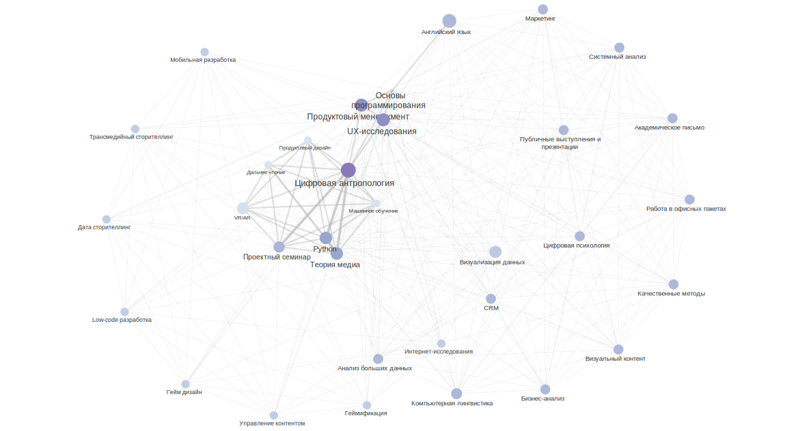

| institution | link | department | program_name | program_code | graduate_level | location | disciplines | competencies | employment | full_text |
|---|---|---|---|---|---|---|---|---|---|---|
| Московский государственный университет имени М.В. Ломоносова | http://www.hist.msu.ru/study/programs/bac/460301/program.php?ELEMENT_ID=55057 | Исторический факультет | Историческая информатика | 46.03.01 | Бакалавриат | Москва | Иностранный язык Русский язык и культура речи Философия Экономика Безопасность жизнедеятельности Физическая культура Информатика и математика Современное естествознание Основы археологии Основы этнологии История первобытного общества История древнего Востока История древней Греции История древнего Рима История средних веков История России до XIX века История России XIX – начала XX века Отечественная история XX века История современной России История стран Европы и Америки, 1640-1815 годов История стран Европы и Америки, 1815-1918 годов История стран Европы и Америки, 1918-1945 годов История стран Европы и Америки, 1945-до наших дней История южных и западных славян Общая история Церкви История стран Азии и Африки История стран Ближнего Зарубежья Теоретико-методологические проблемы исторической науки Источниковедение электронных документов Историография междисциплинарных исторических исследований Архивоведение и архивные информационные технологии для историков Историческая география и географические информационные системы Латинский язык История искусства Социология Основы политологии История средневековой культуры (IV-XIV веков) История средневековой культуры (XV-середина XVII веков) Всемирная литература Русская литература Стратегический менеджмент Язык истории и политики Количественные методы в исторических исследованиях Теория и практика преподавания истории в средней школе Интернет-эвристика для историков Компьютерные методы анализа нарративных источников Компьютерная графика для историков Введение в историческую информатику Спецсеминар по выпускной квалификационной работе бакалавра (по профилю) Методы визуализации и репрезентации данных разнородных исторических источников: введение в R Информационные системы и базы данных в исторических исследованиях Индустриализация и модернизационные процессы в Российской империи и СССР: электронные ресурсы, методы анализа Мировая история финансов, банков и денег от средних веков до XXI века: исследовательские подходы и методы Внешняя торговля России в XVIII-XX вв.: источники, электронные ресурсы и методы их анализа Биржевые кризисы и “аномалии”: исторический опыт и методы исследования Технологии оцифровки трёхмерных пространственных исторических данных: 3d моделирование, фотограмметрия, лазерное сканирование, цифровая аэрофотосъёмка Методы и технологии работы историка с аудиовизуальными документами Разработка исторических интернет-ресурсов | NA | NA | NA |
| Московский государственный университет имени М.В. Ломоносова | http://www.hist.msu.ru/study/programs/mag/460401/program.php?ELEMENT_ID=53150 | Исторический факультет | Историческая информатика | 46.04.01 | Магистратура | Москва | Иностранный язык Современное естествознание Наука о данных и искусственный интеллект Философия Экономика Правоведение Методологические проблемы исторических исследований Теоретико-методологические проблемы преподавания истории Музееведение Компьютерные методы анализа массовых источников Методы и технологии социальной истории Спецсеминар по научной проблематике исторической информатики Компьютерное моделирование исторических процессов Математическая логика для историков Компьютерные реконструкции объектов историко-культурного наследия Методы и технологии клиометрики | NA | NA | NA |
| Тамбовский государственный университет имени Г.Р. Державина | https://www.tsutmb.ru/abiturientu/magistratura/programs/istoriya-magisterskaya-programma-istoricheskaya-informatika/ | Факультет истории, мировой политики и социологии | Историческая информатика | 46.04.01 | Магистратура | Тамбов | Научно-исследовательский семинар Управление проектами: методы и технологии Межкультурные коммуникации Информационные технологии в профессиональной деятельности Иностранный язык в профессиональной сфере Актуальные проблемы исторических исследований Междисциплинарные подходы в современной исторической науке Педагогика и психология высшей школы Методологические проблемы исторической информатики Статистика и анализ данных Сохранение историко-культурного наследия методами исторической информатики Информационные ресурсы по социальной истории Введение в гуманитарную информатику Исторические информационные образовательные ресурсы Цифровые возможности презентации и сохранения исторических источников Цифровые методы анализа текста в исторических исследованиях Моделирование исторических процессов Компьютерная графика и интерактивная анимация Геоинформационные системы в исторических исследованиях Методы и технологии сетевого анализа Историография исторической информатики и Digital history | Цель - достижение выпускниками планируемых результатов: знаний, умений и способностей в области российской и всеобщей истории, использования методов исторической информатики в исторических исследованиях, а также в сфере преподавания истории в общеобразовательных учреждениях | Специалист по цифровизации историко-культурного контента Специалист в области архивного и музейного дела Историк | ЦЕЛЬ ПРОГРАММЫ достижение выпускниками планируемых результатов: знаний, умений и способностей в области российской и всеобщей истории, использования методов исторической информатики в исторических исследованиях, а также в сфере преподавания истории в общеобразовательных учреждениях. Актуальность программы обусловлена тем, что формирование цифровой экономики, проникновение информационных технологий во все сферы общественной жизни, создание на основе этих технологий новой социально-культурной инфраструктуры – все эти процессы определяют направление современного тренда развития информационного общества, что выражается, помимо прочего, в появлении социального заказа на соответствующие компетенции. Этот вызов требует появления образовательных программ, способных сформировать эти компетенции, востребованных на рынке труда. Таким образом, конкурентоспособность данной программы обусловлена её направленностью на формирование новых решений в сфере подготовки специалистов в системе исторического образования, инфраструктуры исследования и сохранения историко-культурного наследия Этапы обучения img / 01 Первый курс / 02 Второй курс Геоинформационные системы в исторических исследованиях, Методы и технологии сетевого анализа, Историография исторической информатики и Digital history Ключевые дисциплины Актуальные проблемы исторических исследований обучающиеся изучают проблематику демографической, геоэкологической, социокультурной истории, истории повседневности и т.д Введение в гуманитарную информатику обучающиеся имею возможность познакомиться с такими направлениями как использование информационных технологий в работе с текстами, количественными данными, графикой и анимацией Междисциплинарные подходы в современной исторической науке направлена на изучение методологических основ и принципов применения междисциплинарных подходов в исторических исследованиях Кем вы станете Вариантов профессий много, а конечный выбор зависит только от вас! Специалист по цифровизации историко-культурного контента Специалист в области архивного и музейного дела Историк |
| Ижевский государственный технический университет им. М.Т. Калашникова | https://istu.ru/department/kafedra-lingvistika#tab-science | Кафедра «Лингвистика» | Разработка интеллектуальных диалоговых систем | 09.03.03 | Бакалавриат | Ижевск | Интеллектуальные информационные системы и технологии Статистические методы в лингвистике / Информационный поиск Автоматизированная обработка естественного языка Языки и форматы разметки лингвистических данных Лингвистическое обеспечение информационных систем Электронные издания, библиотеки, корпуса Фонетика и основы обработки звучащей речи Управление проектной деятельностью | Способность разрабатывать и адаптировать прикладное программное обеспечение Способность принимать участие в управлении проектами создания информационных систем на стадиях жизненного цикла Способность использовать современные информационные технологии и программные средства при решении задач профессиональной деятельности Способность применять в профессиональной деятельности основные понятия и категории современной лингвистики | Выпускник может работать программистом, специалистом по информационным системам, руководителем проектов в области информационных технологий, системным аналитиком, специалистом по тестированию в области информационных технологий. | Кафедра «Лингвистика» образована 1 сентября 2005 года как учебно-научное подразделение факультета «Экономика, право и гуманитарные науки». Заведующим кафедрой назначен, а затем избран доктор филологических наук Баранов Виктор Аркадьевич. Целью создания кафедры явилась необходимость повышения уровня языковой подготовки студентов ИжГТУ. Кафедра осуществляет набор и подготовку бакалавров по направлению 45.03.03 Фундаментальная и прикладная лингвистика, профиль Теоретическая и компьютерная лингвистика. Кроме того, преподаватели кафедры ведут занятия по русскому языку, культуре речи, риторике, стилистике и древним языкам, а с 2018 года – немецкому и французскому языкам, а также по некоторым другим лингвистическим дисциплинам. Особой сферой деятельности сотрудников кафедры является развитие научных направлений на стыке лингвистики, с одной стороны, и математики, информатики, программирования – с другой. Описание образовательной программы Образовательная программа предусматривает изучение передовых технологий обработки текста с применением искусственного интеллекта, лингвистических моделей и математических алгоритмов, которые могут быть использованы для решения широкого ряда аналитических задач. Например, для оценки эффективности PR- или рекламной кампаний, действий в рамках этих кампаний, отслеживания отклика на проводимые мероприятия, для извлечения из анализируемого корпуса текстов фактов, событий, персон, объектов, организаций, предметов, географических названий и их связей между собой, контекстов упоминаний и для решения других задач, необходимых для исследования потребностей деятельности организаций с целью определения проблем бизнеса и формирования предложений их решения. Актуальность программы Программа подготовки включает в себя классические дисциплины программирования и алгоритмизации, моделирования и анализа данных и дисциплины предметной области - лингвистики, цель изучения которых - проведение количественного и качественного, в том числе с применением искусственного интеллекта, контент-анализа текстовых корпусов в соответствии с временными, гендерными и иными параметрами. Дисциплины Интеллектуальные информационные системы и технологии Статистические методы в лингвистике / Информационный поиск Автоматизированная обработка естественного языка Языки и форматы разметки лингвистических данных Лингвистическое обеспечение информационных систем Электронные издания, библиотеки, корпуса Фонетика и основы обработки звучащей речи Управление проектной деятельностью и др. Специальные дисциплины ведут преподаватели кафедр «Информационные системы» (зав. каф. д-р физ.-мат. наук, проф. М. М. Горохов) и «Лингвистика» (зав. каф. д-р филол. наук, проф. В. А. Баранов). Получаемые компетенции Способность разрабатывать и адаптировать прикладное программное обеспечение Способность принимать участие в управлении проектами создания информационных систем на стадиях жизненного цикла; Способность использовать современные информационные технологии и программные средства при решении задач профессиональной деятельности Способность применять в профессиональной деятельности основные понятия и категории современной лингвистики Трудоустройство Выпускник может работать программистом, специалистом по информационным системам, руководителем проектов в области информационных технологий, системным аналитиком, специалистом по тестированию в области информационных технологий. |
| Ижевский государственный технический университет им. М.Т. Калашникова | https://istu.ru/department/kafedra-lingvistika#tab-science | Кафедра «Лингвистика» | Теоретическая и компьютерная лингвистика | 45.03.03 | Бакалавриат | Ижевск | Введение в теорию коммуникации Основы судебной лингвистической экспертизы Литературное редактирование Документная лингвистика Риторика Основы психолингвистики Основы социолингвистики Языки мира и языковые ареалы История русского языка Палеография Английский язык Немецкий язык Информатика и основы программирования Технология проектирования программ Лингвистическое обеспечение информационных систем Электронные издания Технологии обработки текста и звучащей речи Технологии корпусной лингвистики | NA | Сфера деятельности выпускника: ИТ-компании: создание и продвижение сайтов, разработка прикладных программ в области анализа естественного языка, документооборота, автоматического перевода, создания словарей, текстовых корпусов, лингвистических ресурсов и др.; средства массовой информации (в том числе электронные); рекламные агентства: копирайтинг, спичрайтинг; издательства, типографии (редакторская подготовка изданий); лингвистическая экспертиза; перевод (английский, немецкий); работа с документами в любых областях, в том числе работа с электронными документами, электронными библиотечными и архивными системами, текстовыми базами данных. Выпускники направления «Фундаментальная и прикладная лингвистика» («Теоретическая и компьютерная лингвистика») работают программистами, тестировщиками программ, техническими писателями, преподавателями английского языка и русского как иностранного, переводчиками, документоведами, экспертами на ведущих предприятиях, в государственных структурах и крупных коммерческих организациях Удмуртии и других регионов (Экспертно-криминалистический центр МВД УР, АО «Ижевский мотозавод «Аксион-холдинг»», ПАО Сбербанк, НПО «Компьютер», НТВП «Кедр», компании ELMA, EPAM Systems, Codax, DIRECTUM, Binet.pro и др.). Некоторые выпускники продолжают учебу в других вузах, как российских, так и зарубежных. | Сфера деятельности выпускника: ИТ-компании: создание и продвижение сайтов, разработка прикладных программ в области анализа естественного языка, документооборота, автоматического перевода, создания словарей, текстовых корпусов, лингвистических ресурсов и др.; средства массовой информации (в том числе электронные); рекламные агентства: копирайтинг, спичрайтинг; издательства, типографии (редакторская подготовка изданий); лингвистическая экспертиза; перевод (английский, немецкий); работа с документами в любых областях, в том числе работа с электронными документами, электронными библиотечными и архивными системами, текстовыми базами данных. Выпускники Выпускники направления «Фундаментальная и прикладная лингвистика» («Теоретическая и компьютерная лингвистика») работают программистами, тестировщиками программ, техническими писателями, преподавателями английского языка и русского как иностранного, переводчиками, документоведами, экспертами на ведущих предприятиях, в государственных структурах и крупных коммерческих организациях Удмуртии и других регионов (Экспертно-криминалистический центр МВД УР, АО «Ижевский мотозавод «Аксион-холдинг»», ПАО Сбербанк, НПО «Компьютер», НТВП «Кедр», компании ELMA, EPAM Systems, Codax, DIRECTUM, Binet.pro и др.). Некоторые выпускники продолжают учебу в других вузах, как российских, так и зарубежных. Научная деятельность Результаты исследовательской работы сотрудников кафедры «Лингвистика» были представлены более чем в 150 научных статьях в российских и зарубежных журналах, а также на всероссийских и международных конференциях. С 2005 года более 25 проектов (как коллективных, так и индивидуальных) были поддержаны грантообразующими государственными фондами и Министерством образования и науки РФ. В 2006-2018 гг. кафедра «Лингвистика» совместно с коллективами других российских и зарубежных вузов подготовила и провела 8 международных конференций и школ «Письменное наследие и информационные технологии (El’Manuscript)» в городах Ижевск, Казань, Уфа, Петрозаводск, Новосибирск, Варна (Болгария), Вильнюс (Литва), Вена и Кремс (Австрия). Научные направления кафедры: Исторические, корпусные и лингвотекстологические исследования древних славянских рукописей и текстов Исследования в области диалектного словообразования Исследования и прикладные разработки в области современной и исторической лексикологии, семасиологии, лексикографии Преподаватели кафедры осуществляют прикладные работы в области компьютерной лингвистики. На кафедре созданы и развиваются: корпус средневековых славянских рукописей XI-XV вв. (http://manuscripts.ru), корпус языка М. В. Ломоносова (http://lomonosov.pro), лингвогеографическая информационная система «Диалект» (http://dialect.manuscripts.ru). Научные связи кафедры «Лингвистика» Казанский (Приволжский) федеральный университет (совместные прикладные разработки в области хранения, обработки и издания средневековых славянских рукописей). Новосибирский государственный университет (организация научных мероприятий). Петрозаводский государственный университет (организация научных мероприятий). Кирилло-Мефодиевский научный центр Болгарской Академии наук (совместные прикладные работы в области исследования и публикации средневековых славянских рукописных памятников). Институт славистики Венского университета (Австрия) (совместные прикладные разработки в области хранения, обработки и издания средневековых славянских рукописей). École Normale supérieure Lettres et Sciences humanes (Высшая гуманитарная школа), Lyon, France, группа Base de Franҫais Médiéval (координация работ в области разработки лингвистических и текстологических стандартов). Научные сообщества Научное сообщество «Письменное наследие» Ассоциация «История и компьютер» Российское научное сетевое сообщество цифровой гуманитаристики |
| УрФУ им. первого Президента России Б.Н. Ельцина | https://dh-urfu.skbkontur.ru/?utm_source=site&utm_medium=urfu&utm_campaign=urfu&utm_term=magistratura_tsifrovaya_gumanitaristika#tab-2s | Уральский гуманитарный институт | Интеллектуальные системы в гуманитарной среде | 45.04.04 | Магистратура | Екатеринбург | Работа в офисных пакетах Основы программирования Цифровые технологии в гуманитарной сфере (введение в специальность DH) Английский язык Теория и практика бизнес-коммуникаций Компьютерная лингвистика Качественные методы в социальных науках Основы проектной деятельности Основы SQL и работа с базами данных Прикладная статистика и анализ данных Работа с данными с помощью Python Технологии работы с визуальным контентом Системный анализ Основы публичных выступлений и презентаций Создание и запуск ИТ-продукта Работа в сервисах отчетности Профессиональные курсы Бизнес-анализ Академическое письмо Цифровые технологии в образовании Внутрикорпоративные коммуникации Исследования пользователей Прикладной маркетинг Развитие продукта Антропология социальных медиа Анализ больших данных Информационные технологии в музейной практике Психология человека в цифровом мире Теория медиа Цифровые методы в исторических исследованиях | 1. Проводить научные и бизнес-исследования, выдвигать гипотезы и проверять их на практике 2. Систематизировать данные, обрабатывать их, готовить количественную и качественную аналитику с помощью скриптов и программ 3. Узнаете о проектном подходе в запуске продукта и стратегическом планировании 4. Строить экономику бизнеса, презентовать и продвигать проект в разных каналах | Выпускники нашей магистратуры смогут развиваться и работать в любом направлении, смежном с компьютерными и гуманитарными науками. Продуктовый маркетолог «Продуктовый маркетолог помогает создавать нужные людям продукты и делать так, чтобы в каждой точке контакта у клиента был позитивный опыт. Благодаря этому клиенты покупают наши сервисы и рекомендуют их знакомым. Что мы для этого делаем: Проводим исследования. Изучаем клиентов, мотивацию, потребности. Анализируем то, что окружает клиента. Это помогает понять, чего хочет клиент и как наше решение поможет его бизнесу. Считаем, сколько будут стоить продукты и на каких условиях их продавать. Рассказываем клиентам о продукте: работаем со СМИ, придумываем рекламные кампании и запускаем мероприятия. Мы стараемся, чтобы наши коммуникации были экологичными, уместными и полезными. Помогаем отделу продаж: собираем базу релевантных клиентов, создаем методологию, чтобы менеджеру легко было рассказывать о продукте и доносить ценность. Анализируем эффективность проекта: сколько и как мы зарабатываем, какой канал коммуникации лучше работает, строим прогнозы. Здесь на помощь приходят бизнес-аналитики и дата-сайентисты, которые обрабатывают большие объемы данных. Маркетолог изучает эти данные и делает выводы. Продуктовый маркетолог внимателен к тому, что происходит у клиентов, у коллег и в целом в мире. Мы смотрим на ситуации глазами пользователя, разработки и бизнеса. Так мы помогаем принимать решения руководителям и понимаем, как продукт будет развиваться. Маркетолог как маяк, который освещает путь к цели.» Аналитик данных «Аналитики дают бизнесу информацию для принятия решений. Аналитик делает это с помощью данных. Например, маркетолог хочет узнать, в какой упаковке хлеб продается лучше всего. Аналитик собирает данные о продажах, а затем с помощью статистических критериев выбирает лучшую упаковку. Аналитик строит прогнозные модели. Например, магазин хочет узнать, как хорошо будет продаваться хлеб в следующем году. Аналитик собирает данные о продажах за прошлый год и строит математическую модель, которая предсказывает продажи. Аналитику данных нужно знать: Excel SQL Статистика и статистические пакеты/языки обработки данных R или Python Power BI или другие инструменты визуализации данных» Менеджер маркетинговых исследований «Исследователи и интервьюеры работают «в полях», где они получают данные, и в офисе, где они данные обрабатывают. Суть работы интервьюера, с одной стороны, проста: поднял трубку, задал вопросы по предложенной анкете, зафиксировал результат. С другой стороны, все люди разные, к каждому даже в коротком разговоре нужно найти свой подход, убедить человека уделить нам 5–10 минут. Результаты работы интервьюера обобщаются, мы передаем их аналитикам нашего отдела, которые, в свою очередь, делают на основании собранного массива данных выводы о состоянии дел на том или ином участке рынка, выясняют реальные потребности клиентов и т.д. Далее эти данные аналитики презентуют заказчикам — коллегам из команд продуктов. Маркетологи, разработчики, руководители проектов, используя эти данные, формулируют идеи продвижения продуктов, делают предложения клиентам по новым продуктам, получают более широкую картину. Интервьюер — это стартовая позиция, которая позволяет получить хороший опыт общения с людьми, умение находить разный подход к ним, развить речь и умение вести телефонные переговоры». Денис Ерышканов, руководитель колл-центра отдела маркетинговых исследований «Исследователь помогает услышать голос целевой аудитории продукта или услуги. Понять потребности аудитории, желания или проблемы. В результатах исследований кроются ответы или новые гипотезы о продукте, конкурентах и рынке в целом. Типичные задачи для исследователя: Узнать долю рынка, лояльность клиентов, причины непродления, уровень удовлетворенности и прочие вопросы, связанные с проверкой гипотез на большом числе респондентов. Это количественные исследования — телефонные, интернет-опросы и другие. Изучить бизнес-процессы целевой аудитории, погрузиться в пользовательский опыт, сценарии, мотивы и потребности клиентов, протестировать восприятие образа продукта и оценить рекламные материалы. Это качественные исследования: фокус-группы, глубинные и полуформализованные интервью, наблюдение и другие. Посчитать ёмкость рынка, определить демографию клиентов, сегментировать клиентов. Это кабинетные исследования: аналитика баз, сбор информации по рынку, отрасли, региону. Сравнить цены и функциональность продуктов конкурентов. Это конкурентная разведка». Менеджер по коммуникациям «Менеджер по коммуникациям может приложить свой талант в нескольких сферах: копирайтинг, контент-маркетинг, PR, SMM, контент-стратег и т.д. Если умеете в коммуникации, открываются многие двери. Коммуникатор помогает заказчику (бизнесу, руководству компании, органу власти) донести то, что нужно, до аудитории в целости и сохранности. Такой специалист думает: что, как и где нужно сказать, чтобы не проиграть по пути в «глухие телефончики». Такой специалист умеет писать хорошие, крепкие и полезные тексты, разбирается в визуальном повествовании, знает, как работают соцсети и что нужно делать, чтобы быть в них заметными. Это человек-оркестр в лучшем смысле: и написать, и снять, и сказать, и упаковать, и опубликовать, и продвинуть. | Цифровая гуманитаристика, или Digital Humanities, — это современное направление науки, связанное с применением компьютерных методов в социальных и гуманитарных исследованиях. В ходе освоения программы студент, с одной стороны, приобретает широкие знания в области теории и методологии гуманитарных дисциплин, а с другой — навыки компьютерного сопровождения таких исследований, которые могут применяться как в академической среде, так и за ее пределами при решении широкого круга аналитических задач. Студент учится формализовывать различные виды данных, анализировать их с использованием современных IT-инструментов, представляя результаты своего анализа в электронной форме. Программа реализуется совместно с компанией СКБ Контур, одним из национальных лидеров IT-отрасли. Сотрудники СКБ Контур преподают студентам дисциплины технического и управленческого циклов, руководят практикой студентов. Лучшие студенты привлекаются к работе над реальными IT-проектами компании. Программа вошла в Топ-10 наиболее перспективных специальностей по версии """"Российской газеты"""". Для кого предназначена эта программа? Программа предназначена для студентов, интересующихся возможностями применения современных компьютерных решений в гуманитарных и социальных исследованиях, как чисто академических, так и отраслевых, а также для ребят, стремящихся заниматься аналитической и управленческой работой на предприятиях IT-отрасли и в смежных сферах бизнеса. Преимущества программы Открытость для абитуриентов любого профиля подготовки: программа доступна для выпускников любых гуманитарных специальностей, желающих расширить свои знания в области гуманитаристики, научиться программировать и реализовывать научные, просветительские, культурные проекты, требующие компетенций в области информационных технологий. Сочетание фундаментальной гуманитарной подготовки с углубленным изучением IT: наряду с дисциплинами, направленными на знакомство студентов с современным состоянием самых разных гуманитарных наук и возможностями применения в них компьютерных технологий, студент изучает целый ряд прикладных математических и IT-дисциплин: программирование, базы данных, статистика, компьютерная графика, web-дизайн. Проектная деятельность как основа профессиональной самореализации: в течение всего срока обучения магистрант работает над конкретным научным или просветительским проектом, соответствующим его собственным профессиональным интересам, параллельно осваивая те информационные технологии, которые необходимы для реализации проектов именно такого типа. Магистерская программа поможет специалистам, которые уже работают, но чувствуют недостаток технических или менеджерских навыков. В учебе вам поможет Критическое и системное мышление Любовь к цифрам и поиску закономерностей Умение находить общий язык с людьми, выявлять их потребности и мотивировать на результат Знание иностранного языка Программа обучения Лекции читают ученые УрФУ и практикующие специалисты Контура, которые проверили на себе все инструменты и делятся ими с вами. Программа обучения состоит из общих курсов и двух траекторий на выбор. В траектории Контура развиваются профессиональные навыки, применимые к бизнес-задачам. Траектория УрФУ — академическая, она посвящена применению аналитических методов к гуманитарным наукам. Чему вы научитесь 1. Проводить научные и бизнес-исследования, выдвигать гипотезы и проверять их на практике 2. Систематизировать данные, обрабатывать их, готовить количественную и качественную аналитику с помощью скриптов и программ 3. Узнаете о проектном подходе в запуске продукта и стратегическом планировании 4. Строить экономику бизнеса, презентовать и продвигать проект в разных каналах Читайте истории наших студентов Павел Кузьмин 1 курс Я окончил бакалавриат по направлению «Востоковедение и африканистика», где учил один из самых сложных языков мира – японский. На четвёртом курсе мне захотелось сменить свою профессиональную деятельность. Привлекала IT-сфера, но самих технических навыков у меня не было. Поэтому я решил поступить на «Цифровую гуманитаристику». Обучение в магистратуре дает не только хард, но и софт скиллы. Например, работа в команде над проектом, когда необходимо быть коммуникабельным. Креативность и умение выступать перед публикой, когда, например, необходимо защитить свой стартап. Я советую поступать в магистратуру Контура всем своим друзьям, которые сейчас заканчивают бакалавриат. Это направление отличается от других малым количеством «классических» университетских дисциплин и интересным синтезом гуманитарной и технической сфер. Вера Сапожникова 1 курс Я уже полтора года работаю бизнес-аналитиком. Закончила ФИИТ, но поняла, что разработка мне неинтересна и поступила в магистратуру Контура «Цифровая гуманитаристика». Я изучила программу, посмотрела учебный план и поняла, что здесь концентрировано учат тем навыкам и скиллам, которые нужны в работе аналитика. Спойлер: это обучение помогло мне глубже заглянуть в профессию, предоставило теоретическую базу, открыло для меня новые направления и возможности. И это все только за 1 год обучения. Сегодня я работаю системным аналитиком в Контуре в Биллинге. Здесь круто настроена система обмена опытом, менторство и обучение. Андрей Спиридонов Выпускник 2022 года Я учился на специалитете в радиофаке на направлении «Радиоэлектронные системы и комплексы». Поступил, потому что понимал что свободное время еще есть и почему бы не занять его чем-то полезным. полученными знаниями и навыками. За время обучения в магистратуре мне были полезны и интересны такие предметы, как SQL, системный анализ, инициация и планирование ИТ-продукта. И другие предметы тоже, но они, как мне кажется, больше про расширение кругозора и погружение в сферу IT. Как максимум, я нашел комфортное место работы. Три месяца назад я попал в команду аналитиков данных Контура. Кем можно стать после магистратуры Выпускники нашей магистратуры смогут развиваться и работать в любом направлении, смежном с компьютерными и гуманитарными науками. Продуктовый маркетолог «Продуктовый маркетолог помогает создавать нужные людям продукты и делать так, чтобы в каждой точке контакта у клиента был позитивный опыт. Благодаря этому клиенты покупают наши сервисы и рекомендуют их знакомым. Что мы для этого делаем: Проводим исследования. Изучаем клиентов, мотивацию, потребности. Анализируем то, что окружает клиента. Это помогает понять, чего хочет клиент и как наше решение поможет его бизнесу. Считаем, сколько будут стоить продукты и на каких условиях их продавать. Рассказываем клиентам о продукте: работаем со СМИ, придумываем рекламные кампании и запускаем мероприятия. Мы стараемся, чтобы наши коммуникации были экологичными, уместными и полезными. Помогаем отделу продаж: собираем базу релевантных клиентов, создаем методологию, чтобы менеджеру легко было рассказывать о продукте и доносить ценность. Анализируем эффективность проекта: сколько и как мы зарабатываем, какой канал коммуникации лучше работает, строим прогнозы. Здесь на помощь приходят бизнес-аналитики и дата-сайентисты, которые обрабатывают большие объемы данных. Маркетолог изучает эти данные и делает выводы. Продуктовый маркетолог внимателен к тому, что происходит у клиентов, у коллег и в целом в мире. Мы смотрим на ситуации глазами пользователя, разработки и бизнеса. Так мы помогаем принимать решения руководителям и понимаем, как продукт будет развиваться. Маркетолог как маяк, который освещает путь к цели.» Анастасия Рысева, маркетолог Аналитик данных «Аналитики дают бизнесу информацию для принятия решений. Аналитик делает это с помощью данных. Например, маркетолог хочет узнать, в какой упаковке хлеб продается лучше всего. Аналитик собирает данные о продажах, а затем с помощью статистических критериев выбирает лучшую упаковку. Аналитик строит прогнозные модели. Например, магазин хочет узнать, как хорошо будет продаваться хлеб в следующем году. Аналитик собирает данные о продажах за прошлый год и строит математическую модель, которая предсказывает продажи. Аналитику данных нужно знать: Excel SQL Статистика и статистические пакеты/языки обработки данных R или Python Power BI или другие инструменты визуализации данных» Владимир Савельев, аналитик данных Менеджер маркетинговых исследований «Исследователи и интервьюеры работают «в полях», где они получают данные, и в офисе, где они данные обрабатывают. Суть работы интервьюера, с одной стороны, проста: поднял трубку, задал вопросы по предложенной анкете, зафиксировал результат. С другой стороны, все люди разные, к каждому даже в коротком разговоре нужно найти свой подход, убедить человека уделить нам 5–10 минут. Результаты работы интервьюера обобщаются, мы передаем их аналитикам нашего отдела, которые, в свою очередь, делают на основании собранного массива данных выводы о состоянии дел на том или ином участке рынка, выясняют реальные потребности клиентов и т.д. Далее эти данные аналитики презентуют заказчикам — коллегам из команд продуктов. Маркетологи, разработчики, руководители проектов, используя эти данные, формулируют идеи продвижения продуктов, делают предложения клиентам по новым продуктам, получают более широкую картину. Интервьюер — это стартовая позиция, которая позволяет получить хороший опыт общения с людьми, умение находить разный подход к ним, развить речь и умение вести телефонные переговоры». Денис Ерышканов, руководитель колл-центра отдела маркетинговых исследований «Исследователь помогает услышать голос целевой аудитории продукта или услуги. Понять потребности аудитории, желания или проблемы. В результатах исследований кроются ответы или новые гипотезы о продукте, конкурентах и рынке в целом. Типичные задачи для исследователя: Узнать долю рынка, лояльность клиентов, причины непродления, уровень удовлетворенности и прочие вопросы, связанные с проверкой гипотез на большом числе респондентов. Это количественные исследования — телефонные, интернет-опросы и другие. Изучить бизнес-процессы целевой аудитории, погрузиться в пользовательский опыт, сценарии, мотивы и потребности клиентов, протестировать восприятие образа продукта и оценить рекламные материалы. Это качественные исследования: фокус-группы, глубинные и полуформализованные интервью, наблюдение и другие. Посчитать ёмкость рынка, определить демографию клиентов, сегментировать клиентов. Это кабинетные исследования: аналитика баз, сбор информации по рынку, отрасли, региону. Сравнить цены и функциональность продуктов конкурентов. Это конкурентная разведка». Сергей Ловыгин, специалист по маркетинговым исследованиям Менеджер по коммуникациям «Менеджер по коммуникациям может приложить свой талант в нескольких сферах: копирайтинг, контент-маркетинг, PR, SMM, контент-стратег и т.д. Если умеете в коммуникации, открываются многие двери. Коммуникатор помогает заказчику (бизнесу, руководству компании, органу власти) донести то, что нужно, до аудитории в целости и сохранности. Такой специалист думает: что, как и где нужно сказать, чтобы не проиграть по пути в «глухие телефончики». Такой специалист умеет писать хорошие, крепкие и полезные тексты, разбирается в визуальном повествовании, знает, как работают соцсети и что нужно делать, чтобы быть в них заметными. Это человек-оркестр в лучшем смысле: и написать, и снять, и сказать, и упаковать, и опубликовать, и продвинуть. Юлия Позднякова, специалист по связям с общественностью Практика в Контуре Во время учебы в магистратуре вы можете пройти практику в Контуре: работать над задачами в существующем сервисе или развивать свой стартап. Весь 4 семестр посвящен практикам и написанию дипломной работы. «Половина курсов проходит в офисе Контура. Тут студенты учатся работать с данными, изучают системную аналитику и аналитику в бизнесе, осваивают навыки редактуры, копирайтинга. Запускают проекты и проводят исследования, получают компетенции, необходимые менеджерам проектов». Скользкова Светлана Федоровна руководитель образовательной программы и практики в Контуре |
| УрФУ им. первого Президента России Б.Н. Ельцина | https://programs.edu.urfu.ru/ru/10152/ | Уральский гуманитарный институт | Информационное и документационное обеспечение управления | 46.03.02 | Бакалавриат | Екатеринбург | История России и Всеобщая история Государственная служба в РФ: история, теория, практика Документационное обеспечение управления Теория и практика архивного дела Компьютерные технологии в архивном деле и ДОУ Информационное, архивное, трудовое, административное право Кадровое обеспечение управления Основы информационной безопасности Информационно-аналитическая деятельность Информационные системы в архивном деле и управлении Менеджмент: основы делового администрирования | Эффективно работать с документами и информацией (создавать, выявлять, критически анализировать и использовать информацию, как в процессе принятия управленческого решения, так и в научных исследованиях и проектах) | аналитик, сотрудник информационно-аналитической службы Аналитик – это специалист, способный решать задачи аналитики. Работа аналитика заключается в анализе разнообразных данных, текстовых и цифровых, на основании которых можно делать определённые выводы. Аналитики находят применение своей профессии в научных и исследовательских учреждениях, в государственных структурах, банках, медицине, страховом бизнесе, а также в экономической сфере деятельности. Аналитик должен собирать различные цифровые данные, анализировать и впоследствии уметь правильно трактовать их. Для анализа данных приходится использовать различные способы, которые зависят от его цели. историк-архивист Деятельность специалиста направлена на формирование и сохранение архивного фонда Российской Федерации как важнейшей части культурного наследия общества, его духовного опыта, истории российской государственности; организацию использования архивных документов в целях включения архивного наследия в систему информационных ресурсов общества, в целях углубления исторического, гуманитарного и естественнонаучного знания. менеджер по персоналу Менеджер по персоналу, это специалист, отвечающий за формирование кадровых ресурсов в организации. В его обязанности входит довольно широкий круг задач (задачи эти зависят от размера компании или фирмы): подбор кадров, оформления документации (ведение кадрового делопроизводства), аттестация и обучение персонала, организация мотивации сотрудников и даже формирование и развитие корпоративной культуры. референт - помощник руководителя Референт – помощник руководителя – это специалист с высшим образованием. Референт – помощник руководителя является ведущим специалистом службы документационного обеспечения управления организации. Неотъемлемой частью работы для референта – помощника руководителя является налаживание и поддержание контактов с сотрудниками, с партнерами, с конкурентами и с клиентами. Для этого ему потребуются знания ораторского искусства, международного протокола, профессионального этикета. Референт – помощник руководителя является имиджевой составляющей, как фирмы, так и самого руководителя. Для этого референт – помощник руководителя должен формировать позитивную оценку организации, поддерживать контакты со СМИ и партнерами, а также формировать внутри компании ее миссию, цели и помогать руководителю в создании его образа, как для общественности, так и для сотрудников. Таким образом, референт – помощник руководителя – это инициативный и здравомыслящий помощник руководителя, обладающий всеми профессиональными навыками, необходимыми для работы в офисе, принимающий решения в пределах своей компетентности и при необходимости берущий управление на себя. руководитель службы документационного обеспечения управления, документовед; Документовед, это специалист, который планирует, организует и совершенствует деятельность службы документационного обеспечения управления, осуществляет контроль за состоянием делопроизводства в организации. Документовед должен иметь знания, практический опыт и владеть методами анализа, проектирования и организации документационного обслуживания учреждения (или структурного подразделения) любого уровня управления, любой отрасли и любой формы собственности. Документовед подготовлен к профессиональной работе в государственных органах федерального уровня, субъектов Федерации, муниципального уровня, в государственных, общественных, кооперативных и коммерческих учреждениях, организациях, фирмах, предприятиях в службах документационного обеспечения управления на должностях, требующих высшего образования, в том числе руководителем службы делопроизводства специалист по управлению информационным ресурсами Специалист по информационным ресурсам занимается созданием, поддержкой и продвижением различных информационных ресурсов (интернет-проектов). Это хорошее применение сочетания гуманитарного образования и навыков цифровой эпохи. Должностные обязанности специалиста по информационным ресурсам зависят от уровня занимаемой должности, как и в любой другой профессии. Специалист, ведущий специалист, главный специалист выполняют разные функции в соответствии с разработанными для них профессиональными стандартами, но в целом они вместе ведут работу по разработке, поддержке и продвижению информационных ресурсов. Это техническая обработка информационных ресурсов и их размещение на сайте, создание и редактирование ресурсов (в том числе, электронного архива и электронной библиотеки), управление информационными ресурсами в целом. | Описание программы: Направление подготовки: 46.03.02 Документоведение и архивоведение Научная отрасль: Гуманитарные науки Институт: Уральский гуманитарный институт Уровень образования: Бакалавриат Год(ы) набора: 2020-2023 Форма и срок обучения: Очная: 4 года Заочная: 4,6 года Язык обучения: Русский В 2020 году направлению «Информационное и документационное обеспечение управления» исполнилось 50 лет. К востоку от Москвы УрФУ является единственной площадкой, которая ведет непрерывную подготовку специалистов в области документоведения и архивоведения. Кафедра поддерживает тесные связи с «лидерами отрасли»: Всероссийским научно-исследовательским институтом документоведения и архивного дела (ВНИИДАД, Москва), Российским государственным гуманитарным университетом (Москва), с зарубежными партнерами – Университетом им. Марии Кюри-Склодовской (Люблин, Польша). Более 90% наших выпускников успешно трудоустроены. Почему стоит выбрать программу «Информационное и документационное обеспечение управления»? Программа «Информационное и документационное обеспечение управления» - это современно ориентированное образование, которое кратко можно охарактеризовать так: гармоничное сочетание навыков цифровой эпохи с традициями гуманитарного классического университетского образования. Программа подготовки соответствует профессиональным стандартам; компетенции согласованы с ведущими работодателями и отвечают потребностям российского рынка труда. Каждый наш выпускник готов к практической деятельности в сфере информационного и документационного обеспечения управления, управления архивным наследием Российской Федерации. Работодатели оценивают подготовку наших выпускников очень высоко! Более того, обучение будущих специалистов осуществляется в тесной взаимосвязи с представителями рынка труда, в числе которых Управление архивами Свердловской области, Правительство Свердловской области, Государственный архив Свердловской области, ПАО «Газпром», Сбербанк России, СКБ-Контур, Администрация Полномочного представителя Президента РФ в Уральском Федеральном Округе, Администрация Екатеринбурга и пр. Чему я буду учиться? Учебный план направления позволяет получить фундаментальное гуманитарное образование и необходимый набор знаний и навыков для успешной деятельности в информационной сфере. Значительное внимание уделено обучению современным компьютерным технологиям, основами информационно-аналитической и экспертной деятельности в уникальном тесном сочетании со знаниями истории Отечества и современных основ государственного управления в России и за рубежом. Высокий профессиональный уровень выпускников обеспечивается овладением дисциплинами профессионального блока: «Технологии документационного обеспечения управления», «Менеджмент», «Маркетинг», «Защита информации», а также блоком правовых дисциплин, при освоении которых студенты изучают административное, гражданское, трудовое, информационное, архивное, муниципальное право. Кем работают выпускники? Наши выпускники успешно трудоустраиваются в учреждения органов власти всех уровней, могут быть заняты в информационно-аналитических службах, информационных сервисах, успешно осуществлять деятельность в сфере управления персоналом, в банковской сфере, в системе науки и образования, в государственных и ведомственных архивах, службах ДОУ. Вот лишь некоторые должности, которые занимают подготовленные нами специалисты: - аналитик, сотрудник информационно-аналитической службы; - руководитель службы ДОУ, документовед; - специалист по управлению информационными ресурсами; - историк-архивист, сотрудник архивной службы, хранитель коллекций и фондов; - менеджер по персоналу. Известные выпускники Ройзман Евгений Вадимович – российский политик, экс-мэр Екатеринбурга. Редин Дмитрий Алексеевич – профессор, заведующий лабораторией эдиционной археографии. Партнеры и работодатели - Управление архивами Свердловской области, - Правительство Свердловской области, - Государственный архив Свердловской области, - ПАО «Газпром», - Сбербанк России, - СКБ-Контур, - Администрация Полномочного представителя Президента РФ в Уральском Федеральном Округе, - Администрация Екатеринбурга. |
| УрФУ им. первого Президента России Б.Н. Ельцина | https://programs.edu.urfu.ru/ru/10176/ | Уральский гуманитарный институт | Государственная служба Российской Федерации | 46.04.02 | Магистратура | Екатеринбург | Регионально-корпоративные модели управления; Картографические документы в системе управления; Практико-ориентированные технологии в управлении; Эффективная организация управленческих мероприятий; Правовое и кадровой обеспечение государственной службы; Основы аналитической и экспертной деятельности в профессиональной области; Государственное управление в России: история и современность; Практика преподавания профильных дисциплин в высшей школе; Технологии научной и проектной деятельности. | Документационное и информационное обеспечение управления и управление архивным делом; Создание локальной нормативной базы документационного обеспечения управления и архивного дела; Организация хранения, учета, комплектования, экспертизы ценности, справочно-поисковых средств и использования документов; Организации информационно-аналитического профиля; Государственные и ведомственные архивы; Архивы банков, предприятий и организаций; Органы государственной власти и органы местного самоуправления; Научно-исследовательские организации в области документоведения и архивоведения. | Выпускник осуществляет профессиональную деятельность в области: - документационного обеспечения управления в органах государственного управления; - информационно-аналитической деятельности в органах государственного управления; - разработки и внедрения систем электронного документооборота; - кадрового менеджмента и др. | Программа готовит специалистов для профессиональной служебной деятельности по обеспечению исполнения полномочий Российской Федерации, федеральных органов государственной власти, субъектов Российской Федерации, государственных органов субъектов Российской Федерации, федеральных территорий, органов публичной власти федеральных территорий и т.д.; Магистерская программа сформирована под запросы госсектора и бизнеса, нацелена на эффективное решение задач. В основе – работа с массивами информации: поиск, систематизация, хранение. Специфику госслужбы раскрывают блоки дисциплин: управление и планирование, аналитика и коммуникация. Доступно разъясняет тонкости нормативно-правого законодательства и учит обращаться с информационными технологиями и системами документооборота. Позволяет настроить процессы в малых и крупных корпорациях с нуля, эффективно управлять и строить личную карьеру. Исследования в магистратуре носят и научный, и прикладной характер. Учит владеть информацией. Программа стартовая для поступления в аспирантуру. Дополнительные преимущества для студентов: - Готовая траектория развития на государственной службе или в сфере науки; - Участие в грантах и проектах, возможность получать повышенные стипендии за научную деятельность; - Возможность обучения и построения карьеры в городе-миллионнике, входящем в топ мировых городов удобных для бизнеса; - Высокий спрос на выпускников направления в профессиональной среде. Выпускник по магистерской программе «Государственная служба Российской Федерации» может работать в документационных, информационных, кадровых, аналитических, архивных службах государственных предприятий, органов государственной власти и управления, а также в органах госслужбы. Доступное и качественное образование по мировым стандартам подготовки высококвалифицированных кадров. |
| Алтайский государственный университет | https://abiturient.asu.ru/obrprog/iimo/ | Институт истории и международных отношений | Документационное обеспечение управления и архивы в условиях цифровой трансформации | 46.03.02 | Бакалавриат | Барнаул | История (история России, всеобщая история) Философия Человек в современном мире Практикум """"Человек в современном мире"""" (дисциплины по выбору) Экономика личных решений Политика и управление Культура и креативность Основы современной социологии Деловое общение: риторика и письмо Иностранный язык Цифровая культура Цифровая культура в профессиональной деятельности Правовая культура Проектный менеджмент Практикум """"Проектный менеджмент"""" (дисциплины по выбору) Методы организации и проведения исторического исследования Теория и практика исследовательской деятельности Презентация результатов научного исследования Безопасность жизнедеятельности Физическая культура и спорт Элективные дисциплины по физической культуре и спорту Историческая хронология Вспомогательные исторические дисциплины Источниковедение Документология История отечественной культуры Документоведение Организация и технология ДОУ Культура оформления документов Организация работы в офисе Организация государственных учреждений России Организация работы с обращениями граждан Технотронные документы и архивы Электронный документооборот Кадровое делопроизводство Электронное правительство Конфиденциальное делопроизводство Информационно-аналитическое обеспечение органов управления Всеобщая история архивов История государственных учреждений История архивов России Использование архивных документов Архивоведение Научно-технические документы и архивы Местное самоуправление и муниципальные архивы Обеспечение сохранности, консервация и реставрация документов Архивная эвристика Архивный аутсорсинг и краудсорсинг Цифровые технологии в архивном деле Научно-исследовательская и проектная деятельность Основы научных исследований Управление проектами в профессиональной деятельности Учебная практика: организационно-управленческая практика Учебная практика: научно-исследовательская работа (получение первичных навыков научно-исследовательской работы) Производственная практика: проектная практика Производственная практика: преддипломная практика Подготовка к сдаче и сдача государственного экзамена Подготовка к процедуре защиты и защита выпускной квалификационной работы Введение в профессию (адаптивная дисциплина для лиц с ограниченными возможностями здоровья) | Чему научат. Технологиям документационного обеспечения управления и управлению архивному делу; основам организации хранения, учета, комплектования, экспертизе ценности, справочно-поисковым средствам и использованию архивных документов; нормативной базе документационного обеспечения управления и архивного дела; основам научных исследований в области документоведения и архивоведения. | Выпускники имеют возможность работать преподавателями в образовательных организациях всех уровней (школы, СПО, вузы), работают сотрудниками музеев, архивов, профильных научно-исследовательских институтов; трудятся в качестве экспертов в общественных и государственных организациях; работают редакторами и корреспондентами в СМИ (включая электронные); принимают участие в работе органов государственного и местного самоуправления, а также трудятся в туристическо-экскурсионных организациях. | Программа нацелена на преподавании актуальных знаний о современном документообороте, сделан акцент на изучение электронного документооборота в организациях. Программа по документоведению и архивоведению относится к числу практикоориентированных. Навыки практической работы формируются в ведущих организациях (архивы, государственные организации и коммерческие структуры) и реализуется с привлечением ведущих специалистов отрасли региона: Правительства Алтайского края; Министерства культуры Алтайского края, Государственного архива Алтайского края. Чему научат Технологиям документационного обеспечения управления и управлению архивному делу; основам организации хранения, учета, комплектования, экспертизе ценности, справочно-поисковым средствам и использованию архивных документов; нормативной базе документационного обеспечения управления и архивного дела; основам научных исследований в области документоведения и архивоведения. Карьерная траектория Благодаря углубленной практической подготовке, в том числе в ключевых организациях и ведомствах отрасли, выпускники успешно трудоустраиваются в качестве служащих органов государственной власти; в архивы (государственные, муниципальные, ведомственные, негосударственные); трудятся специалистами по документообороту в информационных, аналитических и многофункциональных центрах; работают специалистами кадровых отделов учреждений и предприятий; устраиваются в качестве преподавателей в учреждения высшего и средне-специального образования. Контакты Руководитель программы – доктор исторических наук, профессор кафедры отечественной истории Неженцева Наталья Владимировна. |
| Алтайский государственный университет | https://abiturient.asu.ru/programmag/iimo/ | Институт истории и международных отношений | Анализ данных и разработка цифровых медиа | 09.04.03 | Магистратура | Барнаул | NA | Чему научат. Применению системного подхода к информатизации и автоматизации; решению прикладных задач; моделированию прикладных и информационных процессов, описанию и реализации информационного обеспечения прикладных задач; построению информационных систем в области цифровых медиа на основе современных информационно-коммуникационных технологий и математических методов; подготовке обзоров, аннотаций, рефератов, научных докладов, публикаций; научно-исследовательской работе в области прикладной информатики; организации и управлению информационными ресурсами и сервисами; организации информационно-телекоммуникационной инфраструктуры и управлении информационной безопасностью информационных систем. | Выпускники магистерской программы по прикладной информатике смогут найти себя в качестве руководителя и/или менеджера компании по разработке и продвижению интерактивных медиапродуктов: фильмов, игр, сайтов, миров дополненной и смешанной реальности, 3D-объектов, дизайнерских решений, мобильных приложений под iOS и Android и т.п.; в качестве руководителя и исполнителя проектов в области цифровых технологий в гуманитарной сфере, в области сохранения и репрезентации историко-культурного наследия; в качестве специалиста по виртуальным историческим реконструкциям; смогут осуществлять научно-исследовательскую работу в области исследования закономерностей̆ становления и развития информационного общества; смогут работать аналитиками данных, специалистами по обработке и визуализации данных, консультантами в области аналитики и визуализации данных с применением основных методов и подходов науки о данных (Data Science), IT-консультантами. | Уникальная междисциплинарная магистерская программа реализуется в сетевой форме при участии ведущих специалистов в области истории, исторической информатики и информационных технологий Алтайского государственного университета и Сибирского федерального университета. В рамках изучения программы магистранты знакомятся с основными положениями науки о данных, большими данными, искусственным интеллектом. Отдельный блок программы посвящен цифровым технологиям и их применениям в сфере гуманитарных наук и практик. Чему научат Применению системного подхода к информатизации и автоматизации; решению прикладных задач; моделированию прикладных и информационных процессов, описанию и реализации информационного обеспечения прикладных задач; построению информационных систем в области цифровых медиа на основе современных информационно-коммуникационных технологий и математических методов; подготовке обзоров, аннотаций, рефератов, научных докладов, публикаций; научно-исследовательской работе в области прикладной информатики; организации и управлению информационными ресурсами и сервисами; организации информационно-телекоммуникационной инфраструктуры и управлении информационной безопасностью информационных систем. Карьерная траектория Выпускники магистерской программы по прикладной информатике смогут найти себя в качестве руководителя и/или менеджера компании по разработке и продвижению интерактивных медиапродуктов: фильмов, игр, сайтов, миров дополненной и смешанной реальности, 3D-объектов, дизайнерских решений, мобильных приложений под iOS и Android и т.п.; в качестве руководителя и исполнителя проектов в области цифровых технологий в гуманитарной сфере, в области сохранения и репрезентации историко-культурного наследия; в качестве специалиста по виртуальным историческим реконструкциям; смогут осуществлять научно-исследовательскую работу в области исследования закономерностей̆ становления и развития информационного общества; смогут работать аналитиками данных, специалистами по обработке и визуализации данных, консультантами в области аналитики и визуализации данных с применением основных методов и подходов науки о данных (Data Science), IT-консультантами. Контакты Руководитель программы – доктор исторических наук, профессор кафедры отечественной истории Владимиров Владимир Николаевич. |
| Сибирский федеральный университет | http://edu.sfu-kras.ru/programs?level=04&keywords=09.04.03.03&institute=633&open=yes | Гуманитарный институт | Прикладная информатика в области искусств и гуманитарных наук | 09.04.03 | Магистратура | Красноярск | Антропология Визуальная антропология Визуальная семиотика и дизайн Виртуальные музеи Виртуальные музеи Городское и территориальное развитие Деловой иностранный язык Информационное общество и проблемы прикладной информатики Информационные технологии в искусстве и гуманитарных науках Креативные индустрии Методология и технология проектирования информационных систем Научно исследовательский семинар Основы научных исследований Практический курс письменного перевода Программная инженерия Статистические методы в гуманитарных исследованиях Теория и практика виртуальной реальности и искусственного интеллекта Теория и практика креативной деятельности Территориальное развитие: социокультурное измерение Технологии визуализации культурных объектов Технологии сохранения: актуализации и репрезентации культурного наследия Уникальные историко-культурные территории Управление информационными проектами в социально-культурной сфере Философские проблемы науки и техники | NA | NA | NA |
| Национальный исследовательский университет «Высшая школа экономики» | https://www.hse.ru/ma/dh/?ysclid=le1lnxjry6734204830 | Факультет гуманитарных наук | Цифровые методы в гуманитарных науках | 45.04.03 | Магистратура | Москва | Проектно-исследовательский семинар """"Цифровые проекты"""" Digital Humanities (семинар наставника) Курсовой проект Производственная практика Подготовка выпускной квалификационной работы Пространственный анализ и ГИС в гуманитарных областях Продуктовый дизайн цифровых ресурсов Социально-сетевой анализ гуманитарных данных Веб-девелопмент Машинное обучение Программирование на языке R VR/AR для культуры и искусства Новые медиа Программирование на языке Python Объектно-ориентированное программирование на языке Python SQL и noSQL базы данных Антропология цифрового и цифровые методы в гуманитарных науках (преподается на иностранном языке) Информационные системы и базы данных в гуманитарных областях Анализ данных Анализ текстов и дальнее чтение Цифровые методы в сохранении и презентации культурного наследия МагоЛего: Дисциплина по выбору из общеуниверситетского пула Защита выпускной квалификационной работы | В процессе обучения студенты: осваивают основы анализа данных и математической статистики, учатся программированию, слушают курс по эволюции гуманитарного знания, знакомятся с современными моделями формального описания языка, тренируются применять корпусные технологии, инструменты автоматической обработки текста, методы сетевого анализа, средства работы со структурированной разметкой текста и другие актуальные технологии современных гуманитарных исследований. Значительную часть обучения составляет работа над большим исследовательским проектом в команде из 2-4 человек. | Выпускники программы могут работать: в университетах (в качестве проводника между гуманитарными исследователями и технологиями); в культурных проектах в сфере edutainment и популяризации науки; в российских и международных IT-компаниях, которые занимаются оцифровкой и/или визуализацией данных; в аналитических и инфографических отделах СМИ (data journalism); в архивах в качестве научных работников; в библиотеках и музеях, осуществляющих проекты популяризации своих фондов, оцифровки коллекций. | В мире больших данных и тотальной цифровизации гуманитарные науки не могут оставаться такими, какими они были 100, 50 или даже 10 лет назад. В лингвистике, филологии, истории, искусствоведении сегодня происходит «цифровой поворот». Благодаря развитию технологий появляются новые объекты исследования: миллионные коллекции текстов, исторические базы данных, цифровые архивы, электронные музеи. Эти объекты содержат огромный массив информации о языке, культуре и обществе, однако их невозможно адекватно изучать традиционными методами гуманитарных наук. «Цифровой поворот» требует принципиально новых исследовательских компетенций. Программа «Цифровые методы в гуманитарных науках» готовит специалистов, владеющих современными инструментами работы с цифровыми данными, технологиями их применения в гуманитарных исследованиях, методами сохранения культурного наследия в цифровой форме. Кого и зачем здесь учат Мы готовим специалистов по сбору, обработке и количественному анализу данных в гуманитарных исследованиях. Выпускник программы «Цифровые методы в гуманитарных науках»: владеет навыками программирования и работы с большими текстовыми данными, а также инструментами визуализации, знаком с современными практиками работы со сложно организованными объектами гуманитарного знания и умеет реализовать эти знания в проектной работе. Освоение технологического инструментария дополняется изучением гуманитарной научной мысли, теоретических подходов к формализации гуманитарного знания, когнитивных процессов человеческого познания и способов структурирования информации с помощью языка. Такой двойственный набор компетенций делает наших выпускников востребованными как в академических исследовательских проектах (российских и зарубежных), так и в коммерческих структурах, работающих с медийным контентом, электронными библиотеками и другими составляющими современной цифровой среды. Преимущества магистратуры Программа принципиально междисциплинарна: поступать могут как представители гуманитарных дисциплин, так и обладатели инженерных/ естественно-научных/математических дипломов. Ориентация на проектную работу. Современные цифровые компетенции: программирование, анализ данных, автоматическая обработка текста. Преподаватели – практики цифровых гуманитарных исследований с опытом международных публикаций и конференций. Digital Humanities – главный тренд в гуманитарных науках за рубежом: в университетах Европы, США, Канады и Японии ежегодно открываются новые исследовательские центры, программы PhD и постдокторантуры. Во время обучения Программа нацелена на синтез гуманитарного знания с цифровыми методами и исследовательским инструментарием точных наук. В процессе обучения студенты: осваивают основы анализа данных и математической статистики, учатся программированию, слушают курс по эволюции гуманитарного знания, знакомятся с современными моделями формального описания языка, тренируются применять корпусные технологии, инструменты автоматической обработки текста, методы сетевого анализа, средства работы со структурированной разметкой текста и другие актуальные технологии современных гуманитарных исследований. Значительную часть обучения составляет работа над большим исследовательским проектом в команде из 2-4 человек. Ключевыми дисциплинами на программе являются: 1. Digital Humanities. Знакомит студентов с новыми исследовательскими подходами и задачами в литературоведении, лингвистике, истории, культурологии и философии, базирующимися на применении методов компьютерной обработки текста, анализа и визуализации данных в гуманитарных областях.Курс включает в себя теоретический и практический компоненты. 2. Введение в науку о данных. Освоение теоретических и практических компетенций в трех областях: знание математической статистики и методов количественного анализа данных; владение элементами компьютерных наук, связанными с манипуляцией большими объемами данных (сбор, очистка, подбор подходящей структуры для формального представления) и методами их визуализации; прикладные навыки в области машинного обучения. 3. Эволюция гуманитарного знания. Теоретическая база истории гуманитарного знания и научного поиска в гуманитарных областях от Античности до XXI века. 4. Программирование на Python. Курс знакомит с основами программирования, учит применять Python для обработки текстовых и числовых данных. Перспективы после обучения Синтез гуманитарных и технических компетенций делает выпускника редким и востребованным специалистом. Выпускники программы могут работать: в университетах (в качестве проводника между гуманитарными исследователями и технологиями); в культурных проектах в сфере edutainment и популяризации науки; в российских и международных IT-компаниях, которые занимаются оцифровкой и/или визуализацией данных; в аналитических и инфографических отделах СМИ (data journalism); в архивах в качестве научных работников; в библиотеках и музеях, осуществляющих проекты популяризации своих фондов, оцифровки коллекций. Что нужно знать для поступления Магистерская программа «Цифровые методы в гуманитарных науках» предлагает 20 бюджетных мест и 5 платных мест. Поступление на программу возможно: 1. По результатам Олимпиады для студентов и бакалавров «Высшая лига» 2. По результатам вступительных испытаний (конкурсный отбор по портфолио). Состав и критерии оценивания вступительных испытаний на программу «Цифровые методы в гуманитарных науках» Материалы для подготовки к вступительным испытаниям 3. По результатам отдельного конкурса для иностранных граждан Обучение для иностранных магистрантов, поступивших на магистерскую программу, бесплатно (финансируется программой правительства РФ). Подробнее узнать об условиях поступления и ознакомиться с документами можно на странице Приемной комиссии ВШЭ. Конкурентные преимущества программы Образовательная программа «Цифровые методы в гуманитарных науках» готовит специалистов, которые владеют современными технологиями (программирование, анализ и визуализация данных, автоматическая обработка естественного языка, веб-девелопмент), понимают специфику гуманитарного знания и гуманитарных объектов исследования, знакомы с лингвистической теорией и современными подходами к формальному описанию естественного языка. Это редкое сочетание делает выпускников программы востребованными в таких быстро растущих областях современной экономики знаний, как цифровые культурно-просветительские проекты, онлайн-образование и EdTech, электронные музеи и цифровое сохранение культурного наследия. Наряду с традиционным лекционно-семинарским форматом обучения на программе широко применяется проектный подход. В течение всего цикла студенты работают над групповыми проектами, одновременно приобретая как технические навыки, так и soft skills в области командной работы, проектного менеджмента, презентации и защиты результатов проекта. Характеристика профессиональной деятельности и перечень профессиональных компетенций выпускника Выпускники программы «Цифровые методы в гуманитарных науках» могут профессионально заниматься: научно-исследовательской работой в гуманитарных областях с применением информационных технологий; реализацией культурных, культурно-просветительских и образовательных цифровых проектов в государственных организациях, коммерческих компаниях, медиа и НКО; выстраиванием коммуникации и посредничеством между гуманитарными исследователями и технологическими командами (в вузах, исследовательских организациях, коммерческих компаниях, НКО) педагогической работой, в т.ч. связанной с повышением цифровой грамотности, преподаванием технологических компетенций людям, не имеющих инженерно-технического высшего образования. Профессиональные компетенции выпускника: программирование анализ данных, в т.ч. автоматическая обработка и анализ естественного языка работа с текстовыми корпусами базовые навыки визуализации данных базовые навыки оцифровки культурных объектов, создания для них цифровых репрезентаций навыки формального представления сложных гуманитарных объектов Характеристики образовательных модулей программы Программа «Цифровые методы в гуманитарных науках» состоит из четырех основных блоков: 1. Инженерно-математический блок Цель блока — вооружить студентов навыками программирования и работы с данными, а также привить основы математической культуры. В рамках этого блока изучается математика (с особым упором на разделы, релевантные для современного анализа данных), а также введение в науку о данных, программирование, веб-разработка и основы проектирования баз данных. 2. Гуманитарный блок Гуманитарный блок программы посвящен истории и современному состоянию гуманитарных наук, в частности, современным цифровым гуманитарным исследованиям. В исторической части (курс «Эволюция гуманитарного знания») основное внимание уделяется выработанным в гуманитарных науках принципам и практикам формализации сложно организованных культурных объектов. Курс «Цифровые методы в гуманитарных науках» знакомит студентов с новыми исследовательскими подходами и задачами в литературоведении, лингвистике, истории, культурологии и философии, базирующимися на применении методов компьютерной обработки текста, анализа и визуализации данных в гуманитарных областях. 3. Когнитивно-лингвистический блок Блок знакомит студентов с основными подходами к формализации языковых структур и научному осмыслению когнитивной деятельности человека. Блок включает курсы по формальному представлению естественного языка, а также по функциональным и когнитивным моделям естественного языка. 4. Проектный блок Целью проектного блока является подготовка магистров к самостоятельной научно- исследовательской, научно-педагогической и проектно-организационной работе. В рамках проектно-исследовательского семинара студенты выполняют групповую проектную работу (в группах по 3-4 человека). Студенты работают над проектом самостоятельно, постоянно консультируясь и отчитываясь перед кураторами (преподавателями программы или внешними приглашенными экспертами). |
| Национальный исследовательский университет «Высшая школа экономики» в Перми | https://perm.hse.ru/ma/digitalhum | Магистерская школа (Пермь) | Цифровые методы в гуманитарных науках | 46.04.01 | Магистратура | Пермь | Проектно-исследовательский семинар """"Цифровые проекты"""" Научно-исследовательский семинар """"Методология цифровых гуманитарных исследований"""" Digital Humanities (семинар наставника) Курсовой проект Исследовательская практика Подготовка выпускной квалификационной работы Анализ данных на Python Цифровые методы в сохранении и презентации культурного наследия Информационные системы и базы данных в гуманитарных областях Антропология цифрового и цифровые методы в гуманитарных науках (преподается на иностранном языке) Анализ текстов и дальнее чтение SQL и noSQL базы данных Программирование на языке R VR/AR для культуры и искусства Пространственный анализ и ГИС в гуманитарных областях Продуктовый дизайн цифровых ресурсов Машинное обучение Социально-сетевой анализ гуманитарных данных Веб-девелопмент Новые медиа МагоЛего: Дисциплина по выбору из общеуниверситетского пула Защита выпускной квалификационной работы | Cтуденты учатся оцифровке и анализу данных, поиску новых подходов к традиционным проблемам, созданию проектов в цифровой среде и продвижению результатов своих исследований. | Цифровой гуманитарий — междисциплинарный специалист, поэтому сможет найти себя в различных областях. Магистры смогут трудоустроиться: в университеты — научными сотрудниками, преподавателями; в российские и международные ИТ-компании, которые занимаются оцифровкой, визуализацией и обеспечением безопасности данных; в СМИ; в музеи и архивы — научными сотрудниками и сотрудниками, осуществляющими оцифровку фондов, создание виртуальных коллекций; в отделы информатизации различных организаций и др. | Специалист, соединяющий гуманитарные знания и цифровые методы —востребованная позиция на современном рынке труда. Цель программы «Цифровые методы в гуманитарных науках» — подготовка профессионалов, владеющих современными инструментами работы с цифровыми данными, применяющих их при исследованиях, получении новых результатов в областях гуманитарного знания и сохранении культурного наследия. Эта программа — уникальная возможность совместить любовь к гуманитарным наукам с возможностями IT-технологий и программирования. В рамках программы студенты учатся оцифровке и анализу данных, поиску новых подходов к традиционным проблемам, созданию проектов в цифровой среде. Что я буду изучать? Особенность программы - междисциплинарность и сочетание трех компонентов: академического, практико-ориентированного и проектного. Дисциплины: визуальные исследования; историческая текстология; концепции и подходы Digital Humanities; основы программирования на Python; цифровые методы в сохранении и презентации культурного наследия; информационные системы и базы данных в гуманитарных областях; социально-сетевой анализ в гуманитарных науках; пространственный анализ в гуманитарных науках; цифровые методы анализа текстов; новые медиа и др. Более подробный список дисциплин доступен в разделе «Учебные курсы» Преимущества программы Практико-ориентированные принципы обучения Благодаря сотрудничеству программы с ведущими культурными организациями города — студенты на всех этапах обучения вовлекаются в активные формы работы: решение реальных задач, анализ политической, культурной, социальной и других видов информации, проектирование и разработка цифровых ресурсов гуманитарной направленности, в том числе на основе баз данных, веб-технологий. Сильный преподавательский состав В подготовке магистров участвуют преподаватели НИУ ВШЭ. Все они имеют ученые степени. Результаты их исследований публикуются в ведущих российских журналах. На программе также преподают специалисты IT-области и представители крупных организаций города. Современная материально-техническая база В университете созданы отличные материально-технические условия для подготовки компетентных специалистов: просторные аудитории и компьютерные классы оснащены современным оборудованием с необходимым программным обеспечением. Диплом ведущего университета России Все выпускники Высшей школы экономики независимо от того, в каком кампусе они обучались, получают диплом НИУ ВШЭ единого образца. Кроме того, магистры получают Европейское приложение к диплому, содержащее информацию о полученном образовании, всех итоговых оценках по 10‑балльной шкале, перевод итоговых оценок в действующую в Европе шкалу ECTS. Документ составляется на двух языках — английском и русском — и позволяет продолжать образование или работать в странах — участницах Болонского процесса (48 стран) без юридического перевода диплома. Академическая мобильность Студенты из Перми имеют возможность бесплатно пройти обучение в других кампусах НИУ ВШЭ: в Москве, Санкт-Петербурге и Нижнем Новгороде. При этом студентам предоставляются места в общежитии на период проживания в другом городе. Во время обучения Cтуденты учатся оцифровке и анализу данных, поиску новых подходов к традиционным проблемам, созданию проектов в цифровой среде и продвижению результатов своих исследований. Проектная мастерская Проектная мастерская — неформальное название подхода, реализованного в организации проектной деятельности студентов магистерской программы «Цифровые методы в гуманитарных науках» НИУ ВШЭ – Пермь. В соответствии с учебным планом за эти процессы «отвечает» дисциплина «Проектный семинар», однако, подход, получивший название проектной мастерской, выводит проектные подходы, решения и даже мышление за рамки этой дисциплины. Базовая цель проектной мастерской состоит в том, чтобы дать знания об основах менеджмента и маркетинга проектов и фандрайзинга в области Digital Humanities. Магистранты участвуют как в реализации инициативных проектов, когда студенты сами предлагают проектную идею и способы ее реализации, так и вовлекаются в крупные исследовательские и прикладные проекты, где работают над отдельным блоком задач. Наши студенты являются победителями различных конкурсов проектов и проектных идей, среди которых конкурс инициативных коллективных исследовательских проектов студентов НИУ ВШЭ, конкурс лучших русскоязычных научных и научно-популярных работ работников НИУ ВШЭ, всероссийский конкурс интерактивных исторических реконструкций «Цифровая история», всероссийский конкурс молодежных авторских проектов и проектов в сфере образования, направленных на социально-экономическое развитие российских территорий «Моя страна – моя Россия» и др. Научные мероприятия и Homo Digitus Студенты магистерской программы «Цифровые методы в гуманитарных науках» принимают активное участие в научных школах, конференциях и семинарах по Digital Humanities. В 2021–2022 учебном году магистранты представили свои проекты и исследования в Пятой зимней школе по гуманитарной информатике БФУ им. И. Канта и во II международной летней школе «Историческая информатика – 2022» МГУ им. М.В. Ломоносова. Также магистранты участвуют в организации и проведении научных мероприятий и семинаров, в том числе одного из ключевых мероприятий в области Digital Humanities в Пермском кампусе – научного марафона Homo Digitus, проводят мастер-классы и выступают с научно-популярными лекциями. Где я буду работать? Цифровой гуманитарий — междисциплинарный специалист, поэтому сможет найти себя в различных областях. Магистры смогут трудоустроиться: в университеты — научными сотрудниками, преподавателями; в российские и международные ИТ-компании, которые занимаются оцифровкой, визуализацией и обеспечением безопасности данных; в СМИ; в музеи и архивы — научными сотрудниками и сотрудниками, осуществляющими оцифровку фондов, создание виртуальных коллекций; в отделы информатизации различных организаций и др. Что нужно знать для поступления? Образовательная программа магистратуры «Цифровые методы в гуманитарных науках» предлагает 10 бюджетных мест, 10 платных мест и 3 платных места для иностранцев. Поступить на программу можно по результатам: Конкурсного отбора (портфолио) Критерии и состав портфолио: средний балл по диплому; знание английского языка (наличие международного сертификата, подтверждающего знание английского языка, оценка за внешний независимый экзамен или документ об образовании с отличием по направлениям подготовки); наличие научных публикаций; призовые места в профессиональных и студенческих олимпиадах, конкурсах научных или прикладных проектных работ студентов; опыт проектной и практической деятельности по профилю магистратуры; наличие диплома о среднем профессиональном образовании, дополнительного документа об образовании и о квалификации, диплома о профессиональной переподготовке; эссе; мотивационное письмо. Эти составляющие не являются обязательными, но принесут вам баллы. Участия в Олимпиадах для студентов В соответствии с Правилами приема в НИУ ВШЭ победители и призеры олимпиад и иных конкурсов, направленных на выявление наиболее талантливых студентов, могут быть приравнены к лицам, получившим максимальные баллы по результатам вступительных испытаний. Ключевые образовательные результаты: КОР-1 Знает основные принципы работы с данными, владеет современными инструментами анализа данных на начальном уровне, в т.ч. навыками программирования, алгоритмизации и математическими методами при решении задач анализа данных КОР-2 Знает историю и состояние цифровых гуманитарных наук, существующие подходы, направления, понимает связи с другими гуманитарными и естественно-научными дисциплинами, понимает возможности и ограничения методов цифровых гуманитарных наук КОР-3 Умеет формулировать исследовательскую задачу в области цифровых гуманитарных наук, выбирает и применяет необходимые методы и инструменты ее решения КОР-4 Владеет навыками проектного менеджмента применительно к цифровым гуманитарным проектам, способен работать в междисциплинарной проектной команде и организовать ее работу КОР-5 Владеет методами и инструментами цифровых гуманитарных наук на уровне, достаточном для решения профессиональных задач Характеристика профессиональной деятельности: Выпускники программы работают: в университетах – научными сотрудниками, преподавателями и «проводниками» между гуманитарными исследователями и технологиями; в отделах информатизации различных организаций в проектах по разработке и внедрению концепций информатизации; в культурных проектах в сфере edutainment; в области оцифровки и долговременного хранения, визуализации исторической информации и ее представлении в Интернете, социальныеках, музеях и архивах в качестве научных сотрудников и сотрудников, осуществляющих проекты популяризации фондов, оцифровки коллекций и создания виртуальных объектов и коллекций; в российских и международных IT-компаниях, которые занимаются оцифровкой и/или визуализациейй данных; в СМИ, в том числе в аналитических и инфографических отделах (data journalism). Профессиональные компетенции (ПК): ПК-1 Способен проводить самостоятельные фундаментальные и прикладные исследования с использованием классической и современной методологии, включая анализ проблем, постановку целей и задач, выделение объекта и предмета исследования, выбор способа и методов исследования, а также оценку его качества; ПК-2 Способен анализировать и предлагать научно обоснованную интерпретацию исторических событий в их взаимосвязи в соответствии с требованиями современной исторической науки; ПК-3 Способен представлять результаты своего исследования, используя специальную терминологию; ПК-4 Способен осуществлять научную полемику в устном и письменном виде; ПК-5 Способен анализировать полученную информацию с использование современных программных средств; ПК-6 Способен осуществлять поиск и анализ исторических источников, написанных на одном из древних языков, на иностранном языке; ПК-7 Способен извлекать, отбирать и структурировать информацию из источников разных типов и видов в соответствии с поставленными профессиональных задачами; ПК-8 Способен мотивировать других на самостоятельную работу; ПК-9 Способен формировать у учащихся умения и навыки восприятия исторического текста; ПК-10 Способен осуществлять историко-культурную экспертизу и анализ; ПК-11 Способен разрабатывать стратегии, направленные на сохранение, признание предметов и объектов, как памятников культурноисторического наследия; ПК-12 Способен выступать с культурно-просветительскими лекциями, участвовать в культурно-просветительских мероприятиях, организованных СМИ; ПК-13 Способен готовить к публикации тексты на русском, иностранных и древних языках, в т.ч. с использованием электронных средств. Характеристика образовательных модулей: Программа включает: Исторические и общегуманитарные курсы, обеспечивающие теоретическую базу программы: «История исторической науки»; «Историческая текстология»; «Визуальные исследования»; Установочный курс «Digital Humanities»; Курс «Введение в науку о данных», задачей которого является обучение студентов современным практикам анализа данных, статистическим метрикам и процедурам, машинному обучению; Практические курсы по анализу гуманитарной информации, проектированию и разработке цифровых ресурсов: «Информационные системы и базы данных в гуманитарных областях», «Цифровые методы в сохранении и презентации историко-культурного наследия», «Цифровое образование», «Новые медиа», «Цифровые технологии работы с текстами», «Пространственный анализ в гуманитарных науках», «Социально-сетевой анализ в гуманитарных науках»; Курсы по выбору и факультативы по ИТ, праву, менеджменту, межкультурной коммуникации и др. Конкурентные преимущества программы Цель программы – подготовка специалистов, владеющих современными инструментами работы с цифровыми данными, применением цифровых технологий в исследовании гуманитарных объектов и сохранении культурного наследия. Магистратура ориентирована на студентов с различным бекграундом, получивших ранее как гуманитарное, так и техническое образование. Программа включает академический, практико-ориентированный и проектный компоненты, ориентирована на формирование исследовательских и инструментальных компетенций. Проектный компонент предполагает выполнение цифровых проектов в области культуры, медиа, репрезентации культурного наследия. Программа разработана в рамках направления 46.04.01 История, но ориентирована на широкую гуманитарную рамку. Характеристика профессиональной деятельности и перечень профессиональных компетенций выпускника Выпускники программы работают: в университетах – научными сотрудниками, преподавателями и «проводниками» между гуманитарными исследователями и технологиями; в отделах информатизации различных организаций в проектах по разработке и внедрению концепций информатизации; в культурных проектах в сфере edutainment; в области оцифровки и долговременного хранения, визуализации исторической информации и ее представлении в Интернете, социальныеках, музеях и архивах в качестве научных сотрудников и сотрудников, осуществляющих проекты популяризации фондов, оцифровки коллекций и создания виртуальных объектов и коллекций; в российских и международных IT-компаниях, которые занимаются оцифровкой и/или визуализациейй данных; в СМИ, в том числе в аналитических и инфографических отделах (data journalism). Профессиональные компетенции (ПК): ПК-1 Способен проводить самостоятельные фундаментальные и прикладные исследования с использованием классической и современной методологии, включая анализ проблем, постановку целей и задач, выделение объекта и предмета исследования, выбор способа и методов исследования, а также оценку его качества; ПК-2 Способен анализировать и предлагать научно обоснованную интерпретацию исторических событий в их взаимосвязи в соответствии с требованиями современной исторической науки; ПК-3 Способен представлять результаты своего исследования, используя специальную терминологию; ПК-4 Способен осуществлять научную полемику в устном и письменном виде; ПК-5 Способен анализировать полученную информацию с использование современных программных средств; ПК-6 Способен осуществлять поиск и анализ исторических источников, написанных на одном из древних языков, на иностранном языке; ПК-7 Способен извлекать, отбирать и структурировать информацию из источников разных типов и видов в соответствии с поставленными профессиональных задачами; ПК-8 Способен мотивировать других на самостоятельную работу; ПК-9 Способен формировать у учащихся умения и навыки восприятия исторического текста; ПК-10 Способен осуществлять историко-культурную экспертизу и анализ; ПК-11 Способен разрабатывать стратегии, направленные на сохранение, признание предметов и объектов, как памятников культурноисторического наследия; ПК-12 Способен выступать с культурно-просветительскими лекциями, участвовать в культурно-просветительских мероприятиях, организованных СМИ; ПК-13 Способен готовить к публикации тексты на русском, иностранных и древних языках, в т.ч. с использованием электронных средств. Характеристики образовательных модулей программы Программа включает: Исторические и общегуманитарные курсы, обеспечивающие теоретическую базу программы: «История исторической науки»; «Историческая текстология»; «Визуальные исследования»; Установочный курс «Digital Humanities»; Курс «Введение в науку о данных», задачей которого является обучение студентов современным практикам анализа данных, статистическим метрикам и процедурам, машинному обучению; Практические курсы по анализу гуманитарной информации, проектированию и разработке цифровых ресурсов: «Информационные системы и базы данных в гуманитарных областях», «Цифровые методы в сохранении и презентации историко-культурного наследия», «Цифровое образование», «Новые медиа», «Цифровые технологии работы с текстами», «Пространственный анализ в гуманитарных науках», «Социально-сетевой анализ в гуманитарных науках»; Курсы по выбору и факультативы по ИТ, праву, менеджменту, межкультурной коммуникации и др. |
| ИТМО | https://dh.itmo.ru/magistratura | Центр цифровых гуманитарных исследований | Цифровые методы в гуманитарных исследованиях | 27.04.05 45.04.04 | Магистратура | Санкт-Петербург | Введение в цифровые гуманитарные исследования Основы программирования Проектный семинар Основы веб-разработки Основы мобильной разработки Основы разработки интерфейсов с помощью low-code инструментов Основы геймификации Геймдизайн как способ работы с культурным наследием Исследование как проект (и призвание) Проектный менеджмент Визуализация данных Дата сторителлинг Продюсирование цифровых проектов UX-исследования Основы трансмедийного сторителлинга Управление контентом в культурных институциях Теории и методы интернет-исследований Социальная история интернета и исследования инфраструктур, материальных и цифровых Социальная жизнь алгоритмов и данных в интернете Антропология социальных медиа Общеуниверситетские модули | Ключевые навыки: исследования цифровой культуры креативное мышление продуктовый менеджмент базовые знания нарративного дизайна и цифрового сторителлинга прототипирование разработка интерфейсов | Выпускники DH-центра становятся нарративными дизайнерами, кураторами, продюсерами и менеджерами цифровых проектов. Прежде всего их ждут в музеях, библиотеках, научно-исследовательских подразделениях вузов и в IT-корпорациях. Наши выпускники также могут выбрать академическую карьеру или работать в компаниях, которые проектируют креативные пространства, — например, Asсreen или Pitch. | Цифровые методы в гуманитарных исследованиях (digital humanities, DH) — магистерская программа в ИТМО. Мы готовим исследователей и разработчиков цифровых инициатив в сфере культуры. Специалисты программы востребованы на рынке, так как растёт спрос на исследователей, культурных аналитиков, цифровых кураторов и других профессионалов в области прототипирования, создания и реализации цифровых проектов. У ИТМО налажено плотное сотрудничество с культурными институциями Санкт-Петербурга. Поэтому студенты учатся работать с культурными данными на практике. DH-навыки магистратуры позволяют работать со всеми этапами изучения и производства проектов: от исследования контекста и сбора данных до изучения и разработки способов хранения, визуализации и распространения. Чему научат? Магистратура идет два года. Первый семестр студенты изучают пул общих дисциплин, а потом выбирают одну из двух специализаций: трек """"Интернет-исследования"""" или трек """"Кураторство цифровых проектов"""". Ключевые навыки: исследования цифровой культуры, креативное мышление, продуктовый менеджмент, базовые знания нарративного дизайна и цифрового сторителлинга, прототипирование, разработка интерфейсов. Где и кем работать? Выпускники DH-центра становятся нарративными дизайнерами, кураторами, продюсерами и менеджерами цифровых проектов. Прежде всего их ждут в музеях, библиотеках, научно-исследовательских подразделениях вузов и в IT-корпорациях. Наши выпускники также могут выбрать академическую карьеру или работать в компаниях, которые проектируют креативные пространства, — например, Asсreen или Pitch. Трек магистратуры: Кураторство цифровых проектов Во втором семестре студенты нашей магистратуры разделятся на две группы. Одна будет проходить курсы направления «Кураторство цифровых проектов», вторая — «Интернет-исследования», в зависимости от того, какое направление выберет студентка или студент. Раньше исследователи располагали сотнями, в лучшем случае тысячами рукописей — сегодняшние учёные имеют доступ к как минимум 130 миллионов книг, и перед ними встают новые вопросы: как изучать миллионы источников и делать их понятнее и доступнее для публики? с помощью каких инструментов можно создавать цифровые коллекции архивных материалов и музейных предметов? с зачем объединять анализ данных и культурологию? Этими вопросами занимаются кураторы цифровых проектов в культуре — специалисты Digital Humanities ― направления, объединяющего гуманитарные и компьютерные науки. Исследователи в области гуманитарных наук заинтересованы в том, чтобы осваивать новые навыки и знания — автоматизированные сбор и интерпретацию данных, обработку текста, сетевой анализ, визуализацию данных и другие методы работы с оцифрованными источниками. С их помощью можно создавать различные интеллектуальные системы, интерактивные карты, интерфейсы или игры. Инновационные проекты в области анализа и репрезентации культурных данных крайне перспективны, а специалисты, умеющие не только анализировать и интерпретировать данные, но и грамотно их """"упаковывать"""", востребованы в научно-исследовательских подразделениях ВУЗов, культурных институциях, креативных индустриях и IT-корпорациях. В рамках сотрудничества Международного центра цифровых гуманитарных исследований (DH Center) и культурных институций Санкт-Петербурга студентам и студенткам будут предоставлены возможности по работе с цифровыми проектами в культуре. Участницы и участники трека научатся 1. Продюсировать цифровые проекты для культурных и креативных индустрий; 2. Применять информационные технологии (среди которых: работа с оцифрованными коллекциями, программирование, интеллектуальный анализ данных, машинное обучение) в гуманитарном контексте; 3. Выбирать и применять инструменты для сбора, хранения, обработки, анализа, визуализации, распространения и сохранения культурных данных в соответствии с их целями, задачами и целевой аудиторией; 4. Интерпретировать культурные данные и эффективно доносить их до широкой аудитории с помощью визуальных средств, приемов нарративного дизайна и цифрового сторителлинга. Трек магистратуры: Интернет-исследования Во втором семестре студенты нашей магистратуры разделятся на две группы. Одна будет проходить курсы направления «Кураторство цифровых проектов», вторая — «Интернет-исследования», в зависимости от того, какое направление выберет студентка или студент. Интернет-исследования (Internet Studies) ― международное направление, которое объединяет ученых из разных дисциплин: социологов, философов, историков и культурологов. В этом направлении исследований интернет ― это не только провода, код и экраны. Это ещё и: то, что и зачем люди пишут на форумах; почему кто-то обожает, а кто-то ненавидит селфи; почему в разных социальных сетях люди пишут разные посты; какие этические проблемы скрываются за большими данными; и другие темы. Интернет-исследованиям примерно столько же лет, сколько и интернету. За это время получилось создать особый язык, с помощью которого этот медиум (инструмент, пространство и способ жизни) осмысляется как часть истории и повседневности. Трек позволит участникам познакомиться с интернет-исследованиями: с основными теориями, принятыми в этой области, дискуссиями, способами постановки проблемы и качественными методами анализа материалов. Трек хорошо подойдет тем, кто хочет связать свою профессию с исследовательской деятельностью ― не только в академии, но и в коммерческих проектах или культурных организациях. А ещё эти знания пригодятся людям, которые работают с интернетом и хотят критически взглянуть на свои практики, или освоить новые способы понимать и описывать роль интернета в жизни людей. Трек организован клубом любителей интернета и общества. Это неформальное объединение исследователей, разработчиков, художников и преподавателей, чьи интересы связаны с интернетом. Участницы и участники трека научатся 1. Ориентироваться в сфере интернет-исследований: темах, дискуссиях, теориях и методах; 2. Проводить простые качественные исследования интернета (этнография, автоэтнография, анализ интерфейса и аффордансов, анализ веб-архивов); 3. Рефлексивно относиться к языку описания интернета, использовать актуальные теории и концепты; 4. Читать, понимать, интерпретировать и использовать исследовательские тексты; 5. Использовать исследовательские знания в практической деятельности ― в работе НКО, культурном менеджменте, журналистике; 6. Рассматривать технологические и социальные инновации в организациях как часть инфраструктурной системы и уметь анализировать их; 7. Понимать устройство общественных и этических дискуссий вокруг (больших) данных. |
DH-образование в России
Применение NLP-инструментов для анализа образовательных программ
Лев Шадрин
НИУ-ВШЭ
06.11.2024
Первый датасет
Практика
- исследовательская практика в ИТМО
- командная работа вместе с Мариной Настас и Марией Масловой
- консультации с Полиной Колозариди и исследовательницами Гильдии ИТМО ‘DH в России’
- несколько областей работы на выбор -> решили работать с силлабусами

Таймлайн спринта по сбору и анализу силлабусов
Треки анализа

- этапы:
- проверка списка DH-программ
- скрейпинг текстов с сайтов программ
- сбор данных в общую таблицу
- проверка данных
- анализ
- wordclouds
- topic modeling
- граф коллокации дисциплин
DH-программы


Общая таблица дисциплин
| institution | graduate_level | program_name | discipline_name | unified_name | code | расшифровка |
|---|---|---|---|---|---|---|
| Московский государственный университет имени М.В. Ломоносова | Бакалавриат | Историческая информатика | Иностранный язык | Иностранный язык | FL | foreign language |
| NA | NA | NA | Русский язык и культура речи | Русский язык | RU | russian language |
| NA | NA | NA | Философия | Философия | PH | philosophy |
| NA | NA | NA | Экономика | Экономика | EC | economics |
| NA | NA | NA | Безопасность жизнедеятельности | БЖД | BZHD | БЖД |
| NA | NA | NA | Физическая культура | Физкультура | PE | physical education |
| NA | NA | NA | Информатика и математика | Информатика | IT | IT |
| NA | NA | NA | Современное естествознание | Естествознание | NH | natural history |
| NA | NA | NA | Основы археологии | Археология | AR | archeology |
| NA | NA | NA | Основы этнологии | Этнология | ET | ethnology |
| NA | NA | NA | История первобытного общества | История | HS | history |
| NA | NA | NA | История древнего Востока | История | HS | history |
| NA | NA | NA | История древней Греции | История | HS | history |
| NA | NA | NA | История древнего Рима | История | HS | history |
| NA | NA | NA | История средних веков | История | HS | history |
| NA | NA | NA | История России до XIX века | История | HS | history |
| NA | NA | NA | История России XIX – начала XX века | История | HS | history |
| NA | NA | NA | Отечественная история XX века | История | HS | history |
| NA | NA | NA | История современной России | История | HS | history |
| NA | NA | NA | История стран Европы и Америки, 1640-1815 годов | История | HS | history |
| NA | NA | NA | История стран Европы и Америки, 1815-1918 годов | История | HS | history |
| NA | NA | NA | История стран Европы и Америки, 1918-1945 годов | История | HS | history |
| NA | NA | NA | История стран Европы и Америки, 1945-до наших дней | История | HS | history |
| NA | NA | NA | История южных и западных славян | История | HS | history |
| NA | NA | NA | Общая история Церкви | История | HS | history |
| NA | NA | NA | История стран Азии и Африки | История | HS | history |
| NA | NA | NA | История стран Ближнего Зарубежья | История | HS | history |
| NA | NA | NA | Теоретико-методологические проблемы исторической науки | Проблемы исторической науки | HP | history problems |
| NA | NA | NA | Источниковедение электронных документов | Источниковедение | SS | source studies |
| NA | NA | NA | Историография междисциплинарных исторических исследований | Междисциплинарные подходы | IDA | interdisciplinary approaches |
| NA | NA | NA | Архивоведение и архивные информационные технологии для историков | Архивоведение | AS | archive studies |
| NA | NA | NA | Историческая география и географические информационные системы | ГИС | GIS | GIS |
| NA | NA | NA | Латинский язык | Латинский язык | LT | latin language |
| NA | NA | NA | История искусства | История искусства и культуры | ACH | art and culture history |
| NA | NA | NA | Социология | Социология | SL | sociology |
| NA | NA | NA | Основы политологии | Политология | PT | politology |
| NA | NA | NA | История средневековой культуры (IV-XIV веков) | История искусства и культуры | ACH | art and culture history |
| NA | NA | NA | История средневековой культуры (XV-середина XVII веков) | История искусства и культуры | ACH | art and culture history |
| NA | NA | NA | Всемирная литература | Всемирная литература | WL | world literature |
| NA | NA | NA | Русская литература | Русская литература | RL | russian literature |
| NA | NA | NA | Стратегический менеджмент | Стратегический менеджмент | SM | strategic management |
| NA | NA | NA | Язык истории и политики | История и политика | HIP | history and politics |
| NA | NA | NA | Количественные методы в исторических исследованиях | Количественные методы | QM | quantitative methods |
| NA | NA | NA | Теория и практика преподавания истории в средней школе | Преподавание | TT | teaching |
| NA | NA | NA | Интернет-эвристика для историков | Эвристика | HU | heuristics |
| NA | NA | NA | Компьютерные методы анализа нарративных источников | Цифровые методы | DM | digital methods |
| NA | NA | NA | Компьютерная графика для историков | Компьютерная графика | CG | computer graphics |
| NA | NA | NA | Введение в историческую информатику | Историческая информатика | HCS | historical computer science |
| NA | NA | NA | Методы визуализации и репрезентации данных разнородных исторических источников: введение в R | R | R | R |
| NA | NA | NA | Информационные системы и базы данных в исторических исследованиях | Базы данных | DB | databases |
| NA | NA | NA | Индустриализация и модернизационные процессы в Российской империи и СССР: электронные ресурсы, методы анализа | История индустриализации | IH | industrialization history |
| NA | NA | NA | Мировая история финансов, банков и денег от средних веков до XXI века: исследовательские подходы и методы | История финансов | MH | money history |
| NA | NA | NA | Внешняя торговля России в XVIII-XX вв.: источники, электронные ресурсы и методы их анализа | Внешняя торговля России | RE | russian export |
| NA | NA | NA | Биржевые кризисы и “аномалии”: исторический опыт и методы исследования | Биржевые кризисы | SMC | stock market crises |
| NA | NA | NA | Технологии оцифровки трёхмерных пространственных исторических данных: 3d моделирование, фотограмметрия, лазерное сканирование, цифровая аэрофотосъёмка | 3D-моделирование | 3D | 3D modelling |
| NA | NA | NA | Методы и технологии работы историка с аудиовизуальными документами | Аудиовизуальные документы | AV | audiovisual |
| NA | NA | NA | Разработка исторических интернет-ресурсов | Веб-разработка | WD | web development |
| Московский государственный университет имени М.В. Ломоносова | Магистратура | Историческая информатика | Иностранный язык | Иностранный язык | FL | foreign language |
| NA | NA | NA | Современное естествознание | Естествознание | NH | natural history |
| NA | NA | NA | Наука о данных и искусственный интеллект | Анализ данных | DS | data science |
| NA | NA | NA | Философия | Философия | PH | philosophy |
| NA | NA | NA | Экономика | Экономика | EC | economics |
| NA | NA | NA | Правоведение | Правоведение | JS | jurisprudence |
| NA | NA | NA | Методологические проблемы исторических исследований | Проблемы исторической науки | HP | history problems |
| NA | NA | NA | Теоретико-методологические проблемы преподавания истории | Преподавание | TH | teaching |
| NA | NA | NA | Музееведение | Музееведение | MS | museum studies |
| NA | NA | NA | Компьютерные методы анализа массовых источников | Цифровые методы | DM | digital methods |
| NA | NA | NA | Методы и технологии социальной истории | Социальная история | SH | social history |
| NA | NA | NA | Спецсеминар по научной проблематике исторической информатики | Историческая информатика | HCS | history computer science |
| NA | NA | NA | Компьютерное моделирование исторических процессов | Цифровые методы | DM | digital methods |
| NA | NA | NA | Математическая логика для историков | Логика | LG | logics |
| NA | NA | NA | Компьютерные реконструкции объектов историко-культурного наследия | 3D-моделирование | 3D | 3D modelling |
| NA | NA | NA | Методы и технологии клиометрики | Клиометрика | CM | cliometrics |
| Тамбовский государственный университет имени Г.Р. Державина | Магистратура | Историческая информатика | Научно-исследовательский семинар | Научно-исследовательский семинар | RS | research seminar |
| NA | NA | NA | Управление проектами: методы и технологии | Проектный менеджмент | PM | project management |
| NA | NA | NA | Межкультурные коммуникации | Межкультурные коммуникации | IC | intercultural communications |
| NA | NA | NA | Информационные технологии в профессиональной деятельности | Цифровые гуманитарные науки | DH | digital humanities |
| NA | NA | NA | Иностранный язык в профессиональной сфере | Иностранный язык | FL | foreign language |
| NA | NA | NA | Актуальные проблемы исторических исследований | Проблемы исторической науки | HP | history problems |
| NA | NA | NA | Междисциплинарные подходы в современной исторической науке | Междисциплинарные подходы | IDA | interdisciplinary approaches |
| NA | NA | NA | Педагогика и психология высшей школы | Преподавание | TT | teaching |
| NA | NA | NA | Методологические проблемы исторической информатики | Историческая информатика | HCS | history computer science |
| NA | NA | NA | Статистика и анализ данных | Анализ данных | DS | data science |
| NA | NA | NA | Сохранение историко-культурного наследия методами исторической информатики | Историческая информатика | HCS | history computer science |
| NA | NA | NA | Информационные ресурсы по социальной истории | Социальная история | SH | social history |
| NA | NA | NA | Введение в гуманитарную информатику | Цифровые гуманитарные науки | DH | digital humanities |
| NA | NA | NA | Исторические информационные образовательные ресурсы | Исторические информационные образовательные ресурсы | HIS | historical info sources |
| NA | NA | NA | Цифровые возможности презентации и сохранения исторических источников | Цифровые методы | DM | digital methods |
| NA | NA | NA | Цифровые методы анализа текста в исторических исследованиях | Анализ текста | TA | text analysis |
| NA | NA | NA | Моделирование исторических процессов | Моделирование исторических процессов | MHS | modelling of historical processes |
| NA | NA | NA | Компьютерная графика и интерактивная анимация | Компьютерная графика | CG | computer graphics |
| NA | NA | NA | Геоинформационные системы в исторических исследованиях | ГИС | GIS | GIS |
| NA | NA | NA | Методы и технологии сетевого анализа | Социальные сети | SN | social networks |
| NA | NA | NA | Историография исторической информатики и Digital history | Историческая информатика | HCS | history computer science |
| Ижевский государственный технический университет им. М.Т. Калашникова | Бакалавриат | Прикладная информатика в лингвистике | Интеллектуальные информационные системы и технологии | Цифровые методы | DM | digital methods |
| NA | NA | NA | Статистические методы в лингвистике / Информационный поиск | Статические методы | SM | static methods |
| NA | NA | NA | Автоматизированная обработка естественного языка | Компьютерная лингвистика | COML | computational linguistics |
| NA | NA | NA | Языки и форматы разметки лингвистических данных | Компьютерная лингвистика | COML | computational linguistics |
| NA | NA | NA | Лингвистическое обеспечение информационных систем | Лингвистическое обеспечение информационных систем | LIT | ling IT |
| NA | NA | NA | Электронные издания, библиотеки, корпуса | Электронные издания | DI | digital issues |
| NA | NA | NA | Фонетика и основы обработки звучащей речи | Обработка речи | SR | speech recognition |
| NA | NA | NA | Управление проектной деятельностью | Проектный менеджмент | PM | project management |
| Ижевский государственный технический университет им. М.Т. Калашникова | Бакалавриат | Теоретическая и компьютерная лингвистика | Введение в теорию коммуникации | Коммуникации | CS | communications |
| NA | NA | NA | Основы судебной лингвистической экспертизы | Судебная лингвистическая экспертиза | FRL | forensic linguistics |
| NA | NA | NA | Литературное редактирование | Литературное редактирование | LE | literary editing |
| NA | NA | NA | Документная лингвистика | Документная лингвистика | DL | document linguistics |
| NA | NA | NA | Риторика | Риторика | RH | rhetorics |
| NA | NA | NA | Основы психолингвистики | Психолингвистика | PL | psycholinguistics |
| NA | NA | NA | Основы социолингвистики | Социолингвистика | SL | sociolinguistics |
| NA | NA | NA | Языки мира и языковые ареалы | Лингвистика | LG | linguistics |
| NA | NA | NA | История русского языка | Русский язык | RU | russian language |
| NA | NA | NA | Палеография | Палеография | PG | paleography |
| NA | NA | NA | Английский язык | Английский язык | EN | english language |
| NA | NA | NA | Немецкий язык | Немецкий язык | GE | german language |
| NA | NA | NA | Информатика и основы программирования | Основы программирования | PB | programming basics |
| NA | NA | NA | Технология проектирования программ | Программная инженерия | SE | software engineering |
| NA | NA | NA | Лингвистическое обеспечение информационных систем | Лингвистическое обеспечение информационных систем | LIT | ling IT |
| NA | NA | NA | Электронные издания | Электронные издания | DI | digital issues |
| NA | NA | NA | Технологии обработки текста и звучащей речи | Обработка речи | SR | speech recognition |
| NA | NA | NA | Технологии корпусной лингвистики | Корпусная лингвистика | CORL | corpus linguistics |
| УрФУ им. первого Президента России Б.Н. Ельцина | Магистратура | Интеллектуальные системы в гуманитарной среде | Работа в офисных пакетах | Работа в офисных пакетах | OP | office packages |
| NA | NA | NA | Основы программирования | Основы программирования | PB | programming basics |
| NA | NA | NA | Цифровые технологии в гуманитарной сфере (введение в специальность DH) | Цифровые гуманитарные науки | DH | digital humanities |
| NA | NA | NA | Английский язык | Английский язык | EN | english language |
| NA | NA | NA | Теория и практика бизнес-коммуникаций | Бизнес-коммуникации | BC | business communications |
| NA | NA | NA | Компьютерная лингвистика | Компьютерная лингвистика | COML | computational linguistics |
| NA | NA | NA | Качественные методы в социальных науках | Качественные методы | QLM | qualitative methods |
| NA | NA | NA | Основы проектной деятельности | Проектный менеджмент | PM | project management |
| NA | NA | NA | Основы SQL и работа с базами данных | Базы данных | DB | databases |
| NA | NA | NA | Прикладная статистика и анализ данных | Анализ данных | DS | data science |
| NA | NA | NA | Работа с данными с помощью Python | Python | PY | python |
| NA | NA | NA | Технологии работы с визуальным контентом | Визуальный контент | VC | visual content |
| NA | NA | NA | Системный анализ | Системный анализ | SA | system analysis |
| NA | NA | NA | Основы публичных выступлений и презентаций | Публичные выступления и презентации | PS | public speaking |
| NA | NA | NA | Создание и запуск ИТ-продукта | Продуктовый менеджмент | PRM | product management |
| NA | NA | NA | Работа в сервисах отчетности | CRM | CRM | CRM |
| NA | NA | NA | Бизнес-анализ | Бизнес-анализ | BA | business analysis |
| NA | NA | NA | Академическое письмо | Академическое письмо | AW | academic writing |
| NA | NA | NA | Цифровые технологии в образовании | Цифровые методы | DM | digital methods |
| NA | NA | NA | Внутрикорпоративные коммуникации | Бизнес-коммуникации | BC | business communications |
| NA | NA | NA | Исследования пользователей | UX-исследования | UX | UX |
| NA | NA | NA | Прикладной маркетинг | Маркетинг | MK | marketing |
| NA | NA | NA | Развитие продукта | Продуктовый менеджмент | PRM | product management |
| NA | NA | NA | Антропология социальных медиа | Цифровая антропология | DA | digital anthropology |
| NA | NA | NA | Анализ больших данных | Анализ больших данных | BD | big data |
| NA | NA | NA | Информационные технологии в музейной практике | Цифровые методы | DM | digital methods |
| NA | NA | NA | Психология человека в цифровом мире | Цифровая психология | DP | digital psychology |
| NA | NA | NA | Теория медиа | Теория медиа | MT | media theory |
| NA | NA | NA | Цифровые методы в исторических исследованиях | Цифровые гуманитарные науки | DH | digital humanities |
| УрФУ им. первого Президента России Б.Н. Ельцина | Бакалавриат | Информационное и документационное обеспечение управления | История России и Всеобщая история | История | HS | history |
| NA | NA | NA | Государственная служба в РФ: история, теория, практика | Государственная служба в РФ | GVN | government |
| NA | NA | NA | Документационное обеспечение управления | Документоведение | DMG | document management |
| NA | NA | NA | Теория и практика архивного дела | Архивоведение | AS | archive studies |
| NA | NA | NA | Компьютерные технологии в архивном деле и ДОУ | Цифровые методы | DM | digital methods |
| NA | NA | NA | Информационное, архивное, трудовое, административное право | Право | LAW | law |
| NA | NA | NA | Кадровое обеспечение управления | HR | HR | HR |
| NA | NA | NA | Основы информационной безопасности | Основы информационной безопасности | DSB | digital security basics |
| NA | NA | NA | Информационно-аналитическая деятельность | Цифровые методы | DM | digital methods |
| NA | NA | NA | Информационные системы в архивном деле и управлении | Цифровые методы | DM | digital methods |
| NA | NA | NA | Менеджмент: основы делового администрирования | Проектный менеджмент | PM | project management |
| УрФУ им. первого Президента России Б.Н. Ельцина | Магистратура | Государственная служба Российской Федерации | Регионально-корпоративные модели управления | Бизнес-коммуникации | BC | business communications |
| NA | NA | NA | Картографические документы в системе управления | ГИС | GIS | GIS |
| NA | NA | NA | Практико-ориентированные технологии в управлении | Менеджмент | MG | management |
| NA | NA | NA | Эффективная организация управленческих мероприятий | Менеджмент | MG | management |
| NA | NA | NA | Правовое и кадровой обеспечение государственной службы | Право | LAW | law |
| NA | NA | NA | Основы аналитической и экспертной деятельности в профессиональной области | Аналитическая и экспертная деятельность | EX | expert |
| NA | NA | NA | Государственное управление в России: история и современность | Государственная служба в РФ | GVN | government |
| NA | NA | NA | Практика преподавания профильных дисциплин в высшей школе | Преподавание | TT | teaching |
| NA | NA | NA | Технологии научной и проектной деятельности | Основы научных исследований | RB | research basics |
| Алтайский государственный университет | Бакалавриат | Документационное обеспечение управления и архивы в условиях цифровой трансформации | История (история России, всеобщая история) | История | HS | history |
| NA | NA | NA | Философия | Философия | PH | philosophy |
| NA | NA | NA | Человек в современном мире | Научно-исследовательский семинар | RS | research seminar |
| NA | NA | NA | Практикум "Человек в современном мире" (дисциплины по выбору) | Научно-исследовательский семинар | RS | research seminar |
| NA | NA | NA | Экономика личных решений | Экономика личных решений | PDE | personal decisions econ. |
| NA | NA | NA | Политика и управление | Политология | PT | politology |
| NA | NA | NA | Культура и креативность | Креативность | CR | creativity |
| NA | NA | NA | Основы современной социологии | Социология | SC | sociology |
| NA | NA | NA | Деловое общение: риторика и письмо | Риторика | RH | rhetorics |
| NA | NA | NA | Иностранный язык | Иностранный язык | FL | foreign language |
| NA | NA | NA | Цифровая культура | Цифровые методы | DM | digital methods |
| NA | NA | NA | Цифровая культура в профессиональной деятельности | Цифровые методы | DM | digital methods |
| NA | NA | NA | Правовая культура | Право | LAW | law |
| NA | NA | NA | Проектный менеджмент | Проектный менеджмент | PM | project management |
| NA | NA | NA | Практикум "Проектный менеджмент" | Проектный менеджмент | PM | project management |
| NA | NA | NA | Методы организации и проведения исторического исследования | Основы научных исследований | RB | research basics |
| NA | NA | NA | Теория и практика исследовательской деятельности | Исследования | RS | research |
| NA | NA | NA | Презентация результатов научного исследования | Основы научных исследований | RB | research basics |
| NA | NA | NA | Безопасность жизнедеятельности | БЖД | BZHD | БЖД |
| NA | NA | NA | Физическая культура и спорт | Физкультура | PE | physical education |
| NA | NA | NA | Элективные дисциплины по физической культуре и спорту | Физкультура | PE | physical education |
| NA | NA | NA | Историческая хронология | История | HS | history |
| NA | NA | NA | Источниковедение | Источниковедение | SS | source studies |
| NA | NA | NA | Документология | Документоведение | DMG | document management |
| NA | NA | NA | История отечественной культуры | История | HS | history |
| NA | NA | NA | Документоведение | Документоведение | DMG | document management |
| NA | NA | NA | Организация и технология ДОУ | Документоведение | DMG | document management |
| NA | NA | NA | Культура оформления документов | Документоведение | DMG | document management |
| NA | NA | NA | Организация работы в офисе | Работа в офисе | WO | working in the office |
| NA | NA | NA | Организация государственных учреждений России | Государственная служба в РФ | GVN | government |
| NA | NA | NA | Организация работы с обращениями граждан | Государственная служба в РФ | GVN | government |
| NA | NA | NA | Технотронные документы и архивы | Цифровые архивы | DAR | digital archives |
| NA | NA | NA | Электронный документооборот | Цифровые архивы | DAR | digital archives |
| NA | NA | NA | Кадровое делопроизводство | HR | HR | HR |
| NA | NA | NA | Электронное правительство | Электронное правительство | DG | digital government |
| NA | NA | NA | Конфиденциальное делопроизводство | Конфиденциальное делопроизводство | COW | confidential office work |
| NA | NA | NA | Информационно-аналитическое обеспечение органов управления | Менеджмент | MG | management |
| NA | NA | NA | Всеобщая история архивов | История архивов | AH | archive history |
| NA | NA | NA | История государственных учреждений | История государственных учреждений | HGA | history of government agencies |
| NA | NA | NA | История архивов России | История архивов | AH | archive history |
| NA | NA | NA | Использование архивных документов | Архивоведение | AS | archive studies |
| NA | NA | NA | Архивоведение | Архивоведение | AS | archive studies |
| NA | NA | NA | Научно-технические документы и архивы | Технические документы | TD | technical documents |
| NA | NA | NA | Местное самоуправление и муниципальные архивы | Государственная служба в РФ | GVN | government |
| NA | NA | NA | Обеспечение сохранности, консервация и реставрация документов | Реставрация документов | DR | document restoration |
| NA | NA | NA | Архивная эвристика | Эвристика | HEU | heuristics |
| NA | NA | NA | Архивный аутсорсинг и краудсорсинг | Аутсорсинг и краудсорсинг | OU | outsourcing |
| NA | NA | NA | Цифровые технологии в архивном деле | Цифровые гуманитарные науки | DH | digital humanities |
| NA | NA | NA | Научно-исследовательская и проектная деятельность | Исследования | RS | research |
| NA | NA | NA | Основы научных исследований | Основы научных исследований | RB | research basics |
| NA | NA | NA | Управление проектами в профессиональной деятельности | Проектный менеджмент | PM | project management |
| Алтайский государственный университет | Магистратура | Анализ данных и разработка цифровых медиа | NA | - | - | - |
| Сибирский федеральный университет | Магистратура | Прикладная информатика в области искусств и гуманитарных наук | Антропология | Антропология | AN | anthropology |
| NA | NA | NA | Визуальная антропология | Визуальная антропология | VAN | visual anthropology |
| NA | NA | NA | Визуальная семиотика и дизайн | Визуальная семиотика | VS | visual semiotics |
| NA | NA | NA | Виртуальные музеи | Виртуальные музеи | VM | virtual museums |
| NA | NA | NA | Городское и территориальное развитие | Городское развитие | UR | urban studies |
| NA | NA | NA | Деловой иностранный язык | Иностранный язык | FL | foreign language |
| NA | NA | NA | Информационное общество и проблемы прикладной информатики | Информатика | IT | IT |
| NA | NA | NA | Информационные технологии в искусстве и гуманитарных науках | Цифровые гуманитарные науки | DH | digital humanities |
| NA | NA | NA | Креативные индустрии | Креативность | CR | creativity |
| NA | NA | NA | Методология и технология проектирования информационных систем | Программная инженерия | SE | software engineering |
| NA | NA | NA | Научно исследовательский семинар | Научно исследовательский семинар | RS | research seminar |
| NA | NA | NA | Основы научных исследований | Основы научных исследований | RB | research basics |
| NA | NA | NA | Практический курс письменного перевода | Письменный перевод | TR | translation |
| NA | NA | NA | Программная инженерия | Программная инженерия | SE | software engineering |
| NA | NA | NA | Статистические методы в гуманитарных исследованиях | Статические методы | SM | static methods |
| NA | NA | NA | Теория и практика виртуальной реальности и искусственного интеллекта | VR/AR | VR | virtual reality |
| NA | NA | NA | Теория и практика креативной деятельности | Креативность | CR | creativity |
| NA | NA | NA | Территориальное развитие: социокультурное измерение | Культурное наследие | CUH | cultural heritage |
| NA | NA | NA | Технологии визуализации культурных объектов | Визуализация данных | DV | dataviz |
| NA | NA | NA | Технологии сохранения: актуализации и репрезентации культурного наследия | Культурное наследие | CUH | cultural heritage |
| NA | NA | NA | Уникальные историко-культурные территории | Культурное наследие | CUH | cultural heritage |
| NA | NA | NA | Управление информационными проектами в социально-культурной сфере | Проектный менеджмент | PM | project management |
| NA | NA | NA | Философские проблемы науки и техники | Проблемы науки и техники | SP | science problems |
| Национальный исследовательский университет «Высшая школа экономики» (Москва) | Магистратура | Цифровые методы в гуманитарных науках | Проектно-исследовательский семинар "Цифровые проекты" | Проектный семинар | PS | project seminar |
| NA | NA | NA | Digital Humanities (семинар наставника) | Цифровые гуманитарные науки | DH | digital humanities |
| NA | NA | NA | Пространственный анализ и ГИС в гуманитарных областях | ГИС | GIS | GIS |
| NA | NA | NA | Продуктовый дизайн цифровых ресурсов | Продуктовый дизайн | PD | product design |
| NA | NA | NA | Социально-сетевой анализ гуманитарных данных | Социальные сети | SN | social networks |
| NA | NA | NA | Веб-девелопмент | Веб-разработка | WD | web development |
| NA | NA | NA | Машинное обучение | Машинное обучение | ML | machine learning |
| NA | NA | NA | Программирование на языке R | R | R | R |
| NA | NA | NA | VR/AR для культуры и искусства | VR/AR | VR | virtual reality |
| NA | NA | NA | Новые медиа | Теория медиа | MT | media theory |
| NA | NA | NA | Программирование на языке Python | Python | PY | python |
| NA | NA | NA | Объектно-ориентированное программирование на языке Python | Python | PY | python |
| NA | NA | NA | SQL и noSQL базы данных | Базы данных | DB | databases |
| NA | NA | NA | Антропология цифрового и цифровые методы в гуманитарных науках | Цифровая антропология | DA | digital anthropology |
| NA | NA | NA | Информационные системы и базы данных в гуманитарных областях | Базы данных | DB | databases |
| NA | NA | NA | Анализ данных | Анализ данных | DS | data science |
| NA | NA | NA | Анализ текстов и дальнее чтение | Дальнее чтение | DR | distant reading |
| NA | NA | NA | Цифровые методы в сохранении и презентации культурного наследия | Цифровые гуманитарные науки | DH | digital humanities |
| Национальный исследовательский университет «Высшая школа экономики» (Пермь) | Магистратура | Цифровые методы в гуманитарных науках | Проектно-исследовательский семинар "Цифровые проекты" | Проектный семинар | PS | project seminar |
| NA | NA | NA | Научно-исследовательский семинар "Методология цифровых гуманитарных исследований" | Научно-исследовательский семинар | RS | research seminar |
| NA | NA | NA | Digital Humanities (семинар наставника) | Проектный семинар | PS | project seminar |
| NA | NA | NA | Анализ данных на Python | Python | PY | python |
| NA | NA | NA | Цифровые методы в сохранении и презентации культурного наследия | Цифровые гуманитарные науки | DH | digital humanities |
| NA | NA | NA | Информационные системы и базы данных в гуманитарных областях | Базы данных | DB | databases |
| NA | NA | NA | Антропология цифрового и цифровые методы в гуманитарных науках | Цифровая антропология | DA | digital anthropology |
| NA | NA | NA | Анализ текстов и дальнее чтение | Дальнее чтение | DR | distant reading |
| NA | NA | NA | SQL и noSQL базы данных | Базы данных | DB | databases |
| NA | NA | NA | Программирование на языке R | R | R | R |
| NA | NA | NA | VR/AR для культуры и искусства | VR/AR | VR | virtual reality |
| NA | NA | NA | Пространственный анализ и ГИС в гуманитарных областях | ГИС | GIS | GIS |
| NA | NA | NA | Продуктовый дизайн цифровых ресурсов | Продуктовый дизайн | PD | product design |
| NA | NA | NA | Машинное обучение | Машинное обучение | ML | machine learning |
| NA | NA | NA | Социально-сетевой анализ гуманитарных данных | Социальные сети | SN | social networks |
| NA | NA | NA | Веб-девелопмент | Веб-разработка | WD | web development |
| NA | NA | NA | Новые медиа | Теория медиа | MT | media theory |
| ИТМО | Магистратура | Цифровые методы в гуманитарных исследованиях | Введение в цифровые гуманитарные исследования | Цифровые гуманитарные науки | DH | digital humanities |
| NA | NA | NA | Основы программирования | Основы программирования | PB | programming basics |
| NA | NA | NA | Проектный семинар | Проектный семинар | PS | project seminar |
| NA | NA | NA | Основы веб-разработки | Веб-разработка | WD | web development |
| NA | NA | NA | Основы мобильной разработки | Мобильная разработка | MD | mobile development |
| NA | NA | NA | Основы разработки интерфейсов с помощью low-code инструментов | Low-code разработка | LC | low code |
| NA | NA | NA | Основы геймификации | Геймификация | GF | gamification |
| NA | NA | NA | Геймдизайн как способ работы с культурным наследием | Гейм дизайн | GD | game design |
| NA | NA | NA | Исследование как проект (и призвание) | Исследования | RS | research |
| NA | NA | NA | Проектный менеджмент | Проектный менеджмент | PM | project management |
| NA | NA | NA | Визуализация данных | Визуализация данных | DV | dataviz |
| NA | NA | NA | Дата сторителлинг | Дата сторителлинг | DST | data storytelling |
| NA | NA | NA | Продюсирование цифровых проектов | Продуктовый менеджмент | PRM | product management |
| NA | NA | NA | UX-исследования | UX-исследования | UX | UX |
| NA | NA | NA | Основы трансмедийного сторителлинга | Трансмедийный сторителлинг | TMS | trans media stortelling |
| NA | NA | NA | Управление контентом в культурных институциях | Управление контентом | COM | content management |
| NA | NA | NA | Теории и методы интернет-исследований | Интернет-исследования | IS | internet studies |
| NA | NA | NA | Социальная история интернета и исследования инфраструктур, материальных и цифровых | Интернет-исследования | IS | internet studies |
| NA | NA | NA | Социальная жизнь алгоритмов и данных в интернете | Интернет-исследования | IS | internet studies |
| NA | NA | NA | Антропология социальных медиа | Цифровая антропология | DA | digital anthropology |
Пример: “Историческая информатика” в МГУ
| discipline_name | unified_name |
|---|---|
| Иностранный язык | Иностранный язык |
| Русский язык и культура речи | Русский язык |
| Философия | Философия |
| Экономика | Экономика |
| Безопасность жизнедеятельности | БЖД |
| Физическая культура | Физкультура |
| Информатика и математика | Информатика |
| Современное естествознание | Естествознание |
| Основы археологии | Археология |
| Основы этнологии | Этнология |
| История первобытного общества | История |
| История древнего Востока | История |
| История древней Греции | История |
| История древнего Рима | История |
| История средних веков | История |
| История России до XIX века | История |
| История России XIX – начала XX века | История |
| Отечественная история XX века | История |
| История современной России | История |
| История стран Европы и Америки, 1640-1815 годов | История |
| История стран Европы и Америки, 1815-1918 годов | История |
| История стран Европы и Америки, 1918-1945 годов | История |
| История стран Европы и Америки, 1945-до наших дней | История |
| История южных и западных славян | История |
| Общая история Церкви | История |
| История стран Азии и Африки | История |
| История стран Ближнего Зарубежья | История |
| Теоретико-методологические проблемы исторической науки | Проблемы исторической науки |
| Источниковедение электронных документов | Источниковедение |
| Историография междисциплинарных исторических исследований | Междисциплинарные подходы |
| Архивоведение и архивные информационные технологии для историков | Архивоведение |
| Историческая география и географические информационные системы | ГИС |
| Латинский язык | Латинский язык |
| История искусства | История искусства и культуры |
| Социология | Социология |
| Основы политологии | Политология |
| История средневековой культуры (IV-XIV веков) | История искусства и культуры |
| История средневековой культуры (XV-середина XVII веков) | История искусства и культуры |
| Всемирная литература | Всемирная литература |
| Русская литература | Русская литература |
| Стратегический менеджмент | Стратегический менеджмент |
| Язык истории и политики | История и политика |
| Количественные методы в исторических исследованиях | Количественные методы |
| Теория и практика преподавания истории в средней школе | Преподавание |
| Интернет-эвристика для историков | Эвристика |
| Компьютерные методы анализа нарративных источников | Цифровые методы |
| Компьютерная графика для историков | Компьютерная графика |
| Введение в историческую информатику | Историческая информатика |
| Методы визуализации и репрезентации данных разнородных исторических источников: введение в R | R |
| Информационные системы и базы данных в исторических исследованиях | Базы данных |
| Индустриализация и модернизационные процессы в Российской империи и СССР: электронные ресурсы, методы анализа | История индустриализации |
| Мировая история финансов, банков и денег от средних веков до XXI века: исследовательские подходы и методы | История финансов |
| Внешняя торговля России в XVIII-XX вв.: источники, электронные ресурсы и методы их анализа | Внешняя торговля России |
| Биржевые кризисы и “аномалии”: исторический опыт и методы исследования | Биржевые кризисы |
| Технологии оцифровки трёхмерных пространственных исторических данных: 3d моделирование, фотограмметрия, лазерное сканирование, цифровая аэрофотосъёмка | 3D-моделирование |
| Методы и технологии работы историка с аудиовизуальными документами | Аудиовизуальные документы |
| Разработка исторических интернет-ресурсов | Веб-разработка |
| Иностранный язык | Иностранный язык |
| Современное естествознание | Естествознание |
| Наука о данных и искусственный интеллект | Анализ данных |
| Философия | Философия |
| Экономика | Экономика |
| Правоведение | Правоведение |
| Методологические проблемы исторических исследований | Проблемы исторической науки |
| Теоретико-методологические проблемы преподавания истории | Преподавание |
| Музееведение | Музееведение |
| Компьютерные методы анализа массовых источников | Цифровые методы |
| Методы и технологии социальной истории | Социальная история |
| Спецсеминар по научной проблематике исторической информатики | Историческая информатика |
| Компьютерное моделирование исторических процессов | Цифровые методы |
| Математическая логика для историков | Логика |
| Компьютерные реконструкции объектов историко-культурного наследия | 3D-моделирование |
| Методы и технологии клиометрики | Клиометрика |
| Научно-исследовательский семинар | Научно-исследовательский семинар |
| Управление проектами: методы и технологии | Проектный менеджмент |
| Межкультурные коммуникации | Межкультурные коммуникации |
| Информационные технологии в профессиональной деятельности | Цифровые гуманитарные науки |
| Иностранный язык в профессиональной сфере | Иностранный язык |
| Актуальные проблемы исторических исследований | Проблемы исторической науки |
| Междисциплинарные подходы в современной исторической науке | Междисциплинарные подходы |
| Педагогика и психология высшей школы | Преподавание |
| Методологические проблемы исторической информатики | Историческая информатика |
| Статистика и анализ данных | Анализ данных |
| Сохранение историко-культурного наследия методами исторической информатики | Историческая информатика |
| Информационные ресурсы по социальной истории | Социальная история |
| Введение в гуманитарную информатику | Цифровые гуманитарные науки |
| Исторические информационные образовательные ресурсы | Исторические информационные образовательные ресурсы |
| Цифровые возможности презентации и сохранения исторических источников | Цифровые методы |
| Цифровые методы анализа текста в исторических исследованиях | Анализ текста |
| Моделирование исторических процессов | Моделирование исторических процессов |
| Компьютерная графика и интерактивная анимация | Компьютерная графика |
| Геоинформационные системы в исторических исследованиях | ГИС |
| Методы и технологии сетевого анализа | Социальные сети |
| Историография исторической информатики и Digital history | Историческая информатика |
Графы дисциплин
https://marinanastas.github.io/DH-disciplines-graph/


Челленджи
- вопросы к данным:
- выборка? список DH-программ?
- что мы понимаем как “силлабус”?
- описания на сайтах - не силлабусы
- вопросы к методам:
- как мы применяем инструменты для анализа?
- коллокация дисциплин?
- вмешательство в данные?
- стоп-слова
- нормализация дисциплин
- как мы применяем инструменты для анализа?
Ощущался недостаток теоретической базы, фидбека, референсов
Второй датасет
Силлабус
(…) документ, содержащий основные характеристики изучаемого курса или краткое описание целого образовательного модуля.1
- применение в Российской образовательной сфере?
- РПД (рабочая программа дисциплины)
- минимальные формальные критерии:
- описание дисциплины
- состав курсов
- описание курсов
Датасет силлабусов
| University_code | University_name | Filename | Text |
|---|---|---|---|
| igtu_2_2022 | ИГТУ - Теоретическая и компьютерная лингвистика | rpd_21eda2ffbfc9a562b5fe89cbf74b3e8e.pdf | МИНОБРНАУКИ РОССИИ Федеральное государственное бюджетное образовательное учреждение высшего образования «Ижевский государственный технический университет имени М.Т. Калашникова» РАБОЧАЯ ПРОГРАММА ДИСЦИПЛИНЫ История зарубежной литературы наименование – полностью направление (специальность) 45.03.03 Фундаментальная и прикладная лингвистика код, наименование – полностью программа Теоретическая и компьютерная лингвистика наименование – полностью уровень образования: бакалавриат форма обучения: очная очная/очно-заочная/заочная общая трудоемкость дисциплины составляет: 2 зачетных единиц(ы) ДОКУМЕНТ ПОДПИСАН ЭЛЕКТРОННОЙ ПОДПИСЬЮ Сертификат: 00AB3CC2C665C355458D2B6A6A16CF6804 Владелец: Губерт Александр Викторович Действителен: с 15.09.2022 до 09.12.2023 Кафедра «Лингвистика» полное наименование кафедры, представляющей рабочую программу Составитель Зливко Светлана Дмитриевна, канд. филол. наук Ф.И.О.(полностью), степень, звание Рабочая программа составлена в соответствии с требованиями федерального государственного образовательного стандарта высшего образования и рассмотрена на заседании кафедры Протокол от 12.04.2022г. № 8 Заведующий кафедрой «Лингвистика В. А. Баранов 12.04. 2022 г. СОГЛАСОВАНО Количество часов рабочей программы и формируемые компетенции соответствуют учебному плану 45.03.03 «Фундаментальная и прикладная лингвистика» профиль «Теоретическая и компьютерная лингвистика» Протокол заседания учебно-методической комиссии по УГСН 45.00.00 «Языкознание и литературоведение» от 12.04.2022 г. №8 Председатель учебно-методической комиссии по УГСН __45.00.00 «Языкознание и литературоведение» / В.А. Баранов 12.04.2022 г. Руководитель образовательной программы / В.А. Баранов 12.04.2022 г. 2 Аннотация к дисциплине Название дисциплины История зарубежной литературы Направление подготовки (специальность) 45.03.03 «Фундаментальная и прикладная лингвистика» Направленность Теоретическая и компьютерная лингвистика (профиль/программа/специализация) Место дисциплины Дисциплина относится к дисциплинам части, формируемой участниками образовательных отношений, Блока 1 «Дисциплины (модули)» ООП Трудоемкость (з.е. / часы) 2 з.е. / 72 часа Цель изучения дисциплины Цель – систематизация сведений о движении историко- литературного процесса во взаимодействии с историческим развитием общества. Компетенции, формируемые в ПК-5 владеет основными способами описания и результате освоения дисциплины формальной репрезентации денотативной, концептуальной, коммуникативной и прагматической информации, содержащейся в тексте на естественном языке; ПК-6 способен определять макроструктуру и микроструктуру дискурса с учетом специфики его жанров и функционально-стилевых разновидностей. Содержание дисциплины (основные Развитие героического эпоса. Французский героический разделы и темы) эпос «Песнь о Роланде». Развитие рыцарской культуры в XII – XIII вв. Городская литература средних веков. Развитие сатирической литературы. Прециозная литература. Теоретическая база классицизма, эстетика классицизма. Становление французского классицизма. Общая характеристика литературы XVIII века. Просветительский реализм, сентиментализм, классицизм. Романтизм как творческий метод. Национальные формы романтизма. Французский романтизм: революционная основа жанров исторического романа и драмы. Натурализм, реализм в западноевропейской литературе. Модернизм как типологический термин искусства начала XX. Нереалистические течения в искусстве. Актуализация полузабытых культурных языков. «Текст без берегов» (Жак Деррида). Форма промежуточной аттестации Зачет с оценкой 3 1. Цели и задачи дисциплины: Цель – систематизация сведений о движении историко-литературного процесса во взаимодействии с историческим развитием общества. Задачи: - изучение истории, идейно-философских основ жанровой поэтики; - изучение основных этапов историко-литературного процесса. 2. Планируемые результаты обучения В результате освоения дисциплины у студента должны быть сформированы Знания, приобретаемые в ходе освоения дисциплины №п/п Знания 1 типологические черты канонических жанровых форм; Умения, приобретаемые в ходе освоения дисциплины №п/п Умения 1 анализ литературно-художественного произведения с учетом его истории создания; 2 анализ основных этапов и закономерностей развития искусства как части исторического развития общества; Навыки, приобретаемые в ходе освоения дисциплины №п/п Навыки 1 владение основными литературоведческими понятиями; 2 владение основными способами описания и представления информации, содержащейся в тексте на естественном языке. Компетенции, приобретаемые в ходе освоения дисциплины Интегральные Индикаторы компетенций Знания Умения Навыки компетенции ПК-5 владеет основными ПК-5.1 Знает: основные положения 1 1,2 2 способами описания и лингвистической семантики и формальной репрезентации прагматики; структуру языкового знака; денотативной, неоднородность плана содержания; концептуальной, семантические компоненты языкового коммуникативной и знака: пресуппозицию, ассерцию, прагматической информации, импликатуры; коммуникативную содержащейся в тексте на структуру речевого акта; максимы естественном языке; Грайса; прагматические компоненты речевого акта; типовые метаязыковые средства репрезентации плана содержания языковых выражений и текстов; ПК-5.2 Умеет: обрабатывать и анализировать текст на естественном языке; представлять результаты анализа в формализованном виде; производить компонентный анализ языковых данных; ПК-5.3 Имеет практический опыт обработки языкового материала с целью установления различных компонентов его значения с последующей формализацией полученных данных; 4 ПК-6 способен определять ПК-6.1 Знает: базовые понятия 1 1, 2 1,2 макроструктуру и макроструктуры и микроструктуры микроструктуру дискурса с дискурса: реплики, минимальные учетом специфики его дискурсивные единицы, абзац, текст; жанров и функционально- представления о модусах и жанрах стилевых разновидностей. дискурса; жанровые и функционально- стилевые разновидности речи; ПК-6.2 Умеет: сегментировать и анализировать текст на естественном языке; выделять минимальные дискурсивные единицы и группировать их в более крупные; анализировать отношения между единицами; определять жанр и стиль текста; ПК-6.3 Имеет практический опыт проведения дискурсивного анализа незнакомого текста; выделения минимальных и более крупных единиц, прослеживания связи между ними; определения жанра и стиля текста. 3. Место дисциплины в структуре ООП Дисциплина относится к дисциплинам части, формируемой участниками образовательных отношений, Блока 1 «Дисциплины (модули)» ООП Дисциплина изучается на 2 курсе в 3 семестре. Изучение дисциплины базируется на знаниях, умениях и навыках, полученных при освоении дисциплин (модулей): Литература (среднее (полное) общее образование). Перечень последующих дисциплин (модулей), для которых необходимы знания, умения и навыки, формируемые данной учебной дисциплиной (модулем): - 4. Структура и содержание дисциплины 4.1 Структура дисциплин Распределение трудоемкости раздела (в Всего часов на Раздел дисциплины. часах) по видам учебной работы Семестр №п Форма промежуточной Содержание /п аттестации самостоятельной работы раздел (по семестрам) контактная СРС лек пр лаб КЧА 1 2 3 4 5 6 7 8 9 10 Развитие героического эпоса. Французский Подготовка к тестовой героический эпос работе №1, № 2; 1 3 2 2 - 4 «Песнь о Роланде». контрольной работе Развитие рыцарской №1,№2, №3 культуры в XII –XIII вв. Городская литература Подготовка к тестовой средних веков. Развитие работе №1, № 2; 2 3 2 2 - 4 сатирической контрольной работе литературы. №1,№2, №3 Прециозная литература. Теоретическая база Подготовка к тестовой классицизма, эстетика работе №1, № 2; 3 классицизма. 3 2 2 - 4 контрольной работе Становление №1,№2, №3 французского классицизма. Общая характеристика Подготовка к тестовой 4 3 2 2 - 4 литературы XVIII века. работе №1, № 2; 5 Просветительский контрольной работе реализм, №1,№2, №3 сентиментализм, классицизм. Романтизм как творческий метод. Национальные формы Подготовка к тестовой романтизма. работе №1, № 2; 5 Французский 3 2 1 5 4 контрольной работе романтизм: №1,№2, №3 революционная основа жанров исторического романа и драмы. Подготовка к тестовой Натурализм, реализм в работе №1, № 2; 6 западноевропейской 3 2 1 6 4 контрольной работе литературе. №1,№2, №3 Модернизм как Подготовка к тестовой типологический термин работе №1, № 2; 7 искусства начала XX. 3 2 1 7 4 контрольной работе Нереалистические №1,№2, №3 течения в искусстве. Актуализация Подготовка к тестовой полузабытых работе №1, № 2; 8 культурных языков. 3 2 1 8 2 контрольной работе «Текст без берегов» №1,№2, №3 (Жак Деррида). Зачет выставляется по совокупности Зачет с оценкой 2 3 – – – 0,4 1,6 результатов текущего контроля успеваемости Итого: 72 3 16 16 0,4 39,6 в том числе часы практической 12 4 8 подготовки 4.2 Содержание разделов курса и формируемых в них компетенций Коды № Раздел Форма компетенции и Знания Умения Навыки п/п дисциплины контроля индикаторов 1 1.Развитие героического эпоса. ПК-5.1 1 1,2 1,2 тестовая работа Французский героический эпос ПК-5.2 № 1, «Песнь о Роланде». Развитие ПК-5.3 №2;контрольная рыцарской культуры в XII –XIII работа №1, № 2, вв. ПК-6.1 1 1,2 1,2 №3 2.Прованс и его роль в развитии ПК-6.2 рыцарской лирики. Поэзия ПК-6.3 трубадуров / труверов. Творчество Кретьена де Труа. Вопросы феодальной этики. Лирическая повесть «Окассен и Николетт». 2 1.Городская литература средних ПК-5.1 1 1,2 1,2 тестовая работа веков. Развитие сатирической ПК-5.2 № 1, литературы. ПК-5.3 №2;контрольная 2.Жанры, стилевые особенности 1 1,2 1,2 работа №1, № 2, городской литературы: фаблио, ПК-6.1 №3 шванки. Антифеодальная сатира: ПК-6.2 «Роман о лисе». Поздняя духовная ПК-6.3 драма. Мистерии, миракли. Моралите, фарсы, соти. 6 3 1.Прециозная литература. ПК-5.1 1 1,2 1,2 тестовая работа Теоретическая база классицизма, ПК-5.2 № 1, эстетика классицизма. ПК-5.3 №2;контрольная Становление французского работа №1, № 2, классицизма. ПК-6.1 1 1,2 1,2 №3 2.Комедия классицизма. ПК-6.2 «Поэтическое искусство» Никола ПК-6.3 Буало. 4 1.Общая характеристика ПК-5.1 1 1,2 1,2 тестовая работа литературы XVIII века. ПК-5.2 № 1, Просветительский реализм, ПК-5.3 №2;контрольная сентиментализм, классицизм. работа №1, № 2, 2.Эстетические принципы ПК-6.1 1 1,2 1,2 №3 Просвещения. Литература и ПК-6.2 философия. Концепция ПК-6.3 «естественного человека» в европейской литературе. 5 1.Романтизм как творческий ПК-5.1 1 1,2 1,2 тестовая работа метод. Национальные формы ПК-5.2 № 1, романтизма. Французский ПК-5.3 №2;контрольная романтизм: революционная работа №1, № 2, основа жанров исторического ПК-6.1 1 1,2 1,2 №3 романа и драмы. ПК-6.2 2.Романтическая двойственность; ПК-6.3 трансцендентальная философия. Литературные предпосылки романтизма. 6 ПК-5.1 1 1,2 1,2 тестовая работа ПК-5.2 № 1, 1.Натурализм, реализм в ПК-5.3 №2;контрольная западноевропейской литературе. работа №1, № 2, 2.«Натуралистический метод» ПК-6.1 1 1,2 1,2 №3 Э.Золя; «вещественный стиль» ПК-6.2 Оноре де Бальзака. ПК-6.3 7 1.Модернизм как типологический ПК-5.1 1 1,2 1,2 тестовая работа термин искусства начала XX. ПК-5.2 № 1, Нереалистические течения в ПК-5.3 №2;контрольная искусстве. работа №1, № 2, 2. Сюрреализм, абстракционизм. ПК-6.1 1 1,2 1,2 №3 Концепция человека в литературе ПК-6.2 модернизма. Пантрагизм ПК-6.3 человеческого существования. 8 ПК-5.1 1 1,2 1,2 тестовая работа 1.Актуализация полузабытых ПК-5.2 № 1, культурных языков. «Текст без ПК-5.3 №2;контрольная берегов» (Жак Деррида). работа №1, № 2, 2.Традиция, пародийность, ПК-6.1 1 1,2 1,2 №3 тотальная ирония, ПК-6.2 интертекстуальность, языковая ПК-6.3 игра. 4.3 Наименование тем лекций, их содержание и объем в часах № № раздела Трудоем- Наименование лекций п/п дисциплины кость (час) 1.Развитие героического эпоса. Французский героический эпос «Песнь о 1 1 2 Роланде». Развитие рыцарской культуры в XII –XIII вв. 2 2 1.Городская литература средних веков. Развитие сатирической литературы. 2 1.Прециозная литература. Теоретическая база классицизма, эстетика 3 3 2 классицизма. Становление французского классицизма. 1.Общая характеристика литературы XVIII века. Просветительский реализм, 4 4 2 сентиментализм, классицизм. 7 1.Романтизм как творческий метод. Национальные формы романтизма. 5 5 Французский романтизм: революционная основа жанров исторического романа 2 и драмы. 6 6 1.Натурализм, реализм в западноевропейской литературе. 2 1.Модернизм как типологический термин искусства начала XX. 7 7 2 Нереалистические течения в искусстве. 1.Актуализация полузабытых культурных языков. «Текст без берегов» 8 8 2 (Жак Деррида). Всего 16 4.4 Наименование тем практических занятий, их содержание и объем в часах № № раздела Трудоем- Наименование практических работ п/п дисциплины кость (час) Прованс и его роль в развитии рыцарской лирики. Поэзия трубадуров / труверов. 1. 1 Творчество Кретьена де Труа. Вопросы феодальной этики. Лирическая повесть 2 «Окассен и Николетт». Жанры, стилевые особенности городской литературы: фаблио, шванки. 2. 2 Антифеодальная сатира: «Роман о лисе». Поздняя духовная драма. Мистерии, 2 миракли. Моралите, фарсы, соти. 3. 3 Комедия классицизма. «Поэтическое искусство» Никола Буало. 2 Эстетические принципы Просвещения. Литература и философия. Концепция 4. 4 2 «естественного человека» в европейской литературе. Романтическая двойственность; трансцендентальная философия. Литературные 5. 5 1 предпосылки романтизма. 6. 6 Натуралистический метод» Э.Золя; «вещественный стиль» Оноре де Бальзака. 1 Сюрреализм, абстракционизм. Концепция человека в литературе модернизма. 7. 7 1 Пантрагизм человеческого существования. 8. 8 Способы анализа литературно-художественного произведения. 1 Всего 16 в том числе часы 4 практической подготовки 4.5 Наименование тем лабораторных работ, их содержание и объем в часах Лабораторные работы учебным планом не предусмотрены 5. Оценочные материалы для текущего контроля успеваемости и промежуточной аттестации по дисциплине Для контроля результатов освоения дисциплины проводятся (формы текущего контроля приводятся согласно таблице 4.2.): – тестирование: 1. Развитие героического эпоса. 2. Развитие рыцарской культуры в XII –XIII вв. – контрольные работы: приводятся наименования контрольных работ 1. Способы анализа литературно-художественного произведения (вариант 1 - 3) 2. Способы анализа литературно-художественного произведения (вариант 1 - 3). – зачет с оценкой. Примечание: оценочные материалы (типовые варианты тестов, контрольных работ и др.) приведены в приложении к рабочей программе дисциплины. Промежуточная аттестация по итогам освоения дисциплины – зачет с оценкой. 6. Учебно-методическое и информационное обеспечение дисциплины: а) основная литература: 1. Ковалева Л. В. История зарубежной литературы (Средневековье, Возрождение, XVIII век) [Электронный ресурс]: учебное пособие / Л. В. Ковалева. — Электрон. текстовые данные. — 8 Воронеж: Воронежский государственный архитектурно-строительный университет, ЭБС АСВ, 2016. — 128 c. — 978-5-89040-634-7. — Режим доступа: http://www.iprbookshop.ru/72963.html 2. Букаты Е. М. История зарубежной литературы второй трети XIX века [Электронный ресурс]: учебное пособие / Е. М. Букаты. — Электрон. текстовые данные. — Новосибирск: Новосибирский государственный технический университет, 2010. — 200 c. — 978-5-7782-1474-3. — Режим доступа: http://www.iprbookshop.ru/44780.html 3. Яценко В. М. История зарубежной литературы второй половины ХХ века [Электронный ресурс]: учебник / В. М. Яценко. — Электрон. текстовые данные. — Новосибирск: Новосибирский государственный технический университет, 2009. — 334 c. — 978-5-7782-1319-7. — Режим доступа: http://www.iprbookshop.ru/44779.html б) дополнительная литература: 4. Гиршман, М. М. Литературное произведение. Теория художественной целостности [Электронный ресурс] / М. М. Гиршман. — Электрон. текстовые данные. — М.: Языки славянских культур, 2007. — 560 c. — 5-9551-0206-Х. — Режим доступа: http://www.iprbookshop.ru/15871.html в) методические указания: 5. Методические указания для организации практических занятий и самостоятельной работы студентов по истории литературы стран изучаемых языков / сост. Зливко С. Д. — Ижевск, 2019. 43 с. г) перечень ресурсов информационно-коммуникационной сети Интернет: 1. Электронно-библиотечная система IPRbooks http://istu.ru/material/elektronno- bibliotechnaya-sistema-iprbooks. 2. Электронный каталог научной библиотеки ИжГТУ имени М.Т. Калашникова Web ИРБИС http://94.181.117.43/cgi- bin/irbis64r_12/cgiirbis_64.exe?LNG=&C21COM=F&I21DBN=IBIS&P21DBN=IBIS. 3. Национальная электронная библиотека – http://нэб.рф. 4. Мировая цифровая библиотека – http://www.wdl.org/ru/. 5. Международный индекс научного цитирования Web of Science – http://webofscience.com. 6. Научная электронная библиотека eLIBRARY.RU – https://elibrary.ru/defaultx.asp. 7. Справочно-правовая система КонсультантПлюс http://www.consultant.ru/. д) лицензионное и свободно распространяемое программное обеспечение: 1. 1. Microsoft Office Standard 2007 (Open License: 42267924). 2. 2. Doctor Web Enterprise Suite (Лицензия № 116663324). 7. Материально-техническое обеспечение дисциплины: 1. Лекционные занятия. Учебные аудитории для лекционных занятий укомплектованы мебелью и техническими средствами обучения, служащими для представления учебной информации большой аудитории (наборы демонстрационного оборудования (проектор, экран, компьютер/ноутбук), учебно- наглядные пособия, тематические иллюстрации). 2. Практические занятия. Учебные аудитории для практических занятий укомплектованы специализированной мебелью и техническими средствами обучения (проектор, экран, компьютер/ноутбук). 3. Самостоятельная работа. Помещения для самостоятельной работы оснащены компьютерной техникой с возможностью подключения к сети «Интернет» и доступом к электронной информационно- образовательной среде ИжГТУ имени М.Т. Калашникова: - научная библиотека ИжГТУ имени М.Т. Калашникова (ауд. 201 корпус № 1, адрес: 426069, Удмуртская Республика, г.Ижевск, ул. Студенческая, д.7); - помещения для самостоятельной работы обучающихся (ауд. 317, корпус № 7, адрес: 426069, Удмуртская Республика, г. Ижевск, ул. Студенческая, д.48а). 9 При необходимости рабочая программа дисциплины (модуля) может быть адаптирована для обеспечения образовательного процесса инвалидов и лиц с ограниченными возможностями здоровья, в том числе для обучения с применением дистанционных образовательных технологий. Для этого требуется заявление студента (его законного представителя) и заключение психолого- медико-педагогической комиссии (ПМПК). 10 МИНОБРНАУКИ РОССИИ Федеральное государственное бюджетное образовательное учреждение высшего образования «Ижевский государственный технический университет имени М.Т. Калашникова» Оценочные средства по дисциплине История зарубежной литературы наименование – полностью направление (специальность) 45.03.03 «Фундаментальная и прикладная лингвистика» код, наименование – полностью направленность (профиль/программа/специализация: «Теоретическая и компьютерная лингвистика» наименование – полностью уровень образования: бакалавриат форма обучения:_______очная_______ очная/очно-заочная/заочная общая трудоемкость дисциплины составляет:2 зачетных единицы 11 1. Оценочные средства Оценивание формирования компетенций производится на основе результатов обучения, приведенных в п. 2 рабочей программы и ФОС. Связь разделов компетенций, индикаторов и форм контроля (текущего и промежуточного) указаны в таблице 4.2 рабочей программы дисциплины. Оценочные средства соотнесены с результатами обучения по дисциплине и индикаторами достижения компетенций, представлены ниже. № Результат обучения Формы текущего и Коды компетенции и индикаторов п/п (знания, умения и навыки) промежуточного контроля 1 ПК-5.1 Знает: основные положения З1. типологические черты тестовая работа №1, №2; лингвистической семантики и канонических жанровых форм; контрольная работа № 1-3; прагматики; структуру языкового знака; У1. анализ литературно- вопросы к зачету (1-27). неоднородность плана содержания; художественного произведения семантические компоненты языкового с учетом его истории создания; знака: пресуппозицию, ассерцию, У2. анализ основных этапов и импликатуры; коммуникативную закономерностей развития структуру речевого акта; максимы искусства как части Грайса; прагматические компоненты исторического развития речевого акта; типовые метаязыковые общества; средства репрезентации плана Н2. владение основными содержания языковых выражений и способами описания и текстов; представления информации, ПК-5.2 Умеет: обрабатывать и содержащейся в тексте на анализировать текст на естественном естественном языке. языке; представлять результаты анализа в формализованном виде; производить компонентный анализ языковых данных; ПК-5.3 Имеет практический опыт обработки языкового материала с целью установления различных компонентов его значения с последующей формализацией полученных данных; 2 ПК-6.1Знает: базовые понятия З1. типологические черты тестовая работа №1, №2; макроструктуры и микроструктуры канонических жанровых форм; контрольная работа № 1-3; дискурса: реплики, минимальные У1. анализ литературно- вопросы к зачету (1-27). дискурсивные единицы, абзац, текст; художественного произведения представления о модусах и жанрах с учетом его истории создания; дискурса; жанровые и функционально- У2. анализ основных этапов и стилевые разновидности речи; закономерностей развития ПК-6.2 Умеет: сегментировать и искусства как части анализировать текст на естественном исторического развития языке; выделять минимальные общества; дискурсивные единицы и группировать Н1. владение основными их в более крупные; анализировать литературоведческими отношения между единицами; понятиями; определять жанр и стиль текста; Н2. владение основными ПК-6.3 Имеет практический опыт способами описания и проведения дискурсивного анализа представления информации, незнакомого текста; выделения содержащейся в тексте на минимальных и более крупных единиц, естественном языке. прослеживания связи между ними; определения жанра и стиля текста. Основные формы текущего контроля: тест; контрольная работа. Формы промежуточной аттестации: зачет с оценкой. 12 Типовые задания для оценивания формирования компетенций Наименование: зачет Представление в ФОС: Перечень вопросов для проведения зачета: 1. Развитие героического эпоса. Французский героический эпос. 2. Развитие рыцарской культуры в XII –XIII вв. Античный цикл куртуазных романов. Творчество Кретьена де Труа. Вопросы феодальной этики. Закат куртуазного романа в XIV - XV вв. 3. Городская литература средних веков. Жанры, стилевые особенности городской литературы: фаблио. Антифеодальная сатира: «Роман о лисе». 4. Переход к эпохе Возрождения. Открытие мира и человека: гуманистическое, жизнерадостное свободомыслие. 5. Комедиография Жана Батиста Мольера. Основная задача комедии (предисловие к комедии «Тартюф»). 6. Теоретическая база классицизма, эстетика классицизма. Становление французского классицизма. «Поэтическое искусство» Никола Буало. Комедия классицизма. 7. Эстетические принципы Просвещения. Литература и философия. Концепция «естественного человека» в европейской литературе. 8. Романтизм как творческий метод. Национальные формы романтизма. Романтическая двойственность; трансцендентальная философия. Литературные предпосылки романтизма. 9. Французский романтизм: революционная основа жанров исторического романа и драмы. Жозеф де Местр «Вольтер наизнанку» (интеллектуальность в литературе), «О Папе»: человек рождается рабом, и только церковь делает его свободным. 10. Виктор Гюго (1802 - 1885) Предисловие к драме «Кромвель» как манифест французского романтизма: романтический историзм и диалектика. «Эрнани» - воплощение драматической теории Гюго. Драматический театр В. Гюго. 11. «Собор Парижской богоматери»: пересоздание средневековой действительности. 12. «Отверженные» (1862), «Последний день приговоренного к смерти»: ни один смертный не может взять на себя смелость утверждать справедливость смертного приговора. 13. «Человек, который смеется»: романтическая экзотика. 14. «Девяносто третий год» - год якобинского террора, противостояние добра и зла; Бретань и Вандея как оплот монархизма; романтический тип героя, гиперболизация, символика. 15. Натуралистический метод Эмиля Золя; предисловие к роману «Тереза Ракен». «Руггон-Маккары» - естественная и социальная история одной семьи. «Чрево Парижа». «Жерминаль». 16. «Дело Дрейфуса» и защита демократии. Памфлет Э. Золя «Я обвиняю». 17. Реализм в западноевропейской литературе. Оноре де Бальзак: сто романов и повестей, «вещественный стиль». «Человеческая комедия», «Гобсек», «Евгения Гранде», «Отец Горио». 18. Анри Мари Бейль (Фредерик Стендаль) «Жизнь Наполеона», «Воспоминания о Наполеоне», «История живописи Италии». 19. Новеллистика Проспера Мериме. «Этрусская ваза». 20. Гюстав Флобер «Воспитание чувств», «Саламбо». «Госпожа Бовари»: жанровая специфика новеллы «простая душа»: сюжетно-композиционный анализ; элементы идиллии и жития в новелле. 21. Нереалистические течения в искусстве. Сюрреализм, абстракционизм («театр абсурда», школа «нового романа», «поп-арт», «кинетическое искусство») как эстетические устремления художника. 22. Концепция человека в литературе модернизма. Модернизм как стремление преодолеть разомкнутость социальной и духовной жизни общества. Пантрагизм человеческого существования. 23. Марсель Пруст «По направлению к Свану»: поток сознания как изобразительное средство модернизма. 24. Антивоенный роман. Мировая война – катастрофа для европейского сознания; поиск новых форм бытия. Анри Барбюс «Огонь», «Дневник взвода». 25. Антуан де Сент Экзюпери «Маленький принц». «зорко лишь сердце, главное глазами не увидишь». Мир детства. 26. «Текст без берегов», «для меня тест безграничен» (Жак Деррида). 27. Актуализация полузабытых «культурных языков», «смерть автора» (Ролан Барт). Критерии оценки: Приведены в разделе 2 13 Наименование: тест Представление в ФОС: набор тестов по разделам дисциплины Вариант теста 1. Назовите время создания французского героического эпоса «Песнь о Роланде». 2. Выберите определения для описания рыцаря А) бедный клирик убогий; Б) веселый бродячий художник; В) могучий, блестящий, безупречно выполняющий долг вассала; Г) жонглер, циркач. 3. Провансальские поэты-певцы именовались А) труверами; Б) трубадурами; В) голиардами. 4. Назовите основные лирические формы провансальской поэзии А) кансона; Б) мадригал; В) пасторелла; Г) сирвента. 5. Клерикальная поэзия XI – XII вв. разрабатывает темы А) «видений»; В) загробной жизни; Г) странствий. 1. Основные темы житийной литературы А) подвиги человеколюбия; Б) странничества; В) мученичества. 2. Излюбленным жанром городской сатирической литературы во Франции являются: А) фаблио; Б) шпрух; В) шванка (-и). 3. Назовите имя создателя романа «Парцифаль» А) Кретьен де Труа; Б) Вольфрам фон Эшенбах; В) анонимный автор. 4. Какие литературные направления развиваются одновременно в средневековой литературе? А) феодально-рыцарская литература и клерикальная; Б) народная литература и клерикальная; В) феодально-рыцарская и народная. 5. Можно включить лэ в типологию рыцарского романа? Аргументируйте ответ. Критерии оценки: Приведены в разделе 2 Наименование: контрольная работа Представление в ФОС: набор вариантов заданий Варианты заданий: 1. Что значит «постичь художественное произведение»? а) прочитать его, присвоить его смысл, получить художественное наслаждение и оценить шедевр; б) значит стать конгениальным автору шедевра, стать его сотворцом, вступить с ним в общение, в диалог «на равных». Аргументируйте ответ. 2. Какие типы критического анализа текста (методологические инструменты) сложились в истории литературоведения? а) «традиционные» инструменты анализа внешних связей художественного текста (социологический, историко-культурный, сравнительный, биографический, творческо- генетический подходы); б) новые инструменты, устанавливающие внутренние связи художественного произведения (структурный, семиотический, стилистический, «внимательное чтение», «власть над текстом» (Ролан Барт). Аргументируйте ответ. 3. Какие инструменты анализа литературно-художественного произведения устанавливают его социальное функционирование? а) изучение критической литературы; б) конкретно-социологический анализ читательской аудитории. Аргументируйте ответ. Критерии оценки: Приведены в разделе 2 14 2. Критерии и шкалы оценивания Для контрольных мероприятий (текущего контроля) устанавливается минимальное и максимальное количество баллов в соответствии с таблицей. Контрольное мероприятие считается пройденным успешно при условии набора количества баллов не ниже минимального. Результат обучения по дисциплине считается достигнутым при успешном прохождении обучающимся всех контрольных мероприятий, относящихся к данному результату обучения. Разделы Количество баллов Форма контроля дисциплины min max 1-8 Тестовая работа 25 30 1-8 Контрольная работа 25 30 50 60 При оценивании результатов обучения по дисциплине в ходе текущего контроля успеваемости используются следующие критерии. Минимальное количество баллов выставляется обучающемуся при выполнении всех показателей, допускаются несущественные неточности в изложении и оформлении материала. Наименование, Показатели выставления минимального количества баллов обозначение Тест Правильно решено не менее 50% тестовых заданий Контрольная Продемонстрирован удовлетворительный уровень владения материалом. работа Правильно решено не менее 50% заданий Промежуточная аттестация по дисциплине проводится в форме зачета с оценкой. Итоговая оценка по дисциплине может быть выставлена на основе результатов текущего контроля с использованием следующей шкалы: Оценка Набрано баллов «отлично» 95-100 «хорошо» 80-94 «удовлетворительно» 65-79 «неудовлетворительно» 50-64 Если сумма набранных баллов менее 50 – обучающийся не допускается до промежуточной аттестации. Если сумма баллов составляет 50 и более баллов, обучающийся допускается до зачета. Билет к зачету/зачету с оценкой включает 1 (один) теоретический вопрос и вопрос (на знание текста литературно-художественного произведения). Промежуточная аттестация проводится в форме (письменной работы/ собеседования). Время на подготовку: 45 минут. При оценивании результатов обучения по дисциплине в ходе промежуточной аттестации используются следующие критерии и шкала оценки: Оценка Критерии оценки Обучающийся показал всестороннее, систематическое и глубокое знание учебного материала, предусмотренного программой, умение уверенно применять на их практике при решении задач (выполнении заданий), «отлично» способность полно, правильно и аргументировано отвечать на вопросы и делать необходимые выводы. Свободно использует основную литературу и знаком с дополнительной литературой, рекомендованной программой 15 Обучающийся показал полное знание теоретического материала, владение основной литературой, рекомендованной в программе, умение самостоятельно решать задачи (выполнять задания), способность аргументировано отвечать на вопросы и делать необходимые выводы, «хорошо» допускает единичные ошибки, исправляемые после замечания преподавателя. Способен к самостоятельному пополнению и обновлению знаний в ходе дальнейшей учебной работы и профессиональной деятельности Обучающийся демонстрирует неполное или фрагментарное знание основного учебного материала, допускает существенные ошибки в его изложении, испытывает затруднения и допускает ошибки при «удовлетворительно» выполнении заданий (решении задач), выполняет задание при подсказке преподавателя, затрудняется в формулировке выводов. Владеет знанием основных разделов, необходимых для дальнейшего обучения, знаком с основной и дополнительной литературой, рекомендованной программой Обучающийся при ответе демонстрирует существенные пробелы в знаниях основного учебного материала, допускает грубые ошибки в формулировании основных понятий и при решении типовых задач (при выполнении типовых заданий), не способен ответить на наводящие «неудовлетворительно» вопросы преподавателя. Оценка ставится обучающимся, которые не могут продолжить обучение или приступить к профессиональной деятельности по окончании образовательного учреждения без дополнительных занятий по рассматриваемой дисциплине 16 |
| urfu_2_2020 | УрФУ - Информационное и документационное обеспечение управления | 00035321.pdf | Министерство науки и высшего образования Российской Федерации Федеральное государственное автономное образовательное учреждение высшего образования «Уральский федеральный университет имени первого Президента России Б.Н. Ельцина» УТВЕРЖДАЮ Директор по образовательной деятельности ___________________ С.Т. Князев «___» _________________ РАБОЧАЯ ПРОГРАММА МОДУЛЯ Код модуля Модуль 1153797 Информационные технологии и сервисы Екатеринбург 1 Перечень областей образования Уровень подготовки ГУМАНИТАРНЫЕ НАУКИ Бакалавр, Специалист ИНЖЕНЕРНОЕ ДЕЛО, ТЕХНОЛОГИИ И ТЕХНИЧЕСКИЕ Бакалавр, Специалист НАУКИ ИСКУССТВО И КУЛЬТУРА Бакалавр МАТЕМАТИЧЕСКИЕ И ЕСТЕСТВЕННЫЕ НАУКИ Бакалавр, Специалист НАУКИ ОБ ОБЩЕСТВЕ Бакалавр, Специалист ОБРАЗОВАНИЕ И ПЕДАГОГИЧЕСКИЕ НАУКИ Бакалавр Программа модуля составлена авторами: Ученая Фамилия Имя № п/п степень, ученое Должность Подразделение Отчество звание 1 Корнякова Елена без ученой Старший интеллектуальных Михайловна степени, без преподаватель информационных ученого звания технологий 2 Обабков Илья к.т.н., Доцент Доцент Интеллектуальных Николаевич информационных технологий Согласовано: Управление образовательных программ Р.Х. Токарева 1. ОБЩАЯ ХАРАКТЕРИСТИКА МОДУЛЯ Информационные технологии и сервисы 1.1. Аннотация содержания модуля Модуль «Информационные технологии и сервисы» направлен на формирование универсальных компетенций в области цифровой культуры, характеризующих способность использования информационно-коммуникационных технологий для комфортной жизни в цифровой среде, для взаимодействия с обществом и решения цифровых задач в профессиональной деятельности. В рамках дисциплины «Информационные технологии и сервисы» рассматриваются фундаментальные вопросы об архитектуре компьютерных систем, современных операционных системах, о принципах работы локальных и глобальных компьютерных сетей. Большое внимание уделяется базовым знаниям и практическим навыкам работы с информационными сервисами, необходимыми каждому современному человеку в цифровом информационном пространстве. Полученные знания, умения и навыки обучающиеся будут применять в других учебных курсах при подготовке и оформлении научно – технической документации, анализе данных, решении задач проектирования. Обучение студентов дисциплине «Информационные технологии и сервисы» ведется с применением современных образовательных технологий, форм и методов обучения. 1.2. Структура и объем модуля Таблица 1 Объем дисциплин модуля № и всего модуля в зачетных Перечень дисциплин модуля в последовательности их освоения п/п единицах 1 Информационные технологии и сервисы 3 ИТОГО по модулю: 3 1.3.Последовательность освоения модуля в образовательной программе Пререквизиты модуля Не предусмотрены Постреквизиты и кореквизиты Не предусмотрены модуля 1.4. Распределение компетенций по дисциплинам модуля, планируемые результаты обучения (индикаторы) по модулю Таблица 2 Перечень Код и наименование Планируемые результаты обучения дисциплин компетенции (индикаторы) модуля 1 2 3 3 Информационны УК-9 - Способен З-1 - Описать алгоритмы работы разных е технологии и выполнять поиск поисковых систем и особенности сервисы источников информации составления запросов при поиске и данных, воспринимать, информации в сети Интернет и базах анализировать, данных запоминать и передавать З-2 - Объяснить принципы создания информацию с информации в цифровой форме и ее использованием использование в информационных цифровых средств для процессах эффективного решения поставленных задач З-3 - Характеризовать принципы, основные типы, архитектуры, возможности и сферы (Математические и применения вычислительных систем, естественные науки, операционных систем и компьютерных Бакалавр) сетей З-4 - Привести примеры применения информационных сервисов для решения поставленных задач У-1 - Формулировать корректные запросы при поиске информации в сети Интернет и базах данных с учетом особенностей работы разных поисковых систем У-2 - Выбирать конфигурацию вычислительной системы, операционную систему, пакеты прикладных программ, информационные сервисы и базы данных для обработки, передачи и хранения информации в цифровой форме П-1 - Выполнять поставленные задачи по поиску, обработке, передаче и хранению информации в цифровой форме, используя современные технические средства, пакеты прикладных программ, информационные сервисы и базы данных Д-1 - Демонстрировать аналитические и системные умения, способность к поиску информации УК-9 - Способен З-1 - Описать алгоритмы работы разных обрабатывать, поисковых систем и особенности анализировать, составления запросов при поиске передавать данные и информации в сети Интернет и базах информацию с данных использованием З-2 - Объяснить принципы создания цифровых средств для информации в цифровой форме и ее эффективного решения поставленных задач с 4 учетом требований использование в информационных информационной процессах безопасности З-3 - Характеризовать принципы, основные (Математические и типы, архитектуры, возможности и сферы естественные науки, применения вычислительных систем, Специалист) операционных систем и компьютерных сетей З-4 - Привести примеры применения информационных сервисов для решения поставленных задач У-1 - Формулировать корректные запросы при поиске информации в сети Интернет и базах данных с учетом особенностей работы разных поисковых систем У-2 - Выбирать конфигурацию вычислительной системы, операционную систему, пакеты прикладных программ, информационные сервисы и базы данных для обработки, передачи и хранения информации в цифровой форме П-1 - Выполнять поставленные задачи по поиску, обработке, передаче и хранению информации в цифровой форме, используя современные технические средства, пакеты прикладных программ, информационные сервисы и базы данных Д-1 - Демонстрировать аналитические и системные умения, способность к поиску информации УК-9 - Способен З-1 - Описать алгоритмы работы разных выполнять поиск поисковых систем и особенности источников информации составления запросов при поиске и данных, воспринимать, информации в сети Интернет и базах анализировать, данных запоминать и передавать З-2 - Объяснить принципы создания информацию с информации в цифровой форме и ее использованием использование в информационных цифровых средств для процессах эффективного решения поставленных задач З-3 - Характеризовать принципы, основные типы, архитектуры, возможности и сферы (Инженерное дело, применения вычислительных систем, технологии и операционных систем и компьютерных технические науки, сетей Бакалавр) 5 З-4 - Привести примеры применения информационных сервисов для решения поставленных задач У-1 - Формулировать корректные запросы при поиске информации в сети Интернет и базах данных с учетом особенностей работы разных поисковых систем У-2 - Выбирать конфигурацию вычислительной системы, операционную систему, пакеты прикладных программ, информационные сервисы и базы данных для обработки, передачи и хранения информации в цифровой форме П-1 - Выполнять поставленные задачи по поиску, обработке, передаче и хранению информации в цифровой форме, используя современные технические средства, пакеты прикладных программ, информационные сервисы и базы данных Д-1 - Демонстрировать аналитические и системные умения, способность к поиску информации УК-9 - Способен З-1 - Описать алгоритмы работы разных обрабатывать, поисковых систем и особенности анализировать, составления запросов при поиске передавать данные и информации в сети Интернет и базах информацию с данных использованием З-2 - Объяснить принципы создания цифровых средств для информации в цифровой форме и ее эффективного решения использование в информационных поставленных задач с процессах учетом требований информационной З-3 - Характеризовать принципы, основные безопасности типы, архитектуры, возможности и сферы применения вычислительных систем, (Инженерное дело, операционных систем и компьютерных технологии и сетей технические науки, Специалист) З-4 - Привести примеры применения информационных сервисов для решения поставленных задач У-1 - Формулировать корректные запросы при поиске информации в сети Интернет и базах данных с учетом особенностей работы разных поисковых систем 6 У-2 - Выбирать конфигурацию вычислительной системы, операционную систему, пакеты прикладных программ, информационные сервисы и базы данных для обработки, передачи и хранения информации в цифровой форме П-1 - Выполнять поставленные задачи по поиску, обработке, передаче и хранению информации в цифровой форме, используя современные технические средства, пакеты прикладных программ, информационные сервисы и базы данных Д-1 - Демонстрировать аналитические и системные умения, способность к поиску информации УК-9 - Способен З-1 - Описать алгоритмы работы разных выполнять поиск поисковых систем и особенности источников информации составления запросов при поиске и данных, воспринимать, информации в сети Интернет и базах анализировать, данных запоминать и передавать З-2 - Объяснить принципы создания информацию с информации в цифровой форме и ее использованием использование в информационных цифровых средств для процессах эффективного решения поставленных задач З-3 - Характеризовать принципы, основные типы, архитектуры, возможности и сферы (Гуманитарные науки, применения вычислительных систем, Бакалавр) операционных систем и компьютерных сетей З-4 - Привести примеры применения информационных сервисов для решения поставленных задач У-1 - Формулировать корректные запросы при поиске информации в сети Интернет и базах данных с учетом особенностей работы разных поисковых систем У-2 - Выбирать конфигурацию вычислительной системы, операционную систему, пакеты прикладных программ, информационные сервисы и базы данных для обработки, передачи и хранения информации в цифровой форме П-1 - Выполнять поставленные задачи по поиску, обработке, передаче и хранению информации в цифровой форме, используя 7 современные технические средства, пакеты прикладных программ, информационные сервисы и базы данных Д-1 - Демонстрировать аналитические и системные умения, способность к поиску информации УК-9 - Способен З-1 - Описать алгоритмы работы разных обрабатывать, поисковых систем и особенности анализировать, составления запросов при поиске передавать данные и информации в сети Интернет и базах информацию с данных использованием З-2 - Объяснить принципы создания цифровых средств для информации в цифровой форме и ее эффективного решения использование в информационных поставленных задач с процессах учетом требований информационной З-3 - Характеризовать принципы, основные безопасности типы, архитектуры, возможности и сферы применения вычислительных систем, (Гуманитарные науки, операционных систем и компьютерных Специалист) сетей З-4 - Привести примеры применения информационных сервисов для решения поставленных задач У-1 - Формулировать корректные запросы при поиске информации в сети Интернет и базах данных с учетом особенностей работы разных поисковых систем У-2 - Выбирать конфигурацию вычислительной системы, операционную систему, пакеты прикладных программ, информационные сервисы и базы данных для обработки, передачи и хранения информации в цифровой форме П-1 - Выполнять поставленные задачи по поиску, обработке, передаче и хранению информации в цифровой форме, используя современные технические средства, пакеты прикладных программ, информационные сервисы и базы данных Д-1 - Демонстрировать аналитические и системные умения, способность к поиску информации УК-9 - Способен З-1 - Описать алгоритмы работы разных выполнять поиск поисковых систем и особенности 8 источников информации составления запросов при поиске и данных, воспринимать, информации в сети Интернет и базах анализировать, данных запоминать и передавать З-2 - Объяснить принципы создания информацию с информации в цифровой форме и ее использованием использование в информационных цифровых средств для процессах эффективного решения поставленных задач З-3 - Характеризовать принципы, основные типы, архитектуры, возможности и сферы (Искусство и культура, применения вычислительных систем, Бакалавр) операционных систем и компьютерных сетей З-4 - Привести примеры применения информационных сервисов для решения поставленных задач У-1 - Формулировать корректные запросы при поиске информации в сети Интернет и базах данных с учетом особенностей работы разных поисковых систем У-2 - Выбирать конфигурацию вычислительной системы, операционную систему, пакеты прикладных программ, информационные сервисы и базы данных для обработки, передачи и хранения информации в цифровой форме П-1 - Выполнять поставленные задачи по поиску, обработке, передаче и хранению информации в цифровой форме, используя современные технические средства, пакеты прикладных программ, информационные сервисы и базы данных Д-1 - Демонстрировать аналитические и системные умения, способность к поиску информации УК-9 - Способен З-1 - Описать алгоритмы работы разных выполнять поиск поисковых систем и особенности источников информации составления запросов при поиске и данных, воспринимать, информации в сети Интернет и базах анализировать, данных запоминать и передавать З-2 - Объяснить принципы создания информацию с информации в цифровой форме и ее использованием использование в информационных цифровых средств для процессах эффективного решения поставленных задач 9 (Образование и З-3 - Характеризовать принципы, основные педагогические науки, типы, архитектуры, возможности и сферы Бакалавр) применения вычислительных систем, операционных систем и компьютерных сетей З-4 - Привести примеры применения информационных сервисов для решения поставленных задач У-1 - Формулировать корректные запросы при поиске информации в сети Интернет и базах данных с учетом особенностей работы разных поисковых систем У-2 - Выбирать конфигурацию вычислительной системы, операционную систему, пакеты прикладных программ, информационные сервисы и базы данных для обработки, передачи и хранения информации в цифровой форме П-1 - Выполнять поставленные задачи по поиску, обработке, передаче и хранению информации в цифровой форме, используя современные технические средства, пакеты прикладных программ, информационные сервисы и базы данных Д-1 - Демонстрировать аналитические и системные умения, способность к поиску информации УК-9 - Способен З-1 - Описать алгоритмы работы разных выполнять поиск поисковых систем и особенности источников информации составления запросов при поиске и данных, воспринимать, информации в сети Интернет и базах анализировать, данных запоминать и передавать З-2 - Объяснить принципы создания информацию с информации в цифровой форме и ее использованием использование в информационных цифровых средств для процессах эффективного решения поставленных задач З-3 - Характеризовать принципы, основные типы, архитектуры, возможности и сферы (Науки об обществе, применения вычислительных систем, Бакалавр) операционных систем и компьютерных сетей З-4 - Привести примеры применения информационных сервисов для решения поставленных задач 10 У-1 - Формулировать корректные запросы при поиске информации в сети Интернет и базах данных с учетом особенностей работы разных поисковых систем У-2 - Выбирать конфигурацию вычислительной системы, операционную систему, пакеты прикладных программ, информационные сервисы и базы данных для обработки, передачи и хранения информации в цифровой форме П-1 - Выполнять поставленные задачи по поиску, обработке, передаче и хранению информации в цифровой форме, используя современные технические средства, пакеты прикладных программ, информационные сервисы и базы данных Д-1 - Демонстрировать аналитические и системные умения, способность к поиску информации УК-9 - Способен З-1 - Описать алгоритмы работы разных обрабатывать, поисковых систем и особенности анализировать, составления запросов при поиске передавать данные и информации в сети Интернет и базах информацию с данных использованием З-2 - Объяснить принципы создания цифровых средств для информации в цифровой форме и ее эффективного решения использование в информационных поставленных задач с процессах учетом требований информационной З-3 - Характеризовать принципы, основные безопасности типы, архитектуры, возможности и сферы применения вычислительных систем, (Науки об обществе, операционных систем и компьютерных Специалист) сетей З-4 - Привести примеры применения информационных сервисов для решения поставленных задач У-1 - Формулировать корректные запросы при поиске информации в сети Интернет и базах данных с учетом особенностей работы разных поисковых систем У-2 - Выбирать конфигурацию вычислительной системы, операционную систему, пакеты прикладных программ, информационные сервисы и базы данных 11 для обработки, передачи и хранения информации в цифровой форме П-1 - Выполнять поставленные задачи по поиску, обработке, передаче и хранению информации в цифровой форме, используя современные технические средства, пакеты прикладных программ, информационные сервисы и базы данных Д-1 - Демонстрировать аналитические и системные умения, способность к поиску информации 1.5. Форма обучения Обучение по дисциплинам модуля может осуществляться в очной, очно-заочной и заочной формах. 12 РАБОЧАЯ ПРОГРАММА ДИСЦИПЛИНЫ Информационные технологии и сервисы Рабочая программа дисциплины составлена авторами: Ученая степень, Подразделение № п/п Фамилия Имя Отчество Должность ученое звание 1 Корнякова Елена без ученой Старший Кафедра Михайловна степени, без преподавате интеллектуальных ученого звания ль информационных технологий 2 Обабков Илья кандидат Директор Институт Николаевич технических наук, радиоэлектроники доцент и информационных технологий - РтФ 3 Пьянзина Елена кандидат физико- Доцент Кафедра Сергеевна математических теоретической и наук, без ученого математической звания физики Рекомендовано учебно-методическим советом института Фундаментального образования Протокол № _43_ от _29.04.2019_ г. 1. СОДЕРЖАНИЕ И ОСОБЕННОСТИ РЕАЛИЗАЦИИ ДИСЦИПЛИНЫ Авторы: Корнякова Елена Михайловна, Старший преподаватель, интеллектуальных информационных технологий Обабков Илья Николаевич, Директор, Институт радиоэлектроники и информационных технологий - РтФ Пьянзина Елена Сергеевна, Доцент, Кафедра теоретической и математической физики 1.1. Технологии реализации, используемые при изучении дисциплины модуля Традиционная (репродуктивная) технология Смешанная модель обучения с использованием онлайн-курса УрФУ; Исключительно электронного обучения с использованием внутреннего онлайн-курса УрФУ; Разноуровневое (дифференцированное) обучение o Базовый уровень *Базовый I уровень – сохраняет логику самой науки и позволяет получить упрощенное, но верное и полное представление о предмете дисциплины, требует знание системы понятий, умение решать проблемные ситуации. Освоение данного уровня результатов обучения должно обеспечить формирование запланированных компетенций и позволит обучающемуся на минимальном уровне самостоятельности и ответственности выполнять задания; Продвинутый II уровень – углубляет и обогащает базовый уровень как по содержанию, так и по глубине проработки материала дисциплины. Это происходит за счет включения дополнительной информации. Данный уровень требует умения решать проблемы в рамках курса и смежных курсов посредством самостоятельной постановки цели и выбора программы действий. Освоение данного уровня результатов обучения позволит обучающемуся повысить уровень самостоятельности и ответственности до творческого применения знаний и умений. 1.2. Содержание дисциплины Таблица 1.1 Код Раздел, тема раздела, дисциплины* Содержание темы Современные компьютерные системы — основные типы, архитектуры, возможности и сферы применения (ПК, мобильные устройства). 1 Информационные системы Современные операционные системы — основные типы, возможности, сферы применения. Умные вещи. Встроенные системы. Интернет и Интранет — принципы работы, адресация в сети, основные сервисы. Корпоративные системы — способы организации совместной работы предприятия (CRM, ERP, системы документооборота, 2 Информационные сервисы правовые системы). Облачные системы — типы облачных систем, их преимущества и недостатки, организация работы с помощью облачных сервисов. 3 Цифровые данные Цифровые данные — типы данных и связанные с ними приложения, способы представления и хранения различного вида данных, преобразования данных, выбор наилучшего способа представления. Хранение данных — организация хранения и доступа к данным (файловые системы, файловые и облачные хранилища, базы данных), возможности и сферы применения различных способов хранения данных. Обработка данных — инструментарий для обработки данных. Получение данных — рассматриваются способы поиска и получения данных (открытые базы знаний, поисковые системы, социальные сети и т.п.) Основы персональной информационной безопасности — организация безопасной работы в современных системах (парольная защита, почта, интернет, шифрование, антивирусы и т. п.). Информационная 4 Правовая защита информации — основы защиты своего безопасность контента (патентное право). Информационная безопасность — организация защиты данных на предприятии/организации (угрозы, ответственность и способы административного решения). История развития общения в интернете. Основные правила Культура Интернет- 5 деловой и личной переписки в интернете. Обзор социальных коммуникации сетей и новых сервисов для взаимодействия в интернете. 1.3. Направление, виды воспитательной деятельности и используемые технологии Таблица 1.2 Направление Вид Технология воспитательной воспитательной Результаты воспитательной Компетенция деятельности деятельности обучения деятельности УК-9 - Способен З-1 - Описать проектная Технология выполнять поиск алгоритмы работы деятельность повышения источников разных поисковых коммуникативно информации и систем и дистанционное й данных, особенности образование компетентности воспринимать, составления учебно- Технология анализировать, запросов при Формирование исследовательск «Портфолио запоминать и поиске информационно ая, научно- работ» передавать информации в й культуры в исследовательск информацию с сети Интернет и сети интернет Технология ая использованием базах данных проектного цифровых средств целенаправленна образования З-2 - Объяснить для эффективного я работа с принципы Технология решения информацией создания для самостоятельной поставленных информации в задач использования в работы цифровой форме и ее практических Технология использование в целях анализа информационных образовательных процессах задач З-3 - Игровые Характеризовать технологии принципы, (креативные, основные типы, имитационные, архитектуры, деловые, возможности и ролевые и др.) сферы применения вычислительных систем, операционных систем и компьютерных сетей З-4 - Привести примеры применения информационных сервисов для решения поставленных задач У-1 - Формулировать корректные запросы при поиске информации в сети Интернет и базах данных с учетом особенностей работы разных поисковых систем У-2 - Выбирать конфигурацию вычислительной системы, операционную систему, пакеты прикладных программ, информационные сервисы и базы данных для обработки, передачи и хранения информации в цифровой форме П-1 - Выполнять поставленные задачи по поиску, обработке, передаче и хранению информации в цифровой форме, используя современные технические средства, пакеты прикладных программ, информационные сервисы и базы данных Д-1 - Демонстрировать аналитические и системные умения, способность к поиску информации УК-9 - Способен З-1 - Описать выполнять поиск алгоритмы работы источников разных поисковых информации и систем и данных, особенности воспринимать, составления анализировать, запросов при запоминать и поиске передавать информации в информацию с сети Интернет и использованием базах данных цифровых средств З-2 - Объяснить для эффективного принципы решения создания поставленных информации в задач цифровой форме и ее использование в информационных процессах З-3 - Характеризовать принципы, основные типы, архитектуры, возможности и сферы применения вычислительных систем, операционных систем и компьютерных сетей З-4 - Привести примеры применения информационных сервисов для решения поставленных задач У-1 - Формулировать корректные запросы при поиске информации в сети Интернет и базах данных с учетом особенностей работы разных поисковых систем У-2 - Выбирать конфигурацию вычислительной системы, операционную систему, пакеты прикладных программ, информационные сервисы и базы данных для обработки, передачи и хранения информации в цифровой форме П-1 - Выполнять поставленные задачи по поиску, обработке, передаче и хранению информации в цифровой форме, используя современные технические средства, пакеты прикладных программ, информационные сервисы и базы данных Д-1 - Демонстрировать аналитические и системные умения, способность к поиску информации УК-9 - Способен З-1 - Описать выполнять поиск, алгоритмы работы обработку, разных поисковых передачу и систем и хранение особенности информации в составления цифровой форме с запросов при использованием поиске современных информации в технических сети Интернет и средств, базах данных коммуникационны З-2 - Объяснить х сервисов и принципы профессиональных создания баз данных с информации в учетом требований цифровой форме информационной и ее безопасности в использование в рамках информационных действующего процессах законодательства З-3 - Характеризовать принципы, основные типы, архитектуры, возможности и сферы применения вычислительных систем, операционных систем и компьютерных сетей З-4 - Привести примеры применения информационных сервисов для решения поставленных задач У-1 - Формулировать корректные запросы при поиске информации в сети Интернет и базах данных с учетом особенностей работы разных поисковых систем У-2 - Выбирать конфигурацию вычислительной системы, операционную систему, пакеты прикладных программ, информационные сервисы и базы данных для обработки, передачи и хранения информации в цифровой форме П-1 - Выполнять поставленные задачи по поиску, обработке, передаче и хранению информации в цифровой форме, используя современные технические средства, пакеты прикладных программ, информационные сервисы и базы данных Д-1 - Демонстрировать аналитические и системные умения, способность к поиску информации 1.4. Программа дисциплины реализуется на государственном языке Российской Федерации . 2. УЧЕБНО-МЕТОДИЧЕСКОЕ И ИНФОРМАЦИОННОЕ ОБЕСПЕЧЕНИЕ ДИСЦИПЛИНЫ Информационные технологии и сервисы Электронные ресурсы (издания) 1. Паклина, В. М.; Подготовка документов средствами Microsoft Office 2013 : учебно-методическое пособие.; Издательство Уральского университета, Екатеринбург; 2014; http://biblioclub.ru/index.php?page=book&id=276371 (Электронное издание) Печатные издания 1. , Симонович, С. В., Евсеев, Г. А., Мураховский, В. И., Бобровский, С. И.; Информатика. Базовый курс : учеб. пособие для студентов втузов.; Питер, Москва ; Санкт-Петербург ; Нижний Новгород [и др.]; 2009 (20 экз.) 2. Исаев, Г. Н.; Информационные технологии : учебное пособие.; Омега-Л, Москва; 2013 (1 экз.) 3. Голицына, О. Л.; Информационные системы и технологии : учебное пособие для студентов вузов, обучающихся по направлению 230700 "Прикладная информатика".; ФОРУМ, Москва; 2014 (1 экз.) 4. ; Информационные технологии : учебник для студентов вузов, обучающихся по направлению подготовки "Автоматизация технологических процессов и производств".; Академия, Москва; 2015 (2 экз.) Профессиональные базы данных, информационно-справочные системы 1. Электронный курс сетевой академии Cisco «Основы информационных технологий». Режим доступа: https://www.netacad.com/ 2. Информационные технологии и сервисы. Онлайн-курс. Режим доступа: https://openedu.ru/course/urfu/ITS/ Материалы для лиц с ОВЗ Весь контент ЭБС представлен в виде файлов специального формата для воспроизведения синтезатором речи, а также в тестовом виде, пригодном для прочтения с использованием экранной лупы и настройкой контрастности. Весь контент ЭБС представлен в виде файлов специального формата для воспроизведения синтезатором речи, а также в тестовом виде, пригодном для прочтения с использованием экранной лупы и настройкой контрастности. Базы данных, информационно-справочные и поисковые системы 1. Государственная публичная научно-техническая библиотека. Режим доступа: http://www.gpntb.ru, свободный. 2. Список библиотек, доступных в Интернет и входящих в проект «Либне». Режим доступа: http://www.valley.ru/-nicr/listrum.htm, свободный. 3. Российская национальная библиотека. Режим доступа: http://www.rsl.ru, свободный. 4. Библиотека нормативно-технической литературы. Режим доступа: http://www.tehlit.ru, свободный. 5. Электронная библиотека нормативно-технической документации. Режим доступа: http://www.technormativ.ru, свободный. 6. Библиотека В. Г. Белинского. Режим доступа: http://book.uraic.ru, свободный. 7. Электронный каталог Зональной научной библиотеки УрФУ. Режим доступа http://opac.urfu.ru/, свободный. 8. Электронно-библиотечная система «Лань». Режим доступа https://e.lanbook.com/ 9. CONSENSUS: корпоративная сеть библиотек Урала. Режим доступа: http://consensus.urfu.ru. 10. Научная электронная библиотека Elibrary. Режим доступа: http://elibrary.ru 11. Информационные технологии и сервисы. Онлайн-курс. Режим доступа: https://openedu.ru/course/urfu/ITS/ 3. МАТЕРИАЛЬНО-ТЕХНИЧЕСКОЕ ОБЕСПЕЧЕНИЕ ДИСЦИПЛИНЫ Информационные технологии и сервисы Сведения об оснащенности дисциплины специализированным и лабораторным оборудованием и программным обеспечением Таблица 3.1 № Виды занятий Оснащенность специальных Перечень лицензионного п/п помещений и помещений для программного обеспечения. самостоятельной работы Реквизиты подтверждающего документа 1 Лабораторные Мебель аудиторная с 3ds Max 2014 занятия количеством рабочих мест в Microsoft Windows 8.1 Pro 64-bit соответствии с количеством RUS OLP NL Acdmc студентов Office 365 EDUA5 ShrdSvr ALNG Рабочее место преподавателя SubsVL MVL PerUsr В Faculty EES Персональные компьютеры по Mathcad Education - University количеству обучающихся Edition (50 pack), Prime 3.0 Оборудование, Inventor Professional 2014 соответствующее требованиям организации учебного AutoCAD 2014 процесса в соответствии с санитарными правилами и нормами Подключение к сети Интернет 2 Лекции Мебель аудиторная с Microsoft Windows 8.1 Pro 64-bit количеством рабочих мест в RUS OLP NL Acdmc соответствии с количеством Office 365 EDUA3 ShrdSvr ALNG студентов SubsVL MVL PerUsr В Faculty EES Рабочее место преподавателя Доска аудиторная Оборудование, соответствующее требованиям организации учебного процесса в соответствии с санитарными правилами и нормами Подключение к сети Интернет |
| igtu_2_2019 | ИГТУ - Теоретическая и компьютерная лингвистика | rpd_ffd9a8902da5a0c5119238cc0601efc3.pdf | Аннотация к дисциплине Название дис- Технология проектирования программ циплины Номер семестр 3 кафедра АСОИУ Программа 45.03.03 Фундаментальная и прикладная лингвистика, профиль Теоретическая и компьютерная лингвистика Составители Мокроусов Максим Николаевич, к.т.н., доцент, Исупов Никита Сергеевич, старший преподаватель Цели и задачи Цели:изучение теоретических основ современных технологий программирования и получение дисциплины, практических навыков их реализации. основные темы Задачи:формирование систематизированного представления о концепциях, моделях и принципах организации, положенных в основу «классических» технологий программирования и современных семейств технологий; получение практической подготовки в области выбора и применения техноло- гии программирования для задач автоматизации обработки информации и управления; выработка оценки современного состояния и перспективных направлений развития технологий программиро- вания. Знания:области применения технологий проектирования и разработки программных продуктов; важнейшие этапы и приёмы реализации технологий; приемы реализации фаз жизненного цикла про- граммного продукта. Умения:использовать современные инструментальные средства проектирования программного продукта; проектировать и разрабатывать программный продукт на основе современной технологии программирования, тестирования, отладки и документирования программ; ориентироваться на рын- ке пакетов прикладных программ и уметь выбрать оптимальный программный продукт для решения поставленной задачи. Навыки:владение программным обеспечением для программирования, тестирования, отладки и документирования программ. Лекции (основные темы): Основные понятия технологии проектирования программ. Общие прин- ципы разработки программных средств. Разработка структуры программы и модульное программи- рование. Тестирование и отладка программного средства. Управление разработкой и аттестация программного средства. Компьютерная поддержка разработки и сопровождения программных средств. Практические занятия: Разработка алгоритмов, структурных схем, структур данных. Визуальное объектно-ориентированное программирование сложных программных средств. Проектирование и разработка программного обеспечения инструментами CASE-систем. Основная лите- 1.Калентьев, А. А. Новые технологии в программировании [Электронный ресурс] : учебное пособие ратура / А. А. Калентьев, Д. В. Гарайс, А. Е. Горяинов. — Электрон. текстовые данные. — Томск : Томский государственный университет систем управления и радиоэлектроники, Эль Контент, 2014. — 176 c. — 978-5-4332-0185-9. — Режим доступа: http://www.iprbookshop.ru/72142.html 2.Антонов, В. Ф. Методы и средства проектирования информационных систем [Электронный ре- сурс] : учебное пособие / В. Ф. Антонов, А. А. Москвитин. — Электрон. текстовые данные. — Став- рополь : Северо-Кавказский федеральный университет, 2016. — 342 c. — 2227-8397. — Режим дос- тупа: http://www.iprbookshop.ru/66080.html Технические Учебные аудитории для проведения занятий лекционного и семинарского типа, групповых и инди- средства видуальных консультаций, текущего контроля успеваемости и промежуточной аттестации обучаю- щихся, для самостоятельной работы студентов Компетенции Приобретаются студентами при освоении дисциплины ПК-12. Способен использовать лингвистические технологии для проектирования систем автомати- ческой обработки звучащей речи и письменного текста на естественном языке, лингвистических компонентов интеллектуальных и информационных электронных систем. Зачетных Форма проведе- Лекции Практические Лабораторные Самостоятельная единиц 2 ния занятий занятия работы работа Всего часов 8 8 56 Виды Диф.зач КП/КР Условие Получение Форма проведения Работа на практических за- контроля /зач/ экз зачета дис- оценки «зачте- самостоятельной нятиях: текущий контроль формы Зачет циплины но» работы выполнения заданий. Подго- товка к зачету Перечень дисциплин, знание кото- Информационные технологии, Программирование рых необходимо для изучения дис- циплины 1. Цели и задачи дисциплины: Целью преподавания дисциплины являетсяизучение теоретических основ современных техно- логий программирования и получение практических навыков их реализации. Задачи дисциплины: − формирование систематизированного представления о концепциях, моделях и принципах организации, положенных в основу «классических» технологий программирования и совре- менных семейств технологий; − получение практической подготовки в области выбора и применения технологии програм- мирования для задач автоматизации обработки информации и управления; − выработка оценки современного состояния и перспективных направлений развития техноло- гий программирования. В результате изучения дисциплины студент должен знать: − области применения технологий проектирования и разработки программных продуктов; − важнейшие этапы и приёмы реализации технологий; − приемы реализации фаз жизненного цикла программного продукта. уметь: − использовать современные инструментальные средства проектирования программного про- дукта; − проектировать и разрабатывать программный продукт на основе современной технологии программирования, тестирования, отладки и документирования программ; − ориентироваться на рынке пакетов прикладных программ и уметь выбрать оптимальный программный продукт для решения поставленной задачи. владеть: − программным обеспечением для программирования, тестирования, отладки и документиро- вания программ. 2. Место дисциплины в структуре ООП: Дисциплина относится к Части, формируемой участниками образовательных отношений Блока «ФТД. Факультативы» ООП. Для изучения дисциплины студент должен знать: языки программирования высокого уровня; технологию разработки алгоритмов и программ, ме- тоды отладки и решения задач на ЭВМ в различных режимах; основы объектно-ориентированного под- хода к программированию. уметь: разрабатывать и отлаживать программы не менее, чем на одном из алгоритмических языков вы- сокого уровня; ставить задачу и разрабатывать алгоритм ее решения, использовать прикладные системы программирования, разрабатывать основные программные документы; работать с современными систе- мами программирования, включая объектно-ориентированные. владеть: использованием пакетов прикладных программ; языками процедурного и объектно- ориентированного программирования, навыками разработки и отладки программ не менее, чем на одном из алгоритмических процедурных языков программирования высокого уровня; методами и средствами разра- ботки и оформления технической документации. Изучение дисциплины базируется на знаниях, полученных при изучении дисциплин: Инфор- мационные технологии, Программирование. 3. Требования к результатам освоения дисциплины: 3.1. Знания, приобретаемые в ходе изучения дисциплины № Знания п/п З 1. области применения технологий проектирования и разработки программных продуктов; 2. важнейшие этапы и приёмы реализации технологий; 3. приемы реализации фаз жизненного цикла программного продукта 3.2. Умения, приобретаемые в ходе изучения дисциплины № Умения п/п У 1. использовать современные инструментальные средства проектирования программного продукта; 2. проектировать и разрабатывать программный продукт на основе современной технологии программиро- вания, тестирования, отладки и документирования программ; 3. ориентироваться на рынке пакетов прикладных программ и уметь выбрать оптимальный программный продукт для решения поставленной задачи. 3.3. Навыки, приобретаемые в ходе изучения дисциплины № Навыки п/п Н 1. владения программным обеспечением для программирования, тестирования, отладки и документирования программ 3.4. Компетенции, приобретаемые в ходе изучения дисциплины Компетенции Индикаторы Знания Умения Навыки (№№ из 3.1) (№№ из 3.2) (№№ из 3.3) ПК-12. Способен исполь- ПК-12.1. Знает: основные системы автома- 1,2,3 1,2,3 1 зовать лингвистические тической обработки звучащей речи и тек- технологии для проекти- стов на естественном языке; базовые прин- рования систем автомати- ципы автоматической обработки языковых ческой обработки звуча- данных; основные интеллектуальные и щей речи и письменного информационные электронные системы и текста на естественном принципы работы с ними. языке, лингвистических ПК-12.2. Умеет: пользоваться существую- компонентов интеллекту- щими системами автоматической обработ- альных и информацион- ки текста и звучащей речи, интеллектуаль- ных электронных систем. ными и информационными электронными системами; проводить их сравнительный анализ; проектировать модули данных сис- тем, составлять технические задания. ПК-12.3. Имеет практический опыт работы с системами автоматической обработки текста и звучащей речи; проектирования модулей таких систем. 4. Структура и содержание дисциплины 4.1. Разделы дисциплин и виды занятий Виды учебной работы, Формы текущего Неделя семестра Раздел включая самостоя- контроля успеваемо- № дисциплины тельную работу студен- сти (по неделям семе- Семестр п тов и трудоемкость (в стра) / часах) Форма промежуточ- п ной аттестации (по семестрам) лек прак лаб СРС 1 Основные понятия технологии проектиро- 3 1-4 2 2 12 Работа на практиче- вания программ. Источники ошибок в ских занятиях: те- программных средствах. Общие принци- кущий контроль Виды учебной работы, Формы текущего Неделя семестра Раздел включая самостоя- контроля успеваемо- № дисциплины тельную работу студен- сти (по неделям семе- Семестр п тов и трудоемкость (в стра) / часах) Форма промежуточ- п ной аттестации (по семестрам) лек прак лаб СРС пы разработки программных средств. выполнения зада- ний. Подготовка к зачету 2 Внешнее описание программного средст- 3 5-8 2 2 12 Работа на практиче- ва. Архитектура программного средства. ских занятиях: те- Разработка структуры программы и мо- кущий контроль дульное программирование. Разработка выполнения зада- программного модуля. ний. Подготовка к зачету 3 Доказательство свойств программ. Тести- 3 9-12 2 2 12 Работа на практиче- рование и отладка программного средства. ских занятиях: те- Обеспечение функциональности и надеж- кущий контроль ности программного средства. Обеспече- выполнения зада- ние качества программного средства. ний. Подготовка к зачету 4 Документирование программных средств. 3 13-16 2 2 18 Работа на практиче- Управление разработкой и аттестация ских занятиях: те- программного средства. Объектный под- кущий контроль ход к разработке программных средств. выполнения зада- Компьютерная поддержка разработки и ний. сопровождения программных средств. Подготовка к зачету Зачет 2 Зачет Всего 8 8 56 В том числе контроль самостоятельной 2 работы 4.2. Содержание разделов курса № Раздел Знания Умения Навыки п/п Дисциплины (номер (номер (номер из из 3.1) из 3.2) 3.3) 1 Программа как формализованное описание процесса обработки 1,2 1 1 данных. Программное средство. Неконструктивность понятия правильной программы. Надеж- ность программного средства. Технология программирования как технология разработки на- дежных программных средств. Интеллектуальные возможности человека. Неправильный перевод как причина ошибок в программных средствах. Модель перевода. Основные пути борьбы с ошибками. Специфика разработки программных средств. Жизненный цикл программного средства. Подходы к организа- ции процесса создания и использования ПС. Понятие качества программного средства. Методы борьбы со сложностью. Преодоление барьера между пользователем и разработчиком. Контроль принимаемых решений. 2 Назначение внешнего описания программного средства и его 1,2,3 1,2,3 1 роль в обеспечении качества программного средства. Определение требований к программному средству. Спецификация качества программного средства. Функциональная спецификация программного средства. Методы контроля внешнего описания программного средства Понятие архитектуры программного средства. Основные классы архитектур программных средств. № Раздел Знания Умения Навыки п/п Дисциплины (номер (номер (номер из из 3.1) из 3.2) 3.3) Архитектурные функции. Контроль архитектуры программных средств. Цель модульного программирования. Основные характеристики программного модуля. Методы разработки структуры программы. Контроль структуры программы. Порядок разработки программного модуля. Структурное программирование. Пошаговая детализация и понятие о псевдокоде. Контроль программного модуля. 3 Обоснования программ. Формализация свойств программ. 1,2 1,2 1 Свойства простых операторов. Свойства основных конструкций структурного программирова- ния. Завершимость выполнения программы. Пример доказательства свойства программы. Основные понятия. Принципы и виды отладки программного средства. Заповеди отладки программного средства. Автономная отладка программного средства. Комплексная отладка программного средства. Функциональность и надежность как обязательные критерии качества программного средства. Обеспечение завершенности программного средства. Обеспечение точности программного средства. Обеспечение автономности программного средства. Обеспечение устойчивости программного средства. Обеспечение защищенности программных средств. Общая характеристика процесса обеспечения качества про- граммного средства. Обеспечение легкости применения программного средства. Обеспечение эффективности программного средства. Обеспечение сопровождаемости программного средства. Обеспечение мобильности. 4 Документация, создаваемая и используемая в процессе разра- 1,2,3 1,2,3 1 ботки программных средств. Пользовательская документация программных средств. Документация по сопровождению программных средств. Назначение и процессы управления разработкой программного средства. Структура управления разработкой программных средств. Планирование и составление расписаний по разработке ПС. Аттестации программного средства. Объекты и отношения в программировании. Сущность объектного подхода к разработке программных средств. Особенности объектного подхода к разработке внешнего описа- ния программного средства. Особенности объектного подхода на этапе конструирования программного средства Инструменты разработки программных средств. Инструментальные среды разработки и сопровождения про- граммных средств и принципы их классификации. Основные классы инструментальных сред разработки и сопро- вождения программных средств. Инструментальные среды программирования. Понятие компьютерной технологии разработки программных средств и ее рабочие места. Инструментальные системы технологии программирования. 4.3. Наименование тем лабораторныхработ, их содержание и объем в часах Лабораторные работы учебным планом не предусмотрены. 4.4.Наименование тем практических занятий, их содержание и объем в часах № № раздела дис- Наименование практических занятий Трудоем- п/п циплины кость (час) 1. 1 Разработка алгоритмов, структурных схем, структур данных. 2 2. 2 Визуальное объектно-ориентированное программирование слож- 2 ных программных средств 3. 3 Составление чек-листов и тест кейсов для тестирования программ. 2 4. 4 Проектирование и разработка программного обеспечения инстру- 2 ментами CASE-систем Всего 8 5. Содержание самостоятельной работы студентов. Оценочные средства для текущего кон- троля успеваемости, промежуточной аттестации по итогам освоения дисциплины 5.1. Содержание самостоятельной работы № № раздела Наименование тем Трудоем- п/п дисциплины кость (час) 1. 1 Основные понятия технологии проектирования программ. 12 2. 2 Источники ошибок в программных средствах. Общие принципы 12 разработки программных средств. 3. 3 Внешнее описание программного средства. Архитектура про- 12 граммного средства. 4. 4 Разработка структуры программы и модульное программирование. 18 Разработка программного модуля. 5. 1-4 Зачет 2 Всего 56 5.2. Оценочные средства, используемые для текущего контроля успеваемости и промежуточ- ной аттестации, обучающихся по итогам освоения дисциплины, их виды и формы, требования к ним и шкалы оценивания приведены в приложении к рабочей программе дисциплины «Фонд оценочных средств по дисциплине «Технология проектирования программ», которое оформ- ляется в виде отдельного документа. 6. Учебно-методическое и информационное обеспечение дисциплины: а) Основная литература Номер Наименование книги Год издания 1. Калентьев, А. А. Новые технологии в программировании [Электронный ресурс] : 2014 учебное пособие / А. А. Калентьев, Д. В. Гарайс, А. Е. Горяинов. — Электрон. текстовые данные. — Томск : Томский государственный университет систем управления и радиоэлектроники, Эль Контент, 2014. — 176 c. — 978-5-4332- 0185-9. — Режим доступа: http://www.iprbookshop.ru/72142.html 2. Антонов, В. Ф. Методы и средства проектирования информационных систем 2016 [Электронный ресурс] : учебное пособие / В. Ф. Антонов, А. А. Москвитин. — Электрон. текстовые данные. — Ставрополь : Северо-Кавказский федеральный университет, 2016. — 342 c. — 2227-8397. — Режим доступа: http://www.iprbookshop.ru/66080.html б) Дополнительная литература Номер Наименование книги Год издания 1. Котляров, В. П. Основы тестирования программного обеспечения [Электронный 2016 ресурс] / В. П. Котляров. — Электрон. текстовые данные. — М. : Интернет- Университет Информационных Технологий (ИНТУИТ), 2016. — 334 c. — 5- 94774-406-4. — Режим доступа: http://www.iprbookshop.ru/62820.html в) Перечень ресурсов информационно-коммуникационной сети Интернет 1. IPRbooks: Электронно-библиотечная система [Электронный ресурс]. URL: http://istu.ru/material/elektronno-bibliotechnaya-sistema-iprbooks. 2. Web ИРБИС: Электронный каталог научной библиотеки ИжГТУ имени М. Т. Калашникова [Электронный ресурс]. URL: http://94.181.117.43/cgi- bin/irbis64r_12/cgiirbis_64.exe?LNG=&C21COM=F&I21DBN=IBIS&P21DBN=IBIS. 3. Национальная электронная библиот ека [Электронный ресурс]. URL: http://нэб.рф. 4. Мировая цифровая библиотека [Электронный ресурс]. URL: http://www.wdl.org/ru/ 5. WebofScience: Международный индекс научного цитирования [Электронный ресурс]. URL: http://webofscience.com. 6. eLIBRARY.RU: Научная электронная библиотека [Электронный ресурс]. URL: https://elibrary.ru/defaultx.asp. г) Программное обеспечение 1. LibreOffice (Свободно распространяемые офисные пакеты) д) методические указания Методические указания по организации самостоятельной работы студентов по направлению 45.03.03 «Фундаментальная и прикладная лингвистика» профилю «Теоретическая и компь- ютерная лингвистика» / сост. Ермилов В.В., к.т.н., доцент, Исенбаева Е.Н., Исупов Н.С., Ка- симов Д.Р., к.т.н., Коробейников А.А., Кучуганов А.В., к.т.н., доцент, Кучуганов В.Н., д.т.н., профессор, Малина О.В., д.т.н., профессор, Мокроусов М.Н., к.т.н., доцент, Соболева Н.В., Соловьева А.Н., к.т.н., Телегина М.В., к.т.н., доцент. – Ижевск, 2019. Рег. №53/019-ИМОП 7. Материально-техническое обеспечение дисциплины: 1. Специальные помещения - учебные аудитории для проведения занятий лекционного типа, оборудованные доской, столами, стульями. 2. Специальные помещения - учебные аудитории для проведения: занятий семинарского ти- па, групповых и индивидуальных консультаций, оборудованные доской, столами, стулья- ми. 3. Специальные помещения - учебные аудитории для проведения текущего контроля успе- ваемости и промежуточной аттестации обучающихся, оборудованные доской, экраном, проектором, компьютерами с возможностью подключения к сети «Интернет», столами, стульями. 4. Специальные помещения - учебные аудитории для организации и проведения самостоя- тельной работы студентов, оборудованные доской, компьютерами с возможностью под- ключения к сети «Интернет», столами, стульями. МИНОБРНАУКИ РОССИИ «Ижевский государственный технический университет имени М.Т. Калашникова» Кафедра Автоматизированные системы обработки информации и управления ФОНД ОЦЕНОЧНЫХ СРЕДСТВ ПО ДИСЦИПЛИНЕ «Технология проектирования программ» 45.03.03 Фундаментальная и прикладная лингвистика (шифр и наименование направления/специальности) Теоретическая и компьютерная лингвистика (наименование профиля) бакалавр Квалификация (степень) выпускника Паспорт фонда оценочных средств по дисциплине «Технология проектирования программ » (наименование дисциплины) Код контролируемой № Раздел компетенции (или ее п/п дисциплины* Наименование оценочного средства части) 1 Основные понятия технологии проекти- ПК-12 Работа на практических занятиях: рования программ. Источники ошибок в текущий контроль выполнения за- программных средствах. Общие принци- даний. пы разработки программных средств. Подготовка к зачету 2 Внешнее описание программного средст- Работа на практических занятиях: ва. Архитектура программного средства. текущий контроль выполнения за- Разработка структуры программы и мо- даний. дульное программирование. Разработка Подготовка к зачету программного модуля. 3 Доказательство свойств программ. Тести- Работа на практических занятиях: рование и отладка программного средст- текущий контроль выполнения за- ва. Обеспечение функциональности и даний. надежности программного средства. Подготовка к зачету Обеспечение качества программного средства. 4 Документирование программных средств. Работа на практических занятиях: Управление разработкой и аттестация текущий контроль выполнения за- программного средства. Объектный под- даний. ход к разработке программных средств. Подготовка к зачету Компьютерная поддержка разработки и сопровождения программных средств. . Описания элементов ФОС Наименование: зачет Перечень вопросов для проведения зачета: Вопросы для проведения зачета 1. Понятие технологии проектирования программ. 2. Стандартные типы данных и их сравнительные характеристики. 3. Типы данных, определяемые пользователем: записи, файлы, множества, массивы и пр. 4. Типы данных, определяемые пользователем: динамические структуры данных. 5. Виды пользовательских интерфейсов и требования к ним. 6. Сущность объектного подхода к разработке программ. 7. Язык моделирования UML: диаграмма классов. 8. Язык моделирования UML: диаграмма вариантов использования. 9. Язык моделирования UML: диаграмма состояний и переходов. 10. Язык моделирования UML: диаграмма деятельностей. 11. Язык моделирования UML: диаграмма последовательностей. 12. Модель перевода и источники ошибок при разработке программных средств. 13. Жизненный цикл программного продукта. 14. Определение требований к программному средству. 15. Функциональная спецификация программного средства. 16. Контроль внешнего описания программного средства. 17. Табличный подход к спецификации семантики функций. Метод таблиц решений. 18. Понятие программного модуля и его основные характеристики. 19. Структурное программирование и пошаговая детализация. 20. Приемы отладки программных средств. 21. Обеспечение надежности программного модуля. 22. Обеспечение защищенности программы. 23. Обеспечение эффективности программного средства. 24. Обеспечение сопровождаемости программного средства. 25. Виды документов программного средства. 26. Инструментальные среды разработки и сопровождения программных средств. Определение CASE-системы. Критерии оценки: Приведены в разделе 2 Наименование: работа на практических занятиях: текущий контроль выполнения за- даний. Представление в ФОС: перечень заданий Варианты заданий: 1. Выполнить объектно-ориентированный анализ и проектирование программного обеспечения по вариантам. 2. Разработать модель программного обеспечения. 3. Описать жизненный цикл программного продукта. 4. Определить требования к программному средству. 5. Описать этапы тестирования программного средства. Варианты программного обеспечения: 1. цифрового диктофона. 2. универсального торгового автомата. 3. складского холодильника. 4. стиральной машины. 5. таксофона. 6. интернет-магазина. 7. WWW-конференции 8. каталога ресурсов Интернет. 9. табло на станции метро. 10. системы автоматизации пункта видеопроката. 11. мини-АТС. 12. торгового автомата. 13. бытового холодильника. 14. турникета метро. 15. системы учета товаров. 16. система автоматизации библиотеки. 17. будильника. 18. игрального автомата. 19. кодового замка. 20. виртуальной биржи труда. Критерии оценки: Приведены в разделе 2 Уровень освоения компетенции № Компетенции Дескрипторы Вид, форма оценочно- Компетенция освоена* го мероприятия отлично хорошо удовлетворительно неудовлетворительно У1: проектировать и раз- Работа на практических за- Правильно выполнены все Правильно выполнена большая Задания выполнены более Задания выполнены менее чем рабатывать программный нятиях. Текущий контроль задания. Продемонстрирован часть заданий. Присутствуют чем наполовину. Присутст- наполовину. Продемонстрирован продукт на основе совре- выполнения заданий высокий уровень владения незначительные ошибки. Про- вуют серьёзные ошибки. неудовлетворительный уровень материалом. Проявлены демонстрирован хороший уро- Продемонстрирован удов- владения материалом. Проявлены менной технологии про- превосходные способности вень владения материалом. летворительный уровень недостаточные способности при- граммирования, тестиро- применять знания и умения к Проявлены средние способно- владения материалом. менять знания и умения к выпол- вания, отладки и докумен- выполнению конкретных сти применять знания и умения Проявлены низкие Способ- нению тирования программ; заданий. к выполнению конкретных ности применять знания и У2: проектировать и раз- заданий умения к выполнению рабатывать программный конкретных заданий. ПК-12. Спосо- продукт на основе совре- бен использо- менной технологии про- вать лингвис- граммирования, тестиро- тические тех- вания, отладки и докумен- нологии для тирования программ; проектирова- У3: ориентироваться на ния систем рынке пакетов приклад- автоматиче- ных программ и уметь выбрать оптимальный ской обработки программный продукт для звучащей речи решения поставленной и письменного задач. текста на есте- Н1: владение программ- ственном язы- ным обеспечением для ке, лингвисти- программирования, тести- ческих компо- рования, отладки и доку- нентов интел- ментирования программ лектуальных и Дескрипторы Вид, форма оценочно- зачет незачет информацион- го мероприятия ных электрон- З1: области применения зачет Обучающийся обнаружил выставляется, если студенты ных систем. технологий проектирова- знание основного учебно- показывают плохое знание ния и разработки про- программного материала теоретического материала и граммных продуктов; в объеме, необходимом отсутствие умения применить З2: важнейшие этапы и для дальнейшей учебы и знания к решению практиче- приёмы реализации тех- предстоящей работы по ской задачи. Руководство и нологий; специальности, справился помощь со стороны препода- З3: приемы реализации с выполнением заданий, вателя и хорошо подготов- фаз жизненного цикла предусмотренных про- ленных студентов неэффек- программного продукта граммой дисциплины. тивны по причине плохой подготовки студента |
| urfu_1_2022 | УрФУ - Интеллектуальные системы в гуманитарной среде | 00045520.pdf | Министерство науки и высшего образования Российской Федерации Федеральное государственное автономное образовательное учреждение высшего образования «Уральский федеральный университет имени первого Президента России Б.Н. Ельцина» УТВЕРЖДАЮ Директор по образовательной деятельности ___________________ С.Т. Князев «___» _________________ РАБОЧАЯ ПРОГРАММА МОДУЛЯ Код модуля Модуль 1159636 Прикладные исследования в бизнесе Екатеринбург 1 Перечень сведений о рабочей программе модуля Учетные данные Образовательная программа Код ОП 1. Цифровая гуманитаристика 1. 45.04.04/33.01 Направление подготовки Код направления и уровня подготовки 1. Интеллектуальные системы в гуманитарной среде 1. 45.04.04 Программа модуля составлена авторами: Ученая Фамилия Имя № п/п степень, ученое Должность Подразделение Отчество звание 1 Лозовная Наталья без ученой Старший Департамент Евгеньевна степени, без преподаватель математики, механики и ученого звания компьютерных наук 2 Плотникова Анна доктор Профессор фундаментальной и Михайловна филологических прикладной лингвистики наук, доцент и текстоведения 3 Спиридонов кандидат Доцент германской филологии Дмитрий филологических Владимирович наук, без ученого звания Согласовано: Управление образовательных программ Л.А. Щенникова 1. ОБЩАЯ ХАРАКТЕРИСТИКА МОДУЛЯ Прикладные исследования в бизнесе 1.1. Аннотация содержания модуля Модуль состоит из шести дисциплин, нацеленных на формирование практических навыков применения технологий анализа данных для решения прикладных задач в ИТ-сфере: «Бизнес- анализ», «Внутрикорпоративные коммуникации», «Исследование пользователей», «Прикладной маркетинг», «Развитие продукта», «Создание и запуск продукта». В ходе освоения дисциплин модуля студент знакомится со спецификой производственных и аналитических задач на предприятии ИТ-отрасли, учится применять изученные методы качественного и количественного анализа в сфере маркетинга ИТ-продуктов, управления процессами проектирования, разработки и запуска ИТ-продуктов, сбора информации о пользователях ИТ-продуктов, а также осваивает принципы коммуникативной культуры, связанной с реализацией внутрикорпоративных процессов и продвижением продуктов на рынке 1.2. Структура и объем модуля Таблица 1 Объем дисциплин модуля № и всего модуля в зачетных Перечень дисциплин модуля в последовательности их освоения п/п единицах 1 Исследования пользователей 3 2 Создание и запуск продукта 3 3 Развитие продукта 3 4 Бизнес-анализ 3 5 Прикладной маркетинг 3 6 Внутрикорпоративные коммуникации 3 ИТОГО по модулю: 18 1.3.Последовательность освоения модуля в образовательной программе Пререквизиты модуля 1. Методы анализа данных 2. Инструменты анализа, обработки и представления данных 3. Управление проектами в сфере цифровой гуманитаристики Постреквизиты и кореквизиты 1. Цифровые технологии в академической модуля сфере 3 1.4. Распределение компетенций по дисциплинам модуля, планируемые результаты обучения (индикаторы) по модулю Таблица 2 Перечень Код и наименование Планируемые результаты обучения дисциплин компетенции (индикаторы) модуля 1 2 3 Бизнес-анализ ПК-4 - Способен З-1 - Формулировать принципы системного выявить сущность анализа, связанные с выявлением проблем, возникающих в возникающих в ходе профессиональной ходе профессиональной деятельности проблем деятельности, У-1 - Применять различные привлекать информационные системы и методы анализа соответствующий данных для выявления и решения проблем, математический аппарат возникающих в ходе профессиональной и информационные деятельности технологии для их решения П-1 - Оценивать перспективность предлагаемого решения проблемы с различных аналитических методик Д-1 - Способность объективно оценивать результаты профессиональной деятельности ПК-5 - Способен к З-1 - Перечислять основные принципы организационному и составления пользовательской технологическому документации и технического задания на обеспечению создания создание или корректировку пользовательской информационной системы документации к У-1 - Разрабатывать техническое задание на интеллектуальным создание информационной системы системам Внутрикорпорат УК-3 - Способен У-1 - Координировать взаимодействия и ивные организовать и эффективные коммуникации в команде для коммуникации руководить работой достижения общего результата в командной команды, вырабатывая работе командную стратегию Д-1 - Проявлять организаторские качества, для достижения коммуникабельность, толерантность поставленной цели, принимать управленческие решения УК-4 - Способен З-2 - Излагать нормы и правила составления применять современные устных и письменных текстов для научного коммуникативные и официально-делового общения на родном технологии, в том числе и иностранном (-ых) языках на иностранном(ых) 4 языке(ах), для У-3 - Выбирать инструменты современных академического и коммуникативных технологий для профессионального эффективного осуществления развития и академического и профессионального взаимодействия взаимодействия П-1 - Составлять устные и письменные тексты для научного и официально- делового общения на родном и иностранном (-ых) языках в соответствии с правилами и нормами Д-1 - Проявлять доброжелательность и толерантность по отношению к коммуникативным партнерам УК-5 - Способен П-1 - Моделировать продуктивные формы и анализировать и оптимальные условия психологически- учитывать разнообразие безопасной среды межкультурного культур в процессе взаимодействия на основе анализа профессиональной национального и социокультурного деятельности разнообразия профессиональной среды с учетом правовых и этических норм Д-1 - Проявлять толерантность в процессе межкультурного взаимодействия Д-2 - Принимать компромиссные решения в нестандартных ситуациях межкультурного взаимодействия ПК-5 - Способен к З-1 - Перечислять основные принципы организационному и составления пользовательской технологическому документации и технического задания на обеспечению создания создание или корректировку пользовательской информационной системы документации к У-1 - Разрабатывать техническое задание на интеллектуальным создание информационной системы системам Исследования ПК-4 - Способен З-1 - Формулировать принципы системного пользователей выявить сущность анализа, связанные с выявлением проблем, возникающих в возникающих в ходе профессиональной ходе профессиональной деятельности проблем деятельности, У-1 - Применять различные привлекать информационные системы и методы анализа соответствующий данных для выявления и решения проблем, математический аппарат возникающих в ходе профессиональной и информационные деятельности технологии для их решения 5 П-1 - Оценивать перспективность предлагаемого решения проблемы с различных аналитических методик ПК-7 - Способен З-1 - Знать мировые практики выполнения разрабатывать методики аналитических работ в различных областях выполнения гуманитарных наук и прикладных аналитических работ социальных исследованиях У-1 - Выявлять проблемы и сложности в существующих практиках выполнения аналитических работ, разрабатывать рекомендации по изменению аналитических практик П-1 - Описывать методики и приемы анализа, используемые при реализации научно-исследовательских и аналитических работ Д-1 - Способность находить творческие решения при выполнении аналитических задач Прикладной ПК-4 - Способен П-1 - Оценивать перспективность маркетинг выявить сущность предлагаемого решения проблемы с проблем, возникающих в различных аналитических методик ходе профессиональной деятельности, привлекать соответствующий математический аппарат и информационные технологии для их решения ПК-7 - Способен П-1 - Описывать методики и приемы разрабатывать методики анализа, используемые при реализации выполнения научно-исследовательских и аналитических аналитических работ работ Развитие УК-3 - Способен У-3 - Анализировать виды командных продукта организовать и стратегий для достижения целей работы руководить работой команды команды, вырабатывая командную стратегию для достижения поставленной цели, принимать управленческие решения 6 ПК-4 - Способен П-1 - Оценивать перспективность выявить сущность предлагаемого решения проблемы с проблем, возникающих в различных аналитических методик ходе профессиональной деятельности, привлекать соответствующий математический аппарат и информационные технологии для их решения ПК-5 - Способен к П-1 - Оценивать возможности организационному и информационной системы, описывать ее технологическому работу, формулировать правила и обеспечению создания рекомендации по работе с информационной пользовательской системой с учетом особенностей документации к пользовательской аудитории интеллектуальным системам Создание и ПК-4 - Способен З-1 - Формулировать принципы системного запуск продукта выявить сущность анализа, связанные с выявлением проблем, возникающих в возникающих в ходе профессиональной ходе профессиональной деятельности проблем деятельности, У-1 - Применять различные привлекать информационные системы и методы анализа соответствующий данных для выявления и решения проблем, математический аппарат возникающих в ходе профессиональной и информационные деятельности технологии для их решения ПК-5 - Способен к У-1 - Разрабатывать техническое задание на организационному и создание информационной системы технологическому П-1 - Оценивать возможности обеспечению создания информационной системы, описывать ее пользовательской работу, формулировать правила и документации к рекомендации по работе с информационной интеллектуальным системой с учетом особенностей системам пользовательской аудитории 1.5. Форма обучения Обучение по дисциплинам модуля может осуществляться в очной формах. 7 РАБОЧАЯ ПРОГРАММА ДИСЦИПЛИНЫ Исследования пользователей Рабочая программа дисциплины составлена авторами: Ученая степень, Подразделение № п/п Фамилия Имя Отчество Должность ученое звание 1 Лозовная Наталья без ученой Старший Департамент Евгеньевна степени, без преподавате математики, ученого звания ль механики и компьютерных наук Рекомендовано учебно-методическим советом института Уральский гуманитарный институт Протокол № _33.00-08/29_ от _14.12.2021_ г. 1. СОДЕРЖАНИЕ И ОСОБЕННОСТИ РЕАЛИЗАЦИИ ДИСЦИПЛИНЫ Авторы: 1.1. Технологии реализации, используемые при изучении дисциплины модуля Традиционная (репродуктивная) технология Разноуровневое (дифференцированное) обучение o Базовый уровень *Базовый I уровень – сохраняет логику самой науки и позволяет получить упрощенное, но верное и полное представление о предмете дисциплины, требует знание системы понятий, умение решать проблемные ситуации. Освоение данного уровня результатов обучения должно обеспечить формирование запланированных компетенций и позволит обучающемуся на минимальном уровне самостоятельности и ответственности выполнять задания; Продвинутый II уровень – углубляет и обогащает базовый уровень как по содержанию, так и по глубине проработки материала дисциплины. Это происходит за счет включения дополнительной информации. Данный уровень требует умения решать проблемы в рамках курса и смежных курсов посредством самостоятельной постановки цели и выбора программы действий. Освоение данного уровня результатов обучения позволит обучающемуся повысить уровень самостоятельности и ответственности до творческого применения знаний и умений. 1.2. Содержание дисциплины Таблица 1.1 Код Раздел, тема раздела, дисциплины* Содержание темы UX/UI-принципы Психология восприятия человека. Характеристики «удобного» Р1 проектирования решений сервиса или продукта. Инструменты UX- Виды исследований. Основные инструменты UX-аналитики. Р2 исследования и аналитики Выбор методов исследования. Основные цели создания карты потребительского пути. Выбор Создание карты Р3 пользовательского контекста для визуализации на карте. потребительского опыта Проектирование карты потребительского опыта (CJM). 1.3. Направление, виды воспитательной деятельности и используемые технологии Направления воспитательной деятельности сопрягаются со всеми результатами обучения компетенций по образовательной программе, их освоение обеспечивается содержанием всех дисциплин модулей. 1.4. Программа дисциплины реализуется на государственном языке Российской Федерации . 2. УЧЕБНО-МЕТОДИЧЕСКОЕ И ИНФОРМАЦИОННОЕ ОБЕСПЕЧЕНИЕ ДИСЦИПЛИНЫ Исследования пользователей Электронные ресурсы (издания) 1. Сурова, Н. Ю.; Проектный менеджмент в социальной сфере и дизайн-мышление : учебное пособие.; Юнити, Москва; 2015; https://biblioclub.ru/index.php?page=book&id=446441 (Электронное издание) 2. Денисова, , Е. С.; Поведение потребителей : учебное пособие.; Евразийский открытый институт, Москва; 2010; http://www.iprbookshop.ru/11061.html (Электронное издание) 3. Веселовская, , Е. В., Веселовская, , Е. В., Гук, , А. А., Сечина, , И. А.; Изучение удовлетворённости потребителей услуг ФГБОУ ВПО «Кемеровский государственный университет культуры и искусств» (2012/2013 учебный год) : сборник материалов исследований.; Кемеровский государственный институт культуры, Кемерово; 2014; http://www.iprbookshop.ru/55767.html (Электронное издание) 4. Мамистова, , Е. А.; Экономическое поведение потребителей : учебно-методическое пособие по организации обучения для направления подготовки: 38.04.01 «экономика».; Воронежский Государственный Аграрный Университет им. Императора Петра Первого, Воронеж; 2017; http://www.iprbookshop.ru/72788.html (Электронное издание) Печатные издания 1. Гительман, Л. Д.; Менеджеры, действующие на опережение. Университеты и новая индустрия; Экономика, Москва; 2018 (3 экз.) 2. Песоцкий, Е. А.; Реклама и психология потребителя; Феникс, Ростов-на-Дону; 2004 (3 экз.) 3. Васильев, Г. А.; Поведение потребителей : учеб. пособие для студентов вузов, обучающихся по специальности 061500 "Маркетинг".; Вузовский учебник : ВЗФЭИ, Москва; 2006 (5 экз.) 4. Dorst, K.; Understanding design; Bis publishers, [Amsterdam]; 2006 (1 экз.) Профессиональные базы данных, информационно-справочные системы 1. Научная электронная библиотека eLibrary. URL: http://elibrary.ru 2. Университетская библиотека онлайн «Директ-Медиа». URL: http://www.biblioclub.ru/ 3. ACM Digital Library. URL: https://dl.acm.org/about/content 4. JSTOR. URL: https://www.jstor.org/ 5. Cambridge Journal online. URL: https://www.cambridge.org/core/ 6. SAGE Publications. URL: https://journals.SAGEpub.com 7.ScienceDirect Freedom Collection. URL: http://www.sciencedirect.com/ Материалы для лиц с ОВЗ Весь контент ЭБС представлен в виде файлов специального формата для воспроизведения синтезатором речи, а также в тестовом виде, пригодном для прочтения с использованием экранной лупы и настройкой контрастности. Базы данных, информационно-справочные и поисковые системы 1. Электронная лингвистическая библиотека: http://www.durov.com/content/books.html 2. Электронно-библиотечная система "BOOK.ru" издательства "Кнорус" URL: https://www.book.ru/ 3. Реферативная БД Web of ScienceTM http://apps.webofknowledge.com/ 4. Реферативная база данных Scopus www.scopus.com 3. МАТЕРИАЛЬНО-ТЕХНИЧЕСКОЕ ОБЕСПЕЧЕНИЕ ДИСЦИПЛИНЫ Исследования пользователей Сведения об оснащенности дисциплины специализированным и лабораторным оборудованием и программным обеспечением Таблица 3.1 № Виды занятий Оснащенность специальных Перечень лицензионного п/п помещений и помещений для программного обеспечения самостоятельной работы 1 Лекции Мебель аудиторная с Office 365 EDUA5 ShrdSvr ALNG количеством рабочих мест в SubsVL MVL PerUsr B Faculty EES соответствии с количеством студентов Рабочее место преподавателя Доска аудиторная Периферийное устройство Персональные компьютеры по количеству обучающихся Подключение к сети Интернет 2 Практические занятия Мебель аудиторная с Office 365 EDUA5 ShrdSvr ALNG количеством рабочих мест в SubsVL MVL PerUsr B Faculty EES соответствии с количеством студентов Рабочее место преподавателя Персональные компьютеры по количеству обучающихся Подключение к сети Интернет 3 Консультации Мебель аудиторная с Office 365 EDUA5 ShrdSvr ALNG количеством рабочих мест в SubsVL MVL PerUsr B Faculty EES соответствии с количеством студентов Рабочее место преподавателя Персональные компьютеры по количеству обучающихся Подключение к сети Интернет 4 Текущий контроль и Мебель аудиторная с Office 365 EDUA5 ShrdSvr ALNG промежуточная количеством рабочих мест в SubsVL MVL PerUsr B Faculty EES аттестация соответствии с количеством студентов Рабочее место преподавателя Подключение к сети Интернет 5 Самостоятельная Мебель аудиторная с Office 365 EDUA5 ShrdSvr ALNG работа студентов количеством рабочих мест в SubsVL MVL PerUsr B Faculty EES соответствии с количеством студентов Персональные компьютеры по количеству обучающихся Подключение к сети Интернет РАБОЧАЯ ПРОГРАММА ДИСЦИПЛИНЫ Создание и запуск продукта Рабочая программа дисциплины составлена авторами: Ученая степень, Подразделение № п/п Фамилия Имя Отчество Должность ученое звание 1 Лозовная Наталья без ученой Старший Департамент Евгеньевна степени, без преподавате математики, ученого звания ль механики и компьютерных наук Рекомендовано учебно-методическим советом института Уральский гуманитарный институт Протокол № _33.00-08/29_ от _14.12.2021_ г. 1. СОДЕРЖАНИЕ И ОСОБЕННОСТИ РЕАЛИЗАЦИИ ДИСЦИПЛИНЫ Авторы: 1.1. Технологии реализации, используемые при изучении дисциплины модуля Традиционная (репродуктивная) технология Разноуровневое (дифференцированное) обучение o Базовый уровень *Базовый I уровень – сохраняет логику самой науки и позволяет получить упрощенное, но верное и полное представление о предмете дисциплины, требует знание системы понятий, умение решать проблемные ситуации. Освоение данного уровня результатов обучения должно обеспечить формирование запланированных компетенций и позволит обучающемуся на минимальном уровне самостоятельности и ответственности выполнять задания; Продвинутый II уровень – углубляет и обогащает базовый уровень как по содержанию, так и по глубине проработки материала дисциплины. Это происходит за счет включения дополнительной информации. Данный уровень требует умения решать проблемы в рамках курса и смежных курсов посредством самостоятельной постановки цели и выбора программы действий. Освоение данного уровня результатов обучения позволит обучающемуся повысить уровень самостоятельности и ответственности до творческого применения знаний и умений. 1.2. Содержание дисциплины Таблица 1.1 Код Раздел, тема раздела, дисциплины* Содержание темы Элементы стратегии продукта: определение целей, выбор стратегических альтернатив, выбор целевых потребителей (покупателей) и конкурентов, формулирование стратегии, описание применяемых маркетиг-микс и функциональных программ. Причины успехов и неудач новых продуктов. Природа успеха нового продукта. Классификация успеха нового продукта по видам деятельности, мотивам достижения, продолжительности, времени достижения, условиям проявления. Факторы, приводящие к успеху нового продукта. Стратегия и управление Типы рынков/продуктов и стратегии поведения. Водопадный Р1 процессом создания нового (stage-gate) и итерационный (lean/agile product development) продукта модели создания нового продукта. Lean подход («гипотеза- тестированиенаучение») в создании инновационных продуктов (товаров): customer/product discovery and validation. Формулирование и проверка гипотез. Процесс формирования продукта и выявления потребителя-покупателя (product/customer discovery) и бизнес-модели. Процесс тестирования продукта/покупателя (product/customer validation) и бизнес-модели. Дизайн как драйвер в создании инновационных продуктов (design driven innovation). Предпроектное планирование. Выявление Процесс создания нового потребностей/проблем потребителей. Формулирование продукта. Создание и технических требований к продукту. Сущность и особенности Р2 поэтапного контроля разработки продуктов-новинок. тестирование концепта нового продукта Необходимость определения контрольных точек («критических точек») - моментов, когда принимается решение о продолжении или прекращении разработки проекта. Перечень типичных критериев, используемых при поэтапном контроле. Разработка (генерирование, выбор и проверка концепций) концептов (MVP) новых продуктов. Архитектура продукта: функциональные и физические элементы. Разработка архитектуры продукта. Дифференциация и унификация. Промышленный дизайн: эргономика и эстетика. Знакомство с проектированием и прототипированием концептов (MVP) новых продуктов. Пользовательское тестирование концептов (MVP) новых продуктов. Совместное (co-creation) с пользователями создание новых продуктов (техники user-center of design и participatory design). Практическая работа по проектированию, 3D-прототипированию и пользовательскому тестированию концептов (MVP) новых продуктов. 1.3. Направление, виды воспитательной деятельности и используемые технологии Направления воспитательной деятельности сопрягаются со всеми результатами обучения компетенций по образовательной программе, их освоение обеспечивается содержанием всех дисциплин модулей. 1.4. Программа дисциплины реализуется на государственном языке Российской Федерации . 2. УЧЕБНО-МЕТОДИЧЕСКОЕ И ИНФОРМАЦИОННОЕ ОБЕСПЕЧЕНИЕ ДИСЦИПЛИНЫ Создание и запуск продукта Электронные ресурсы (издания) 1. Беляев, Ю. М.; Инновационный менеджмент : учебник.; Дашков и К°, Москва; 2018; https://biblioclub.ru/index.php?page=book&id=496063 (Электронное издание) 2. Городова, , И. Б.; Управление инновационными процессами : учебное пособие.; Кемеровский технологический институт пищевой промышленности, Кемерово; 2007; http://www.iprbookshop.ru/14398.html (Электронное издание) 3. Пратер, Ч., Ч.; Как создавать инновации : практическое пособие.; СОЛОН-ПРЕСС, Москва; 2012; https://biblioclub.ru/index.php?page=book&id=227122 (Электронное издание) Печатные издания 1. Зинов, В. Г.; Менеджмент инноваций. Кадровое обеспечение; Дело, Москва; 2005 (2 экз.) 2. Слэк, Слэк Л., Вознякевич, Д., Хорос, В.; Что такое дизайн продукта? : справ. по основам дизайна.; Астрель, Москва; 2006 (1 экз.) 3. Виханский, О. С.; Стратегическое управление : Учеб. для студентов экон. спец. вузов.; Гардарика, Москва; 1998 (1 экз.) 4. Смит, Смит К., Уильямс, Уильямс Л., Подосельник, А. С., Ручко, Н. М.; Эффективные решения: Практическое руководство по созданию гибкого и масштабируемого программного обеспечения; Вильямс, Москва ; СПб. ; Киев; 2003 (1 экз.) 5. Рудаков, А. В.; Технология разработки программных продуктов : учеб. пособие для студентов образоват. учреждений сред. проф. образования.; Академия, Москва; 2008 (4 экз.) 6. , Гриншакова, Д. Э., Медовникова, Д. С., Савеленка, Е. А.; 7 нот менеджмента. Лучшая практика инноваций; [Эксперт РА], Москва; 2009 (1 экз.) Профессиональные базы данных, информационно-справочные системы 1. Научная электронная библиотека eLibrary. URL: http://elibrary.ru 2. Университетская библиотека онлайн «Директ-Медиа». URL: http://www.biblioclub.ru/ 3. ACM Digital Library. URL: https://dl.acm.org/about/content 4. JSTOR. URL: https://www.jstor.org/ 5. Cambridge Journal online. URL: https://www.cambridge.org/core/ 6. SAGE Publications. URL: https://journals.SAGEpub.com 7. ScienceDirect Freedom Collection. URL: http://www.sciencedirect.com/ 8. SpringerLink. URL: https://link.springer.com/ Материалы для лиц с ОВЗ Весь контент ЭБС представлен в виде файлов специального формата для воспроизведения синтезатором речи, а также в тестовом виде, пригодном для прочтения с использованием экранной лупы и настройкой контрастности. Базы данных, информационно-справочные и поисковые системы 1. Электронно-библиотечная система «ЮРАЙТ» https://biblio-online.ru 2. Научная электронная библиотека (НЭБ): http://elibrary.ru/defaultx.asp 3. МАТЕРИАЛЬНО-ТЕХНИЧЕСКОЕ ОБЕСПЕЧЕНИЕ ДИСЦИПЛИНЫ Создание и запуск продукта Сведения об оснащенности дисциплины специализированным и лабораторным оборудованием и программным обеспечением Таблица 3.1 № Виды занятий Оснащенность специальных Перечень лицензионного п/п помещений и помещений для программного обеспечения самостоятельной работы 1 Лекции Мебель аудиторная с Office 365 EDUA5 ShrdSvr ALNG количеством рабочих мест в SubsVL MVL PerUsr B Faculty EES соответствии с количеством студентов Рабочее место преподавателя Доска аудиторная Периферийное устройство Персональные компьютеры по количеству обучающихся Подключение к сети Интернет 2 Практические занятия Мебель аудиторная с Office 365 EDUA5 ShrdSvr ALNG количеством рабочих мест в SubsVL MVL PerUsr B Faculty EES соответствии с количеством студентов Рабочее место преподавателя Периферийное устройство Персональные компьютеры по количеству обучающихся Подключение к сети Интернет 3 Консультации Мебель аудиторная с Office 365 EDUA5 ShrdSvr ALNG количеством рабочих мест в SubsVL MVL PerUsr B Faculty EES соответствии с количеством студентов Рабочее место преподавателя Персональные компьютеры по количеству обучающихся Подключение к сети Интернет 4 Текущий контроль и Мебель аудиторная с Office 365 EDUA5 ShrdSvr ALNG промежуточная количеством рабочих мест в SubsVL MVL PerUsr B Faculty EES аттестация соответствии с количеством студентов Рабочее место преподавателя Подключение к сети Интернет 5 Самостоятельная Мебель аудиторная с Office 365 EDUA5 ShrdSvr ALNG работа студентов количеством рабочих мест в SubsVL MVL PerUsr B Faculty EES соответствии с количеством студентов Персональные компьютеры по количеству обучающихся Подключение к сети Интернет РАБОЧАЯ ПРОГРАММА ДИСЦИПЛИНЫ Развитие продукта Рабочая программа дисциплины составлена авторами: Ученая степень, Подразделение № п/п Фамилия Имя Отчество Должность ученое звание 1 Лозовная Наталья без ученой Старший Департамент Евгеньевна степени, без преподавате математики, ученого звания ль механики и компьютерных наук Рекомендовано учебно-методическим советом института Уральский гуманитарный институт Протокол № _33.00-08/29_ от _14.12.2021_ г. 1. СОДЕРЖАНИЕ И ОСОБЕННОСТИ РЕАЛИЗАЦИИ ДИСЦИПЛИНЫ Авторы: 1.1. Технологии реализации, используемые при изучении дисциплины модуля Традиционная (репродуктивная) технология Разноуровневое (дифференцированное) обучение o Базовый уровень *Базовый I уровень – сохраняет логику самой науки и позволяет получить упрощенное, но верное и полное представление о предмете дисциплины, требует знание системы понятий, умение решать проблемные ситуации. Освоение данного уровня результатов обучения должно обеспечить формирование запланированных компетенций и позволит обучающемуся на минимальном уровне самостоятельности и ответственности выполнять задания; Продвинутый II уровень – углубляет и обогащает базовый уровень как по содержанию, так и по глубине проработки материала дисциплины. Это происходит за счет включения дополнительной информации. Данный уровень требует умения решать проблемы в рамках курса и смежных курсов посредством самостоятельной постановки цели и выбора программы действий. Освоение данного уровня результатов обучения позволит обучающемуся повысить уровень самостоятельности и ответственности до творческого применения знаний и умений. 1.2. Содержание дисциплины Таблица 1.1 Код Раздел, тема раздела, дисциплины* Содержание темы Жизненный цикл ИТ-продукта. Венчурные и инновационные компании в сфере разработки ИТ-продуктов: отличия и специфика задач управления. Тенденции и перспективы Особенности ИТ-продукта Р1 развития рынка ИТпродуктов в России. Маркетинговые как товара исследования в сфере информационных технологий. Генерация бизнес-идей и формирование стратегий управления серией ИТ- продуктов. Этапы выполнения исследований, их документальное Организация выполнения сопровождение. Методы планирования исследований. Бизнес- Р2 этапов разработки и планирование разработки ИТ-продукта. Принципы и методы внедрения ИТ-продукта управления этапами разработки и внедрения ИТ-продукта. Специфика стратегии управления серией ИТ-продуктов. Типы получаемых данных при тестировании ИТ-продукта на Позиционирование ИТ- рынке. Тестирование концепции при разработке ИТ-продукта. Р3 продукта и маркетинг Методы маркетинговых исследований. Позиционирование ИТ- продукта. Методы эффективной организации исследовательской работы. Повышение эффективности Стандартизация и унификация процедур разработки и Р4 разработки и внедрения ИТ- внедрения ИТ-продукта. Модели управления жизненным продукта циклом ИТпродукта. Эффективность совершенствования процессов разработки, внедрения и эксплуатации ИТ-продукта. 1.3. Направление, виды воспитательной деятельности и используемые технологии Направления воспитательной деятельности сопрягаются со всеми результатами обучения компетенций по образовательной программе, их освоение обеспечивается содержанием всех дисциплин модулей. 1.4. Программа дисциплины реализуется на государственном языке Российской Федерации . 2. УЧЕБНО-МЕТОДИЧЕСКОЕ И ИНФОРМАЦИОННОЕ ОБЕСПЕЧЕНИЕ ДИСЦИПЛИНЫ Развитие продукта Электронные ресурсы (издания) 1. Ехлаков, Ю. П.; Планирование и организация вывода программного продукта на рынок : учебное пособие.; ТУСУР, Томск; 2017; https://biblioclub.ru/index.php?page=book&id=481009 (Электронное издание) 2. Ехлаков, , Ю. П.; Организация бизнеса на рынке программных продуктов : учебник.; Томский государственный университет систем управления и радиоэлектроники, Томск; 2012; http://www.iprbookshop.ru/14017.html (Электронное издание) 3. Липаев, , В. В.; Экономика производства программных продуктов; СИНТЕГ, Москва; 2011; http://www.iprbookshop.ru/27304.html (Электронное издание) 4. Бессонова, , Н. В.; Композиция и дизайн в создании мультимедийного продукта : учебное пособие.; Новосибирский государственный архитектурно-строительный университет (Сибстрин), ЭБС АСВ, Новосибирск; 2016; http://www.iprbookshop.ru/68773.html (Электронное издание) Печатные издания 1. Захарова, Ю. А.; Продакт-менеджмент, или искусство управления товаром : практ. пособие.; Дашков и К°, Москва; 2010 (1 экз.) 2. Леманн, Дональд Р., Д. Р., Винер, Рассел С., Р. С., Гавриленко, С. В., Мороз, А. И., Заякин, А. Ю.; Управление товаром; Вильямс, Москва ; СПб. ; Киев; 2004 (1 экз.) 3. Дибб, С., Жильцов, С., Божук, С. Г.; Практическое руководство по маркетинговому планированию; Питер, Санкт-Петербург; 2001 (3 экз.) 4. Годин, А. М.; Брендинг : учеб. пособие.; Дашков и К°, Москва; 2006 (6 экз.) 5. Михайлова, Е. В.; Тренинг презентации товара. Методические указания для начинающего тренера; Речь, Санкт-Петербург; 2004 (4 экз.) Профессиональные базы данных, информационно-справочные системы 1. Научная электронная библиотека eLibrary. URL: http://elibrary.ru 2. Университетская библиотека онлайн «Директ-Медиа». URL: http://www.biblioclub.ru/ 3. ACM Digital Library. URL: https://dl.acm.org/about/content 4. JSTOR. URL: https://www.jstor.org/ 5. Cambridge Journal online. URL: https://www.cambridge.org/core/ 6. SAGE Publications. URL: https://journals.SAGEpub.com 7. ScienceDirect Freedom Collection. URL: http://www.sciencedirect.com/ 8. SpringerLink. URL: https://link.springer.com/ Материалы для лиц с ОВЗ Весь контент ЭБС представлен в виде файлов специального формата для воспроизведения синтезатором речи, а также в тестовом виде, пригодном для прочтения с использованием экранной лупы и настройкой контрастности. Базы данных, информационно-справочные и поисковые системы 1. Зональная научная библиотека УрФУ : http://lib.urfu.ru/ 2. Электронно-библиотечная система «ЮРАЙТ» https://biblio-online.ru 3. Научная электронная библиотека (НЭБ): http://elibrary.ru/defaultx.asp 3. МАТЕРИАЛЬНО-ТЕХНИЧЕСКОЕ ОБЕСПЕЧЕНИЕ ДИСЦИПЛИНЫ Развитие продукта Сведения об оснащенности дисциплины специализированным и лабораторным оборудованием и программным обеспечением Таблица 3.1 № Виды занятий Оснащенность специальных Перечень лицензионного п/п помещений и помещений для программного обеспечения самостоятельной работы 1 Лекции Мебель аудиторная с Office 365 EDUA5 ShrdSvr ALNG количеством рабочих мест в SubsVL MVL PerUsr B Faculty EES соответствии с количеством студентов Рабочее место преподавателя Доска аудиторная Периферийное устройство Персональные компьютеры по количеству обучающихся Подключение к сети Интернет 2 Практические занятия Мебель аудиторная с Office 365 EDUA5 ShrdSvr ALNG количеством рабочих мест в SubsVL MVL PerUsr B Faculty EES соответствии с количеством студентов Рабочее место преподавателя Персональные компьютеры по количеству обучающихся Подключение к сети Интернет 3 Консультации Мебель аудиторная с Office 365 EDUA5 ShrdSvr ALNG количеством рабочих мест в SubsVL MVL PerUsr B Faculty EES соответствии с количеством студентов Рабочее место преподавателя Подключение к сети Интернет 4 Текущий контроль и Мебель аудиторная с Office 365 EDUA5 ShrdSvr ALNG промежуточная количеством рабочих мест в SubsVL MVL PerUsr B Faculty EES аттестация соответствии с количеством студентов Рабочее место преподавателя Подключение к сети Интернет 5 Самостоятельная Мебель аудиторная с Office 365 EDUA5 ShrdSvr ALNG работа студентов количеством рабочих мест в SubsVL MVL PerUsr B Faculty EES соответствии с количеством студентов Персональные компьютеры по количеству обучающихся Подключение к сети Интернет РАБОЧАЯ ПРОГРАММА ДИСЦИПЛИНЫ Бизнес-анализ Рабочая программа дисциплины составлена авторами: Ученая степень, Подразделение № п/п Фамилия Имя Отчество Должность ученое звание 1 Лозовная Наталья без ученой Старший Департамент Евгеньевна степени, без преподавате математики, ученого звания ль механики и компьютерных наук Рекомендовано учебно-методическим советом института Уральский гуманитарный институт Протокол № _33.00-08/29_ от _14.12.2021_ г. 1. СОДЕРЖАНИЕ И ОСОБЕННОСТИ РЕАЛИЗАЦИИ ДИСЦИПЛИНЫ Авторы: 1.1. Технологии реализации, используемые при изучении дисциплины модуля Традиционная (репродуктивная) технология Разноуровневое (дифференцированное) обучение o Базовый уровень *Базовый I уровень – сохраняет логику самой науки и позволяет получить упрощенное, но верное и полное представление о предмете дисциплины, требует знание системы понятий, умение решать проблемные ситуации. Освоение данного уровня результатов обучения должно обеспечить формирование запланированных компетенций и позволит обучающемуся на минимальном уровне самостоятельности и ответственности выполнять задания; Продвинутый II уровень – углубляет и обогащает базовый уровень как по содержанию, так и по глубине проработки материала дисциплины. Это происходит за счет включения дополнительной информации. Данный уровень требует умения решать проблемы в рамках курса и смежных курсов посредством самостоятельной постановки цели и выбора программы действий. Освоение данного уровня результатов обучения позволит обучающемуся повысить уровень самостоятельности и ответственности до творческого применения знаний и умений. 1.2. Содержание дисциплины Таблица 1.1 Код Раздел, тема раздела, дисциплины* Содержание темы Особенности методики бизнес-анализа, ее принципиальные отличия от комплексного экономического анализа. Характеристика профессии бизнес-аналитика. Квалификационные экзамены и сертификация по бизнес- Возникновение и развитие анализу и профессиональные требования к уровню Р1 концепции бизнес-анализа, квалификации. Международный Институт Бизнес Анализа профессия бизнес-аналитика (IIBA – International Institute of Business Analysis). Сравнительная характеристика версий (v1-v3) BABOK. Расширение функций бизнес-аналитика в соответствии с версией ВАВОК v3. Определение и моделирование требований, определение их архитектуры. Анализ потенциальной ценности и рекомендации по решению. Оценка и мониторинг текущего состояния организации. Определение будущего состояния. Анализ Теоретические и прикладные Р2 рисков. Анализ основных причин, анализ требований. аспекты бизнес-анализа Определение стратегии изменений. Оценка качества решения. Измерение производительности решения и ее анализ. Оценка бизнес-ограничений. Порядок разработки мероприятий по увеличению ценности решения. Анализ бизнес-возможностей, анализ бизнес-правил. Бизнес- кейсы: концептуальное моделирование, анализ и Техники и методики бизнес- моделирование принятия решений. Бенчмаркинг и анализ Р3 рынка. Сбалансированная система показателей и ключевые анализа показатели эффективности. Интеллектуальный анализ данных, интеллект-карта (диаграмма связей). Анализ документов, анализ процессов, приоритезация, расстановка приоритетов. Финансовый анализ. Планирование и оценка эффективности работы по бизнес-анализу. Выбор показателей и методов оценки эффективности работы по бизнес-анализу. Оценка эффективности и ценности решений. 1.3. Направление, виды воспитательной деятельности и используемые технологии Направления воспитательной деятельности сопрягаются со всеми результатами обучения компетенций по образовательной программе, их освоение обеспечивается содержанием всех дисциплин модулей. 1.4. Программа дисциплины реализуется на государственном языке Российской Федерации . 2. УЧЕБНО-МЕТОДИЧЕСКОЕ И ИНФОРМАЦИОННОЕ ОБЕСПЕЧЕНИЕ ДИСЦИПЛИНЫ Бизнес-анализ Электронные ресурсы (издания) 1. Мхитарян, С. В.; Бизнес-аналитика в менеджменте : практикум.; Евразийский открытый институт, Москва; 2011; https://biblioclub.ru/index.php?page=book&id=90808 (Электронное издание) 2. Кугаевских, А. В.; Проектирование информационных систем. Системная и бизнес-аналитика : учебное пособие.; Новосибирский государственный технический университет, Новосибирск; 2018; https://biblioclub.ru/index.php?page=book&id=573827 (Электронное издание) 3. Бендерская, , О. Б.; Бизнес-аналитика : учебное пособие.; Белгородский государственный технологический университет им. В.Г. Шухова, ЭБС АСВ, Белгород; 2017; http://www.iprbookshop.ru/92242.html (Электронное издание) Печатные издания 1. , Павлов, Н., Микерин, Г.; Составление бизнес-плана : учеб. пособие для студентов вузов и слушателей образоват. учреждений повышения квалификации, обучающихся по направлению "менеджмент".; Джон Уайли энд Санз, Москва; 1995 (1 экз.) 2. Ковелло, Д. А., Шленов, Ю. В.; Бизнес-планы : полное справочное руководство : учебное пособие для студентов, обучающихся по экономическим специальностям.; Бином, Москва; 1998 (1 экз.) 3. , Казанцев, А. К., Миндели, Л. Э., Завлин, П. Н.; Основы инновационного менеджмента: Теория и практика : учебное пособие для вузов.; Экономика, Москва; 2000 (3 экз.) 4. , Колесникова, Н. А., Маниловский, Р. Г., Миронов, А. Д., Юлкина, Л. С.; Бизнес-план : методические материалы.; Финансы и статистика, Москва; 2000 (1 экз.) 5. Рапопорт, Б. М., Скубченко, А. И.; Инжиниринг и моделирование бизнеса; ЭКМОС, Москва; 2001 (1 экз.) 6. Гембл, П., Вудкок, Н., Егорова, В., Стоун, М.; Маркетинг взаимоотношений с потребителями; ФАИР- ПРЕСС, Москва; 2002 (2 экз.) 7. Бринк, И. Ю.; Бизнес-план предприятия. Теория и практика : Для студентов вузов.; Феникс, Ростов- на-Дону; 2003 (1 экз.) Профессиональные базы данных, информационно-справочные системы 1. Научная электронная библиотека eLibrary. URL: http://elibrary.ru 2. Университетская библиотека онлайн «Директ-Медиа». URL: http://www.biblioclub.ru/ 3. ACM Digital Library. URL: https://dl.acm.org/about/content 4. JSTOR. URL: https://www.jstor.org/ 5. Cambridge Journal online. URL: https://www.cambridge.org/core/ 6. SAGE Publications. URL: https://journals.SAGEpub.com 7. ScienceDirect Freedom Collection. URL: http://www.sciencedirect.com/ 8. SpringerLink. URL: https://link.springer.com/ Материалы для лиц с ОВЗ Весь контент ЭБС представлен в виде файлов специального формата для воспроизведения синтезатором речи, а также в тестовом виде, пригодном для прочтения с использованием экранной лупы и настройкой контрастности. Базы данных, информационно-справочные и поисковые системы 1. Интернет-портал образовательных ресурсов по ИТ - http://www.intuit.ru 2. Материалы на сайте Центра информационных технологий CITForum - http://www.citforum.ru/database/ 3. Библиокомплекатор: http://www.bibliocomplectator.ru/ 4. Электронно-библиотечная система: http://znanium.com/ 5. Университетская библиотека онлайн: http://biblioclub.ru/ 3. МАТЕРИАЛЬНО-ТЕХНИЧЕСКОЕ ОБЕСПЕЧЕНИЕ ДИСЦИПЛИНЫ Бизнес-анализ Сведения об оснащенности дисциплины специализированным и лабораторным оборудованием и программным обеспечением Таблица 3.1 № Виды занятий Оснащенность специальных Перечень лицензионного п/п помещений и помещений для программного обеспечения самостоятельной работы 1 Лекции Мебель аудиторная с Office 365 EDUA5 ShrdSvr ALNG количеством рабочих мест в SubsVL MVL PerUsr B Faculty EES соответствии с количеством студентов Рабочее место преподавателя Доска аудиторная Периферийное устройство Персональные компьютеры по количеству обучающихся Подключение к сети Интернет 2 Практические занятия Мебель аудиторная с Office 365 EDUA5 ShrdSvr ALNG количеством рабочих мест в SubsVL MVL PerUsr B Faculty EES соответствии с количеством студентов Рабочее место преподавателя Доска аудиторная Периферийное устройство Персональные компьютеры по количеству обучающихся Подключение к сети Интернет 3 Консультации Мебель аудиторная с Office 365 EDUA5 ShrdSvr ALNG количеством рабочих мест в SubsVL MVL PerUsr B Faculty EES соответствии с количеством студентов Рабочее место преподавателя Персональные компьютеры по количеству обучающихся Подключение к сети Интернет 4 Текущий контроль и Мебель аудиторная с Office 365 EDUA5 ShrdSvr ALNG промежуточная количеством рабочих мест в SubsVL MVL PerUsr B Faculty EES аттестация соответствии с количеством студентов Рабочее место преподавателя Персональные компьютеры по количеству обучающихся Подключение к сети Интернет 5 Самостоятельная Мебель аудиторная с Office 365 EDUA5 ShrdSvr ALNG работа студентов количеством рабочих мест в SubsVL MVL PerUsr B Faculty EES соответствии с количеством студентов Персональные компьютеры по количеству обучающихся Подключение к сети Интернет РАБОЧАЯ ПРОГРАММА ДИСЦИПЛИНЫ Прикладной маркетинг Рабочая программа дисциплины составлена авторами: Ученая степень, Подразделение № п/п Фамилия Имя Отчество Должность ученое звание 1 Лозовная Наталья без ученой Старший Департамент Евгеньевна степени, без преподавате математики, ученого звания ль механики и компьютерных наук Рекомендовано учебно-методическим советом института Уральский гуманитарный институт Протокол № _33.00-08/29_ от _14.12.2021_ г. 1. СОДЕРЖАНИЕ И ОСОБЕННОСТИ РЕАЛИЗАЦИИ ДИСЦИПЛИНЫ Авторы: 1.1. Технологии реализации, используемые при изучении дисциплины модуля Традиционная (репродуктивная) технология Разноуровневое (дифференцированное) обучение o Базовый уровень *Базовый I уровень – сохраняет логику самой науки и позволяет получить упрощенное, но верное и полное представление о предмете дисциплины, требует знание системы понятий, умение решать проблемные ситуации. Освоение данного уровня результатов обучения должно обеспечить формирование запланированных компетенций и позволит обучающемуся на минимальном уровне самостоятельности и ответственности выполнять задания; Продвинутый II уровень – углубляет и обогащает базовый уровень как по содержанию, так и по глубине проработки материала дисциплины. Это происходит за счет включения дополнительной информации. Данный уровень требует умения решать проблемы в рамках курса и смежных курсов посредством самостоятельной постановки цели и выбора программы действий. Освоение данного уровня результатов обучения позволит обучающемуся повысить уровень самостоятельности и ответственности до творческого применения знаний и умений. 1.2. Содержание дисциплины Таблица 1.1 Код Раздел, тема раздела, дисциплины* Содержание темы Маркетинг как современная концепция управления деятельностью предприятия (организации). Основные понятия, Предмет и задачи применяемые в маркетинге. Принципы и функциональные маркетинга. Объекты и задачи маркетинга. Природа услуг в контексте маркетинга. Р1 субъекты маркетинговой Определение понятий объектов маркетинговой деятельности: деятельности нужда, потребность, спрос. Классификация потребностей и их краткая характеристика. Разработка комплекса маркетинга. Ключевые элементы: продукт (товар), цена, распределение, продвижение. Основные факторы микросреды функционирования Микросреда маркетинга. организации. Поставщики, посредники, клиенты, конкуренты, Макросреда маркетинга контактные аудитории Основные факторы макросреды. Р2 Демографическая среда. Природная среда. Экономическая среда. Культурная среда. Политическая среда. Научно- техническая среда. Понятие целевого рынка. Сегментация рынка. Принципы, цели и задачи рыночной сегментации. Сегментация рынка на основе заданных критериев: социально-экономических, географических, демографических, этнографических, психологических, поведенческих. Комплексные критерии Сегментация рынка и анализ Р3 сегментации. Современные тенденции конкурентной борьбы конкурентов на международных рынках. Понятие конкурентоспособности предприятия. Анализ конкурентных позиций и конкурентного положения предприятия: принципы, факторы. Конкурентное преимущество предприятия, стратегия его достижения. Возможные реакции конкурентов на рынке. 1.3. Направление, виды воспитательной деятельности и используемые технологии Направления воспитательной деятельности сопрягаются со всеми результатами обучения компетенций по образовательной программе, их освоение обеспечивается содержанием всех дисциплин модулей. 1.4. Программа дисциплины реализуется на государственном языке Российской Федерации . 2. УЧЕБНО-МЕТОДИЧЕСКОЕ И ИНФОРМАЦИОННОЕ ОБЕСПЕЧЕНИЕ ДИСЦИПЛИНЫ Прикладной маркетинг Электронные ресурсы (издания) 1. Данченок, , Л. А.; Прикладной маркетинг : учебное пособие.; Евразийский открытый институт, Московский государственный университет экономики, статистики и информатики, Москва; 2003; http://www.iprbookshop.ru/11080.html (Электронное издание) 2. Беляевский, И. К.; Организация коммерческой деятельности: учебно-практическое пособие : учебное пособие.; Евразийский открытый институт, Москва; 2011; https://biblioclub.ru/index.php?page=book&id=90826 (Электронное издание) Печатные издания 1. Нагапетьянц, Н. А.; Прикладной маркетинг : Учеб. пособие для вузов по экон. специальностям.; ЮНИТИ-ДАНА, Москва; 2002 (1 экз.) 2. Энджел, Дж. Ф., Волкова, Л., Миниард, П. У.; Поведение потребителей; Питер Ком, Санкт- Петербург; 1999 (4 экз.) 3. Хруцкий, В. Е.; Современный маркетинг: настольная книга по исследованию рынка : учебное пособие для вузов.; б. и., Москва; 1999 (2 экз.) 4. Дибб, С., Жильцов, С.; Практическое руководство по маркетинговому планированию; Питер, Санкт- Петербург; 2001 (3 экз.) Профессиональные базы данных, информационно-справочные системы 1. Энциклопедия маркетинга - http://www.marketing.spb.ru/ 2. Гильдия маркетологов - http://www.marketologi.ru/ 3. Российская ассоциация маркетинга - http://www.ram.ru/ 4. Маркетинг журнал 4p.ru - http://www.4p.ru/ 5. Marketing-Mix: сетевое издание о маркетинге - http://mm.com.ua/russian/ 6. Маркетинг+PR.ru - блог маркетолога - http://marketingpluspr.ru/ 7. Маркетинг. Маркетинговые исследования - http://marketingguru.ru/ 8. Маркетинг услуг - http://www.servicemarketing.ru/ 9. Руководство по маркетингу - http://www.marketing-guide.org/ 10. Маркетинг 2.0. Стандартные записки о нестандартном маркетинге - http://marketing20.ru/ 11. Записки практикующего маркетолога. - http://www.marketch.ru/ 12. Интернет-маркетинг: возможности. Электронная библиотека - http://grebennikon.ru/cat-50-1-3.html Материалы для лиц с ОВЗ Весь контент ЭБС представлен в виде файлов специального формата для воспроизведения синтезатором речи, а также в тестовом виде, пригодном для прочтения с использованием экранной лупы и настройкой контрастности. Базы данных, информационно-справочные и поисковые системы 1. Электронно-библиотечная система «ЮРАЙТ» https://biblio-online.ru 2. Электронная библиотечная система «IPRbooks» [Электронный ресурс]. – Электрон. дан. – Режим 3. Медиахолдинг Эксперт [Электронный ресурс]. – Электрон. дан. – Режим доступа: http://www.expert.ru/ 4. РБК. Весь мир [Электронный ресурс] / РосБизнесКонсалтинг. – Электрон. дан. – 1995–2018. Режим доступа : http://www.rbc.ru 3. МАТЕРИАЛЬНО-ТЕХНИЧЕСКОЕ ОБЕСПЕЧЕНИЕ ДИСЦИПЛИНЫ Прикладной маркетинг Сведения об оснащенности дисциплины специализированным и лабораторным оборудованием и программным обеспечением Таблица 3.1 № Виды занятий Оснащенность специальных Перечень лицензионного п/п помещений и помещений для программного обеспечения самостоятельной работы 1 Лекции Мебель аудиторная с Office 365 EDUA5 ShrdSvr ALNG количеством рабочих мест в SubsVL MVL PerUsr B Faculty EES соответствии с количеством студентов Рабочее место преподавателя Доска аудиторная Периферийное устройство Персональные компьютеры по количеству обучающихся Подключение к сети Интернет 2 Практические занятия Мебель аудиторная с Office 365 EDUA5 ShrdSvr ALNG количеством рабочих мест в SubsVL MVL PerUsr B Faculty EES соответствии с количеством студентов Рабочее место преподавателя Персональные компьютеры по количеству обучающихся Подключение к сети Интернет 3 Консультации Мебель аудиторная с Office 365 EDUA5 ShrdSvr ALNG количеством рабочих мест в SubsVL MVL PerUsr B Faculty EES соответствии с количеством студентов Рабочее место преподавателя Персональные компьютеры по количеству обучающихся Подключение к сети Интернет 4 Текущий контроль и Мебель аудиторная с Office 365 EDUA5 ShrdSvr ALNG промежуточная количеством рабочих мест в SubsVL MVL PerUsr B Faculty EES аттестация соответствии с количеством студентов Рабочее место преподавателя Подключение к сети Интернет 5 Самостоятельная Мебель аудиторная с Office 365 EDUA5 ShrdSvr ALNG работа студентов количеством рабочих мест в SubsVL MVL PerUsr B Faculty EES соответствии с количеством студентов Персональные компьютеры по количеству обучающихся Подключение к сети Интернет РАБОЧАЯ ПРОГРАММА ДИСЦИПЛИНЫ Внутрикорпоративные коммуникации Рабочая программа дисциплины составлена авторами: Ученая степень, Подразделение № п/п Фамилия Имя Отчество Должность ученое звание 1 Лозовная Наталья без ученой Старший Департамент Евгеньевна степени, без преподавате математики, ученого звания ль механики и компьютерных наук Рекомендовано учебно-методическим советом института Уральский гуманитарный институт Протокол № _33.00-08/29_ от _14.12.2021_ г. 1. СОДЕРЖАНИЕ И ОСОБЕННОСТИ РЕАЛИЗАЦИИ ДИСЦИПЛИНЫ Авторы: 1.1. Технологии реализации, используемые при изучении дисциплины модуля Традиционная (репродуктивная) технология Разноуровневое (дифференцированное) обучение o Базовый уровень *Базовый I уровень – сохраняет логику самой науки и позволяет получить упрощенное, но верное и полное представление о предмете дисциплины, требует знание системы понятий, умение решать проблемные ситуации. Освоение данного уровня результатов обучения должно обеспечить формирование запланированных компетенций и позволит обучающемуся на минимальном уровне самостоятельности и ответственности выполнять задания; Продвинутый II уровень – углубляет и обогащает базовый уровень как по содержанию, так и по глубине проработки материала дисциплины. Это происходит за счет включения дополнительной информации. Данный уровень требует умения решать проблемы в рамках курса и смежных курсов посредством самостоятельной постановки цели и выбора программы действий. Освоение данного уровня результатов обучения позволит обучающемуся повысить уровень самостоятельности и ответственности до творческого применения знаний и умений. 1.2. Содержание дисциплины Таблица 1.1 Код Раздел, тема раздела, дисциплины* Содержание темы Дерево бренда и его составляющие. Значение бренда для Понятие и структура бренда компании. Внешний и внутренний бренд. Структура и Р1 составляющие бренда для клиентов, кандидатов и сотрудников. Цели разработки бренда (EVP, EJM, коммуникационная стратегия). Внешние и внутренние коммуникации. Отличие и связь в образе бренда. Внутренние коммуникации и их место, роль, цель и функция в компании. Понятие корпоративной культуры. Типы корпоративных культур и примеры компаний. Принципы Р2 Бренд и коммуникации коммуникаций и система управления ВК в компаниях с разной корпоративной культурой. Формирование корпоративной культуры с помощью системы внутрикорпоративных коммуникаций. Вертикальные, горизонтальные, командные коммуникации внутри компании. Каналы и инструменты внутренних Целевые аудитории. Типы коммуникаций. Интранет (на примере Стаффа) как Р3 внутрикорпоративных инфраструктура и информационные проекты внутри коммуникаций интранета. Деловые и корпоративные мероприятия. Корпоративное пространство. Коммуникационная стратегия и ключевые посылы для разных ЦА. Верхнеуровневая коммуникация (работа с топ- Р4 Управление коммуникациями менеджерами, трансляция идеологии и ключевых посылов через амбассадоров). Горизонтальная коммуникация (выращивание лидеров мнений и работа с амбассадорами). Внутрикомандная коммуникация (управление мотивацией и вовлеченностью). Роль агентов влияния в системе внутренних коммуникаций. 1.3. Направление, виды воспитательной деятельности и используемые технологии Направления воспитательной деятельности сопрягаются со всеми результатами обучения компетенций по образовательной программе, их освоение обеспечивается содержанием всех дисциплин модулей. 1.4. Программа дисциплины реализуется на государственном языке Российской Федерации . 2. УЧЕБНО-МЕТОДИЧЕСКОЕ И ИНФОРМАЦИОННОЕ ОБЕСПЕЧЕНИЕ ДИСЦИПЛИНЫ Внутрикорпоративные коммуникации Электронные ресурсы (издания) 1. Василенко, , С. В.; Корпоративная культура как инструмент эффективного управления персоналом. 2-е изд.; Дашков и К, Ай Пи Эр Медиа, Москва; 2012; http://www.iprbookshop.ru/5971.html (Электронное издание) 2. Орехов, , С. А.; Теория корпоративного управления : учебное пособие.; Евразийский открытый институт, Москва; 2011; http://www.iprbookshop.ru/10864.html (Электронное издание) 3. Марусева, И. В.; Коммуникационный менеджмент в вопросах и ответах: (подготовка к экзамену) : учебное пособие.; Директ-Медиа, Москва, Берлин; 2014; https://biblioclub.ru/index.php?page=book&id=256547 (Электронное издание) 4. , Хуснутдинов, , Р. А., Мещерякова, , Т. С., Земскова, , Д. А.; Управление изменениями : методические указания к практическим занятиям и самостоятельной работе для обучающихся по направлению подготовки 38.03.02 менеджмент, профиль «менеджмент в инвестиционно-строительной сфере».; МИСИ-МГСУ, ЭБС АСВ, Москва; 2018; http://www.iprbookshop.ru/76394.html (Электронное издание) Печатные издания 1. Кверк, Б., Булавинова, М. П., Жильцов, С. Г., Разумовская, А. Л., Расницын, В. Г.; Создавая связи. Внутрикорпоративные коммуникации в бизнес-стратегии; Вершина, Москва; 2006 (1 экз.) 2. Спивак, В. А.; Корпоративная культура: Теория и практика; Питер, Санкт-Петербург ; Москва ; Харьков; Минск; 2001 (3 экз.) 3. Уткин, Э. А.; Конфликтология: теория и практика; ЭКМОС, Москва; 1998 (1 экз.) 4. Климов, С. М.; Интеллектуальные ресурсы организации; ИВЭСЭП : Знание, Санкт-Петербург; 2000 (1 экз.) 5. Персикова, Т. Н.; Межкультурная коммуникация и корпоративная культура : [Учеб. пособие вузов по специальности "Лингвистика и межкультур. коммуникация"].; Логос, Москва; 2002 (51 экз.) 6. Боссиди, Л., Таланова, Т.; Искусство результативного управления; Альпина Паблишерз, Москва; 2010 (1 экз.) 7. ; HR-практика. Управление персоналом. Как это есть на самом деле; Питер, Москва ; Санкт- Петербург ; Нижний Новгород [и др.]; 2005 (1 экз.) Профессиональные базы данных, информационно-справочные системы 1. Научная электронная библиотека eLibrary. URL: http://elibrary.ru 2. Университетская библиотека онлайн «Директ-Медиа». URL: http://www.biblioclub.ru/ 3. ACM Digital Library. URL: https://dl.acm.org/about/content 4. JSTOR. URL: https://www.jstor.org/ 5. Cambridge Journal online. URL: https://www.cambridge.org/core/ 6. SAGE Publications. URL: https://journals.SAGEpub.com 7. ScienceDirect Freedom Collection. URL: http://www.sciencedirect.com/ 8. SpringerLink. URL: https://link.springer.com/ Материалы для лиц с ОВЗ Весь контент ЭБС представлен в виде файлов специального формата для воспроизведения синтезатором речи, а также в тестовом виде, пригодном для прочтения с использованием экранной лупы и настройкой контрастности. Базы данных, информационно-справочные и поисковые системы 1. Электронная лингвистическая библиотека: http://www.durov.com/content/books.html 2. Медиахолдинг Эксперт: http://www.expert.ru/ 3. Электронная библиотечная система «IPRbooks»: https://www.iprbookshop.ru/ 4. Лаборатория маркетинга и PR: http://www.advlab.ru 5. Электронный научный журнал «Медиаскоп»: http://www.mediascope.ru 3. МАТЕРИАЛЬНО-ТЕХНИЧЕСКОЕ ОБЕСПЕЧЕНИЕ ДИСЦИПЛИНЫ Внутрикорпоративные коммуникации Сведения об оснащенности дисциплины специализированным и лабораторным оборудованием и программным обеспечением Таблица 3.1 № Виды занятий Оснащенность специальных Перечень лицензионного п/п помещений и помещений для программного обеспечения самостоятельной работы 1 Лекции Мебель аудиторная с Office 365 EDUA5 ShrdSvr ALNG количеством рабочих мест в SubsVL MVL PerUsr B Faculty EES соответствии с количеством студентов Рабочее место преподавателя Доска аудиторная Периферийное устройство Персональные компьютеры по количеству обучающихся Подключение к сети Интернет 2 Практические занятия Мебель аудиторная с Office 365 EDUA5 ShrdSvr ALNG количеством рабочих мест в SubsVL MVL PerUsr B Faculty EES соответствии с количеством студентов Рабочее место преподавателя Доска аудиторная Периферийное устройство Персональные компьютеры по количеству обучающихся Подключение к сети Интернет 3 Консультации Мебель аудиторная с Office 365 EDUA5 ShrdSvr ALNG количеством рабочих мест в SubsVL MVL PerUsr B Faculty EES соответствии с количеством студентов Рабочее место преподавателя Персональные компьютеры по количеству обучающихся Подключение к сети Интернет 4 Текущий контроль и Мебель аудиторная с Office 365 EDUA5 ShrdSvr ALNG промежуточная количеством рабочих мест в SubsVL MVL PerUsr B Faculty EES аттестация соответствии с количеством студентов Рабочее место преподавателя Подключение к сети Интернет 5 Самостоятельная Мебель аудиторная с Office 365 EDUA5 ShrdSvr ALNG работа студентов количеством рабочих мест в SubsVL MVL PerUsr B Faculty EES соответствии с количеством студентов Персональные компьютеры по количеству обучающихся Подключение к сети Интернет |
| sfu | СФУ - Прикладная информатика в области искусств и гуманитарных наук | 373265_2022-2023_Б1_О_02_0904030003_ОП-21_Plm_plx_Статистические%20методы%20в%20гуманитарных%20исследованиях.pdf | Министерство науки и высшего образования РФ Федеральное государственное автономное образовательное учреждение высшего образования «СИБИРСКИЙ ФЕДЕРАЛЬНЫЙ УНИВЕРСИТЕТ» РАБОЧАЯ ПРОГРАММА ДИСЦИПЛИНЫ (МОДУЛЯ) Б1.О.02 Статистические методы в гуманитарных исследованиях наименование дисциплины (модуля) в соответствии с учебным планом Направление подготовки / специальность 09.04.03 Прикладная информатика Направленность (профиль) 09.04.03.03 Прикладная информатика в области искусств и гуманитарных наук Форма обучения очная Год набора 2021 ДОКУМЕНТПОДПИСАН _____________________ Э_ ЛЕ __К_Т _РОН ____ Н __ОЙ П ___ОД _ П_ ___И_С _Ь Ю___________ __ Сертификат: 6EA173892A8A 5ACD E60C 3E69C5A6A666 Красноярск 2022 Владелец: ФГАОУВО "СИБИРСКИЙ ФЕДЕРАЛЬНЫЙ УНИВЕРСИТЕТ" Действителен: с24мая2022гпо17авг уста2023г. РАБОЧАЯ ПРОГРАММА ДИСЦИПЛИНЫ (МОДУЛЯ) Программу составили должность, инициалы, фамилия 2 1 Цели и задачи изучения дисциплины 1.1 Цель преподавания дисциплины Приобретение знаний, умений и навыков по осмыслению основных приемов прикладного статистического анализа информации педагогического исследования с помощью прикладного программного обеспечения; развитие способности к самостоятельному проведению анализа данных педагогического исследования с помощью прикладного программного обеспечения. 1.2 Задачи изучения дисциплины 1.3 Перечень планируемых результатов обучения по дисциплине (модулю), соотнесенных с планируемыми результатами освоения образовательной программы Код и наименование индикатора Запланированные результаты обучения по дисциплине достижения компетенции ОПК-1: Способен самостоятельно приобретать, развивать и применять математические, естественнонаучные, социально-экономические и профессиональные знания для решения нестандартных задач, в том числе в новой или незнакомой среде и в междисциплинарном контексте; ОПК-1.1: Знает современные математические, естественнонаучные, социально–экономические и профессиональные знания для решения нестандартных задач, в том числе в новой или незнакомой среде и в междисциплинарном контексте ОПК-1.2: Умеет приобретать, развивать и применять математические, естественнонаучные, социально–экономические и профессиональные знания для решения нестандартных задач, в том числе в новой или незнакомой среде и в междисциплинарном контексте 3 ОПК-1.3: Владеет способностью самостоятельно приобретать, развивать и применять математические, естественнонаучные, социально–экономические и профессиональные знания для решения нестандартных задач, в том числе в новой или незнакомой среде и в междисциплинарном контексте ОПК-3: Способен анализировать профессиональную информацию, выделять в ней главное, структурировать, оформлять и представлять в виде аналитических обзоров с обоснованными выводами и рекомендациями; ОПК-3.1: Знает принципы, методы и средства анализа и структурирования профессиональной информации ОПК-3.2: Умеет анализировать профессиональную информацию, выделять в ней главное, структурировать, оформлять и представлять в виде аналитических обзоров с обоснованными выводами и рекомендациями ОПК-3.3: Владеет навыками подготовки научных докладов, публикаций и аналитических обзоров с обоснованными выводами и рекомендациями 1.4 Особенности реализации дисциплины Язык реализации дисциплины: . Дисциплина (модуль) реализуется без применения ЭО и ДОТ. 4 С 2. Объем дисциплины (модуля) е м е Всего, с зачетных т Вид учебной работы единиц р1 (акад.час) Контактная работа с 1 (36) преподавателем: занятия лекционного типа 0,5 (18) практические занятия 0,5 (18) Самостоятельная работа 5 (180) обучающихся: курсовое проектирование Нет (КП) курсовая работа (КР) Нет 5 3 Содержание дисциплины (модуля) 3.1 Разделы дисциплины и виды занятий (тематический план занятий) Контактная работа, ак. час. Занятия семинарского типа Занятия Самостоятельная лекционного № Семинары и/или Лабораторные работа, ак. час. Модули, темы (разделы) дисциплины типа п/п Практические работы и/или занятия Практикумы В том В том В том В том Всего числе в Всего числе в Всего числе в Всего числе в ЭИОС ЭИОС ЭИОС ЭИОС Всего 6 4 Учебно-методическое обеспечение дисциплины 4.2 Лицензионное и свободно распространяемое программное обеспечение, в том числе отечественного производства (программное обеспечение, на которое университет имеет лицензию, а также свободно распространяемое программное обеспечение): 1. В учебном процессе по данной дисциплине используются программные средства Microsoft Office. 2. Microsoft® Windows® Vista Business Russian Upgrade Academic OPEN No Level 3. Microsoft® Windows Professional 8 Russian Upgrade Academic OPEN 1 Licence No level 4. Microsoft® Office Professional Plus 2007 Russian Academic OPEN No Level 4.3 Интернет-ресурсы, включая профессиональные базы данных и информационные справочные системы: 1. электронная библиотечная система «СФУ»; 2. электронная библиотечная система «ИНФРА-М»; 3. электронная библиотечная система «Лань»; 5 Фонд оценочных средств Оценочные средства находятся в приложении к рабочим программам дисциплин. 6 Материально-техническая база, необходимая для осуществления образовательного процесса по дисциплине (модулю) Специальные помещения представляют собой учебные аудитории для проведения занятий лекционного и семинарского типов, групповых и индивидуальных консультаций, текущего контроля и промежуточной аттестации, а также помещения для самостоятельной работы. Они укомплектованы специализированной мебелью и техническими средствами обучения, служащими для представления учебной информации большой аудитории. Для проведения занятий лекционного типа предлагаются наборы демонстрационного оборудования и учебно-наглядных пособий, обеспечивающие тематические иллюстрации, соответствующие рабочей учебной программе дисциплины. Помещения для самостоятельной работы обучающихся оснащены компьютерной техникой с возможностью подключения к сети «Интернет» и обеспечением доступа в электронную информационно-образовательную среду организации. 7 |
| igtu_1_2022 | ИГТУ - Прикладная информатика в лингвистике | rpd_e3103ddcdc7d757f94eeb9e8976b33f2.pdf | МИНОБРНАУКИ РОССИИ Федеральное государственное бюджетное образовательное учреждение высшего образования «Ижевский государственный технический университет имени М.Т. Калашникова» РАБОЧАЯ ПРОГРАММА ДИСЦИПЛИНЫ Безопасность жизнедеятельности для направления: 09.03.03 «Прикладная информатика» направленность (профиль/программа/специализация) «Прикладная информатика в лингвистике» уровень образования: бакалавриат форма обучения: очная общая трудоемкость дисциплины составляет: 3 зачетные единицы ДОКУМЕНТ ПОДПИСАН ЭЛЕКТРОННОЙ ПОДПИСЬЮ Сертификат: 00AB3CC2C665C355458D2B6A6A16CF6804 Владелец: Губерт Александр Викторович Действителен: с 15.09.2022 до 09.12.2023 Кафедра «Техносферная безопасность» Составитель: Селюнина Наталья Викторовна, старший преподаватель Рабочая программа составлена в соответствии с требованиями федерального государственного образовательного стандарта высшего образования и утверждена на заседании кафедры Протокол 13.04.2022 г. № 10 Заведующий кафедрой Б.В. Севастьянов 13.04.2022 г. 1. Цели и задачи дисциплины Целью освоения дисциплины «Безопасность жизнедеятельности» является формирование культуры безопасности, под которой понимается готовность и способность личности использовать в профессиональной деятельности приобретённую совокупность знаний, умений и навыков для обеспечения безопасности, характера мышления и ценностных ориентаций, при которых вопросы безопасности рассматриваются в качестве приоритета. Задачами освоения дисциплины являются: 1.Приобретение понимания проблем устойчивого развития, обеспечения безопасности жизнедеятельности и снижения рисков, связанных с деятельностью человека; 2.Овладение приёмами рационализации жизнедеятельности, ориентированными на снижение антропогенного воздействия на природную среду и обеспечение безопасности личности и общества; 3.Формирование: - риск - ориентированного мышления, при которых вопросы безопасности и сохранения окружающей среды рассматриваются как приоритеты жизнедеятельности человека; - способности идентифицировать опасности и оценивать риски в среде обитания человека; - готовности обеспечения безопасности и улучшения условий труда в сфере своей профессиональной деятельности; - мотивации и способностей для самостоятельного повышения уровня культуры безопасности. В результате изучения дисциплины студент должен знать: - Основные опасности, источники возникновения и их воздействие на человека и среду его обитания; - Теоретические основы обеспечения безопасности жизнедеятельности, действующую систему нормативно-правовых актов в области безопасности жизнедеятельности уметь: - Идентифицировать основные опасности среды обитания человека, оценивать риск их реализации, выбирать методы защиты от опасностей и способы обеспечения комфортных условий жизнедеятельности; - Оказывать первую помощь пострадавшему человеку, в том числе при возникновении чрезвычайной ситуации владеть: - Методами защиты производственного персонала и населения в чрезвычайных ситуациях; - Методами оценки обстановки при возможном возникновении чрезвычайной ситуации. 2. Место дисциплины в структуре ООП: Дисциплина относится к базовой части Блока 1 «Дисциплины (модули)» ООП. Для изучения дисциплины студент должен знать: - базовые термины в области безопасности жизнедеятельности; - основные нормативно – правовые документы в области безопасности жизнедеятельности уметь: - пользоваться основными видами нормативно-технической документации; - производить самостоятельные расчёты по известным алгоритмам; владеть: - навыком оказания простейшей первой помощи. Изучение дисциплины базируется на знаниях, полученных при изучении дисциплин: Высшая тематики, Физика, Химия, Информатика, ОБЖ – школьный курс 3. Требования к результатам освоения дисциплины 3.1. После освоения дисциплины студент должен: № п/п Знать 3.1.1 Основные опасности, источники возникновения и их воздействие на человека и среду его обитания 3.1.2 Теоретические основы обеспечения безопасности жизнедеятельности, действующую систему нормативно-правовых актов в области безопасности жизнедеятельности 3.2. После освоения дисциплины студент должен: № п/п Уметь 3.2.1 Идентифицировать основные опасности среды обитания человека, оценивать риск их реализации, выбирать методы защиты от опасностей и способы обеспечения комфортных условий жизнедеятельности 3.2.2 Оказывать первую помощь пострадавшему человеку, в том числе при возникновении чрезвычайной ситуации 3.3. После освоения дисциплины студент должен: № п/п Владеть 3.3.1 Методами защиты производственного персонала и населения в чрезвычайных ситуациях 3.3.2 Методами оценки обстановки при возможном возникновении чрезвычайной ситуации 3.4. Компетенции, формируемые у обучающихся в ходе освоения дисциплины Код и наименование Индикаторы Знания Умения Навыки компетенции (№№ (№№ (№№ из 3.1) из 3.2) из 3.3) УК-8 Способен УК-8.1 Знает основы безопасности 1,2 1 2 создавать и жизнедеятельности, телефоны служб поддерживать спасения безопасные условия УК-8.2 Умеет оказать первую помощь в 1 2 2 жизнедеятельности, в чрезвычайных ситуациях, создавать том числе при безопасные условия реализации возникновении профессиональной деятельности чрезвычайных УК-8.3 Имеет практический опыт 1,2 1,2 1,2 ситуаций поддержания безопасных условий жизнедеятельности 4. Структура и содержание дисциплины 4.1. Разделы дисциплины, виды учебной работы, формы текущего контроля успеваемости и промежуточной аттестации Раздел Виды аудиторной Формы текущего контроля Неделя семестра дисциплины работы, успеваемости Семестр самостоятельная работа (по неделям семестра) студентов и Форма промежуточной трудоемкость аттестации (в часах) (по семестрам) Л ПЗ ЛР СРС* 1. Введение. Основные понятия 7 1 2 2 - 6 Работа на практических занятиях: и определения текущий контроль выполнения заданий 2. Человек и техносфера 7 2 2 2 - 6 Работа на практических занятиях: текущий контроль выполнения заданий 3. Идентификация и воздействие 7 3-5 6 2 - 6 Работа на практических занятиях: на человека вредных и опасных текущий контроль выполнения факторов среды обитания заданий 4. Защита человека и среды 7 6-7 4 2 - 8 Работа на практических занятиях: обитания от вредных и опасных текущий контроль выполнения факторов природного, заданий антропогенного и техногенного происхождения 5. Обеспечение комфортных 7 8- 6 2 - 8 Работа на практических занятиях: условий жизнедеятельности 10 текущий контроль выполнения человека заданий 6. Психофизиологические и 7 11- 4 2 - 8 Работа на практических занятиях: эргономические основы 12 текущий контроль выполнения безопасности заданий жизнедеятельности 7. Чрезвычайные ситуации и 7 13- 6 2 - 8 Работа на практических занятиях: методы защиты в условиях их 15 текущий контроль выполнения реализации заданий 8. Управление безопасностью 7 16 2 2 - 8 Работа на практических занятиях: жизнедеятельности текущий контроль выполнения заданий 7 17 2 Зачёт Всего: 7 32 16 - 60 В том числе контроль 7 2 самостоятельной работы 4.2. Содержание разделов дисциплины и формируемые компоненты компетенций Содержание Знания Умения Навыки разделов дисциплины (№№ (№№ (№№ из 3.1) из 3.2) из 3.3) 1. Введение. Основные понятия и определения 2 1 2 Характеристика системы "человек - среда обитания". Производственная, городская, бытовая, природная среда. Понятия «опасность», «безопасность». Виды опасностей: природные, антропогенные, техногенные, глобальные. Экологическая, промышленная, производственная безопасности, пожарная, радиационная, транспортная, экономическая, продовольственная и информационная безопасности как компоненты национальной безопасности. Вред, ущерб, риск - виды и характеристики. Чрезвычайные ситуации - понятие, основные виды. Безопасность и устойчивое развитие. Безопасность как одна из основных потребностей человека. Значение безопасности в современном мире. Причины проявления опасности. Роль человеческого фактора в причинах реализации опасностей. Аксиомы безопасности жизнедеятельности. Постиндустриальное общество как общество риска. Концепция общества риска. Значение компетенций в области безопасности для обеспечения устойчивого развития социума. Безопасность и демография. Место и роль безопасности в предметной области и профессиональной деятельности. 2. Человек и техносфера 1 1 2 Понятие техносферы. Структура техносферы и ее основных компонентов. Генезис техносферы. Современное состояние техносферы и техносферной безопасности. Критерии и параметры безопасности техносферы. Виды, источники основных опасностей техносферы и ее отдельных компонентов 3. Идентификация и воздействие на человека вредных и опасных 2 2 2 факторов среды обитания Классификация негативных факторов природного, антропогенного и техногенного происхождения. Вредные и опасные факторы. Характеристики основных вредных и опасных факторов среды обитания человека и их источников. Воздействие основных негативных факторов на человека и их предельно -допустимые уровни. Системы восприятия и компенсации организмом человека вредных факторов среды обитания. Предельно-допустимые уровни опасных и вредных факторов - основные виды и принципы установления. 4. Защита человека и среды обитания от вредных и опасных 1 2 1 факторов природного, антропогенного и техногенного происхождения Основные принципы защиты от опасностей. Системы и методы защиты человека и окружающей среды от основных видов опасного и вредного воздействия природного, антропогенного и техногенного происхождения. Методы защиты от вредных веществ, физических полей, информационных потоков, опасностей биологического и психологического происхождения. Общая характеристика и классификация защитных средств. Методы и принципы контроля и мониторинга опасных и вредных факторов. Методы определения зон действия негативных факторов и их уровней. 5. Обеспечение комфортных условий жизнедеятельности 2 1 1 человека Взаимосвязь условий жизнедеятельности со здоровьем и производительностью труда. Комфортные (оптимальные) условия жизнедеятельности. Климатическая, воздушная, световая, акустическая и психологическая среды, влияние среды на самочувствие, состояние здоровья и работоспособность человека. Принципы, методы и средства организации комфортных условий жизнедеятельности 6. Психофизиологические и эргономические основы безопасности 2 2 1 жизнедеятельности Психические процессы, свойства и состояния, влияющие на безопасность. Инженерная психология. Психодиагностика, профессиональная ориентация и отбор специалистов операторского профиля. Факторы, влияющие на надежность действий операторов. Виды и условия трудовой деятельности. Виды трудовой деятельности: физический и умственный труд, формы физического и умственного труда, творческий труд. Классификация условий труда по тяжести и напряженности трудового процесса. Классификация условий труда по факторам производственной среды. Эргономические основы безопасности. Эргономика как наука о правильной организации человеческой деятельности, соответствии труда физиологическим и психическим возможностям человека, обеспечение эффективной работы, не создающей угрозы для здоровья человека. Система «человек — машина — среда». Антропометрическая, сенсомоторная, энергетическая, биомеханическая и психофизиологическая совместимость человека и машины. Организация рабочего места. 7. Чрезвычайные ситуации и методы защиты в условиях их 1,2 1,2 1,2 реализации Основные понятия и определения, классификация чрезвычайных ситуаций и объектов экономики по потенциальной опасности. Фазы развития чрезвычайных ситуаций. Поражающие факторы источников чрезвычайных ситуаций техногенного характера. Классификация стихийных бедствий (природных катастроф), техногенных аварий. Характеристика поражающих факторов чрезвычайных ситуаций природного характера. Техногенные аварии - их особенности и поражающие факторы. Чрезвычайные ситуации мирного и военного времени и их поражающие факторы. Виды оружия массового поражения, их особенности и последствия его применения. Терроризм и террористические действия. Методы прогнозирования и оценки обстановки при чрезвычайных ситуациях. Устойчивость функционирования объектов экономики в чрезвычайных ситуациях. Принципы и способы повышения устойчивости функционирования объектов в чрезвычайных ситуациях. Основы организации защиты населения и персонала в мирное и военное время, способы защиты, защитные сооружения, их классификация. Организация эвакуации населения и персонала из зон чрезвычайных ситуаций. Мероприятия медицинской помощи. Средства индивидуальной защиты и порядок их использования. Основы организации аварийно-спасательных и других неотложных работ при чрезвычайных ситуациях. 8. Управление безопасностью жизнедеятельности 2 1,2 1 Законодательные и нормативные правовые основы управления безопасностью жизнедеятельности. Системы законодательных и нормативно-правовых актов, регулирующих вопросы экологической, промышленной, производственной безопасности и безопасности в чрезвычайных ситуациях, гражданской обороны. Характеристика основных законодательных и нормативно-правовых актов: назначение, объекты регулирования и основные положения. Экономические основы управления безопасностью. Современные рыночные методы экономического регулирования различных аспектов безопасности: позитивные и негативные методы стимулирования безопасности. Понятие экономического ущерба, его составляющие и методические подходы к оценке. Материальная ответственность за нарушение требований экологической, промышленной и производственной безопасности. Страхование рисков: экологическое страхование, страхование ответственности владельцев опасных производственных объектов, страхование профессиональных рисков, социальное страхование Основные понятия, функции, задачи и принципы страхования рисков. Органы государственного управления безопасностью: органы управления, надзора и контроля за безопасностью, их основные функции, права и обязанности, структура. Система РСЧС и гражданской обороны. 4.3. Наименование тем практических занятий, их объем в часах и формируемые компоненты компетенций Трудоем № № раздела Наименование практических работ кость п/п дисциплины (час) 1. 1 Состояние воздушной среды 2 2. 2 Защита атмосферного воздуха от промышленных загрязнений 2 3. 3 Производственное освещение 2 4 4 Расчет уровня шума в жилой застройке 2 5 5 Электробезопасность 2 6 6 Категорирование помещений по взрывопожарной и 2 пожарной опасности 7 7 Прогнозирование масштабов заражения сильнодействующими и 2 радиоактивными веществами на объектах экономики 8 8 Оказание первой помощи 2 Всего 16 4.4. Наименование лабораторных работ, их объем в часах и формируемые компоненты компетенций Лабораторные работы учебным планом не предусмотрены 5. Содержание самостоятельной работы студентов. Оценочные средства для текущего контроля успеваемости, промежуточной аттестации по итогам освоения дисциплины 5.1. Содержание самостоятельной работы № № раздела Трудоем-кость Наименование тем п/п дисциплины (час) 1. 1 Основные понятия и определения 6 2. 2 Человек и техносфера 6 3. 3 Идентификация и воздействие на человека вредных и опасных 6 факторов среды обитания 4 4 Защита человека и среды обитания от вредных и опасных 8 факторов природного, антропогенного и техногенного происхождения 5 5 Обеспечение комфортных условий жизнедеятельности человека 8 6 6 Психофизиологические и эргономические основы безопасности 8 жизнедеятельности 7 7 Чрезвычайные ситуации и методы защиты в условиях их 8 реализации 8 8 Управление безопасностью жизнедеятельности 8 Зачёт Подготовка к зачету 2 Всего 60 5.2. Оценочные средства, используемые для текущего контроля успеваемости и промежуточной аттестации обучающихся по итогам освоения дисциплины, их виды и формы, требования к ним и шкалы оценивания приведены в приложении к рабочей программе дисциплины «Фонд оценочных средств» по дисциплине «Безопасность жизнедеятельности», которое оформляется в виде отдельного документа. 6.Учебно-методическое и информационное обеспечение дисциплины: а) Основная литература № Наименование книги Год п/п издания 1 Безопасность жизнедеятельности [Электронный ресурс] : учебное пособие / Л. А. 2017 Муравей, Д. А. Кривошеин, Е. Н. Черемисина [и др.] ; под ред. Л. А. Муравей. — 2-е изд. — Электрон. текстовые данные. — М. : ЮНИТИ-ДАНА, 2017. — 431 c. — 978- 5-238-00352-8. — Режим доступа: http://www.iprbookshop.ru/71175.html 2 Чепегин, И. В. Безопасность жизнедеятельности в условиях чрезвычайных 2017 ситуаций. Теория и практика [Электронный ресурс] : учебное пособие / И. В. Чепегин, Т. В. Андрияшина. — Электрон. текстовые данные. — Казань : Казанский национальный исследовательский технологический университет, 2017. — 116 c. — 978-5-7882-2210-3. — Режим доступа: http://www.iprbookshop.ru/79268.html б) Дополнительная литература № Наименование книги Год п/п издания 1 Конституция РФ Федеральный закон от 30 декабря 2001 г. № 197-ФЗ «Трудовой кодекс Российской Федерации». Федеральный закон от 24 июля 1998 г. № 125-ФЗ «Об обязательном социальном страховании от несчастных случаев на производстве и профессиональных заболеваний». Кодекс Российской Федерации об административных правонарушениях. Федеральный закон от 30 декабря 2001 г. № 195-ФЗ. Федеральный закон от 12 января 1996 г. № 10-ФЗ «О профессиональных союзах, их правах и гарантиях деятельности». Федеральный закон от 10 декабря 1995 г. № 196-ФЗ « О безопасности дорожного движения». Федеральный закон от 21 июля 1997 г. № 116-ФЗ «О промышленной безопасности опасных производственных объектов». Федеральный закон от 10 января 2002 № 7-ФЗ «Об охране окружающей среды». Федеральный закон от 21 декабря 1994 г. № 69-ФЗ «О пожарной безопасности». Федеральный закон от 9 января 1996 г. № 3-ФЗ «О радиационной безопасности населения». Федеральный закон от 21 декабря 1994 г. № 68-ФЗ «О защите населения и территорий от чрезвычайных ситуаций природного и техногенного характера». Федеральный закон от 30 марта 1999 г. № 52-ФЗ «О санитарно- эпидемиологическом благополучии населения» Федеральный закон от 27 декабря 2002 г. № 184-ФЗ «О техническом регулировании». Режим доступа - http://www.consultant.ru 2 ГОСТ 12.1.051-90 ССБТ. Электробезопасность. Расстояния безопасности в охранной зоне линий электропередачи напряжением свыше 1000 В. ГОСТ 12.1.003–83. ССБТ. Шум. Общие требования безопасности (с изменениями по И-1-III-89). ГОСТ 12.1.005–88. ССБТ. Общие санитарно-гигиенические требования к воздуху рабочей зоны. ГОСТ 12.1.007–76. ССБТ. Вредные вещества. Классификация. Общие требования безопасности (с изменениями по И-1-ХII -81; И-2-VI-90). ГОСТ 12.1.012–90. ССБТ. Вибрационная безопасность. Общие требования. ГОСТ Р 22.01–96. Безопасность в чрезвычайных ситуациях. Ликвидация чрезвычайных ситуаций. Общие требования. ГОСТ Р 50923-96 Дисплеи. Рабочее место оператора. Общие эргономические требования и требования к производственной среде. Методы измерения. ГОСТ Р 50948-2001 Средства отображения информации индивидуального пользования. Общие эргономические требования и требования безопасности. ГОСТ Р 50949-2001 Средства отображения информации индивидуального пользования. Методы измерений и оценки эргономических параметров и параметров безопасности. СНиП 23-05–95. Естественное и искусственное освещение. СанПиН 2.2.0.555.-96. Гигиенические требования к условиям труда женщин. Режим доступа - https://www.gost.ru 3 Ефремов, С. В. Безопасность в чрезвычайных ситуациях [Электронный ресурс] 2011 : учебное пособие / С. В. Ефремов, В. В. Цаплин. — Электрон. текстовые данные. — СПб. : Санкт-Петербургский государственный архитектурно-строительный университет, ЭБС АСВ, 2011. — 296 c. — 978-5-9227-0312-3. — Режим доступа: http://www.iprbookshop.ru/18988.html в) перечень ресурсов информационно-коммуникационной сети Интернет 1. Электронно-библиотечная система IPRbooks http://istu.ru/material/elektronno-bibliotechnaya-sistema-iprbooks 2. Электронный каталог научной библиотеки ИжГТУ имени М.Т. Калашникова Web ИРБИС http://94.181.117.43/cgi- bin/irbis64r_12/cgiirbis_64.exe?LNG=&C21COM=F&I21DBN=IBIS&P21DBN=IBIS 3. Национальная электронная библиотека - http://нэб.рф. 4. Мировая цифровая библиотека - http://www.wdl.org/ru/ 5. Международный индекс научного цитирования Web of Science – http://webofscience.com. 6. Научная электронная библиотека eLIBRARY.RU –https://elibrary.ru/defaultx.asp г) программное обеспечение: 1. Microsoft Office Standard 2007 (Open License : 42267924). д) методические указания 1. Севастьянов Б.В., Лисина Е.Б., Селюнина Н.В.,Ложкина О.Н.,Николаева Л.С.. Пособие к практическим занятиям и самостоятельной работе по дисциплине «Безопасность жизнедеятельности» : учебно-методическое пособие. 2018. Рег.номер 30/111-УК 7 Материально-техническое обеспечение дисциплины: 1.Специальные помещения - учебные аудитории для проведения занятий лекционного типа, оборудованные доской, экраном, проектором, столами, стульями. 2.Специальные помещения - учебные аудитории для проведения: занятий семинарского типа, групповых и индивидуальных консультаций, оборудованные доской, столами, стульями. 3.Специальные помещения - учебные аудитории для проведения текущего контроля успеваемости и промежуточной аттестации обучающихся, оборудованные доской, экраном, проектором, компьютерами с возможностью подключения к сети «Интернет», столами, стульями. 4.Специальные помещения - учебные аудитории для организации и проведения самостоятельной работы студентов, оборудованные доской, компьютерами с возможностью подключения к сети «Интернет», столами, стульями. МИНОБРНАУКИ РОССИИ «ИЖЕВСКИЙ ГОСУДАРСТВЕННЫЙ ТЕХНИЧЕСКИЙ УНИВЕРСИТЕТ ИМЕНИ М.Т. КАЛАШНИКОВА» Кафедра «Информационные системы» ФОНД ОЦЕНОЧНЫХ СРЕДСТВ ПО ДИСЦИПЛИНЕ «БЕЗОПАСНОСТЬ ЖИЗНЕДЕЯТЕЛЬНОСТИ» 09.03.03 «Прикладная информатика» профиль «Прикладная информатика в лингвистике» Бакалавр ПАСПОРТ ФОНДА ОЦЕНОЧНЫХ СРЕДСТВ ПО ДИСЦИПЛИНЕ «Безопасность жизнедеятельности» № Раздел дисциплины* Код контролируемой Наименование оценочного средства п/п компетенции (или ее части) 1 Введение. Основные понятия и УК-8 Работа на практических занятиях: определения текущий контроль выполнения заданий. 2 Человек и техносфера УК-8 работа на практических занятиях: текущий контроль выполнения заданий 3 Идентификация и воздействие УК-8 Работа на практических занятиях: на человека текущий контроль выполнения заданий вредных и опасных факторов среды обитания 4 Защита человека и среды УК-8 Работа на практических занятиях: обитания от текущий контроль выполнения вредных и опасных факторов заданий природного, антропогенного и техногенного происхождения 5 Обеспечение комфортных УК-8 Работа на практических занятиях: условий текущий контроль выполнения жизнедеятельности человека заданий 6 Психофизиологические и УК-8 Работа на практических занятиях: эргономические текущий контроль выполнения основы безопасности заданий жизнедеятельности 7 Чрезвычайные ситуации и УК-8 Работа на практических занятиях: методы текущий контроль выполнения защиты в условиях их заданий реализации 8 Управление безопасностью УК-8 Работа на практических занятиях: жизнедеятельности текущий контроль выполнения заданий Зачёт ОПИСАНИЯ ЭЛЕМЕНТОВ ФОС Наименование: зачет Представление в ФОС: перечень вопросов Перечень вопросов для проведения зачета: 1. Идентификация и классификация опасных и вредных производственных факторов 2. Принципы обеспечения безопасности труда 3. Психические травмирующие факторы. 4. Психические процессы, связанные с безопасностью. 5. Психические свойства, влияющие на безопасность. 6. Психическое состояние и безопасность человека. 5. Экстремальные и чрезвычайные ситуации. Управление безопасностью труда. 6. Законодательство по охране труда. 7. Законодательные акты по охране труда. Положения Конституции РФ по охране труда. 8. Законодательные акты по охране труда. Положения Федерального закона от 30 декабря 2001 г. № 197-ФЗ «Трудовой кодекс Российской Федерации». 9. Законодательные акты по охране труда. Положения Федерального закона от 24.07.1998 г. № 125 «Об обязательном социальном страховании от несчастных случаев на производстве и профессиональных заболеваний». 10. Обязанности работодателя по обеспечению безопасных условий и охраны труда. 11. Обязанности работника в области охраны труда. 12. Особенности охраны труда женщин. 13. Особенности охраны труда работников в возрасте до 18-ти лет. 14. Льготы и компенсации в области охраны труда за тяжелые работы и работы с вредными или опасными условиями труда. 15. Государственный контроль и надзор за соблюдением законодательства по охране труда. 16. Ответственность за нарушение требований по охране труда. 17. Возмещение вреда причиненного жизни и здоровью работника при исполнении им обязанностей по трудовому договору (контракту). 18. Служба охраны труда, ее задачи и функции. 19. Порядок обучения и проверки знаний по охране труда. 20. Обеспечение работающих средствами защиты. 21. Аттестация рабочих мест по условиям труда. 22. Организация безопасности работ с повышенной опасностью и работ, на проведение которых требуется наряд-допуск. 23. Ежегодная отчетность предприятия о состоянии условий труда и травматизме на производстве. 24. Воздух производственной среды. Микроклимат. 25. Вредные химические вещества. Вентиляция. 26. Виброакустические факторы. Вибрация, шум. 27. Инфразвук, ультразвук. 28. Неионизирующие излучения. 29. Безопасность при работе на компьютере. 30. Неионизирующие излучения. 31. Ионизирующие излучения. 32. Электробезопасность. 33. Безопасность подъемно-транспортных машин. 34. Пожарная безопасность. Задачи пожарной безопасности. 35. Категорирование помещений и зданий по взрывопожарной и пожарной опасности. 36. Первичные средства и установки пожаротушения. Пожарная сигнализация. 37. Экстремальные события (несчастные случаи на производстве). Расследование и учет несчастных случаев на производстве. 38. Страхование от несчастных случаев. Нормативно-правовые акты, регламентирующие вопросы, связанные с несчастными случаями. 39. Лицензирование и сертификация деятельности в области промышленной безопасности. 40. Декларация промышленной безопасности. 41. Воздействие электрического тока. Факторы и средства защиты. 42. Страхование ответственности за причинение вреда при эксплуатации опасного производственного объекта. 43. Расследование причин аварий на опасном производственном объекте. 44. Порядок расследования несчастного случая на производстве. Критерии оценки: Приведены в разделе 2 Наименование: работа на практических занятиях: текущий контроль выполнения заданий. Представление в ФОС: перечень заданий Варианты заданий: 1.Произвести сравнительный анализ фактического содержания и требований нормативных документов по каждому вредному веществу в воздухе 2. Рассчитать необходимый расход приточного воздуха и кратность потребного воздухообмена в помещении 3. Определить тип и основные характеристики циклона для очистки атмосферного воздуха от промышленных загрязнений 4. Провести исследование естественного, искусственного и комбинированного освещения на рабочем месте 5. Расчёт уровня освещённости на рабочих местах 6. Определить уровень звука в расчетной точке (площадка для отдыха в жилой застройке) от источника шума – автотранспорта, движущегося по уличной магистрали 7. Определить меры обеспечения электробезопасности 8. Расчет защитного заземления 9. Расчет избыточного давления взрыва 10. Расчёт масштабов заражения сильнодействующими ядовитыми веществами при авариях на химически опасных объектах 11. Расчёт масштабов заражения при аварии на радиационно опасном объекте 12. Реанимационные мероприятия с контролем на мониторе и стенде с использованием тренажёра (обучающего комплекса) для сердечно-лёгочной реанимации «Максим III». Критерии оценки: Приведены в разделе 2 Раздел 2. Критерии оценки: Уровень освоения компетенции Компетенции Дескрипторы Вид, форма Компетенция освоена* оценочного Зачтено Незачтено мероприятия УК-8 Способен У 1 - Идентифицировать основные опасности среды Работа на Обучающийся правильно выполнил Обучающийся обнаружил создавать и обитания человека, оценивать риск их реализации, выбирать практических все задания и обнаружил знание значительные пробелы в знаниях поддерживать методы защиты от опасностей и способы обеспечения занятиях: текущий основного учебно-программного основного учебно-программного безопасные условия комфортных условий жизнедеятельности; контроль материала в объеме, установленном материала, допустил У 2 Оказывать первую помощь пострадавшему человеку, выполнения заданий программой обучения принципиальные ошибки в жизнедеятельности, в том числе при возникновении чрезвычайной ситуации выполнении заданий в том числе при Н 1 - Методами защиты производственного персонала и предусмотренных программой возникновении населения в чрезвычайных ситуациях; чрезвычайных обучения Н 2 Методами оценки обстановки при возможном ситуаций возникновении чрезвычайной ситуации. З 1 - Основные опасности, источники возникновения и их Зачёт Обучающийся правильно выполнил Обучающийся обнаружил воздействие на человека и среду его обитания; все задания и обнаружил знание значительные пробелы в знаниях З 2 Теоретические основы обеспечения безопасности основного учебно-программного основного учебно-программного жизнедеятельности, действующую систему нормативно- материала в объеме, установленном материала, допустил правовых актов в области безопасности программой обучения принципиальные ошибки в жизнедеятельности выполнении заданий предусмотренных программой обучения |
| igtu_2_2021 | ИГТУ - Теоретическая и компьютерная лингвистика | rpd_8f78d3f2287f162318f521bcd5d14ea3.pdf | МИНОБРНАУКИ РОССИИ Федеральное государственное бюджетное образовательное учреждение высшего образования «Ижевский государственный технический университет имени М.Т. Калашникова» РАБОЧАЯ ПРОГРАММА ДИСЦИПЛИНЫ Физическая культура и спорт, элективная дисциплина (модуль). Общая физическая подготовка Направление 45.03.03 Фундаментальная и прикладная лингвистика Профиль Теоретическая и компьютерная лингвистика уровень образования: бакалавриат форма обучения: очная общая трудоемкость дисциплины составляет: 328 часов ДОКУМЕНТ ПОДПИСАН ЭЛЕКТРОННОЙ ПОДПИСЬЮ Сертификат: 57E4F9DB78F43A718B1A5045BF72ED6CD2B37253 Владелец: Губерт Александр Викторович Действителен: с 18.06.2021 до 18.09.2022 Кафедра Физическая культура и спортивные технологии Составитель Капралова Александра Михайловна Рабочая программа составлена на основании федерального государственного образовательного стандарта высшего образования и рассмотрена на заседании кафедры Протокол от 02 апреля 2021 г. № 13 Заведующий кафедрой / В.С. Кожевников 02.04. 2021 г. СОГЛАСОВАНО Количество часов рабочей программы и формируемые компетенции соответствуют учебному плану 45.03.03 «Фундаментальная и прикладная лингвистика», профиль «Теоретическая и компьютерная лингвистика» Протокол заседания учебно-методической комиссии по УГСН 45.00.00 «Языкознание и литературоведение» от 12.05.2021 г. № 1 Председатель учебно-методической комиссии по УГСН 45.00.00 «Языкознание и литературоведение» / В. А. Баранов 12.05.2021 г. Руководитель образовательной программы В. А. Баранов 12.05.2021 г. Аннотация к дисциплине Название дисциплины Физическая культура и спорт, элективная дисциплина (модуль). Общая физическая подготовка Направление (специальность) Фундаментальная и прикладная лингвистика подготовки Направленность Теоретическая и компьютерная лингвистика (профиль/программа/специал изация) Место дисциплины Дисциплина по выбору части, формируемой участниками образовательных отношений Блока 1 «Дисциплины (модули)» ООП Трудоемкость (з.е. / часы) 328 часов Цель изучения дисциплины Целью освоения дисциплины является формирование физической культуры личности и способности направленного использования разнообразных средств физической культуры, спорта и туризма для сохранения и укрепления здоровья, психофизической подготовки и к будущей жизни и профессиональной деятельности. Готовности к выполнению нормативов и требований Всероссийского физкультурно- спортивного комплекса «Готов к труду и обороне» (ГТО). Компетенции, формируемые УК-7. Способен поддерживать должный уровень физической в результате освоения подготовленности для обеспечения полноценной социальной и дисциплины профессиональной деятельности. Содержание дисциплины Легкоатлетическая подготовка (основные разделы и темы) Атлетическая гимнастика Лыжная подготовка Плавание Спортивные игры Форма промежуточной зачет аттестации 1. Цели и задачи дисциплины: Целью освоения дисциплины является формирование физической культуры личности и способности направленного использования разнообразных средств физической культуры, спорта и туризма для сохранения и укрепления здоровья, психофизической подготовки и к будущей жизни и профессиональной деятельности. Готовности к выполнению нормативов и требований Всероссийского физкультурно-спортивного комплекса «Готов к труду и обороне» (ГТО). Задачи дисциплины: формирование понимания социальной значимости физической культуры и ее роли в развитии личности и подготовке к профессиональной деятельности; формирование знания научно-биологических и практических основ физической культуры и здорового образа жизни; формирование мотивационно-ценностного отношения к физической культуре, установки на здоровый стиль жизни, физическое совершенствование и самовоспитание привычки к регулярным занятиям физическими упражнениями и спортом; овладение системой практических умений и навыков, обеспечивающих сохранение и укрепление здоровья, психического благополучия, качеств и свойств личности, самоопределение в физической культуре и спорте; приобретение личного опыта повышения двигательных и функциональных возможностей, обеспечение общей и профессионально-прикладной физической подготовленности к будущей профессии и жизни; создание основы для творческого и методически обоснованного использования физкультурно-спортивной деятельности в целях последующих жизненных и профессиональных достижений. 2. Планируемые результаты обучения В результате освоения дисциплины у студента должны быть сформированы Умения, приобретаемые в ходе освоения дисциплины № П/П У Умения применять средства и методы физического воспитания при организации 1. самостоятельных занятий для сохранения и укрепления здоровья, регулирования физической работоспособности, активного отдыха Навыки, приобретаемые в ходе освоения дисциплины № П/П Навыки 1. основами правильной техники жизненно важных двигательных умений и навыков 2. навыками самостоятельного воспитания двигательных способностей 3. навыками самоконтроля Компетенции, приобретаемые в ходе освоения дисциплины Компетенции Индикаторы Знания Умения Навыки УК-7. Способен УК-7.2. Умеет выполнять поддерживать комплекс физкультурных должный уровень упражнений физической подготовленности для - 1 - обеспечения полноценной социальной и профессиональной деятельности УК-7.3. Имеет практический опыт занятий физической - - 1,2,3 культурой 3. Место дисциплины в структуре ООП: Дисциплина относится к дисциплинам по выбору части, формируемой участниками образовательных отношений Блока 1 «Дисциплины (модули)» ООП. Дисциплина изучается на 1,2,3 курсах, в 1,2,3,4,5,6 семестрах. Изучение дисциплины базируется на знаниях, умениях и навыках, полученных при освоении дисциплин (модулей): Физическая культура (среднее (полное) общее образование). Перечень последующих дисциплин (модулей), для которых необходимы знания, умения и навыки, формируемые данной учебной дисциплиной (модулем): Физическая культура и спорт. 4. Структура и содержание дисциплины 4.1. Структура дисциплин Раздел дисциплины. Распределение трудоемкости Содержание Всего часов раздела (в часах) по видам Семестр Форма самостоятельной № промежуточной учебной работы работы на раздел п/п аттестации контактная (по семестрам) СРС лк пр лаб КЧА 1 2 3 4 5 6 7 8 9 10 Легкоатлетическая Сам. работа не 1. 124 1-6 - 124 - - подготовка предусмотрена Сам. работа не 2. Атлетическая гимнастика 68 1-6 - 68 - - предусмотрена Сам. работа не 3. Лыжная подготовка 36 1-6 - 36 - - предусмотрена Сам. работа не 4. Плавание 8 2 - 8 - - предусмотрена Сам. работа не 5. Спортивные игры 72 1-6 - 72 - - предусмотрена Контрольные Сам. работа не 6. 20 1-6 - 20 - - предусмотрена упражнения Зачет выставляется на 7. Зачет 1-6 основе результатов текущего контроля Итого: 328 328 4.2. Содержание разделов курса и формируемых в них компетенций № Раздел Коды Знания Умения Навыки Форма п/п Дисциплины компетенции контроля и индикаторов 1 Легкоатлетическая подготовка УК-7.2, 7.3 1 1,2,3 Практические работы 2 Атлетическая гимнастика УК-7.2, 7.3 1 1,2,3 Практические работы 3 Лыжная подготовка УК-7.2, 7.3 1 1,2,3 Практические работы 4 Плавание УК-7.2, 7.3 1 1,2,3 Практические работы 5 Спортивные игры УК-7.2, 7.3 1 1,2,3 Практические работы 6 Контрольные упражнения УК-7.3 - - 1,2,3 Тестирование 4.3. Наименование тем лекций, их содержание и объем в часах Лекции не предусмотрены учебным планом. 4.4.Наименование тем практических занятий, их содержание и объем в часах № № раздела Наименование практических работ Трудоем- п/п дисциплины кость (час) 1. 1 Основные элементы бегового шага 20 2. Бег с равномерной и переменной скоростью по прямой, развитие 1 выносливости. 20 3. 1 Техника высокого старта 20 4. 1 Бег с равномерной скоростью на разных отрезках 20 5. 1 Бег на короткие дистанции; прыжок в длину с места. 20 6. 1 Развитие скоростных качеств, координационных способностей. 24 7. 2 Упражнения для мышц рук. 12 8. 2 Упражнения для мышц шеи, спины и брюшного пресса. 12 9. 2 Упражнения для мышц ног. 12 10. 2 Упражнения для мышц груди. 12 11. 2 Комплексная тренировка. 20 12. 3 Попеременный двухшажный ход 12 13. 3 Одновременный бесшажный ход 12 14. 3 Одновременный одношажный ход 12 15. 4 Плавание 8 16. 5 Спортивные игры 72 17. 6 Прием контрольных нормативов. 20 Всего 328 4.5.Наименование тем лабораторных работ, их содержание и объем в часах Лабораторные работы не предусмотрены учебным планом. 5. Оценочные материалы для текущего контроля успеваемости и промежуточной аттестации по дисциплине. Для контроля результатов освоения дисциплины проводятся: – тестирование: 1. Тестирование уровня физической подготовленности. – Практические работы. 1. Оценка техники выполнения физических упражнений. Примечание: Оценочные материалы приведены в приложении к рабочей программе дисциплины. Промежуточная аттестация по итогам освоения дисциплины – зачет (без оценки). 6. Учебно-методическое и информационное обеспечение дисциплины: а) основная литература 1. Пшеничников А.Ф. Физическая культура студента. (Методико-практические занятия) [Электронный ресурс] : учебное пособие / А.Ф. Пшеничников. — Электрон. текстовые данные. — СПб. : Санкт-Петербургский государственный архитектурно-строительный университет, ЭБС АСВ, 2012. — 218 c. — 978-5-9227-0386-0. — Режим доступа: http://www.iprbookshop.ru/19345.html 2. Общая физическая подготовка в рамках самостоятельных занятий студентов [Электронный ресурс]: учебное пособие/ М.С. Эммерт [и др.].— Электрон. текстовые данные.— Омск: Омский государственный технический университет, 2017.— 112 c.— Режим доступа: http://www.iprbookshop.ru/78446.html.— ЭБС «IPRbooks». б) дополнительная литература 1. Алаева Л.С. Гимнастика. Общеразвивающие упражнения [Электронный ресурс]: учебное пособие/ Алаева Л.С., Клецов К.Г., Зябрева Т.И. — Электрон. текстовые данные. — Омск: Сибирский государственный университет физической культуры и спорта, 2017. — 72 c. — Режим доступа: http://www.iprbookshop.ru/74262.html. — ЭБС «IPRbooks». в) методические указания 1. Капралова А.М., Анисимова А.Ю., Дресвянникова С.В. Стретчинг на занятиях по Физической культуре в вузе: учебно-методическое пособие. – Ижевск: Изд-во ИжГТУ. – 2018, 56 с. г) перечень ресурсов информационно-коммуникационной сети Интернет 1. Электронно-библиотечная система IPRbooks http://istu.ru/material/elektronno-bibliotechnaya-sistema-iprbooks 2. Электронный каталог научной библиотеки ИжГТУ имени М.Т. Калашникова Web ИРБИС http://94.181.117.43/cgi- bin/irbis64r_12/cgiirbis_64.exe?LNG=&C21COM=F&I21DBN=IBIS&P21DBN=IBIS 3. Национальная электронная библиотека - http://нэб.рф. 4. Мировая цифровая библиотека - http://www.wdl.org/ru/ 5. Международный индекс научного цитирования Web of Science – http://webofscience.com. 6. Научная электронная библиотека eLIBRARY.RU – https://elibrary.ru/defaultx.asp 7. Справочно-правовая система КонсультантПлюс http://www.consultant.ru/ д) лицензионное и свободно распространяемое программное обеспечение: 1. Microsoft Office (лицензионное ПО) 2. LibreOffice (свободно распространяемое ПО) 3. Doctor Web (лицензионное ПО) 7. Материально-техническое обеспечение дисциплины: 1. Практические занятия. - стадион «Буревестник» ИжГТУ имени М.Т. Калашникова (426069, Удмуртская Республика, г. Ижевск, ул. Студенческая, д.56); - спортивный зал №2,3 ИжГТУ имени М.Т. Калашникова (корпус № 3, адрес: 426069, Удмуртская Республика, г. Ижевск, ул. Студенческая, д.42); - спортивный зал №1 ИжГТУ имени М.Т. Калашникова (корпус № 4, адрес: 426069, Удмуртская Республика, г. Ижевск, ул. Студенческая, д.37); 2. Самостоятельная работа Помещения для самостоятельной работы оснащены компьютерной техникой с возможностью подключения к сети «Интернет» и доступом к электронной информационно- образовательной среде ИжГТУ имени М.Т. Калашникова: - научная библиотека ИжГТУ имени М.Т. Калашникова (ауд. 201, корпус № 1, адрес: 426069, Удмуртская Республика, г.Ижевск, ул. Студенческая, д.7); - помещения для самостоятельной работы обучающихся (ауд. 3, корпус №4, адрес: 426069, Удмуртская Республика, г. Ижевск, ул. Студенческая, д.37). При необходимости рабочая программа дисциплины (модуля) может быть адаптирована для обеспечения образовательного процесса инвалидов и лиц с ограниченными возможностями здоровья, в том числе для обучения с применением дистанционных образовательных технологий. Для этого требуется заявление студента (его законного представителя) и заключение психолого- медико-педагогической комиссии (ПМПК). МИНОБРНАУКИ РОССИИ Федеральное государственное бюджетное образовательное учреждение высшего образования «Ижевский государственный технический университет имени М.Т. Калашникова» Оценочные средства по дисциплине «Физическая культура и спорт, элективная дисциплина (модуль). Общая физическая подготовка» направление ____________________ профиль ________________________ уровень образования: бакалавриат форма обучения: очная общая трудоемкость дисциплины составляет: 328 часов 1. Оценочные средства Оценивание формирование компетенций производится на основе результатов обучения, приведенных в п. 2 рабочей программы и ФОС. Связь разделов компетенций, индикаторов и форм контроля (текущего и промежуточного) указаны в таблице 4.2 рабочей программы дисциплины Оценочные средства соотнесены с результатами обучения по дисциплине и индикаторами достижения компетенций представлены ниже. № Коды компетенции и Результат обучения Формы текущего и п/п индикаторов (знания, умения и навыки) промежуточного контроля 1 УК-7.2. Умеет У1: применять средства и методы Практические работы. выполнять комплекс физического воспитания при Тестирование. физкультурных организации самостоятельных занятий упражнений для сохранения и укрепления здоровья, регулирования физической работоспособности, активного отдыха. 2 УК-7.3. Имеет Н1: основами правильной техники Практические работы. практический опыт жизненно важных двигательных Тестирование. занятий физической умений и навыков. Зачет. культурой Н2: навыками самостоятельного воспитания двигательных способностей Н3: навыками самоконтроля. Типовые задания для оценивания формирования компетенций Наименование: зачет Перечень требований для проведения зачета: По итогам промежуточной формы контроля набрано от 84 до 96 баллов. Критерии оценки: Приведены в разделе 2 Наименование: тестирование. Представление в ФОС: перечень заданий Варианты заданий: Тесты для определения уровня физической подготовленности в 1 семестре Оценка Виды упражнений 5 4 3 Подтягивания на высокой 15 12 10 Мужчины перекладине (кол-во раз) Подтягивания на низкой 18 12 10 Женщины перекладине (кол-во раз) Наклон вперед из положения стоя на Мужчины +13 +8 +6 гимнастической скамье (см) Женщины +16 +11 +8 Поднимание туловища из положения Мужчины 48 37 33 лежа на спине за 1 минуту (кол-во 43 35 32 Женщины раз) Бег 1000 м. Мужчины 3.45 4.00 4.15 500 м. Женщины 2.00 2.15 2.25 Прыжки на скакалке Мужчины 130 115 100 Женщины 140 125 110 Приседание на одной ноге (пр+лев) Мужчины 20 16 13 Женщины 16 13 10 Тесты для определения уровня физической подготовленности в 2 семестре Оценка Виды упражнений 5 4 3 Бег 3000 метров Мужчины 12.00 13.40 14.30 Бег 2000 метров Женщины 10.50 12.30 13.10 Бег 100 метров. Мужчины 13.1 14.1 14.4 Женщины 16.4 17.4 17.8 Прыжок в длину с места Мужчины 240 225 210 Женщины 195 180 170 Передвижение на лыжах 25 мин (км) Мужчины 7 5 4 Женщины 5 4 3 Сгибание рук на параллельных брусьях Мужчины 15 12 9 Отжимание Женщины 25 20 15 Поднимание ног из виса к Мужчины 10 8 6 перекладине Женщины 5 4 3 Уголок ( сек ) Тесты для определения уровня физической подготовленности в 3 семестре Оценка Виды упражнений 5 4 3 Подтягивания на высокой 15 12 10 Мужчины перекладине (кол-во раз) Подтягивания на низкой 18 12 10 Женщины перекладине (кол-во раз) Наклон вперед из положения стоя на Мужчины +13 +8 +6 гимнастической скамье (см) Женщины +16 +11 +8 Поднимание туловища из положения Мужчины 48 37 33 лежа на спине за 1 минуту (кол-во 43 35 32 Женщины раз) Бег 1000 м. Мужчины 3.45 4.00 4.15 500 м. Женщины .2.00 2.15 2.25 Прыжки на скакалке (1 мин) Мужчины 130 115 100 Женщины 140 125 110 Приседание на одной ноге Мужчины 20 16 13 Женщины 16 13 10 Тесты для определения уровня физической подготовленности в 4 семестре Оценка Виды упражнений 5 4 3 Бег 3000 метров Мужчины 12.00 13.40 14.30 Бег 2000 метров Женщины 10.50 12.30 13.10 Бег 100 метров. Мужчины 13.1 14.1 14.4 Женщины 16.4 17.4 17.8 Прыжок в длину с места Мужчины 240 225 210 Женщины 195 180 170 Передвижение на лыжах 5 км Мужчины 21.30 23.15 25.00 3 км Женщины 12.00 13.30 15.00 Сгибание рук на параллельных Мужчины 15 12 9 брусьях Женщины 25 20 15 Отжимание Поднимание ног из виса к Мужчины 10 8 6 перекладине Женщины 5 4 3 Уголок ( сек ) Тесты для определения уровня физической подготовленности в 5 семестре Оценка Виды упражнений 5 4 3 Подтягивания на высокой 15 12 10 Мужчины перекладине (кол-во раз) Подтягивания на низкой 18 12 10 Женщины перекладине (кол-во раз) Наклон вперед из положения стоя на Мужчины +13 +8 +6 гимнастической скамье (см) Женщины +16 +11 +8 Поднимание туловища из положения Мужчины 48 37 33 лежа на спине за 1 минуту (кол-во 43 35 32 Женщины раз) Прыжки на скакалке (1 мин ) Мужчины 130 115 100 Женщины 140 125 110 Приседание на одной ноге (пр+лев) Мужчины 20 16 13 Женщины 16 13 10 Бег 1000 м. Мужчины 3.45 4.00 4.15 500 м. Женщины 2.00 2.15 2.25 Тесты для определения уровня физической подготовленности в 6 семестре Оценка Виды упражнений 5 4 3 Бег 3000 метров Мужчины 12.00 13.40 14.30 Бег 2000 метров Женщины 10.50 12.30 13.10 Бег 100 метров. Мужчины 13.1 14.1 14.4 Женщины 16.4 17.4 17.8 Прыжок в длину с места Мужчины 240 225 210 Женщины 195 180 170 Передвижение на лыжах 5 км Мужчины 21.30 23.15 25.00 3 км Женщины 12.00 13.30 15.00 Сгибание рук на параллельных Мужчины 15 12 9 брусьях Женщины 25 20 15 Отжимание Поднимание ног из виса к Мужчины 10 8 6 перекладине Женщины 5 4 3 Уголок ( сек ) Критерии оценки: Приведены в разделе 2 Наименование: практические работы Представление в ФОС: перечень заданий Варианты заданий: 1. Выполнить физические упражнения, представленные преподавателем, показав удовлетворительный уровень владения техникой двигательного действия. 2. Выполнить физические упражнения в объеме и с интенсивностью, регламентированными преподавателем. Критерии оценки: Приведены в разделе 2 2. Критерии и шкалы оценивания Для контрольных мероприятий (текущего контроля) устанавливается минимальное и максимальное количество баллов в соответствии с таблицей. Контрольное мероприятие считается пройденным успешно при условии набора количества баллов не ниже минимального. Результат обучения по дисциплине считается достигнутым при успешном прохождении обучающимся всех контрольных мероприятий, относящихся к данному результату обучения. Разделы Количество баллов Форма контроля дисциплины min max 1-7, 9-33 Практические работы (сумма баллов) 66 66 8 Тестирование (сумма баллов) 18 30 Итого 84 96 При оценивании результатов практической работы по дисциплине в ходе текущего контроля успеваемости используются следующие критерии. Минимальное количество баллов выставляется обучающемуся при выполнении всех показателей, допускаются несущественные неточности в технике выполнения упражнений. При оценивании результатов тестирования используются следующие критерии: Наименование, Показатели выставления минимального количества баллов обозначение Практические Задания выполнены на оценку «3». Продемонстрирован удовлетворительный работы уровень владения техникой двигательных действий. Задания выполнены на оценку «3». Продемонстрирован удовлетворительный Тестирование уровень физической подготовленности. Промежуточная аттестация по дисциплине проводится в форме зачета. Итоговая оценка по дисциплине может быть выставлена на основе результатов текущего контроля с использованием следующей шкалы: Оценка Набрано баллов «зачтено» 84-96 «не зачтено» 0-83 |
| igtu_2_2022 | ИГТУ - Теоретическая и компьютерная лингвистика | rpd_a5cbd1d979961b0ced19504e7d153972.pdf | МИНОБРНАУКИ РОССИИ Федеральное государственное бюджетное образовательное учреждение высшего образования «Ижевский государственный технический университет имени М.Т. Калашникова» РАБОЧАЯ ПРОГРАММА ДИСЦИПЛИНЫ Физическая культура и спорт, элективная дисциплина (модуль). Лыжный спорт направление 45.03.03 Фундаментальная и прикладная лингвистика профиль Теоретическая и компьютерная лингвистика уровень образования: бакалавриат форма обучения: очная общая трудоемкость дисциплины составляет: 328 часов ДОКУМЕНТ ПОДПИСАН ЭЛЕКТРОННОЙ ПОДПИСЬЮ Сертификат: 00AB3CC2C665C355458D2B6A6A16CF6804 Владелец: Губерт Александр Викторович Действителен: с 15.09.2022 до 09.12.2023 Кафедра Физическая культура и спортивные технологии Составитель Максимова Светлана Геннадьевна Рабочая программа составлена на основании федерального государственного образовательного стандарта высшего образования и рассмотрена на заседании кафедры Протокол от 19 апреля 2022 г. № 5 Заведующий кафедрой / В.С. Кожевников 19.04. 2022 г. СОГЛАСОВАНО Количество часов рабочей программы и формируемые компетенции соответствуют учебному плану 45.03.03 «Фундаментальная и прикладная лингвистика», профиль «Теоретическая и компьютерная лингвистика» Протокол заседания учебно-методической комиссии по УГСН 45.00.00 «Языкознание и литературоведение» от 07.05.2022 г. № 2 Председатель учебно-методической комиссии по УГСН 45.00.00 «Языкознание и литературоведение» / В. А. Баранов 07.05.2022 г. Руководитель образовательной программы В. А. Баранов 07.05.2022 г. Аннотация к дисциплине Название дисциплины Физическая культура и спорт, элективная дисциплина (модуль). Лыжный спорт Направление (специальность) 45.03.03 Фундаментальная и прикладная лингвистика подготовки Направленность Теоретическая и компьютерная лингвистика (профиль/программа/специал изация) Место дисциплины Дисциплина по выбору части, формируемой участниками образовательных отношений Блока 1 «Дисциплины (модули)» ООП Трудоемкость (з.е. / часы) 328 часов Цель изучения дисциплины Целью освоения дисциплины является формирование физической культуры личности и способности направленного использования разнообразных средств физической культуры, спорта и туризма для сохранения и укрепления здоровья, психофизической подготовки и к будущей жизни и профессиональной деятельности. Готовности к выполнению нормативов и требований Всероссийского физкультурно- спортивного комплекса «Готов к труду и обороне» (ГТО). Компетенции, формируемые УК-7. Способен поддерживать должный уровень физической в результате освоения подготовленности для обеспечения полноценной социальной и дисциплины профессиональной деятельности. Содержание дисциплины Легкая атлетика (основные разделы и темы) Лыжный спорт Общая физическая подготовка Кроссфит Спортивные игры Аэробика Круговая тренировка Плавание Атлетическая гимнастика Форма промежуточной зачет аттестации 1. Цели и задачи дисциплины: Целью освоения дисциплины является формирование физической культуры личности и способности направленного использования разнообразных средств физической культуры, спорта и туризма для сохранения и укрепления здоровья, психофизической подготовки и к будущей жизни и профессиональной деятельности. Готовности к выполнению нормативов и требований Всероссийского физкультурно- спортивного комплекса «Готов к труду и обороне» (ГТО). Задачи дисциплины: формирование понимания социальной значимости физической культуры и ее роли в развитии личности и подготовке к профессиональной деятельности; формирование знания научно-биологических и практических основ физической культуры и здорового образа жизни; формирование мотивационно-ценностного отношения к физической культуре, установки на здоровый стиль жизни, физическое совершенствование и самовоспитание привычки к регулярным занятиям физическими упражнениями и спортом; овладение системой практических умений и навыков, обеспечивающих сохранение и укрепление здоровья, психического благополучия, качеств и свойств личности, самоопределение в физической культуре и спорте; приобретение личного опыта повышения двигательных и функциональных возможностей, обеспечение общей и профессионально-прикладной физической подготовленности к будущей профессии и жизни; создание основы для творческого и методически обоснованного использования физкультурно-спортивной деятельности в целях последующих жизненных и профессиональных достижений. 2. Планируемые результаты обучения В результате освоения дисциплины у студента должны быть сформированы Знания, приобретаемые в ходе освоения дисциплины не предусмотрены Умения, приобретаемые в ходе освоения дисциплины № П/П У Умения применять средства и методы физического воспитания при организации 1. самостоятельных занятий для сохранения и укрепления здоровья, регулирования физической работоспособности, активного отдыха Навыки, приобретаемые в ходе освоения дисциплины № П/П Навыки 1. основами правильной техники жизненно важных двигательных умений и навыков 2. навыками самостоятельного воспитания двигательных способностей 3. навыками самоконтроля Компетенции, приобретаемые в ходе освоения дисциплины Компетенции Индикаторы Знания Умения Навыки УК-7. Способен УК-7.2. Уметь: применять поддерживать средства и методы должный уровень физического воспитания при физической организации самостоятельных подготовленности для занятий для сохранения и - 1 - обеспечения укрепления здоровья, полноценной регулирования физической социальной и работоспособности, активного профессиональной отдыха. деятельности УК-7.3. Владеть: основами правильной техники жизненно важных двигательных умений и навыков; навыками - - 1,2,3 самостоятельного воспитания двигательных способностей; навыками самоконтроля. 3. Место дисциплины в структуре ООП: Дисциплина относится к дисциплинам по выбору части, формируемой участниками образовательных отношений Блока 1 «Дисциплины (модули)» ООП. Дисциплина изучается на 1,2,3 курсах, в 1,2,3,4,5 семестрах. Изучение дисциплины базируется на знаниях, умениях и навыках, полученных при освоении дисциплин (модулей): Физическая культура (среднее (полное) общее образование). Перечень последующих дисциплин (модулей), для которых необходимы знания, умения и навыки, формируемые данной учебной дисциплиной (модулем): Физическая культура и спорт. 4. Структура и содержание дисциплины 4.1. Структура дисциплин Распределение трудоемкости Всего часов на Раздел дисциплины. Содержание раздела (в часах) по видам учебной Семестр № Форма самостоятельной работы п/ промежуточной работы раздел п аттестации контактная (по семестрам) СРС лк пр лаб КЧА 1 2 3 4 5 6 7 8 9 10 - Подготовка к 1. Легкая атлетика 68 1-5 28 40 тестированию ( 1- 4 ) - Подготовка к 2. Лыжные гонки 112 1-4 60 52 тестированию ( 1- 4 ) Общая физическая Подготовка к 3. 24 1,4 - 8 - 16 подготовка тестированию ( 1- 4 ) 1,2,4, Подготовка к 4. Кроссфит 24 - 12 - 12 5 тестированию ( 1- 4 ) Подготовка к 5. Спортивные игры 16 2-5 - 8 - 8 тестированию ( 1- 4 ) Подготовка к 6. Аэробика 12 2,4,5 - 6 - 6 тестированию ( 1-4 ) Подготовка к 7. Круговая тренировка 12 3-5 - 6 - 6 тестированию ( 1-4 ) Подготовка к 8. Плавание 28 2 - 8 - 20 тестированию ( 1-4 ) Атлетическая Подготовка к 9. 12 3,5 - 4 - 8 гимнастика тестированию ( 1-4 ) Контрольные Сам. работа не 10. 20 1-5 - 20 - - упражнения предусмотрена Зачет выставляется на 11. Зачет 1-5 - основе результатов текущего контроля Итого: 328 160 168 4.2. Содержание разделов курса и формируемых в них компетенций № Раздел Коды компетенции Знания Умения Навыки Форма п/п Дисциплины и индикаторов контроля 1 Легкая атлетика УК-7.2, 7.3 1 1,2,3 Практические работы 2 Лыжный спорт УК-7.2, 7.3 1 1,2,3 Практические работы 3 Общая физическая УК-7.2, 7.3 1 1,2,3 Практические подготовка работы 4 Кроссфит УК-7.2, 7.3 1 1,2,3 Практические работы 5 Спортивные игры УК-7.2, 7.3 1 1,2,3 Практические работы 6 Аэробика УК-7.2, 7.3 1 1,2,3 Практические работы 7 Круговая тренировка УК-7.2, 7.3 1 1,2,3 Практические работы 8 Плавание УК-7.2, 7.3 1 1,2,3 Практические работы 9 Атлетическая гимнастика УК-7.2, 7.3 1 1,2,3 Практические работы Контрольные 10 УК-7.3 1,2,3 Тестирование упражнения 4.3. Наименование тем лекций, их содержание и объем в часах Лекции не предусмотрены учебным планом. 4.4. Наименование тем практических занятий, их содержание и объем в часах № № раздела Наименование практических работ Трудоем- п/п дисциплин кость (час) ы 1. 1 Специальные беговые упражнения. 4 2. 1 Техника низкого и высокого старта. 4 3. 1 Темповый бег и бег с переменной скоростью. 4 4. 1 Воспитание «взрывной» силы. 4 5. 1 Воспитание скоростной выносливости. 4 6. 1 Бег на длинные дистанции. 4 7. 1 Обучение технике барьерного бега. 4 8. Обучение технике лыжных ходов на месте (имитация на 2 10 месте), технике бега по пересеченной местности. 9. 2 Попеременный двухшажный ход. 10 10. 2 Одновременный бесшажный ход. 10 11. 2 Одновременный одношажный ход. 10 12. Перемещение по пересеченной местности различными 2 20 техниками. 13. 3 Общая физическая подготовка 8 14. 4 Кроссфит 12 15. 5 Спортивные игры 8 16. 6 Аэробика 6 17. 7 Круговая тренировка 6 18. 8 Плавание 8 19. 9 Атлетическая гимнастика 4 20. 10 Прием контрольных нормативов. 20 Всего 160 4.5. Наименование тем лабораторных работ, их содержание и объем в часах Лабораторные работы не предусмотрены учебным планом. 5. Оценочные материалы для текущего контроля успеваемости и промежуточной аттестации по дисциплине. Для контроля результатов освоения дисциплины проводятся: – тестирование: 1. Тестирование уровня физической подготовленности. – Практические работы. 1. Оценка техники выполнения физических упражнений. Примечание: Оценочные материалы приведены в приложении к рабочей программе дисциплины. Промежуточная аттестация по итогам освоения дисциплины – зачет (без оценки). 6. Учебно-методическое и информационное обеспечение дисциплины: а) основная литература 1. Пшеничников А.Ф. Физическая культура студента. (Методико-практические занятия) [Электронный ресурс] : учебное пособие / А.Ф. Пшеничников. — Электрон. текстовые данные. — СПб. : Санкт-Петербургский государственный архитектурно- строительный университет, ЭБС АСВ, 2012. — 218 c. — 978-5-9227-0386-0. — Режим доступа: http://www.iprbookshop.ru/19345.html 2. Ахметов, А. М. Лыжная подготовка студентов в вузе [Электронный ресурс] : учебное пособие / А. М. Ахметов. — Электрон. текстовые данные. — Набережные Челны : Набережночелнинский государственный педагогический университет, 2016. — 119 c. — 2227-8397. — Режим доступа: http://www.iprbookshop.ru/64631.html б) дополнительная литература 3. Жданкина, Е. Ф. Лыжная подготовка студентов в ВУЗе [Электронный ресурс]: учебное пособие / Е. Ф. Жданкина, И. М. Добрынин. — Электрон. текстовые данные. — Екатеринбург : Уральский федеральный университет, ЭБС АСВ, 2015. — 124 c. — 978-5- 7996-1395-2. — Режим доступа: http://www.iprbookshop.ru/68255.html 4. Лыжная подготовка [Электронный ресурс]: учебно-методическое пособие / ред. С. Ю. Махов. — Электрон. текстовые данные. — Орел: Межрегиональная Академия безопасности и выживания (МАБИВ), 2016. — 61 c. — 2227-8397. — Режим доступа: http://www.iprbookshop.ru/65710.html в) методические указания 5. Капралова А. М., Анисимова А. Ю., Дресвянникова С. В. Стретчинг на занятиях по Физической культуре в вузе: учебно-методическое пособие. – Ижевск: Изд-во ИжГТУ. – 2018, 56 с. 6. Молчанов А. В. Общеразвивающие упражнения с отягощениями, рекомендуемые студентам для самостоятельного выполнения: учеб.-метод. пособие / сост. А. В. Молчанов, А. Н. Невструев, В. Р. Слепинин. – Ижевск: Изд-во ИжГТУ имени М.Т. Калашникова, 2019. – 76 с. г) перечень ресурсов информационно-коммуникационной сети Интернет 1. Электронно-библиотечная система IPRbooks http://istu.ru/material/elektronno-bibliotechnaya-sistema-iprbooks 2. Электронный каталог научной библиотеки ИжГТУ имени М.Т. Калашникова Web ИРБИС http://94.181.117.43/cgi- bin/irbis64r_12/cgiirbis_64.exe?LNG=&C21COM=F&I21DBN=IBIS&P21DBN=IBIS 3. Национальная электронная библиотека - http://нэб.рф. 4. Мировая цифровая библиотека - http://www.wdl.org/ru/ 5. Международный индекс научного цитирования Web of Science – http://webofscience.com. 6. Научная электронная библиотека eLIBRARY.RU – https://elibrary.ru/defaultx.asp 7. Справочно-правовая система КонсультантПлюс http://www.consultant.ru/ д) лицензионное и свободно распространяемое программное обеспечение: 1. Microsoft Office (лицензионное ПО) 2. LibreOffice (свободно распространяемое ПО) 3. Doctor Web (лицензионное ПО) 7. Материально-техническое обеспечение дисциплины: 1. Практические занятия. - стадион «Буревестник» ИжГТУ имени М.Т. Калашникова (426069, Удмуртская Республика, г. Ижевск, ул. Студенческая, д.56); - спортивный зал №2,3 ИжГТУ имени М.Т. Калашникова (корпус № 3, адрес: 426069, Удмуртская Республика, г. Ижевск, ул. Студенческая, д.42); - спортивный зал №1 ИжГТУ имени М.Т. Калашникова (корпус № 4, адрес: 426069, Удмуртская Республика, г. Ижевск, ул. Студенческая, д.37). 2. Самостоятельная работа - научная библиотека ИжГТУ имени М.Т. Калашникова (ауд. 201, корпус № 1, адрес: 426069, Удмуртская Республика, г.Ижевск, ул. Студенческая, д.7); - помещения для самостоятельной работы обучающихся (ауд. 3, корпус №4, адрес: 426069, Удмуртская Республика, г. Ижевск, ул. Студенческая, д.37). При необходимости рабочая программа дисциплины (модуля) может быть адаптирована для обеспечения образовательного процесса инвалидов и лиц с ограниченными возможностями здоровья, в том числе для обучения с применением дистанционных образовательных технологий. Для этого требуется заявление студента (его законного представителя) и заключение психолого-медико-педагогической комиссии (ПМПК). Приложение МИНОБРНАУКИ РОССИИ Федеральное государственное бюджетное образовательное учреждение высшего образования «Ижевский государственный технический университет имени М.Т. Калашникова» Оценочные средства по дисциплине «Физическая культура и спорт, элективная дисциплина (модуль). Лыжный спорт» направление Фундаментальная и прикладная лингвистика профиль Теоретическая и компьютерная лингвистика уровень образования: бакалавриат форма обучения: очная общая трудоемкость дисциплины составляет: 328 часов 1. Оценочные средства Оценивание формирование компетенций производится на основе результатов обучения, приведенных в п. 2 рабочей программы и ФОС. Связь разделов компетенций, индикаторов и форм контроля (текущего и промежуточного) указаны в таблице 4.2 рабочей программы дисциплины Оценочные средства соотнесены с результатами обучения по дисциплине и индикаторами достижения компетенций представлены ниже. № Коды компетенции и Результат обучения Формы текущего и п/ индикаторов (знания, умения и навыки) промежуточного контроля п 1 УК-7.2. Уметь: У1: применять средства и методы Практические работы. применять средства и физического воспитания при Тестирование. методы физического организации самостоятельных воспитания при занятий для сохранения и организации укрепления здоровья, самостоятельных регулирования физической занятий для сохранения работоспособности, активного и укрепления здоровья, отдыха. регулирования физической работоспособности, активного отдыха. 2 УК-7.3. Владеть: Н1: основами правильной Практические работы. основами правильной техники жизненно важных Тестирование. техники жизненно двигательных умений и навыков. Зачет. важных двигательных Н2: навыками умений и навыков; самостоятельного воспитания навыками двигательных способностей самостоятельного Н3: навыками самоконтроля. воспитания двигательных способностей; навыками самоконтроля. Типовые задания для оценивания формирования компетенций Наименование: зачет Перечень требований для проведения зачета: По итогам промежуточной формы контроля набрано от 50 до 62 баллов Критерии оценки: Приведены в разделе 2 Наименование: тестирование. Представление в ФОС: перечень заданий Варианты заданий: Тесты для определения уровня физической подготовленности в 1 семестре Оценка Виды упражнений 5 4 3 Подтягивания на высокой перекладине Мужчины 15 12 10 (кол-во раз) Подтягивания на низкой перекладине Женщины 18 12 10 (кол-во раз) Наклон вперед из положения стоя на Мужчины +13 +8 +6 гимнастической скамье (см) Женщины +16 +11 +8 Поднимание туловища из положения лежа Мужчины 48 37 33 на спине за 1 минуту (кол-во раз) Женщины 43 35 32 Бег 1000м. Мужчины 3.30 3.45 4.00 500 м. Женщины 1.50 2.10 2.20 Мужчины 60 50 40 Отжимание (кол-во раз) Женщины 35 30 25 Приседание на 2-х ногах за 1 минуту Мужчины 65 55 50 (кол-во раз) Женщины 60 50 45 Тесты для определения уровня физической подготовленности в 2 семестре Оценка Виды упражнений 5 4 3 Бег 3000 метров Мужчины 12.00 13.40 14.30 Бег 2000 метров Женщины 10.50 12.30 13.10 Мужчины 13.1 14.1 14.4 Бег 100 метров. Женщины 16.4 17.4 17.8 Мужчины 240 225 210 Прыжок в длину с места Женщины 195 180 170 Бег на лыжах 5 км (мин) Мужчины 21.30 23.00 25.00 3 км (мин) Женщины 12.00 1400 16.00 Поднимание ног на параллельных брусьях Мужчины 15 12 9 (кол-во раз) Женщины 8 6 4 Прыжки на скакалке за 1 минуту Мужчины 130 115 100 (кол-во раз) Женщины 140 130 120 Тесты для определения уровня физической подготовленности в 3 семестре Оценка Виды упражнений 5 4 3 Подтягивания на высокой перекладине Мужчины 15 12 10 (кол-во раз) Подтягивания на низкой перекладине Женщины 18 12 10 (кол-во раз) Наклон вперед из положения стоя на Мужчины +13 +8 +6 гимнастической скамье (см) Женщины +16 +11 +8 Поднимание туловища из положения лежа Мужчины 48 37 33 на спине за 1 минуту (кол-во раз) Женщины 43 35 32 Бег 1000м. Мужчины 3.30 3.45 4.00 500 м. Женщины 1.50 2.10 2.20 Мужчины 60 50 40 Отжимание (кол-во раз) Женщины 35 30 25 Приседание на двух ногах за минуту Мужчины 65 55 50 (кол-во раз) Женщины 60 50 40 Тесты для определения уровня физической подготовленности в 4 семестре Оценка Виды упражнений 5 4 3 Бег 3000 метров Мужчины 12.00 13.40 14.30 Бег 2000 метров Женщины 10.50 12.30 13.10 Мужчины 13.1 14.1 14.4 Бег 100 метров. Женщины 16.4 17.4 17.8 Мужчины 240 225 210 Прыжок в длину с места Женщины 195 180 170 Бег на лыжах 5 км (мин) Мужчины 21.30 23.00 25.00 3 км (мин) Женщины 12.00 14.00 16.00 Поднимание ног на параллельных брусьях Мужчины 15 12 9 (кол-во раз) Женщины 8 6 4 Прыжки на скакалке за 1 минуту Мужчины 130 115 100 (кол-во раз) Женщины 140 130 120 Тесты для определения уровня физической подготовленности в 5 семестре Оценка Виды упражнений 5 4 3 Подтягивания на высокой перекладине Мужчины 15 12 10 (кол-во раз) Подтягивания на низкой перекладине Женщины 18 12 10 (кол-во раз) Наклон вперед из положения стоя на Мужчины +13 +8 +6 гимнастической скамье (см) Женщины +16 +11 +8 Поднимание туловища из положения лежа Мужчины 48 37 33 на спине за 1 минуту (кол-во раз) Женщины 43 35 32 Бег 1000м. Мужчины 3.30 3.45 4.00 500 м. Женщины 1.50 2.10 2.20 Мужчины 60 50 40 Отжимание (кол-во раз) Женщины 35 30 25 Мужчины 65 55 50 Приседание на 2-х ногах (кол-во раз) Женщины 60 50 45 Критерии оценки: Приведены в разделе 2 Наименование: практические работы Представление в ФОС: перечень заданий Варианты заданий: 1. Выполнить физические упражнения, представленные преподавателем, показав удовлетворительный уровень владения техникой двигательного действия. 2. Выполнить физические упражнения в объеме и с интенсивностью, регламентированными преподавателем. Критерии оценки: Приведены в разделе 2 2. Критерии и шкалы оценивания Для контрольных мероприятий (текущего контроля) устанавливается минимальное и максимальное количество баллов в соответствии с таблицей. Контрольное мероприятие считается пройденным успешно при условии набора количества баллов не ниже минимального. Результат обучения по дисциплине считается достигнутым при успешном прохождении обучающимся всех контрольных мероприятий, относящихся к данному результату обучения. Разделы Количество баллов дисциплин Форма контроля min max ы 1-9 Практические работы (сумма баллов) 20 32 10 Тестирование (сумма баллов) 18 30 Итого 38 62 При оценивании результатов практической работы по дисциплине в ходе текущего контроля успеваемости используются следующие критерии. Минимальное количество баллов выставляется обучающемуся при выполнении всех показателей, допускаются несущественные неточности в технике выполнения упражнений. При оценивании результатов тестирования используются следующие критерии: Наименование, Показатели выставления минимального количества баллов обозначение Задания выполнены на оценку «3». Продемонстрирован Практические удовлетворительный уровень владения техникой двигательных работы действий. Задания выполнены на оценку «3». Продемонстрирован Тестирование удовлетворительный уровень физической подготовленности. Промежуточная аттестация по дисциплине проводится в форме зачета. Итоговая оценка по дисциплине может быть выставлена на основе результатов текущего контроля с использованием следующей шкалы: Оценка Набрано баллов «зачтено» 50-62 «не зачтено» 0-50 |
| urfu_1_2021 | УрФУ - Интеллектуальные системы в гуманитарной среде | 00041893.pdf | Министерство науки и высшего образования Российской Федерации Федеральное государственное автономное образовательное учреждение высшего образования «Уральский федеральный университет имени первого Президента России Б.Н. Ельцина» УТВЕРЖДАЮ Директор по образовательной деятельности ___________________ С.Т.Князев «___» _________________ 20… г. ПРОГРАММА ПРАКТИК 45.04.04/33.01 1 Перечень сведений о рабочей программе практик Учетные данные Образовательная программа Код ОП 1. Цифровая гуманитаристика 1. 45.04.04/33.01 Направление подготовки Код направления и уровня подготовки 1. Интеллектуальные системы в гуманитарной среде 1. 45.04.04 Программа практик составлена авторами: Фамилия Имя Ученая степень, № п/п Должность Подразделение Отчество ученое звание 1 Спиридонов кандидат Доцент германской филологии Дмитрий филологических Владимирович наук, без ученого звания Согласовано: Управление образовательных программ Л.А. Щенникова 2 1. ОБЩАЯ ХАРАКТЕРИСТИКА ПРАКТИК 1.1. Аннотация программы практик Модуль включает в себя производственные практики: практику по получению профессиональных умений и опыта профессиональной деятельности и преддипломную практики. Практика по получению профессиональных умений и опыта профессиональной деятельности предполагает практическое применение установок, полученных магистрантом в рамках теоретических модулей программы, для проведения самостоятельных исследований, реализации самостоятельных проектов, участия в коллективных проектах, как научных, так и прикладных, связанных с осваиваемой профессиональной областью. В рамках преддипломной практики студент завершает выполнение выпускной квалификационной работы и готовится к защите ВКР. 1.2.Структура практик, их сроки и продолжительность Таблица 1. Объем практик № Виды и типы практик п/п в неде в з.е. лях 1. Производственная практика 1.1 Производственная практика, практика по получению 10 15 профессиональных умений и опыта профессиональной деятельности Итого: 10 15 1.3. Базы практик, форма проведения практик Таблица 2. 45.04.04/33.01 Цифровая гуманитаристика Форма проведения № Виды и типы практик Базы практики практики п/п 1. Производственная практика 1.1 Производственная практика, Путем чередования, Практика проводится на практика по получению дискретно основе договора(ов) в профессиональных умений и организации(ях), опыта профессиональной осуществляющей(щих) деятельности деятельность по профилю образовательной программы. 3 1.4. Процедура организации практик Порядок планирования, организации и проведения практик, структура и форма документов по организации практик и их аттестации регулируется отдельным положением. 1.5. Перечень планируемых к формированию в процессе прохождения практик результатов освоения образовательной программы – компетенций В результате освоения программ практик у обучающихся будут сформированы следующие компетенции: Таблица 3. 45.04.04/33.01 Цифровая гуманитаристика № Виды и типы практик Компетенции п/п 1. Производственная практика 1.1 Производственная практика, УК-1 Способен осуществлять критический анализ практика по получению проблемных ситуаций на основе системного подхода, профессиональных умений и вырабатывать стратегию действий, в том числе в опыта профессиональной цифровой среде деятельности УК-2 Способен управлять проектом на всех этапах его жизненного цикла УК-4 Способен применять современные коммуникативные технологии, в том числе на иностранном(ых) языке(ах), для академического и профессионального развития и взаимодействия ПК-4 Способен выявить сущность проблем, возникающих в ходе профессиональной деятельности, привлекать соответствующий математический аппарат и информационные технологии для их решения ПК-5 Способен к организационному и технологическому обеспечению создания пользовательской документации к интеллектуальным системам ПК-6 Способен осуществлять эффективное управление проектными группами в области разработки программных средств, решения исследовательских и аналитических задач ПК-7 Способен разрабатывать методики выполнения аналитических работ 2. СОДЕРЖАНИЕ ПРАКТИК 4 Таблица 4. 45.04.04/33.01 Цифровая гуманитаристика № Виды и типы практик Перечень видов работ, связанных с будущей п/п профессиональной деятельностью, выполняемых в период прохождения практик 1. Производственная практика 1.1 Производственная практика, поиск и анализ данных с использованием практика по получению современных технологий; профессиональных умений и организация и администрирование банков данных и опыта профессиональной систем представления знаний; деятельности эффективное использование программ интеллектуального анализа данных, машинного обучения и компьютерной лингвистики в технологических процессах обработки информации; ведение программного и лингвистического обеспечения интеллектуальных информационных систем и систем поддержки и принятия решений. разработка методик выполнения аналитических работ с использованием различных информационных систем и методов. разработка программ для систем искусственного интеллекта (интеллектуальных систем, интеллектуального анализа данных, решателей задач для роботов, компьютерной лингвистики и представления знаний) с учетом специфики гуманитарной области знаний, для которых разрабатывается программа или система; разработка средств интеллектуальных систем для различных областей знаний (в том числе социологии, истории, бизнес-информатики); участие в разработке проектов информационных систем, систем представления знаний и систем компьютерной лингвистики; управление проектными группами в области разработки программных средств, решения исследовательских и аналитических задач 3. УЧЕБНО-МЕТОДИЧЕСКОЕ И ИНФОРМАЦИОННОЕ ОБЕСПЕЧЕНИЕ ПРАКТИК 5 Электронные ресурсы (издания) 45.04.04/33.01 Цифровая гуманитаристика Производственная практика 1. ; Введение в СУБД MySQL : учебное пособие.; Интернет-Университет Информационных Технологий (ИНТУИТ), Ай Пи Ар Медиа, Москва; 2021; http://www.iprbookshop.ru/102004.html (Электронное издание) 2. ; Интеллектуальные системы : учебное пособие.; Оренбургский государственный университет, ЭБС АСВ, Оренбург; 2013; http://www.iprbookshop.ru/30055.html (Электронное издание) 3. Неделько, , В. М.; Основы статистических методов машинного обучения : учебное пособие.; Новосибирский государственный технический университет, Новосибирск; 2010; http://www.iprbookshop.ru/45418.html (Электронное издание) 4. Дубровский, , С. А.; Методы обработки и анализа экспериментальных данных : учебное пособие.; Липецкий государственный технический университет, ЭБС АСВ, Липецк; 2015; http://www.iprbookshop.ru/55640.html (Электронное издание) 5. Пальмов, , С. В.; Интеллектуальный анализ данных : учебное пособие.; Поволжский государственный университет телекоммуникаций и информатики, Самара; 2017; http://www.iprbookshop.ru/75376.html (Электронное издание) 6. Брусенцев, , А. Г.; Анализ данных и процессов. Ч.1. Методы статистического анализа данных : учебное пособие.; Белгородский государственный технологический университет им. В.Г. Шухова, ЭБС АСВ, Белгород; 2017; http://www.iprbookshop.ru/92237.html (Электронное издание) 7. Тебайкина, , Н. И.; Применение концепции ITSM при вводе в действие информационных систем : учебное пособие.; Уральский федеральный университет, ЭБС АСВ, Екатеринбург; 2014; http://www.iprbookshop.ru/66578.html (Электронное издание) 8. Мхитарян, , C. В.; Бизнес-аналитика в менеджменте : практикум.; Евразийский открытый институт, Москва; 2011; http://www.iprbookshop.ru/10622.html (Электронное издание) 9. Бендерская, , О. Б.; Бизнес-аналитика : учебное пособие.; Белгородский государственный технологический университет им. В.Г. Шухова, ЭБС АСВ, Белгород; 2017; http://www.iprbookshop.ru/92242.html (Электронное издание) 10. Туманов, , В. Е.; Проектирование хранилищ данных для систем деловой осведомленности (Business Intelligence Systems) : учебное пособие.; Интернет-Университет Информационных Технологий (ИНТУИТ), Ай Пи Ар Медиа, Москва; 2020; http://www.iprbookshop.ru/94861.html (Электронное издание) Печатные издания Производственная практика 1. Крам, Р., Сивченко, О.; Инфографика. Визуальное представление данных; Питер, Санкт-Петербург; 2015 (1 экз.) 2. , Террас, М., Найхан, Д., Ванхутт, Э., Кижнер, И.; Цифровые гуманитарные науки : хрестоматия.; СФУ, Красноярск; 2017 (1 экз.) 3. Кренке, Давид М., Д. М., Вахитов, А.; Теория и практика построения баз данных; Питер, Москва ; СПб. ; Нижний Новогород [и др.]; 2005 (1 экз.) 4. ; Основы работы с СУБД MySQL : учебное пособие.; Научная книга, Воронеж; 2018 (10 экз.) 5. Орвис, Вильям Дж., В. Д.; Excel для ученых, инженеров и студентов : Пер. с англ..; ЮНИОР, Киев; 1999 (1 экз.) 6. , Боровиков, В. П.; Нейронные сети. STATISTICA Neural Networks. Методология и технологии современного анализа данных; Горячая линия - Телеком, Москва; 2008 (1 экз.) 6 7. Бурнаева, Э. Г.; Обработка и представление данных в MS Excel : учебное пособие.; Лань, Санкт-Петербург; 2016 (1 экз.) 8. Данилин, Данилин А.; Архитектура и стратегия. "Инь" и "янь" информационных технологий предприятия; Интернет-Университет Информационных Технологий, Москва; 2005 (1 экз.) 9. Логинов, И. В.; Оценивание качества информационно-телекоммуникационных систем на всем жизненном цикле : монография.; Академия ФСО России, Орел; 2015 (1 экз.) 10. , Абдикеев, Н. М., Бондаренко, В. И., Киселев, А. Д., Китова, О. В., Лавлинский, Н. Е., Попов, И. И.; Информационный менеджмент : учебник.; ИНФРА-М, Москва; 2010 (1 экз.) 11. Ларсон, Ларсон Б., Конев, А., Щербинин, В.; Разработка бизнес-аналитики в Microsoft SQL Server 2005; Питер, Москва ; Санкт-Петербург ; Нижний Новгород [и др.]; 2008 (1 экз.) Профессиональные базы данных, информационно-справочные системы Производственная практика 1. Интернет-журнал по ИТ: http://www.rsdn.ru/ 2. Интернет-портал образовательных ресурсов по ИТ: http://www.intuit.ru 3. Материалы на сайте Центра информационных технологий CITForum: http://www.citforum.ru/database/ 4. Официальный портал СУБД mysql: http://www.mysql.com/ 5. Портал с материалами по ИТ: http://msdn.microsoft.com/ru-ru/ms348103.aspx 6. Мультистат: многофункциональный статистический портал: http://www.multistat.ru/ 7. Национальные статистические агентства: http://www.stat.go.jp/english/info/148.htm 8. Статистика.ru: портал статистических данных: http://statistika.ru 9. Сайт разработчиков на Питоне: http://diveinto.python.ru/toc.html Материалы для лиц с ОВЗ Весь контент ЭБС представлен в виде файлов специального формата для воспроизведения синтезатором речи, а также в тестовом виде, пригодном для прочтения с использованием экранной лупы и настройкой контрастности. Базы данных, информационно-справочные и поисковые системы Производственная практика 1. Электронно-библиотечная система "Университетская библиотека онлайн": http://biblioclub.ru 2. ЭБС «Лань»: https://e.lanbook.com 3. Полнотекстовая библиотека eLibrary: http://elibrary.ru 4. ЭБС Университетская библиотека онлайн: http://www.biblioclub.ru 5. ЭБС Библиокомплектатор (IPRbooks). IPRbooks: http://www.iprbookshop.ru/; Библиокомплектатор: http://www.bibliocomplectator.ru/available 4. МАТЕРИАЛЬНО-ТЕХНИЧЕСКОЕ ОБЕСПЕЧЕНИЕ ПРАКТИК 7 Таблица 5 45.04.04/33.01 Цифровая гуманитаристика № п/п Оснащенность организаций, Вид практики Перечень лицензионного предоставляющих места программного обеспечения. практики, оборудованием и Реквизиты подтверждающего техническими средствами документа обучения 1. Производственная практика Мебель аудиторная с InDesign CS3 Russian version количеством рабочих мест в Win Educ соответствии с количеством ADOBE Creative Cloud for студентов enterprise All Apps Multiple Рабочее место Platforms Multi European преподавателя Languages STUDENT Периферийное устройство LICENSE (Min 100+) Level 4 Персональные компьютеры (100+) Education по количеству обучающихся ABBYY FineReader 14 Подключение к сети Business Concurrent Интернет (unlimited) (51-100) Office 365 EDUA5 ShrdSvr ALNG SubsVL MVL PerUsr В Faculty EES Creative Suite 3 Web Premium Russian version Win Educ Acrobat 8.0 Pro Russian Version Win Full Educ STATISTICA версия 6.1 (на русском языке) SQL Svr Еnterprise Core ALNG LicSAPk MVL 2Lic CoreLic EES Project Server CAL ALNG LicSAPk MVL DvcCAL EES Business Studio 4.0 Enterpise 1C : Предприятие 8 1С: Предприятие 8. Комплект для обучения в высших и средних учебных заведениях AzureDevOpsServerCAL ALNG LicSAPk MVL DvcCAL EES 8 |
| urfu_2_2020 | УрФУ - Информационное и документационное обеспечение управления | 00039659.pdf | Министерство науки и высшего образования Российской Федерации Федеральное государственное автономное образовательное учреждение высшего образования «Уральский федеральный университет имени первого Президента России Б.Н. Ельцина» УТВЕРЖДАЮ Директор по образовательной деятельности ___________________ С.Т. Князев «___» _________________ РАБОЧАЯ ПРОГРАММА МОДУЛЯ Код модуля Модуль 1149480 Региональная экономика и управление: отраслевой и территориальный аспект Екатеринбург 1 Перечень сведений о рабочей программе модуля Учетные данные Образовательная программа Код ОП 1. Информационное и документационное 1. 46.03.02/33.01 обеспечение управления Направление подготовки Код направления и уровня подготовки 1. Документоведение и архивоведение 1. 46.03.02 Программа модуля составлена авторами: Ученая Фамилия Имя № п/п степень, ученое Должность Подразделение Отчество звание 1 Килин Алексей кандидат Доцент документоведения, Павлович исторических архивоведения и истории наук, доцент государственного управления Согласовано: Управление образовательных программ Е.С. Комарова 1. ОБЩАЯ ХАРАКТЕРИСТИКА МОДУЛЯ Региональная экономика и управление: отраслевой и территориальный аспект 1.1. Аннотация содержания модуля Главной целью дисциплин модуля является формирование у студентов комплекса знаний об экономике, в том числе, региональной экономике, и маркетинге как целостной системы. Студент должен иметь представление о месте и роли экономической теории в системе общеобразовательных дисциплин, о значении знаний по дисциплинам для овладения своей профессией, об основных школах в сфере экономики и маркетинга. Знакомство с важнейшими микроэкономическими моделями, макроэкономическими показателями стран, играющих важные роли в современной системе миро хозяйственных связей. Учебная концепция курса отражает авторский подход, согласно которому изложение материала целесообразно сконцентрировать вокруг трех основных субъектов экономики – домохозяйств, фирм и государства, взаимодействующих в условиях конкуренции. Особое внимание уделяется прикладному характеру дисциплин, входящих в модуль, формированию практических навыков по управлению информационными ресурсами, применению аналитических инструментов, планированию и организации исследований в области экономики и маркетинга, подготовке информационных ресурсов для принятия управленческих решений, стратегическому и операционному планированию деятельности компании. 1.2. Структура и объем модуля Таблица 1 Объем дисциплин модуля № и всего модуля в зачетных Перечень дисциплин модуля в последовательности их освоения п/п единицах 1 Регионоведение 5 2 Экономика 2 ИТОГО по модулю: 7 1.3.Последовательность освоения модуля в образовательной программе Пререквизиты модуля Не предусмотрены Постреквизиты и кореквизиты Не предусмотрены модуля 1.4. Распределение компетенций по дисциплинам модуля, планируемые результаты обучения (индикаторы) по модулю Таблица 2 Перечень Код и наименование Планируемые результаты обучения дисциплин компетенции (индикаторы) модуля 3 1 2 3 Регионоведение УК-11 - Способен У-2 - Сравнивать поведение экономических принимать агентов в различных экономических обоснованные ситуациях и обосновывать его экономические решения целесообразность в соответствии с в различных областях правилами жизнедеятельности П-1 - Самостоятельно или работая в команде разрабатывать рациональные решения в различных экономических ситуациях, ориентируясь на анализ информации о показателях устойчивого развития и в соответствии с правилами Д-2 - Демонстрирует самостоятельность в поиске экономической информации, экономических решений; критическое мышление при оценке экономической ситуации, творческий подход к решению экономических задач ОПК-1 - Способен З-1 - Объяснять общенаучные принципы, опираться в методологию и общегуманитарные методы профессиональной анализа социокультурной реальности в деятельности на профессиональной деятельности общегуманитарные У-1 - Выбирать адекватную методологию и методы анализа общегуманитарные методы для анализа социокультурной социокультурной реальности в реальности профессиональной деятельности П-1 - Проводить анализ конкретной социокультурной ситуации (реальности) в профессиональной деятельности, применяя общегуманитарные методы и опираясь на методологию социокультурного анализа Д-1 - Проявлять аналитические умения, системное и логическое мышление Экономика УК-11 - Способен З-1 - Объяснить принципы принимать функционирования рыночной экономики и обоснованные роль государства экономические решения З-2 - Изложить правила рационального в различных областях поведения экономических агентов как в жизнедеятельности условиях устойчивого развития, так и в периоды финансово-экономических кризисов З-3 - Характеризовать структуру личного бюджета и принципы его ведения с использованием финансовых инструментов 4 З-4 - Обосновывать целесообразность финансового планирования У-1 - Критически оценивать информацию о последствиях экономической политики, перспективах экономического роста и развития экономики для принятия обоснованных экономических решений У-2 - Сравнивать поведение экономических агентов в различных экономических ситуациях и обосновывать его целесообразность в соответствии с правилами У-3 - Анализировать структуру личного бюджета и определять направления его оптимизации с учетом экономической ситуации У-4 - Минимизировать индивидуальные финансовые риски, используя информацию о правах и обязанностях потребителя финансовых услуг и возможности финансовых инструментов П-1 - Самостоятельно или работая в команде разрабатывать рациональные решения в различных экономических ситуациях, ориентируясь на анализ информации о показателях устойчивого развития и в соответствии с правилами П-2 - Разрабатывать предложения по оптимизации структуры личного бюджета в различных экономических и финансовых ситуациях на основе анализа расходов и доходов, финансовых рисков и с учетом возможностей использования финансовых инструментов Д-1 - Демонстрирует развитую мотивацию учебной деятельности: настойчивость, увлеченность, трудолюбие Д-2 - Демонстрирует самостоятельность в поиске экономической информации, экономических решений; критическое мышление при оценке экономической ситуации, творческий подход к решению экономических задач 5 Д-3 - Демонстрирует ответственное отношение к принятию экономических решений ОПК-1 - Способен З-1 - Объяснять общенаучные принципы, опираться в методологию и общегуманитарные методы профессиональной анализа социокультурной реальности в деятельности на профессиональной деятельности общегуманитарные У-1 - Выбирать адекватную методологию и методы анализа общегуманитарные методы для анализа социокультурной социокультурной реальности в реальности профессиональной деятельности П-1 - Проводить анализ конкретной социокультурной ситуации (реальности) в профессиональной деятельности, применяя общегуманитарные методы и опираясь на методологию социокультурного анализа Д-1 - Проявлять аналитические умения, системное и логическое мышление 1.5. Форма обучения Обучение по дисциплинам модуля может осуществляться в очной и заочной формах. 6 РАБОЧАЯ ПРОГРАММА ДИСЦИПЛИНЫ Регионоведение Рабочая программа дисциплины составлена авторами: Ученая степень, Подразделение № п/п Фамилия Имя Отчество Должность ученое звание 1 Килин Алексей Павлович кандидат Доцент документоведения исторических , архивоведения и наук, доцент истории государственного управления Рекомендовано учебно-методическим советом института Уральский гуманитарный институт Протокол № _33.00-08/25_ от _14.05.2021_ г. 1. СОДЕРЖАНИЕ И ОСОБЕННОСТИ РЕАЛИЗАЦИИ ДИСЦИПЛИНЫ Авторы: Килин Алексей Павлович, Доцент, документоведения, архивоведения и истории государственного управления 1.1. Технологии реализации, используемые при изучении дисциплины модуля Традиционная (репродуктивная) технология Разноуровневое (дифференцированное) обучение o Базовый уровень *Базовый I уровень – сохраняет логику самой науки и позволяет получить упрощенное, но верное и полное представление о предмете дисциплины, требует знание системы понятий, умение решать проблемные ситуации. Освоение данного уровня результатов обучения должно обеспечить формирование запланированных компетенций и позволит обучающемуся на минимальном уровне самостоятельности и ответственности выполнять задания; Продвинутый II уровень – углубляет и обогащает базовый уровень как по содержанию, так и по глубине проработки материала дисциплины. Это происходит за счет включения дополнительной информации. Данный уровень требует умения решать проблемы в рамках курса и смежных курсов посредством самостоятельной постановки цели и выбора программы действий. Освоение данного уровня результатов обучения позволит обучающемуся повысить уровень самостоятельности и ответственности до творческого применения знаний и умений. 1.2. Содержание дисциплины Таблица 1.1 Код Раздел, тема раздела, дисциплины* Содержание темы Тема 1. Регионоведение в системе наук о земле Тема 2. Глобальные и региональные проблемы современности Тема 3. Терминология курса Тема 4. Параметры территории страны Теоретические аспекты Р.1. Тема 5. Общественно-политическое устройство регионоведения Тема 6. Линейно-стадиальный и цивилизационный подходы в регионоведении Тема 7. Теории регионального развития Тема 1. Процессы освоения территории и колонизации, на примере Урала Тема 2. Административно-территориальное деление Урала в Формирование и развитие XVII – начале XX вв. Р.2. Уральского региона в XVII – начале XX вв. Тема 3. Основные этапы формирования Уральского региона. Формирование отраслевой системы управления хозяйством региона Тема 1. Региональная политика – теоретические аспекты Тема 2. Российская империя, СССР и Российская Федерация: Р. 3 Региональная политика исторический опыт регионального развития Тема 1. Административно-территориальное деление Урала в нач. XX – в нач. XXI вв. Развитие Уральского региона Р. 4 в XX - начале XXI вв. Тема 2. Модели региональной политики в XX – н. XXI вв. Тема 1. Компаративистика в регионоведении Методы компаративного Тема 2. Маркетинг региона как инструмент региональной Р. 5. анализа и маркетинга в политики регионоведении 1.3. Направление, виды воспитательной деятельности и используемые технологии Таблица 1.2 Направление Вид Технология воспитательной воспитательной Результаты воспитательной Компетенция деятельности деятельности обучения деятельности ОПК-1 - Способен П-1 - Проводить опираться в анализ профессиональной конкретной деятельности на социокультурной Технология общегуманитарные ситуации формирования методы анализа (реальности) в уверенности и профориентацио социокультурной профессионально Профессиональн готовности к нная реальности й деятельности, ое воспитание самостоятельной деятельность применяя успешной общегуманитарны профессиональн е методы и ой деятельности опираясь на методологию социокультурного анализа 1.4. Программа дисциплины реализуется на государственном языке Российской Федерации . 2. УЧЕБНО-МЕТОДИЧЕСКОЕ И ИНФОРМАЦИОННОЕ ОБЕСПЕЧЕНИЕ ДИСЦИПЛИНЫ Регионоведение Электронные ресурсы (издания) 1. Дергачев, В. А.; Регионоведение : учебное пособие.; Юнити, Москва; 2015; http://biblioclub.ru/index.phppage=book&id=114497 (Электронное издание) 2. , Глебов, С.; Регион в истории империи: Исторические эссе о Сибири : монография.; Новое издательство, Москва; 2013; http://biblioclub.ru/index.phppage=book&id=136766 (Электронное издание) Печатные издания 1. ; Регионоведение : Учебник для вузов.; ЮНИТИ, Москва; 2000 (29 экз.) 2. Гладкий, Ю. Н.; Регионоведение : [Учебник для вузов].; Гардарики, Москва; 2002 (15 экз.) 3. Гладкий, Ю. Н.; Регионоведение : Учебник.; Гардарики, Москва; 2000 (11 экз.) 4. , Выварец, А. Д., Белик, И. С., Охремчук, Н. Н., Степанова, Н. В.; Анализ и моделирование эколого- экономического состояния региона: Свердловская область; УГТУ-УПИ, Екатеринбург; 2004 (18 экз.) 5. Голуб, А. А.; Экономика природных ресурсов : учебник для вузов.; Аспект Пресс, Москва; 1998 (8 экз.) 6. , Морозова, Т. Г.; Региональная экономика : Учебник для вузов.; Банки и биржи, Москва; 1998 (11 экз.) 7. , Видяпин, В. И., Рыльский, В. А., Синдяшкин, Н. И., Степанов, М. В.; Экономическая география России : учебник для студентов вузов.; ИНФРА-М, Москва; 2000 (9 экз.) 8. Морозова, Т. Г., Победина, М. П., Шишов, С. С.; Экономическая география России : Учеб. пособие для вузов.; ЮНИТИ, Москва; 2000 (11 экз.) 9. , Степанов, М. В.; Региональная экономика : учебное пособие.; ИНФРА-М : Издательство РЭА, Москва; 2001 (9 экз.) 10. Гребцова, В. Е.; Экономическая и социальная география России. Основы теории и практики : учебное пособие для вузов.; Феникс, Ростов-на-Дону; 2000 (9 экз.) Профессиональные базы данных, информационно-справочные системы ЭБС «Лань» // http://e.lanbook.com/ eLibrary http://elibrary.ru Электронный архив УрФУ // http://elar.urfu.ru/ ЭБС Университетская библиотека онлайн http://www.biblioclub.ru/ East View https://dlib.eastview.com/ Материалы для лиц с ОВЗ Весь контент ЭБС представлен в виде файлов специального формата для воспроизведения синтезатором речи, а также в тестовом виде, пригодном для прочтения с использованием экранной лупы и настройкой контрастности. Базы данных, информационно-справочные и поисковые системы Гарант (справочно-правовая система) http://www.garant.ru/ КонсультантПлюс http://www.consultant.ru/ Российская газета https://rg.ru/ Официальный сайт Федерального архивного агентства (Росархива) https://archives.gov.ru/ Портал «Архивы России» https://rusarchives.ru/ 3. МАТЕРИАЛЬНО-ТЕХНИЧЕСКОЕ ОБЕСПЕЧЕНИЕ ДИСЦИПЛИНЫ Регионоведение Сведения об оснащенности дисциплины специализированным и лабораторным оборудованием и программным обеспечением Таблица 3.1 № Виды занятий Оснащенность специальных Перечень лицензионного п/п помещений и помещений для программного обеспечения самостоятельной работы 1 Лекции Мебель аудиторная с Office 365 ProPlusEdu ShrdSvr количеством рабочих мест в ALNG SubsVL MVL PerUsr соответствии с количеством STUUseBnft Student EES студентов Рабочее место преподавателя Доска аудиторная Подключение к сети Интернет 2 Практические занятия Мебель аудиторная с Office 365 ProPlusEdu ShrdSvr количеством рабочих мест в ALNG SubsVL MVL PerUsr соответствии с количеством STUUseBnft Student EES студентов Рабочее место преподавателя Доска аудиторная Персональные компьютеры по количеству обучающихся Подключение к сети Интернет 3 Консультации Мебель аудиторная с Office 365 ProPlusEdu ShrdSvr количеством рабочих мест в ALNG SubsVL MVL PerUsr соответствии с количеством STUUseBnft Student EES студентов Рабочее место преподавателя Доска аудиторная Подключение к сети Интернет 4 Текущий контроль и Мебель аудиторная с Office 365 ProPlusEdu ShrdSvr промежуточная количеством рабочих мест в ALNG SubsVL MVL PerUsr аттестация соответствии с количеством STUUseBnft Student EES студентов Рабочее место преподавателя Доска аудиторная Подключение к сети Интернет 5 Самостоятельная Мебель аудиторная с Office 365 ProPlusEdu ShrdSvr работа студентов количеством рабочих мест в ALNG SubsVL MVL PerUsr соответствии с количеством STUUseBnft Student EES студентов Подключение к сети Интернет РАБОЧАЯ ПРОГРАММА ДИСЦИПЛИНЫ Экономика Рабочая программа дисциплины составлена авторами: Ученая степень, Подразделение № п/п Фамилия Имя Отчество Должность ученое звание 1 Лавров Игорь кандидат Доцент экономической Валентинович философских теории и наук, доцент экономической политики Рекомендовано учебно-методическим советом института Уральский гуманитарный институт Протокол № _33.00-08/25_ от _14.05.2021_ г. 1. СОДЕРЖАНИЕ И ОСОБЕННОСТИ РЕАЛИЗАЦИИ ДИСЦИПЛИНЫ Авторы: Лавров Игорь Валентинович, Доцент, экономической теории и экономической политики 1.1. Технологии реализации, используемые при изучении дисциплины модуля Традиционная (репродуктивная) технология Разноуровневое (дифференцированное) обучение o Базовый уровень *Базовый I уровень – сохраняет логику самой науки и позволяет получить упрощенное, но верное и полное представление о предмете дисциплины, требует знание системы понятий, умение решать проблемные ситуации. Освоение данного уровня результатов обучения должно обеспечить формирование запланированных компетенций и позволит обучающемуся на минимальном уровне самостоятельности и ответственности выполнять задания; Продвинутый II уровень – углубляет и обогащает базовый уровень как по содержанию, так и по глубине проработки материала дисциплины. Это происходит за счет включения дополнительной информации. Данный уровень требует умения решать проблемы в рамках курса и смежных курсов посредством самостоятельной постановки цели и выбора программы действий. Освоение данного уровня результатов обучения позволит обучающемуся повысить уровень самостоятельности и ответственности до творческого применения знаний и умений. 1.2. Содержание дисциплины Таблица 1.1 Код Раздел, тема раздела, дисциплины* Содержание темы Тема 1. Предмет общей экономической теории, её философские и методологические основы. Раздел 1. Цели и важнейшие Р1 понятия общей Тема 2. Зарождение и развитие экономической теории. экономической теории Главные направления экономической мысли. Тема 3. Производство в жизни общества. Тема 4. Собственность как отражение экономических связей и зависимостей. Раздел 2. Общие основы Тема 5. Экономические системы: особенности и основные Р2 экономического развития критерии классификации. общества Тема 6. Модели рыночной экономики. Особенности российской модели. Тема 7. Рыночные отношения: сущность, структура. Инфраструктура рынка. Раздел 3. Основы теории Р3 Тема 8. Механизм функционирования рынка. рыночной экономики Тема 9. Типы рыночных структур (совершенная и несовершенная конкуренция) Тема 10. Саморегулирование рыночной системы. Обеспечение рыночного равновесия. Тема 11. Домохозяйства и их функции. Теория потребительского поведения. Тема12. Предпринимательство: метод хозяйствования, экономическая категория, тип мышления. Тема 13. Фирмы в системе рыночных отношений. Теория фирмы. Тема 14. Издержки: сущность и структура. Тема 15. Доходы от факторов производства и их распределение. Тема 16. Общая характеристика макроэкономики. Условия макроэкономического анализа. Тема 17.Макроэкономическое равновесие. Совокупный спрос и предложение. Равновесие на товарном рынке. Тема 18. Государственные расходы и налоги. Бюджетно- налоговая и денежно-кредитная политика. Тема 19. Внешняя торговля и торговая политика. Платёжный баланс. Валютный курс. Тема 20. Особенности переходной экономики России. Формирование открытой экономики. 1.3. Направление, виды воспитательной деятельности и используемые технологии Таблица 1.2 Направление Вид Технология воспитательной воспитательной Результаты воспитательной Компетенция деятельности деятельности обучения деятельности Формирование профориентацио Технология УК-11 - Способен З-3 - социально- нная формирования принимать Характеризовать значимых деятельность уверенности и обоснованные структуру ценностей готовности к экономические личного бюджета самостоятельной решения в и принципы его успешной различных ведения с профессиональн областях использованием ой деятельности жизнедеятельности финансовых инструментов Д-1 - Демонстрирует развитую мотивацию учебной деятельности: настойчивость, увлеченность, трудолюбие 1.4. Программа дисциплины реализуется на государственном языке Российской Федерации . 2. УЧЕБНО-МЕТОДИЧЕСКОЕ И ИНФОРМАЦИОННОЕ ОБЕСПЕЧЕНИЕ ДИСЦИПЛИНЫ Экономика Электронные ресурсы (издания) 1. Васильева, Т. Н.; Мировая экономика : конспект лекций.; Флинта, Москва; 2016; http://biblioclub.ru/index.phppage=book&id=79505 (Электронное издание) 2. Мухина, И. А.; Экономика организации (предприятия) : учебное пособие.; Флинта, Москва; 2017; http://biblioclub.ru/index.phppage=book&id=103810 (Электронное издание) 3. Акимова, Е. Н.; Сборник задач и упражнений по курсу «Экономика» : учебное пособие.; Директ- Медиа, Москва|Берлин; 2016; http://biblioclub.ru/index.phppage=book&id=430711 (Электронное издание) 4. ; Региональная экономика: теория и практика : журнал.; Финансы и кредит, Москва; 2016; http://biblioclub.ru/index.phppage=book&id=434633 (Электронное издание) 5. Сорокин, А. В.; Общая экономика: бакалавриат, магистратура, аспирантура : учебник.; Директ- Медиа, Москва|Берлин; 2016; http://biblioclub.ru/index.phppage=book&id=437304 (Электронное издание) 6. Борисов, Е. Ф.; Экономика : учебник для бакалавров.; Проспект, Москва; 2016; http://biblioclub.ru/index.phppage=book&id=443704 (Электронное издание) 7. Романова, А. Т.; Экономика предприятия : учебное пособие.; Проспект, Москва; 2016; http://biblioclub.ru/index.phppage=book&id=443858 (Электронное издание) 8. Секерин, В. Д.; Экономика предприятия в схемах и таблицах : учебное пособие.; Проспект, Москва; 2016; http://biblioclub.ru/index.phppage=book&id=443875 (Электронное издание) 9. Рыбина, З. В.; Экономика : учебное пособие.; Директ-Медиа, Москва|Берлин; 2017; http://biblioclub.ru/index.phppage=book&id=450634 (Электронное издание) 10. , Ларионов, И. К.; Институциональная экономика : учебник.; Дашков и К°, Москва; 2017; http://biblioclub.ru/index.phppage=book&id=450745 (Электронное издание) 11. Чеботарев, Н. Ф.; Мировая экономика и международные экономические отношения : учебник.; Дашков и К°, Москва; 2016; http://biblioclub.ru/index.phppage=book&id=453424 (Электронное издание) 12. Дробышева, Л. А.; Экономика, маркетинг, менеджмент : учебное пособие.; Дашков и К°, Москва; 2016; http://biblioclub.ru/index.phppage=book&id=453875 (Электронное издание) 13. Сорокин, А. В.; Общая экономика: базовая модель : учебник.; Директ-Медиа, Москва|Берлин; 2017; http://biblioclub.ru/index.phppage=book&id=453946 (Электронное издание) 14. Елисеев, А. С.; Экономика : учебник.; Дашков и К°, Москва; 2017; http://biblioclub.ru/index.phppage=book&id=454064 (Электронное издание) Профессиональные базы данных, информационно-справочные системы ЭБС «Лань» // http://e.lanbook.com/ eLibrary http://elibrary.ru Электронный архив УрФУ // http://elar.urfu.ru/ ЭБС Университетская библиотека онлайн http://www.biblioclub.ru/ East View https://dlib.eastview.com/ Материалы для лиц с ОВЗ Весь контент ЭБС представлен в виде файлов специального формата для воспроизведения синтезатором речи, а также в тестовом виде, пригодном для прочтения с использованием экранной лупы и настройкой контрастности. Базы данных, информационно-справочные и поисковые системы Гарант (справочно-правовая система) http://www.garant.ru/ КонсультантПлюс http://www.consultant.ru/ Российская газета https://rg.ru/ Официальный сайт Федерального архивного агентства (Росархива) https://archives.gov.ru/ Портал «Архивы России» https://rusarchives.ru/ 3. МАТЕРИАЛЬНО-ТЕХНИЧЕСКОЕ ОБЕСПЕЧЕНИЕ ДИСЦИПЛИНЫ Экономика Сведения об оснащенности дисциплины специализированным и лабораторным оборудованием и программным обеспечением Таблица 3.1 № Виды занятий Оснащенность специальных Перечень лицензионного п/п помещений и помещений для программного обеспечения самостоятельной работы 1 Лекции Мебель аудиторная с Office 365 EDUA3 ShrdSvr ALNG количеством рабочих мест в SubsVL MVL PerUsr B Faculty EES соответствии с количеством студентов Рабочее место преподавателя Доска аудиторная Подключение к сети Интернет 2 Практические занятия Мебель аудиторная с Office 365 EDUA3 ShrdSvr ALNG количеством рабочих мест в SubsVL MVL PerUsr B Faculty EES соответствии с количеством студентов Рабочее место преподавателя Доска аудиторная Подключение к сети Интернет 3 Консультации Мебель аудиторная с Office 365 EDUA3 ShrdSvr ALNG количеством рабочих мест в SubsVL MVL PerUsr B Faculty EES соответствии с количеством студентов Рабочее место преподавателя Доска аудиторная Подключение к сети Интернет 4 Текущий контроль и Мебель аудиторная с Office 365 EDUA3 ShrdSvr ALNG промежуточная количеством рабочих мест в SubsVL MVL PerUsr B Faculty EES аттестация соответствии с количеством студентов Рабочее место преподавателя Доска аудиторная Подключение к сети Интернет 5 Самостоятельная Мебель аудиторная с Office 365 EDUA3 ShrdSvr ALNG работа студентов количеством рабочих мест в SubsVL MVL PerUsr B Faculty EES соответствии с количеством студентов Подключение к сети Интернет |
| sfu | СФУ - Прикладная информатика в области искусств и гуманитарных наук | 328437_2022-2023_Б1_В_ДВ_03_02_0904030003_ОП-21_Plm_plx_Городское%20и%20территориальное%20развитие.pdf | Министерство науки и высшего образования РФ Федеральное государственное автономное образовательное учреждение высшего образования «СИБИРСКИЙ ФЕДЕРАЛЬНЫЙ УНИВЕРСИТЕТ» РАБОЧАЯ ПРОГРАММА ДИСЦИПЛИНЫ (МОДУЛЯ) Б1.В.ДВ.03.02 Городское и территориальное развитие наименование дисциплины (модуля) в соответствии с учебным планом Направление подготовки / специальность 09.04.03 Прикладная информатика Направленность (профиль) 09.04.03.03 Прикладная информатика в области искусств и гуманитарных наук Форма обучения очная Год набора 2021 ДОКУМЕНТПОДПИСАН _____________________ Э_ ЛЕ __К_Т _РОН ____ Н __ОЙ П ___ОД _ П_ ___И_С _Ь Ю___________ __ Сертификат: 6EA173892A8A 5ACD E60C 3E69C5A6A666 Красноярск 2022 Владелец: ФГАОУВО "СИБИРСКИЙ ФЕДЕРАЛЬНЫЙ УНИВЕРСИТЕТ" Действителен: с24мая2022гпо17авг уста2023г. РАБОЧАЯ ПРОГРАММА ДИСЦИПЛИНЫ (МОДУЛЯ) Программу составили должность, инициалы, фамилия 2 1 Цели и задачи изучения дисциплины 1.1 Цель преподавания дисциплины Цель дисциплины состоит в получении студентами знаний о принципах организации и особенностях территориального управления 1.2 Задачи изучения дисциплины знать: актуальные проблемы современного государственного управления, связанные с развитием территорий; российские правовые акты, регламентирующие отношения в сфере территориального развития; цель, задачи и принципы планирования пространственного развития РФ; уметь: оценивать правовые проблемы, возникающие в сфере территориального управления; анализировать и оценивать итоги реализации прогнозных, проектных и плановых решений; использовать полученные правовые знания в профессиональной деятельности; владеть: приемами и методами научно-исследовательской работы, а также умениями внедрять полученные результаты исследований в практическую деятельность государственных органов, коммерческих и некоммерческих организаций; методиками экспертной оценки правовых актов, регулирующих отношения, в сфере пространственного развития; навыками применения полученных правовых знаний в правотворческой и правоприменительной деятельности. 1.3 Перечень планируемых результатов обучения по дисциплине (модулю), соотнесенных с планируемыми результатами освоения образовательной программы Код и наименование индикатора Запланированные результаты обучения по дисциплине достижения компетенции ПК-4: способностью анализировать и оптимизировать прикладные и информационные процессы ПК-4.1: Знает виды прикладных и информационных процессов 3 ПК-4.2: Умеет анализировать прикладные и информационные процессы ПК-4.3: Владеет методами оптимизации прикладных и информационных процессов ПК-5: способностью организовывать и проводить переговоры с представителями заказчика и профессиональные консультации на предприятиях и в организациях ПК-5.1: Знает способы организации и проведения переговоров с представителями заказчика ПК-5.2: Умеет организовывать и проводить переговоры с представителями заказчика, а также проводить профессиональные консультации по всем вопросам в различных предприятиях и организациях ПК-5.3: Владеет навыками организации, а также проведения переговоров с заказчиками 1.4 Особенности реализации дисциплины Язык реализации дисциплины: . Дисциплина (модуль) реализуется без применения ЭО и ДОТ. 4 С 2. Объем дисциплины (модуля) е м е Всего, с зачетных т Вид учебной работы единиц р1 (акад.час) Контактная работа с 1 (36) преподавателем: занятия лекционного типа 0,5 (18) практические занятия 0,5 (18) Самостоятельная работа 2 (72) обучающихся: курсовое проектирование Нет (КП) курсовая работа (КР) Нет 5 3 Содержание дисциплины (модуля) 3.1 Разделы дисциплины и виды занятий (тематический план занятий) Контактная работа, ак. час. Занятия семинарского типа Занятия Самостоятельная лекционного № Семинары и/или Лабораторные работа, ак. час. Модули, темы (разделы) дисциплины типа п/п Практические работы и/или занятия Практикумы В том В том В том В том Всего числе в Всего числе в Всего числе в Всего числе в ЭИОС ЭИОС ЭИОС ЭИОС Всего 6 4 Учебно-методическое обеспечение дисциплины 4.2 Лицензионное и свободно распространяемое программное обеспечение, в том числе отечественного производства (программное обеспечение, на которое университет имеет лицензию, а также свободно распространяемое программное обеспечение): 1. Интернет – браузеры (Google Chrome, Mozilla Firefox, Opera, Internet Explorer, 2. Яндекс.Браузер), пакет Microsoft Office. 4.3 Интернет-ресурсы, включая профессиональные базы данных и информационные справочные системы: 1. Интернет – браузеры (Google Chrome, Mozilla Firefox, Opera, Internet Explorer, 2. Яндекс.Браузер), пакет Microsoft Office. 5 Фонд оценочных средств Оценочные средства находятся в приложении к рабочим программам дисциплин. 6 Материально-техническая база, необходимая для осуществления образовательного процесса по дисциплине (модулю) Оснащенные компьютерной техникой помещения с возможностью подключения к сети Интернет. Проектор, экран, интерактивная доска. 7 |
| derzh_2020 | Державинский - Историческая информатика (мага) | Новые технологии оцифровки исторических источников.pdf | Приложение 5 Федеральное государственное бюджетное образовательное учреждение высшего образования «Тамбовский государственный университет имени Г.Р. Державина» Факультет истории, мировой политики и социологии Кафедра всеобщей и российской истории УТВЕРЖДАЮ: Декан факультета В. В. Романов «21» января 2021 г. РАБОЧАЯ ПРОГРАММА по дисциплине Б1.В.ДВ.01.2 Новые технологии оцифровки исторических источников Направление подготовки/специальность: 46.04.01 - История Профиль/направленность/специализация: Историческая информатика Уровень высшего образования: магистратура Квалификация: Магистр год набора: 2020 Тамбов, 2021 2 Автор программы: Кандидат исторических наук, Кунавин Константин Сергеевич Рабочая программа составлена в соответствии с ФГОС ВО по направлению подготовки 46.04.01 - История (уровень магистратуры) (приказ Министерства образования и науки РФ от «03» ноября 2015 г. № 1300). Рабочая программа принята на заседании Кафедры всеобщей и российской истории «14» января 2021 г. Протокол № 4 Рассмотрена и одобрена на заседании Ученого совета Факультета истории, мировой политики и социологии, Протокол от «21» января 2021 г. № 4. 3 СОДЕРЖАНИЕ 1. Цели и задачи дисциплины……………………………………………………………………………… 4 2. Место дисциплины в структуре ОП Магистра………………………………………………………... 5 3. Объем и содержание дисциплины……………………………………………………………………… 5 4. Контроль знаний обучающихся и типовые оценочные средства……………………………………… 7 5. Методические указания для обучающихся по освоению дисциплины (модуля)…………………….. 12 6. Учебно-методическое и информационное обеспечение дисциплины………………………………… 14 7. Материально-техническое обеспечение дисциплины, программное обеспечение, профессиональные базы данных и информационные справочные системы…………………………. 14 4 1. Цели и задачи дисциплины 1.1 Цель дисциплины – формирование компетенций: ПК-8 Способность к применению современных информационно-коммуникационных технологий в учебной деятельности 1.2 Виды и задачи профессиональной деятельности по дисциплине: - научно-исследовательская - подготовка и проведение научно-исследовательских работ в соответствии с направленностью (профилем) программы магистратуры - анализ и обобщение результатов научного исследования на основе современных междисциплинарных подходов - подготовка и проведение научных семинаров, конференций, подготовка и редактирование научных публикаций - использование в исследовательской практике современного программного обеспечения (в том числе в целях разработки тематических сетевых ресурсов, баз данных и информационных систем) 1.3 В результате освоения дисциплины у обучающихся должны быть сформированы следующие компетенции: Обобщенные трудовые Код и наименование функции / трудовые компетенции ФГОС ВО, функции / трудовые или необходимой для Знания и умения, необходимые для формирования профессиональные формирования трудового трудового действия / компетенции действия (при наличии или профессионального профстандарта) действия ПК-8 Способность к Знает и понимает: применению современных Знает и понимает: современное состояние информационно-коммуник информационно-коммуникационных технологий в ационных технологий в учебной деятельности учебной деятельности Умеет (способен продемонстрировать): Умеет (способен продемонстрировать): использовать информационно-коммуникационные технологии в собственной учебной деятельности Владеет: навыками применения информационно-коммуникационных технологий в учебной деятельности 1.4 Согласование междисциплинарных связей дисциплин, обеспечивающих освоение компетенций: ПК-8 Способность к применению современных информационно-коммуникационных технологий в учебной деятельности № Наименование Форма п/п дисциплин, обучен определяющих ия междисциплинарные Заочна связи я (семест р) 1 3 5 1 Адаптационная + дисциплина для инвалидов и лиц с ОВЗ "Компьютерная графика и интерактивная анимация" 2 Компьютерная + графика и интерактивная анимация 3 Педагогика и + психология высшей школы 4 Практика по + получению профессиональных умений и опыта профессиональной деятельности 2. Место дисциплины в структуре ОП магистратуры: Дисциплина «Новые технологии оцифровки исторических источников» относится к вариативной части учебного плана ОП по направлению подготовки 46.04.01 - История. Дисциплина «Новые технологии оцифровки исторических источников» изучается в 3 семестре. 3.Объем и содержание дисциплины 3.1.Объем дисциплины: 5 з.е. Заочная: 5 з.е. Заочная Вид учебной работы (всего часов) Общая трудоёмкость дисциплины 180 Контактная работа 16 Лекции (Лекции) 6 Практические (Практ. раб.) 10 Самостоятельная работа (СР) 155 Экзамен 9 3.2.Содержание курса: № Название Вид учебной Формы текущего темы раздела/темы работы, час. контроля Лек Пра СР ции кт. раб. З З З 3 семестр 1 Оцифровка Собеседование исторических источников: 1 2 30 основы и инструментарий 6 2 Особенности Собеседование работы с цифровой копией 1 2 30 исторического источника 3 Технологии Собеседование; виртуального Тестирование 2 2 35 музея и их возможности 4 Особенности Собеседование оцифровки 1 2 30 текстов. 5 Особенности Собеседование; оцифровки Тестирование 1 2 30 материальных источников Тема 1. Оцифровка исторических источников: основы и инструментарий (ПК-8) Лекция. Что такое оцифровка. Этика оцифровки исторических источников. Способы оцифровки исторических источников. Принципы постобработки исторических источников. Вопросы доступа к оцифрованным источникам. Практическое занятие. Анализ ряда источников на предмет предпочтительного способа оцифровки Задания для самостоятельной работы. Эссе на тему «Нужно ли пересмотреть этику оцифровки исторических источников?» Тема 2. Особенности работы с цифровой копией исторического источника (ПК-8) Лекция. Обзор типов цифровых копий и их возможностей. Обзор программного обеспечения для работы с цифровыми копиями. Практическое занятие. 1. Освоение принципов «доработки» цифровой копии Задания для самостоятельной работы. Подготовка доклада на тему «Эволюция программного обеспечения для работы с цифровыми копиями». Тема 3. Технологии виртуального музея и их возможности (ПК-8) Лекция. Понятие виртуального музея. Отличи виртуального музея от виртуальных коллекций и собраний. Преимущества виртуального музея над виртуальными коллекциями и собраниями. Преимущество виртуального музея над реальными музеями. Будущее виртуального музея. Практическое занятие. Составление аннотированного обзора ряда виртуальных музеев Задания для самостоятельной работы. Эссе на тему «Будущее виртуального музея» Тема 4. Особенности оцифровки текстов. (ПК-8) Лекция. 7 Введение в оцифровку текста. Понятие растровой графики. Автоматическое распознавание текста и текстовый слой. Разметка текста. Понятие базы данных и формы ввода. Краткое введение в теорию фотографии Практическое занятие. Оцифровка и разметка словаря Задания для самостоятельной работы. Создание формы для оцифровки архивных источников Тема 5. Особенности оцифровки материальных источников (ПК-8) Лекция. Проблемы сохранности материальных источников. Основные принципы оцифровки материальных источников. Основные средства оцифровки материальных источников. Средства цифровой фотограмметрии. Практическое занятие. Построение облака точек артефакта средствами цифровой фотограмметрии Задания для самостоятельной работы. Оптимизация полученного облака точек. 4. Контроль знаний обучающихся и типовые оценочные средства 4.1. Распределение баллов: Балльно-рейтинговые мероприятия не предусмотрены 4.2 Типовые оценочные средства текущего контроля Собеседование Тема 1. Оцифровка исторических источников: основы и инструментарий 1. Этика оцифровка 2. Виды цифровых копий 3. Способы оцифровки 4. Способы постобработки 5. Способы обеспечения доступа Тема 2. Особенности работы с цифровой копией исторического источника 1. Этика оцифровка 2. Виды цифровых копий 3. Способы оцифровки 4. Способы постобработки 5. Способы обеспечения доступа Тема 3. Технологии виртуального музея и их возможности 1. Этика оцифровка 2. Виды цифровых копий 3. Способы оцифровки 4. Способы постобработки 5. Способы обеспечения доступа Тема 4. Особенности оцифровки текстов. 1. Этика оцифровка 8 2. Виды цифровых копий 3. Способы оцифровки 4. Способы постобработки 5. Способы обеспечения доступа Тема 5. Особенности оцифровки материальных источников 1. Этика оцифровка 2. Виды цифровых копий 3. Способы оцифровки 4. Способы постобработки 5. Способы обеспечения доступа Тестирование Тема 3. Технологии виртуального музея и их возможности 1. Web-страница (документ HTML) представляет собой: a. Текстовый файл с расширением txt или doc b. Текстовый файл с расширением htm или html c. Двоичный файл с расширением com или exe d. Графический файл с расширением gif или jpg 2. Для просмотра Web-страниц в Интернете используются программы: a. MicroSoft Word или Word Pad b. MicroSoft Access или MicroSoft Works c. Internet Explorer или Opera (Google Chrome) d. HTMLPad или Front Page 3. Тег - это: a. Специальная команда, записанная в угловых скобках < > b. Текст, в котором используются спецсимволы c. Указатель на другой файл или объект d. Фрагмент программы, включённой в состав Web-страницы 4. Тег - это: a. Идентификатор заголовка окна просмотра b. Идентификатор заголовка документа HTML c. Идентификатор перевода строки d. Идентификатор HTML-команд документа для просмотра страницы 5. Гиперссылка задается тегом: a. gsp b. www.chat.ru c. текст d. link 6. Гиперссылки на Web - странице могут обеспечить переход... a. только в пределах данной web – страницы b. только на web - страницы данного сервера c. на любую web - страницу данного региона 9 d. на любую web - страницу любого сервера Интернет 7. Гипертекст - это: a. Текст очень большого размера b. Текст, в котором используется шрифт большого размера c. Структурированный текст, где возможны переходы по выделенным меткам d. Текст, в который вставлены объекты с большим объемом информации 8. Каким тегом определяется абзац текста? a. blank b. down c. abc d. tab 9. Какие теги из перечисленных ниже определяют элементы-контейнеры? a. \ b. / c. | d. [ 10. Запишите атрибут, обязательный для тега : _______________ 11. Значение какого адреса может принять параметр HREF тега ?__ a. IP адрес b. Закладки (якорь с указанным именем) c. электронной почты (с префиксом mailto:) d. имя файла 12. Для чего служат в HTML символы TITLE> : а) для выделения абзаца б) для создания заголовка в) для выделения глав г) для выделения заголовка 13. Как сохраняются изображения, вставляемые на страницу? а) переводятся в двоичную форму и помещаются в HTML код б) записываются в архив и прилагаются к HTML файлу в) изображения не сохраняются, а при просмотре используются из библиотеки пользователя г) сохраняются как отдельные файлы, а в HTML код вставляется только ссылка на них 14. Какие форматы графических файлов можно использовать для вставки на WEB –страницу? а) BMP, GIF б) GIF, JPG в) TIFF г) все вышеперечисленные Тема 5. Особенности оцифровки материальных источников 1. Web-страница (документ HTML) представляет собой: a. Текстовый файл с расширением txt или doc 10 b. Текстовый файл с расширением htm или html c. Двоичный файл с расширением com или exe d. Графический файл с расширением gif или jpg 2. Для просмотра Web-страниц в Интернете используются программы: a. MicroSoft Word или Word Pad b. MicroSoft Access или MicroSoft Works c. Internet Explorer или Opera (Google Chrome) d. HTMLPad или Front Page 3. Тег - это: a. Специальная команда, записанная в угловых скобках < > b. Текст, в котором используются спецсимволы c. Указатель на другой файл или объект d. Фрагмент программы, включённой в состав Web-страницы 4. Тег - это: a. Идентификатор заголовка окна просмотра b. Идентификатор заголовка документа HTML c. Идентификатор перевода строки d. Идентификатор HTML-команд документа для просмотра страницы 5. Гиперссылка задается тегом: a. gsp b. www.chat.ru c. текст d. link 6. Гиперссылки на Web - странице могут обеспечить переход... a. только в пределах данной web – страницы b. только на web - страницы данного сервера c. на любую web - страницу данного региона d. на любую web - страницу любого сервера Интернет 7. Гипертекст - это: a. Текст очень большого размера b. Текст, в котором используется шрифт большого размера c. Структурированный текст, где возможны переходы по выделенным меткам d. Текст, в который вставлены объекты с большим объемом информации 8. Каким тегом определяется абзац текста? a. blank b. down c. abc d. tab 9. Какие теги из перечисленных ниже определяют элементы-контейнеры? a. \ b. / 11 c. | d. [ 10. Запишите атрибут, обязательный для тега : _______________ 11. Значение какого адреса может принять параметр HREF тега ?__ a. IP адрес b. Закладки (якорь с указанным именем) c. электронной почты (с префиксом mailto:) d. имя файла 12. Для чего служат в HTML символы TITLE> : а) для выделения абзаца б) для создания заголовка в) для выделения глав г) для выделения заголовка 13. Как сохраняются изображения, вставляемые на страницу? а) переводятся в двоичную форму и помещаются в HTML код б) записываются в архив и прилагаются к HTML файлу в) изображения не сохраняются, а при просмотре используются из библиотеки пользователя г) сохраняются как отдельные файлы, а в HTML код вставляется только ссылка на них 14. Какие форматы графических файлов можно использовать для вставки на WEB –страницу? а) BMP, GIF б) GIF, JPG в) TIFF г) все вышеперечисленные 4.3 Промежуточная аттестация по дисциплине проводится в форме экзамена Типовые вопросы экзамена (ПК-8) 1. Теория сканирования. 2. Этика сканирования. 3. Каковы требования для электронных копий различного назначения. 4. Технические требования к оцифровке. 5. Требования к результирующему файлу. 6. Как обеспечивается аутентичность (адекватность) электронной копии оригиналу. 7. Достоверность электронной копии и её информации. 8. Авторское право электронной копии. 9. Как поступать, если внешний вид оригинала изменился. 10. Хранение электронных копий. 11. Обеспечение информационной безопасности электронных копий. 12. Организация и ведения учета электронных копий. Типовые задания для экзамена (ПК-8) 1. Грамотно отсканировать текстовый документ 2. Разметить текстовый документ 3. Применить форму ввода для разметки документа 12 4. Создать облако точек объекта 5. Оптимизировать облако точек объекта 4.4. Шкала оценивания промежуточной аттестации Дескрипторы (уровни) – основные признаки освоения (показатели Оценка Компетенции достижения результата) ПК-8 Демонстрирует высокий уровень знаний новых технологий оцифровки исторических источников.¶Ответ построен логично, «отлично» материал излагается четко, ясно, хорошим языком, аргументировано ПК-8 Демонстрирует достаточный уровень знаний новых технологий оцифровки исторических источников.¶Ответ построен логично, «хорошо» материал излагается четко, ясно, хорошим языком, аргументировано ПК-8 Демонстрирует недостаточный уровень знаний новых «удовлетворительно» технологий оцифровки исторических источников. ПК-8 Не владеет знанием новых технологий оцифровки исторических «неудовлетворительно» источников 5. Методические указания для обучающихся по освоению дисциплины (модуля) 5.1 Методические указания по организации самостоятельной работы обучающихся: Приступая к изучению дисциплины, в первую очередь обучающимся необходимо ознакомиться содержанием рабочей программы дисциплины (РПД), которая определяет содержание, объем, а также порядок изучения и преподавания учебной дисциплины, ее раздела, части. Для самостоятельной работы важное значение имеют разделы «Объем и содержание дисциплины», «Учебно-методическое и информационное обеспечение дисциплины» и «Материально-техническое обеспечение дисциплины, программное обеспечение, профессиональные базы данных и информационные справочные системы». В разделе «Объем и содержание дисциплины» указываются все разделы и темы изучаемой дисциплины, а также виды занятий и планируемый объем в академических часах. В разделе «Учебно-методическое и информационное обеспечение дисциплины» указана рекомендуемая основная и дополнительная литература. В разделе «Материально-техническое обеспечение дисциплины, программное обеспечение, профессиональные базы данных и информационные справочные системы» содержится перечень профессиональных баз данных и информационных справочных систем, необходимых для освоения дисциплины. 5.2 Рекомендации обучающимся по работе с теоретическими материалами по дисциплине При изучении и проработке теоретического материала необходимо: - просмотреть еще раз презентацию лекции в системе MOODLe, повторить законспектированный на лекционном занятии материал и дополнить его с учетом рекомендованной дополнительной литературы; - при самостоятельном изучении теоретической темы сделать конспект, используя рекомендованные в РПД источники, профессиональные базы данных и информационные справочные системы: - ответить на вопросы для самостоятельной работы, по теме представленные в пункте 3.2 РПД. - при подготовке к текущему контролю использовать материалы фонда оценочных средств (ФОС). 5.3 Рекомендации по работе с научной и учебной литературой Работа с основной и дополнительной литературой является главной формой самостоятельной работы и необходима при подготовке к устному опросу на семинарских занятиях, к дебатам, тестированию, экзамену. Она включает проработку лекционного материала и рекомендованных источников и литературы по тематике лекций. 13 Конспект лекции должен содержать реферативную запись основных вопросов лекции, в том числе с опорой на размещенные в системе MOODLe презентаци, основных источников и литературы по темам, выводы по каждому вопросу. Конспект может быть выполнен в рамках распечатки выдачи презентаций лекций или в отдельной тетради по предмету. Он должен быть аккуратным, хорошо читаемым, не содержать не относящуюся к теме информацию или рисунки. Конспекты научной литературы при самостоятельной подготовке к занятиям должны содержать ответы на каждый поставленный в теме вопрос, иметь ссылку на источник информации с обязательным указанием автора, названия и года издания используемой научной литературы. Конспект может быть опорным (содержать лишь основные ключевые позиции), но при этом позволяющим дать полный ответ по вопросу, может быть подробным. Объем конспекта определяется самим студентом. В процессе работы с основной и дополнительной литературой студент может: - делать записи по ходу чтения в виде простого или развернутого плана (создавать перечень основных вопросов, рассмотренных в источнике); - составлять тезисы (цитирование наиболее важных мест статьи или монографии, короткое изложение основных мыслей автора); - готовить аннотации (краткое обобщение основных вопросов работы); - создавать конспекты (развернутые тезисы). 5.4. Рекомендации по подготовке к отдельным заданиям текущего контроля Собеседование предполагает организацию беседы преподавателя со студентами по вопросам практического занятия с целью более обстоятельного выявления их знаний по определенному разделу, теме, проблеме и т.п. Все члены группы могут участвовать в обсуждении, добавлять информацию, дискутировать, задавать вопросы и т.д. Устный опрос может применяться в различных формах: фронтальный, индивидуальный, комбинированный. Основные качества устного ответа подлежащего оценке: - правильность ответа по содержанию; - полнота и глубина ответа; - сознательность ответа; - логика изложения материала; - рациональность использованных приемов и способов решения поставленной учебной задачи; - своевременность и эффективность использования наглядных пособий и технических средств при ответе; - использование дополнительного материала; - рациональность использования времени, отведенного на задание. Устный опрос может сопровождаться презентацией, которая подготавливается по одному из вопросов практического занятия. При выступлении с презентацией необходимо обращать внимание на такие моменты как: - содержание презентации: актуальность темы, полнота ее раскрытия, смысловое содержание, соответствие заявленной темы содержанию, соответствие методическим требованиям (цели. ссылки на ресурсы. соответствие содержания и литературы), практическая направленность, соответствие содержания заявленной форме, адекватность использования технических средств учебным задачам, последовательность и логичность презентуемого материала; - оформление презентации: объем (оптимальное количество), дизайн (читаемость, наличие и соответствие графики и анимации, звуковое оформление, структурирование информации, соответствие заявленным требованиям), оригинальность оформления, эстетика, использование возможности программной среды, соответствие стандартам оформления; - личностные качества: ораторские способности. соблюдение регламента, эмоциональность, умение ответить на вопросы, систематизированные, глубокие и полные знания по всем разделам программы: 14 - содержание выступления: логичность изложения материала, раскрытие темы, доступность изложения, эффективность применения средств ИКТ, способы и условия достижения результативности и эффективности для выполнения задач своей профессиональной или учебной деятельности, доказательность принимаемых решений, умение аргументировать свои заключения, выводы. 6. Учебно-методическое и информационное обеспечение дисциплины 6.1 Основная литература: 1. Юмашева Ю. Ю. Информатизация архивного дела в Российской Федерации (1991–2015 гг.): научные исследования в области применения информационных технологий : монография. - Москва|Берлин: Директ-Медиа, 2016. - 355 с. - Текст : электронный // ЭБС «Университетская библиотека онлайн» [сайт]. - URL: http://biblioclub.ru/index.php?page=book&id=438643 2. Керимов, А-Г. Г., Клюпа, Е. С. Автоматизированные системы обработки ГИС : лабораторный практикум. - Весь срок охраны авторского права; Автоматизированные системы обработки ГИС. - Ставрополь: Северо-Кавказский федеральный университет, 2016. - 151 с. - Текст : электронный // IPR BOOKS [сайт]. - URL: http://www.iprbookshop.ru/66013.html 6.2 Дополнительная литература: 1. Хорхордина Т.И., Волкова Т.С. Российские архивы: история и современность : учебник. - М.: [Рос. гос. гуманит. ун-т], 2012. - 414 с. 2. Кабашов С. Ю., Асфандиярова И. Г. Делопроизводство и архивное дело в терминах и определениях : учебное пособие. - 3-е изд., стер.. - Москва: Флинта, 2018. - 295 с. - Текст : электронный // ЭБС «Университетская библиотека онлайн» [сайт]. - URL: http://biblioclub.ru/index.php?page=book&id=69168 6.3 Иные источники: 1. Журнал «Отечественные архивы» http://www.rusarchives.ru/tegi/zhurnal-otechestvennye-arhivy - http://www.rusarchives.ru/tegi/zhurnal-otechestvennye-arhivy 2. Российская Федерация. Федеральный закон. Об архивном деле в Российской Федерации» ( с изменениями на 8 декабря 2020 года) http://docs.cntd.ru/document/901912288 - http://docs.cntd.ru/document/901912288 7. Материально-техническое обеспечение дисциплины, программное обеспечение, профессиональные базы данных и информационные справочные системы Для проведения занятий по дисциплине необходимо следующее материально-техническое обеспечение: учебные аудитории для проведения занятий лекционного и семинарского типа, групповых и индивидуальных консультаций, текущего контроля и промежуточной аттестации, помещения для самостоятельной работы. Учебные аудитории и помещения для самостоятельной работы укомплектованы специализированной мебелью и техническими средствами обучения, служащими для представления учебной информации большой аудитории. Помещения для самостоятельной работы укомплектованы компьютерной техникой с возможностью подключения к сети "Интернет" и обеспечением доступа в электронную информационно-образовательную среду Университета. Для проведения занятий лекционного типа используются наборы демонстрационного оборудования, обеспечивающие тематические иллюстрации (проектор, ноутбук, экран/ интерактивная доска). Лицензионное программное обеспечение: 7-Zip 9.20 Microsoft Windows 10 15 AutoDesk 3ds Max Design 2009, 2012, 2016, 2018 Профессиональные базы данных и информационные справочные системы: 1. Консультант студента. Гуманитарные науки: электронно-библиотечная система. – URL: https://www.studentlibrary.ru 2. Научная электронная библиотека eLIBRARY.ru. – URL: https://elibrary.ru 3. Президентская библиотека имени Б.Н. Ельцина. – URL: https://www.prlib.ru 4. Российская государственная библиотека. – URL: https://www.rsl.ru 5. Российская национальная библиотека. – URL: http://nlr.ru 6. Университетская библиотека онлайн: электронно-библиотечная система. – URL: https://biblioclub.ru 7. Электронная библиотека ТГУ. – URL: https://elibrary.tsutmb.ru/ 8. Электронная библиотека РФФИ. – URL: https://www.rfbr.ru/rffi/ru/library 9. Электронный каталог Фундаментальной библиотеки ТГУ. – URL: http://biblio.tsutmb.ru/elektronnyij-katalog Электронная информационно-образовательная среда https://auth.tsutmb.ru/authorize?response_type=code&client_id=moodle&state=xyz Взаимодействие преподавателя и студента в процессе обучения осуществляется посредством мультимедийных, гипертекстовых, сетевых, телекоммуникационных технологий, используемых в электронной информационно-образовательной среде университета. |
| igtu_2_2019 | ИГТУ - Теоретическая и компьютерная лингвистика | rpd_30cd865fd3a496a62484f08b1bd988ff.pdf | Название дисциплины Математическая логика Номер семестр 3 кафедра АСОИУ Программа 45.03.03 Фундаментальная и прикладная лингвистика, профиль Теоретическая и компьютерная лингвистика Составитель Исенбаева Е.Н., ст. преподаватель Цели и задачи Цели: ознакомление с основными понятиями математической логики. дисциплины, основные Задачи: развитие устойчивых навыков практического применения элементов и методов темы математической логики в прикладной лингвистике; знакомство с основными направлениями развития современной логики. Знания: основные понятия математической логики; логику высказываний и логику предикатов; неклассические логики. Умения: использовать математический аппарат логики высказываний и предикатов для написания математических моделей; использовать математический аппарат неклассических логик для построения математических моделей. Навыки: применять на практике знания логики предикатов для алгоритмизации задач; уметь создать адекватную математическую модель предметной области. Лекции (основные темы): Логика высказываний. Основные логические операции. Логика предикатов. Основные логические операции. Функциональная замкнутость и полнота. Неклассические логики. Трехзначные логики. Темпоральная логика. Модальные логики. Положительные логики. Нечеткая логика. Методы минимизации булевых функций. Основная литература 1. Макоха А. Н. Математическая логика и теория алгоритмов [Электронный ресурс] : учебное пособие / А. Н. Макоха, А. В. Шапошников, В. В. Бережной. — Электрон. текстовые данные. — Ставрополь: Северо-Кавказский федеральный университет, 2017. — 418 c. — 2227-8397. — Режим доступа: http://www.iprbookshop.ru/69397.html 2. Перемитина Т. О. Математическая логика и теория алгоритмов [Электронный ресурс] : учебное пособие / Т. О. Перемитина. — Электрон. текстовые данные. — Томск: Томский государственный университет систем управления и радиоэлектроники, 2016. — 132 c. — 2227-8397. — Режим доступа: http://www.iprbookshop.ru/72121.html Технические средства Учебные аудитории для проведения занятий лекционного и семинарского типа, групповых и индивидуальных консультаций, текущего контроля успеваемости и промежуточной аттестации обучающихся, для самостоятельной работы студентов Компетенции Приобретаются студентами при освоении дисциплины ОПК-2: способен к ведению профессиональной деятельности с опорой на основы математических дисциплин, необходимых для формализации лингвистических знаний и процедур анализа и синтеза лингвистических структур Зачетных Форма Лекции Практические Лабораторные Самостоятельная единиц проведения занятия работы работа 3 занятий Всего часов 32 16 60 Виды Диф.зач КП/КР Условие Получение оценки Форма Подготовка к контроля /зач/ экз зачета «зачтено» проведения практическим занятиям и формы Зачет Нет дисциплины самостоятельной зачету работы Перечень дисциплин, знание которых Информационные технологии, Программирование необходимо для изучения дисциплины 1. Цели и задачи дисциплины: Целью преподавания дисциплины является: ознакомление с основными понятиями математической логики. Задачи дисциплины: развитие устойчивых навыков практического применения элементов и методов математической логики в прикладной лингвистике; знакомство с основными направлениями развития современной логики. В результате изучения дисциплины студент должен знать: основные понятия математической логики; логику высказываний и логику предикатов; неклассические логики. уметь: использовать математический аппарат логики высказываний и предикатов для написания математических моделей; использовать математический аппарат неклассических логик для построения математических моделей. владеть: применять на практике знания логики предикатов для алгоритмизации задач; уметь создать адекватную математическую модель предметной области. 2. Место дисциплины в структуре ООП: Дисциплина относится к Обязательной части Блока 1 «Дисциплины (модули)» ООП. Для изучения дисциплины студент должен знать: основные положения теории множеств уметь: применять математические методы для решения практических задач владеть: навыками разработки и отладки программ не менее, чем на одном из алгоритмических процедурных языков программирования высокого уровня Изучение дисциплины базируется на знаниях, полученных при изучении дисциплин: Информатика и основы программирования 3. Требования к результатам освоения дисциплины: 3.1. Знания, приобретаемые в ходе изучения дисциплины № Знания п/п З 1. основные понятия математической логики 2. логика высказываний и логика предикатов 3. неклассические логики 3.2. Умения, приобретаемые в ходе изучения дисциплины № Умения п/п У 1. использовать математический аппарат логики высказываний и предикатов для написания математических моделей 2. использовать математический аппарат неклассических логик для построения математических моделей 3.3. Навыки, приобретаемые в ходе изучения дисциплины № Навыки п/п Н 1. применять на практике знания логики предикатов для алгоритмизации задач 2. уметь создать адекватную математическую модель предметной области 3.4. Компетенции, приобретаемые в ходе изучения дисциплины Компетенции Индикаторы Знания Умения Навыки (№№ из 3.1) (№№ из 3.2) (№№ из 3.3) ОПК-2: Способен к ведению ОПК-2.1. Знает: основные определения 1,2,3 1,2 1,2 профессиональной и базовые факты теории множеств, деятельности с опорой на комбинаторики, математической логики, основы математических теории алгоритмов, теории дисциплин, необходимых для вероятностей, математической формализации статистики и теории информации; лингвистических знаний и наиболее подходящие для процедур анализа и синтеза использования в лингвистике лингвистических структур вероятностные модели и статистические методы; основные типы данных, операторы, стандартные функции одного из алгоритмических языков, имеющих практическое применение для обработки языковых данных. ОПК-2.2. Умеет: применять полученные знания при решении математических и лингвистических проблем в рамках теоретических и прикладных задач лингвистики; структурировать собственные рассуждения, анализировать логическую структуру рассуждений; доказывать основные теоремы изученных разделов математики; применять вероятностные модели для вычисления вероятности различных событий, определения степени достоверности выводов на основе ограниченных статистических данных. ОПК-2.3. Владеет: основными методами решения типичных задач теории множеств, комбинаторики, математической логики, теории алгоритмов, теории вероятностей, математической статистики и теории информации; навыками планирования, написания и отладки простых программ для обработки языковых данных на изученном алгоритмическом языке, использования основных функций соответствующей среды программирования. 4. Структура и содержание дисциплины 4.1. Разделы дисциплин и виды занятий Виды учебной работы, Формы текущего контроля Раздел включая успеваемости (по неделям Неделя Семестр № дисциплины самостоятельную семестра) п работу студентов и Форма промежуточной / семестра трудоемкость (в аттестации (по семестрам) п часах) лек прак лаб СРС 1 Логика высказываний. 3 1 2 2 12 работа на практических Основные логические операции. 2 2 занятиях: текущий контроль 3 2 выполнения заданий 4 2 2 2 Логика предикатов. Основные 3 5 2 2 12 работа на практических логические операции. 6 2 занятиях: текущий контроль 7 2 выполнения заданий 8 2 2 3 Функциональная замкнутость и 3 9 2 2 10 работа на практических полнота. занятиях: текущий контроль 10 2 выполнения заданий 4 Неклассические логики. 3 11 2 2 12 работа на практических Трехзначные логики. занятиях: текущий контроль Темпоральная логика. 12 2 выполнения заданий Модальные логики. Положительные логики. 13 2 2 Нечеткая логика. 5 Методы минимизации булевых 3 14 2 12 работа на практических функций. 15 2 2 занятиях: текущий контроль 16 2 выполнения заданий 2 Зачет Всего 32 16 60 В том числе контроль 2 самостоятельной работы 4.2. Содержание разделов курса № Раздел Знания Умения Навыки п/п Дисциплины (номер из 3.1) (номер из 3.2) (номер из 3.3) 1 Логика высказываний. 1,2 1 1,2 Основные логические операции. 2 Логика предикатов. 1,2 1 1,2 Операции над предикатами. Кванторы. 3 Замкнутость. Специальные классы функций. 1,2 1 1,2 Алгебра Жегалкина. Функциональная полнота. 4 Неклассические логики. Трехзначные логики. 3 2 1,2 Темпоральная логика. Модальные логики. Положительные логики. Нечеткая логика. 5 Методы минимизации булевых функций. 1 1 2 Графический метод. Метод карт Карно. Метод Квайна. Метод Мак- Класки. Метод Вейча. 4.3. Наименование тем практических занятий, их содержание и объем в часах № № раздела Наименование практических занятий Трудоем- п/п дисциплины кость (час) 1. 1 Логика высказываний. Основные логические операции. 4 2. 2 Логика предикатов 4 3. 3 Специальные классы функций. Функциональная замкнутость и 2 полнота 4. 4 Неклассические логики 4 5. 5 Методы минимизации булевых функций. Метод карт Карно. 2 Метод Квайна. Метод Мак- Класки. Метод Вейча. Всего 16 4.4.Наименование тем лабораторных работ, их содержание и объем в часах Лабораторные занятия учебным планом не предусмотрены. 5. Содержание самостоятельной работы студентов. Оценочные средства для текущего контроля успеваемости, промежуточной аттестации по итогам освоения дисциплины 5.1. Содержание самостоятельной работы № № раздела Наименование тем Трудоем- п/п дисциплины кость (час) 1. 1 Логика высказываний. 12 2. 2 Логика предикатов 12 3. 3 Способы построения двойственных формул. 10 4. 4 Сравнение неклассических логик 12 5. 5 Методы минимизации булевых функций 12 Подготовка к зачету 2 Всего 60 5.2. Оценочные средства, используемые для текущего контроля успеваемости и промежуточной аттестации, обучающихся по итогам освоения дисциплины, их виды и формы, требования к ним и шкалы оценивания приведены в приложении к рабочей программе дисциплины «Фонд оценочных средств по дисциплине «Математическая логика», которое оформляется в виде отдельного документа. 6. Учебно-методическое и информационное обеспечение дисциплины: а) Основная литература № Наименование книги Год издания Макоха А. Н. Математическая логика и теория алгоритмов [Электронный ресурс] : 2017 1 учебное пособие / А. Н. Макоха, А. В. Шапошников, В. В. Бережной. — Электрон. текстовые данные. — Ставрополь: Северо-Кавказский федеральный университет, 2017. — 418 c. — 2227-8397. — Режим доступа: http://www.iprbookshop.ru/69397.html Перемитина Т. О. Математическая логика и теория алгоритмов [Электронный ресурс] : 2016 2 учебное пособие / Т. О. Перемитина. — Электрон. текстовые данные. — Томск: Томский государственный университет систем управления и радиоэлектроники, 2016. — 132 c. — 2227-8397. — Режим доступа: http://www.iprbookshop.ru/72121.html б) Дополнительная литература № Наименование книги Год издания Непейвода Н. Н. Прикладная логика [Электронный ресурс] : учебное пособие / Н. Н. 2017 1 Непейвода. — Электрон. текстовые данные. — Новосибирск: Сибирское университетское издательство, 2017. — 521 c. — 978-5-379-02009-5. — Режим доступа: http://www.iprbookshop.ru/65288.html 2 Бесценный И. П. Математическая логика [Электронный ресурс] : учебное пособие / И. П. 2016 Бесценный, Е. В. Бесценная. — Электрон. текстовые данные. — Омск: Омский государственный университет им. Ф.М. Достоевского, 2016. — 76 c. — 978-5-7779-2002- 7. — Режим доступа: http://www.iprbookshop.ru/59613.html Зюзьков В. М. Математическая логика и теория алгоритмов [Электронный ресурс] : 2015 3 учебное пособие / В. М. Зюзьков. — Электрон. текстовые данные. — Томск: Томский государственный университет систем управления и радиоэлектроники, Эль Контент, 2015. — 236 c. — 978-5-4332-0197-2. — Режим доступа: http://www.iprbookshop.ru/72122.html в) Перечень ресурсов информационно-коммуникационной сети Интернет 1. IPRbooks: Электронно-библиотечная система [Электронный ресурс]. URL: http://istu.ru/material/elektronno-bibliotechnaya-sistema-iprbooks. 2. Web ИРБИС: Электронный каталог научной библиотеки ИжГТУ имени М. Т. Калашникова [Электронный ресурс]. URL: http://94.181.117.43/cgi- bin/irbis64r_12/cgiirbis_64.exe?LNG=&C21COM=F&I21DBN=IBIS&P21DBN=IBIS. 3. Национальная электронная библиот ека [Электронный ресурс]. URL: http://нэб.рф. 4. Мировая цифровая библиотека [Электронный ресурс]. URL: http://www.wdl.org/ru/ 5. Web of Science: Международный индекс научного цитирования [Электронный ресурс]. URL: http://webofscience.com. 6. eLIBRARY.RU: Научная электронная библиотека [Электронный ресурс]. URL: https://elibrary.ru/defaultx.asp. г) Программное обеспечение 1. LibreOffice (Свободно распространяемые офисные пакеты) д) методические указания Методические указания по организации самостоятельной работы студентов по направлению 45.03.03 «Фундаментальная и прикладная лингвистика» профилю «Теоретическая и компьютерная лингвистика» / сост. Ермилов В.В., к.т.н., доцент, Исенбаева Е.Н., Исупов Н.С., Касимов Д.Р., к.т.н., Коробейников А.А., Кучуганов А.В., к.т.н., доцент, Кучуганов В.Н., д.т.н., профессор, Малина О.В., д.т.н., профессор, Мокроусов М.Н., к.т.н., доцент, Соболева Н.В., Соловьева А.Н., к.т.н., Телегина М.В., к.т.н., доцент. – Ижевск, 2019. Рег. №53/019-ИМОП 7. Материально-техническое обеспечение дисциплины: 1. Специальные помещения – учебные аудитории для проведения занятий лекционного типа, оборудованные доской, столами, стульями. 2. Специальные помещения – учебные аудитории для проведения: занятий семинарского типа, групповых и индивидуальных консультаций, оборудованные доской, столами, стульями. 3. Специальные помещения – учебные аудитории для проведения текущего контроля успеваемости и промежуточной аттестации обучающихся, оборудованные доской, экраном, проектором, компьютерами с возможностью подключения к сети «Интернет», столами, стульями. 4. Специальные помещения – учебные аудитории для организации и проведения самостоятельной работы студентов, оборудованные доской, компьютерами с возможностью подключения к сети «Интернет», столами, стульями. МИНОБРНАУКИ РОССИИ «Ижевский государственный технический университет имени М.Т. Калашникова» Кафедра Автоматизированные системы обработки информации и управления ФОНД ОЦЕНОЧНЫХ СРЕДСТВ ПО ДИСЦИПЛИНЕ «Математическая логика» 45.03.03 Фундаментальная и прикладная лингвистика (шифр и наименование направления/специальности) Теоретическая и компьютерная лингвистика (наименование профиля) бакалавр Квалификация (степень) выпускника Паспорт фонда оценочных средств по дисциплине «Математическая логика » (наименование дисциплины) Код № Раздел контролируемой Наименование оценочного п/п дисциплины* компетенции средства (или ее части) 1 ОПК-2 Работа на практических Алгебра высказываний занятиях: текущий контроль выполнения заданий 2 Логика предикатов ОПК-2 Работа на практических занятиях: текущий контроль выполнения заданий 3 ОПК-2 Работа на практических Функциональная полнота и занятиях: текущий контроль замкнутость выполнения заданий 4 Неклассические логики ОПК-2 Работа на практических занятиях: текущий контроль выполнения заданий 5 Методы минимизации булевых ОПК-2 Работа на практических функций. Метод карт Карно. Метод занятиях: текущий контроль Квайна. Метод Мак- Класки. Метод выполнения заданий. Вейча. Зачет. Описания элементов ФОС Наименование: зачет Перечень вопросов для проведения зачета: 1. Логика высказываний. Основные равносильности. 2. Проблема разрешимости в логике высказываний. 3. Теория предикатов. Операции над предикатами. 4. Кванторы. Индуктивное определение формулы. 5. Логика предикатов. Интерпретация. 6. Равносильность формул в логике предикатов. 7. Правила равносильных преобразований в логике предикатов. 8. Приведенная форма данной формулы. 9. Нормальная форма приведенной формулы. 10. Методы минимизации булевых функций. Графический метод. 11. Методы минимизации булевых функций. Метод карт Карно. 12. Методы минимизации булевых функций. Метод Квайна. 13. Методы минимизации булевых функций. Метод Мак- Класки. 14. Методы минимизации булевых функций. Метод Вейча. 15. Многозначные логики.Трехзначные логики. 16. Темпоральная логика. 17. Конструктивные логики. 18. Интуиционистская логика. 19. Модальные логики. 20. Положительные логики. 21. Нечеткая логика. Перечень задач для проведения зачета 1. Проверить с помощью логических правил вывода и теоремы дедукции правильность умозаключений. xy+z ux uv y uv z 2. Найти недостающую посылку, чтобы умозаключение было правильно, и посылка выражала связь между высказываниями: "данное целое число оканчивается нулем". 3. Привести примеры предикатов на множестве целых чисел. P(x,y), что P(x,3) – тождественно истинный. 4. Установить истинность или ложность высказываний, образованных из предиката x y , 2 где x,y – действительные числа. yx ( x 2 y) . 5. Используя численные кванторы, записать символически и определить истинность высказываний: существует не более 2-х чисел x таких, что x2 = 4. 6. Найти отрицание формул. x(P(x) yQ( y)) . 7. Найти приведенную форму формулы: xy P( x ) z(Q( x , z) R ( y, z)) . 8. Доказать тавтологии. x(P(x) Q(x)) (xP(x) xQ(x)) 9. Найти нормальную форму формулы: x[P(x) yQ(x, y)]. Критерии оценки: Приведены в разделе 2 Наименование: работа на практических занятиях: текущий контроль выполнения заданий. Представление в ФОС: перечень заданий Варианты заданий: Набор вариантов заданий Варианты заданий: Задание 1 Вариант 1 1. Какие из следующих предложений являются высказываниями: а) “Солнце есть спутник Земли”; 2. В следующих составных высказываниях выделить составляющие их элементарные высказывания и записать их в символьной форме. А) Если ты будешь говорить правду, то тебя возненавидят люди. Если ты будешь лгать, то тебя возненавидят боги. Но ты должен говорить правду или лгать. Значит, тебя возненавидят люди или возненавидят боги; 3. Построить СДНФ и СКНФ с помощью равносильных преобразований. а) (( x y) ( z x)) ( y z) Вариант 2 1. Какие из следующих предложений являются высказываниями: А) “2+34”; 2. В следующих составных высказываниях выделить составляющие их элементарные высказывания и записать их в символьной форме. А) Если я буду говорить правду, то боги будут любить меня. Если я буду лгать, то люди будут любить меня. Но я должен говорить правду или лгать. Значит, меня будут любить боги или меня будут любить люди; 3. Построить СДНФ и СКНФ с помощью равносильных преобразований. б) ( x ( y z)) (( x z) ( x y)) Задание 2 Вариант 1 1) Для каждого из следующих высказываний найдите предикат (одноместный или многоместный), который обращается в данное высказывание при замене предметных переменных подходящими значениями из соответствующих областей: «Вера и Надежда — сестры»; 2) Применяя равносильные преобразования, приведите следующие формулы к предваренной нормальной форме. Вариант 2 1) Для каждого из следующих высказываний найдите предикат (одноместный или многоместный), который обращается в данное высказывание при замене предметных переменных подходящими значениями из соответствующих областей: «Если число делится на 3, то оно делится на 9»; 2) Применяя равносильные преобразования, приведите следующие формулы к предваренной нормальной форме. Задание 3 Вариант 1 Исследуйте на полноту следующие системы булевых функций: 1. 2. Вариант 2 Исследуйте на полноту следующие системы булевых функций: 1. 2. Задание 4 Вариант 1 1. Лингвистическая и нечеткая переменная. 2. Временная логика. Вариант 2 1. Темпоральная логика. 2. Трехзначная логика Гейтинга. Задание 5 Вариант 1 1. Метод карт Карно. Вариант 2 1. Метод Вейча. 2 Критерии оценки: з Уровень освоения компетенции № Компетенции Дескрипторы Вид, форма Компетенция освоена* оценочного отлично хорошо удовлетворительно неудовлетворительно мероприятия У1: использует Работа на Правильно выполнены все Правильно выполнена большая Задания выполнены более Задания выполнены менее чем математический практических задания. Продемонстрирован часть заданий. Присутствуют чем наполовину. наполовину. Продемонстрирован аппарат логики занятиях. Текущий высокий уровень владения незначительные ошибки. Присутствуют серьёзные неудовлетворительный уровень предикатов и контроль выполнения материалом. Проявлены Продемонстрирован хороший ошибки. владения материалом. Проявлены высказываний заданий превосходные способности уровень владения материалом. Продемонстрирован недостаточные способности У2 использовать применять знания и умения к Проявлены средние способности удовлетворительный применять знания и умения к математический выполнению конкретных применять знания и умения к уровень владения выполнению аппарат заданий. выполнению конкретных заданий материалом. Проявлены неклассических низкие Способности логик для применять знания и умения построения к выполнению конкретных математических заданий. ОПК-2. моделей Способен к Н1 применять на ведению практике знания логики предикатов профессиональной для деятельности с алгоритмизации опорой на основы задач математических Н2 уметь создать адекватную дисциплин, математическую необходимых для модель предметной формализации области лингвистических Дескрипторы Вид, форма зачет оценочного знаний и процедур мероприятия анализа и синтеза З1:основные зачет Обучающийся обнаружил выставляется, если студенты лингвистических понятия знание основного учебно- показывают плохое знание структур математической программного материала в теоретического материала и логики объеме, необходимом для отсутствие умения применить З2:логика дальнейшей учебы и знания к решению практической высказываний и предстоящей работы по задачи. Руководство и помощь со логика предикатов специальности, справился с стороны преподавателя и хорошо З3 неклассические выполнением заданий, подготовленных студентов логики предусмотренных неэффективны по причине Н1:применять на программой дисциплины. плохой подготовки студента практике знания логики предикатов для алгоритмизации задач |
| igtu_2_2019 | ИГТУ - Теоретическая и компьютерная лингвистика | rpd_d3410d51d551f0890b0ef37c662816e4.pdf | Аннотация к дисциплине Название дис- Документная лингвистика циплины Номер семестр 4 кафедра Лингвистика Программа 45.03.03 Фундаментальная и прикладная лингвистика, профиль Теоре- тическая и компьютерная лингвистика Составитель Уржумова А. А., ст.преп. б/с, б/з Цели и задачи Цели: научить студентов составлять и редактировать документные тексты с учетом требований официально- дисциплины, делового стиля современного русского литературного языка. основные темы Задачи: сформировать у студентов представления о природе деловых документов как особого типа речевых сообщений, о специфике языка, стиля и структуры документных текстов; научить студентов выявлять, анали- зировать, исправлять и предупреждать нарушения речевых норм в документных текстах. Знания: представление о признаках, свойствах и особенностях документных текстов; о системе классифика- ции документных текстов; о лингвистической сущности документов; об особенностях составления и редак- тирования документных текстов. Умения: составлять документные тексты в соответствии с их знаковыми и структурными требованиями; редактировать и обрабатывать документные тексты, выявлять их морфологические, лексико- фразеологические, синтаксические и композиционные особенности. Навыки: составление документных текстов различного вида; нахождение языковых, стилистических и структурных дефектов в документной речи; правильное определение природы найденных дефектов; устране- ние дефектов при редактировании текста документа. Лекции: Деловая коммуникация. Документ и документный текст. Свойства и признаки документных тек- стов. Проблема классификации документных текстов. Языковые особенности документных текстов: компо- зиционные, грамматические, лексико-фразеологические, стилистические, орфографические и пунктуацион- ные. Стандартизация и унификация речевых средств в документных текстах. Редактирование документных текстов разных жанров. Общие принципы документооборота. Основная лите- Кушнерук С. П. Документная лингвистика [Электронный ресурс] : учебное пособие / С. П. Кушне- ратура рук — Электрон. текстовые данные. — М. : ФЛИНТА, 2011. — 253 c. — 978-5-9765-0213-0. — Ре- жим доступа: https://xn--90ax2c.xn--p1ai/catalog/000199_000009_005473381/. Рахманин Л. В. Стилистика деловой речи и редактирование служебных документов [Электронный ресурс] : учеб. пособие / Л. В. Рахманин .— М. : Наука, 2012.— 255 с. — 978-5-02-037337-2. — Режим доступа: https://xn--90ax2c.xn-- p1ai/catalog/000200_000018_RU_NLR_bibl_1906863/. Технические Учебные аудитории для проведения занятий лекционного типа, семинарского типа, групповых и индивиду- средства альных консультаций, проведения текущего контроля успеваемости и промежуточной аттестации обучаю- щихся, оборудованные доской, столами, стульями. Учебные аудитории для проведения самостоятельной работы студентов, оборудованные компьютерами с воз- можностью подключения к сети «Интернет», столами, стульями. Компетенции Приобретаются студентами при освоении дисциплины ПК-6 Способен определять макроструктуру и микроструктуру дискурса с учетом специфики его жанров и функционально-стилевых разновидностей Зачетных Форма проведения Лекции Практические Лабораторные Самостоятельная единиц 3 занятий занятия работы работа Всего часов 16 16 - 76 Виды Диф.зач КП/КР Условие Получение оценки Форма проведения Подготовка докладов; контроля /зач/ экз зачета дис- «отлично», «хоро- самостоятельной подготовка к контроль- формы Экзамен нет циплины шо», «удовлетвори- работы ным работам; подго- тельно» товка к экзамену Перечень дисциплин, знание которых Русский язык и культура речи, Практическая стилистика русского языка, Общая необходимо для изучения данной дис- морфология. циплины 1. Цели и задачи дисциплины: Целью преподавания дисциплины является научить студентов составлять и редактировать до- кументные тексты с учетом требований официально-делового стиля современного русского лите- ратурного языка. Задачи дисциплины: сформировать у студентов представления о природе деловых документов как особого типа речевых сообщений, о специфике языка, стиля и структуры документных текстов; научить студентов выявлять, анализировать, исправлять и предупреждать нарушения речевых норм в документных текстах. В результате изучения дисциплины студент должен знать: − представление о признаках, свойствах и особенностях документных текстов; − о системе классификации документных текстов; − о лингвистической сущности документов; − об особенностях составления и редактирования документных текстов; уметь: − составлять документные тексты в соответствии с их знаковыми и структурными требования- ми; − редактировать и обрабатывать документные тексты; − выявлять морфологические, лексико-фразеологические, синтаксические и композиционные особенности документных текстов; владеть: − составление документных текстов различного вида; − нахождение языковых, стилистических и структурных дефектов в документной речи; − правильное определение природы найденных дефектов; − устранение дефектов при редактировании текста документа. 2. Место дисциплины в структуре ООП: Дисциплина относится к дисциплинам по выбору части, формируемой участниками образова- тельных отношений, Блока 1 «Дисциплины (модули)» ООП. Для изучения дисциплины студент должен знать: − основные уровни языка и общие характеристики языковых единиц: звука, морфемы, слова, предложения; − основы грамматической системы языка; − структуру и основы построения письменных текстов социальной, деловой и профессиональ- ной тематики на русском языке; − специфику функционирования стилей русского языка; уметь: создавать тексты различных жанров по тематике цикла с учетом норм оформления; грамотно оформлять высказывание; владеть: основами орфографии и пунктуации; нормами современного русского литературного языка; навыками лексического и морфологического анализа. Изучение дисциплины базируется на знаниях, полученных при изучении дисциплин Русский язык и культура речи, Практическая стилистика русского языка, Общая морфология. 3. Требования к результатам освоения дисциплины: 3.1. Знания, приобретаемые в ходе изучения дисциплины № п/п З Знания 1. представление о признаках, свойствах и особенностях документных текстов 2. о системе классификации документных текстов 3. о лингвистической сущности документов 4. об особенностях составления и редактирования документных текстов 3.2. Умения, приобретаемые в ходе изучения дисциплины № п/п У Умения 1. составлять документные тексты в соответствии с их знаковыми и структурными требо- ваниями 2. редактировать и обрабатывать документные тексты 3. выявлять морфологические, лексико-фразеологические, синтаксические и композицион- ные особенности документных текстов 3.3. Навыки, приобретаемые в ходе изучения дисциплины № п/п Н Навыки 1. составление документных текстов различного вида 2. нахождение языковых, стилистических и структурных дефектов в документной речи 3. правильное определение природы найденных дефектов 4. устранение дефектов при редактировании текста документа 3.4. Компетенции, приобретаемые в ходе изучения дисциплины Интегральные компе- Индикаторы компетенций Знания Умения Навыки тенции (№№ из (№№ из (№№ из 3.1) 3.2) 3.3) ПК-6 Способен опре- ПК-6.1 Знает: базовые понятия макрострук- делять макрострукту- туры и микроструктуры дискурса: реплики, ру и микроструктуру минимальные дискурсивные единицы, аб- дискурса с учетом зац, текст; представления о модусах и жан- 1-4 1 1 специфики его жан- рах дискурса; жанровые и функционально- ров и функционально- стилевые разновидности речи. стилевых разновид- ностей ПК-6.2 Умеет: сегментировать и анализиро- вать текст на естественном языке; выделять минимальные дискурсивные единицы и группировать их в более крупные; анализи- 2 1-3 2 ровать отношения между единицами; опре- делять жанр и стиль текста ПК-6.3 Имеет практический опыт проведе- ния дискурсивного анализа незнакомого текста; выделения минимальных и более 3 2 1-4 крупных единиц, прослеживания связи ме- жду ними; определения жанра и стиля тек- ста. 4. Структура и содержание дисциплины 4.1. Разделы дисциплин и виды занятий Виды контактной рабо- Формы текущего контроля ус- Неделя семе- Раздел ты, самостоятельная певаемости (по неделям семест- Семестр № дисциплины работа студентов и тру- ра) п/п доемкость (в часах) Форма промежуточной аттеста- стра ции (по семестрам) лек прак лаб СРС 1 Деловая коммуникация. До- 1 Доклады и сообщения; контроль- 4 2 2 2 6 ная работа 1; экзамен кумент и документный текст. 2 Свойства и признаки доку- 3 Доклады и сообщения; контроль- ментных текстов. Проблема 4 ная работа 1; экзамен 4 2 2 8 классификации документных текстов. 3 Языковые особенности доку- 5 Доклады и сообщения; контроль- ментных текстов: композици- 6 ная работа 1 и 2; экзамен 7 онные, грамматические и др. 4 8 6 4 10 9 10 4 Стандартизация и унифика- 11 Доклады и сообщения; контроль- ция речевых средств в доку- 12 ная работа 2 и 3; экзамен 13 ментных текстах. Редактиро- 4 14 4 4 10 вание документных текстов разных жанров. 5 Общие принципы документо- 15 Доклады и сообщения; контроль- 4 16 2 2 6 ная работа 2 и 3; экзамен оборота. 6. Контроль самостоятельной 4 17 Доклады и сообщения; контроль- 2 ная работа 1, 2 и 3; экзамен работы 7. Разделы 1-7 4 36 Экзамен Всего 108 16 16 - 76 4.2. Содержание разделов курса № Раздел Знания Умения Навыки (но- п/п дисциплины (номер из 3.1) (номер из 3.2) мер из 3.3) 1 1. Деловая коммуникация. Документная лин- 1 1 1 гвистика как наука и учебная дисциплина. До- кументная коммуникация. 2. Документ и документный текст. Выбор до- 1, 2 1, 2, 3 1 кументных компонентов и их сочетание в до- кументных текстах. 2 1. Текст документа как реализация системы 1, 3 1, 2 1 правил и ограничений. Свойства и признаки письменных документных текстов. 2. Лингвистическое разнообразие документов. 1, 2, 3 3 1, 2, 3 Проблема классификации документных тек- стов. Лингвистические признаки основных ви- дов документных текстов официально-деловой коммуникации. 3 1. Языковые особенности документных тек- 1, 2, 3, 4 1, 2, 3 1, 2, 3, 4 стов: композиционные, грамматические, лекси- ко-фразеологические, стилистические, орфо- графические и пунктуационные. 4 1. Устойчивые и свободные словосочетания до- 1, 2, 3, 4 1, 2, 3 1, 2, 3, 4 кументных текстов. Речевые клише. Трафарет- ные и типовые документные тексты. 2. Техническая и аналитико-синтетическая об- 2, 3, 4 2, 3 2, 3, 4 работка документных текстов. Аспекты редак- тирования: фактология, цитирование, выбор лексико-фразеологических средств, синтаксис, логика, орфография, формальные соответствия. Виды правки текстов. Техника правки текста 5 1. Проблема совершенствования документо- 2 2, 3 1 оборота. Основные правила организации доку- ментооборота в организации. Электронный до- кументооборот в организации. 4.3.Наименование тем практических занятий, их содержание и объем в часах № № раздела дис- Наименование практических работ Трудоем- п/п циплины кость (час) 1. 1 Структура документа и документного текста 2 2. 3 Орфографические и пунктуационные трудности официально- 1 деловых документов 3. 3 Морфологические особенности документных текстов 1 4. 3 Синтаксис документных текстов 1 5. 3 Лексика и фразеология документных текстов 1 6. 4 Трафаретные тексты, типовые тексты 2 7. 4 Составление и редактирование документных текстов 2 8. 2 Специфика организационных документов. Особенности под- 4 готовки и оформления распорядительных документов. Под- готовка и оформление информационно-справочных докумен- тов 9. 5 Общие принципы организации документооборота 1 10. 5 Электронный документооборот 1 11. 6 Контроль самостоятельной работы 2 Всего 16 4.4. Наименование тем лабораторных работ, их содержание и объем в часах Лабораторные работы учебным планом не предусмотрены. 5. Содержание самостоятельной работы студентов. Оценочные средства для текущего кон- троля успеваемости, промежуточной аттестации по итогам освоения дисциплины 5.1. Содержание самостоятельной работы № раздела Трудоем- № п/п Наименование тем дисциплины кость (час) 1. 1 Структура документа и документного текста 6 2. 3 Орфографические и пунктуационные трудности официально- 2 деловых документов 3. 3 Морфологические особенности документных текстов 3 4. 3 Синтаксис документных текстов 3 5. 3 Лексика и фразеология документных текстов 2 6. 4 Трафаретные тексты, типовые тексты 4 7. 4 Составление и редактирование документных текстов 6 8. 2 Специфика организационных документов 3 9. 2 Особенности подготовки и оформления распорядительных до- 3 кументов 10. 2 Подготовка и оформление информационно-справочных доку- 4 ментов 11. 5 Общие принципы организации документооборота 3 12. 5 Электронный документооборот 3 13. 1-5 Экзамен 36 Всего 76 5.2.Оценочные средства, используемые для текущего контроля успеваемости и промежуточной аттестации обучающихся по итогам освоения дисциплины, их виды и формы, требования к ним и шкалы оценивания приведены в приложении к рабочей программе дисциплины «Фонд оце- ночных средств по дисциплине Документная лингвистика», которое оформляется в виде отдель- ного документа. 6. Учебно-методическое и информационное обеспечение дисциплины: а) Основная литература № Наименование книги Год изда- п/п ния 1 Кушнерук С. П. Документная лингвистика [Электронный ресурс] : учебное посо- 2011 бие / С. П. Кушнерук — Электрон. текстовые данные. — М. : ФЛИНТА, 2011. — 253 c. — 978-5-9765-0213-0. — Режим доступа: https://xn--90ax2c.xn-- p1ai/catalog/000199_000009_005473381/. 2 Рахманин Л. В. Стилистика деловой речи и редактирование служебных докумен- 2012 тов [Электронный ресурс] : учеб. пособие / Л. В. Рахманин .— М. : Наука, 2012.— 255 с. — 978-5-02-037337-2. — Режим доступа: https://xn--90ax2c.xn-- p1ai/catalog/000200_000018_RU_NLR_bibl_1906863/. б) Дополнительная литература № Наименование книги Год изда- п/п ния 1 Токарев Г. В. Документная лингвистика [Электронный ресурс] : учеб. пособие / Г. 2010 В. Токарев. — Тула : Арт-принт, 2010. — 125 с. — Режим доступа: https://gt.ucoz.org/load/dokumentnaja_lingvistika_uchebnik/1-1-0-5 2 Розенталь Д. Э. Справочник по правописанию, произношению и литературному 2001 редактированию / Д. Э. Розенталь, Е. В. Джанджакова, Н. П. Кабанова. — 4-е изд., испр. — М. : ЧеРо, 2001. — 400 с. — 5-88711-124-0. 8 экземпляров в научной библиотеке ИжГТУ имени М. Т. Калашникова. в) перечень ресурсов информационно-коммуникационной сети Интернет 1. IPRbooks: Электронно-библиотечная система [Электронный ресурс]. URL: http://istu.ru/material/elektronno-bibliotechnaya-sistema-iprbooks. 2. Web ИРБИС: Электронный каталог научной библиотеки ИжГТУ имени М. Т. Калашникова [Электронный ресурс]. URL: http://94.181.117.43/cgi- bin/irbis64r_12/cgiirbis_64.exe?LNG=&C21COM=F&I21DBN=IBIS&P21DBN=IBIS. 3. Национальная электронная библиотека [Электронный ресурс]. URL: http://нэб.рф. 4. Мировая цифровая библиотека [Электронный ресурс]. URL: http://www.wdl.org/ru/ 5. Web of Science: Международный индекс научного цитирования [Электронный ресурс]. URL: http://webofscience.com. 6. eLIBRARY.RU: Научная электронная библиотека [Электронный ресурс]. URL: https://elibrary.ru/defaultx.asp. г) программное обеспечение: 1. Microsoft Office Standard 2007 2. Doctor Web Enterprise Suite д) методические указания Самостоятельная работа бакалавра-лингвиста: метод. указания по выполнению самостоятельных работ / сост. Баранов В. А., Жданова Е. А., Верняева Р. А., Зливко С. Д. — Ижевск, 2019. Рег. № 69/003-ИМОП 7. Материально-техническое обеспечение дисциплины: 1. Специальные помещения - учебные аудитории для проведения занятий лекционного типа, обо- рудованные доской, столами, стульями. 2. Специальные помещения - учебные аудитории для проведения: занятий семинарского типа, групповых и индивидуальных консультаций, оборудованные доской, столами, стульями. 3. Специальные помещения - учебные аудитории для проведения текущего контроля успеваемо- сти и промежуточной аттестации обучающихся, оборудованные доской, столами, стульями. 4. Специальные помещения - учебные аудитории для организации и проведения самостоятельной работы студентов, оборудованные компьютерами с возможностью подключения к сети «Интер- нет», столами, стульями. Лист согласования рабочей программы дисциплины (модуля) на учебный год Рабочая программа дисциплины (модуля) «Документная лингвистика» по направлению подготовки (специальности) 45.03.03 «Фундаментальная и прикладная лингвистика» по направленности (профилю/программе/специализации) «Теоретическая и компьютерная лингвистика» согласована на ведение учебного процесса в учебном году: «Согласовано»: Учебный заведующий кафедрой, год ответственной за РПД (подпись и дата) 2020-2021 МИНОБРНАУКИ РОССИИ «Ижевский государственный технический университет имени М.Т. Калашникова» Кафедра «Лингвистика» ФОНД ОЦЕНОЧНЫХ СРЕДСТВ ПО ДИСЦИПЛИНЕ «Документная лингвистика» (наименование дисциплины) 45.03.03 Фундаментальная и прикладная лингвистика (шифр и наименование направления/специальности) Теоретическая и компьютерная лингвистика (наименование профиля/специализации/магистерской программы) бакалавр Квалификация (степень) выпускника Паспорт фонда оценочных средств по дисциплине «Документная лингвистика» (наименование дисциплины) Код контролируемой № Раздел Наименование оценочного компетенции (или ее п/п Дисциплины средства части) 1 Деловая коммуникация. Документ Контрольная работа 1; и документный текст. экзамен; доклады и сооб- щения 2 Свойства и признаки документных Контрольная работа 1; текстов. Проблема классификации экзамен; доклады и сооб- документных текстов. щения 3 Языковые особенности документ- ПК-6 Контрольная работа 1 и 2; ных текстов: композиционные, экзамен; доклады и сооб- грамматические и др. щения 4 Стандартизация и унификация ре- Контрольная работа 2 и 3; чевых средств в документных тек- экзамен; доклады и сооб- стах. Редактирование документных щения текстов разных жанров. 5. Общие принципы документооборо- Контрольная работа 2 и 3; та. экзамен; доклады и сооб- щения 6 Контроль самостоятельной работы Контрольная работа 1, 2 и 3; экзамен; доклады и со- общения Описания элементов ФОС Наименование: экзамен Представление в ФОС: перечень примерных вопросов Перечень примерных вопросов для проведения зачета: 1. Функциональные стили русского языка. Официально-деловой стиль в системе стилей современ- ного русского литературного языка. 2. Понятие деловой и документной коммуникации. 3. Проблема определения понятия «документ». Свойства документов. 4. История документного дела в России. Основные тенденции развития документной коммуника- ции. 5. Классификация документных текстов. 6. Основные жанры служебных документов. Взаимодействие жанра и стиля. 7. Форма документа. Реквизиты. Невербальные компоненты документа. 8. Композиция документного текста. Элементы формальной и содержательной композиции доку- мента. 9. Лексические особенности документного текста. 10. Морфологические особенности документного текста. 11. Синтаксические особенности документных текстов разных жанров. 12. Графические сокращения и сложносокращенные слова в текстах служебных документов. 13. Невербальные средства в документных текстах. 14. Деловое письмо как разновидность документа. Понятие этикетной рамки. 15. Правила составления документов. 16. Служебные документы: приказ, распоряжение, служебная записка, докладная записка, объясни- тельная записка. 17. Личные документы: паспорт, удостоверение, автобиография, резюме. 18. Правила и порядок редактирования документов. 19. Аспекты редактирования. Виды правки. 20. Использование и проверка фактического материала при составлении и редактировании текстов служебных документов. 21. Типичные ошибки в документах. Пример экзаменационного билета: Кафедра «Лингвистика» Дисциплина «Документная лингвистика» ЭКЗАМЕНАЦИОННЫЙ БИЛЕТ № 1 1. Функциональные стили русского языка. Официально-деловой стиль в системе стилей современного русского литературного языка. 2. Синтаксические особенности документных текстов разных жанров. Критерии оценки: Приведены в разделе 2 Наименование: контрольная работа Представление в ФОС: набор вариантов примерных заданий Варианты примерных заданий: Контрольная работа 1. 1. Выберите верное определение документной лингвистики. А) – это раздел риторики, изучающий процесс деловой коммуникации и его результат – до- кумент, его жанровую, композиционную организацию, систему языковых средств. Б) – это раздел языкознания, рассматривающий документы, выраженные невербальными средствами. В) – раздел языковедения, исследующий языковые особенности исторических документов, состав знаковых средств, специфику их организации в документных текстах, закономерно- сти создания документных текстов прошлого. Г) – научная дисциплина, изучающая официальные документы как тексты особого рода, имеющие специфическую композиционную, языковую и стилевую организацию. 2. Выберите термин, подходящий к следующему определению: «… – это коммуникативно-прагматическая деятельность, направленная на формирование текста и включающая в себя мотивы создания текста, продумывание плана, его осуществление, сопоставле- ние созданного текста с замыслом». А) Документная деятельность; Б) Текстовая деятельность; В) Редактирование; Г) Документирование. 3. Перечислите характерные черты документных текстов. А) информативность; Б) членимость; В) отсутствие таблиц, графиков, диаграмм; Г) завершённость; Д) универсальность; Е) связность. 4. Восстановите классификацию документов, отметив лишние. А) документы по личному составу; Б) организационно-правовые документы; В) императивные документы; Г) распорядительные ДТ; Д) гражданско-правовые документы; Е) судебные документы; ____________________________________ (впишите недостающие виды документов). 5. В каком ряду сокращений допущена ошибка? А) к.э.н., ГК РФ, ул., т.к.; Б) ст. преп., ГОСТ, у.е., т.д.; В) гор., млн., микр-н, доц.; Г) ст., гг., спецзаказ, рис. 6. Укажите правильное написание организаций: А) Администрация Главы и правительства Удмуртской республики; Б) Совет безопасности; В) министерство образования Российской Федерации; Г) Дворец культуры Железнодорожников; Д) Уральский Банк Реконструкции и Развития. 7. Каким ГОСТом в настоящее время регулируется состав реквизитов документов, правила их оформления, виды бланков, правила создания организационно-распорядительных документов? А) ГОСТ Р 7.0.97-2016; Б) ГОСТ Р 6.30-2003; В) ГОСТ Р 1.2.0-2015; Г) ГОСТ Р 7.0.97-2017. 8. Запишите названия учреждений, организаций в соответствии с правилами употребления пропис- ных букв. А) (Р,р)оссийская (А,а)кадемия (Н,н)ародного (Х,х)озяйства и (Г,г)осударственной (С,с)лужбы при (П,п)резиденте (Р,р)оссийской (Ф,ф)едерации; Б) (Ф,ф)едеральный (З,з)акон от 26.07.2017 № 212- (Ф,ф)(З,з); В) (П,п)рокуратура (Р,р)осиийской (Ф,ф)едерации; Г) (П,п)ермский (К,к)рай; Д) (У,у)дмуртская (Р,р)еспублика. 9. Укажите правильное написание. А) Федеральный Закон от 05.04.2013 № 44-ФЗ «О контрактной системе в сфере закупок то- варов, работ, услуг для обеспечения государственных и муниципальных нужд»; Б) федеральный закон от 05.04.2013 № 44-ФЗ О контрактной системе в сфере закупок това- ров, работ, услуг для обеспечения государственных и муниципальных нужд; В) федеральный закон от 05.04.2013 № 44-ФЗ «О контрактной системе в сфере закупок това- ров, работ, услуг для обеспечения государственных и муниципальных нужд»; Г) Федеральный закон от 05.04.2013 № 44-ФЗ «О контрактной системе в сфере закупок то- варов, работ, услуг для обеспечения государственных и муниципальных нужд». 10. В рамках какого функционального стиля существует документная лингвистика? А) научный стиль; Б) разговорный стиль; В) официально-деловой стиль; Г) публицистический; Д) художественный. 11. Соотнесите подстили официально-делового стиля и документы: I. Законодательный; II. Юрисдикционный; III. Дипломатический; IV. Административный; А) постановление; Б) коммюнике; В) приговор; Г) приказ. 12. С какими дисциплинами тесно связана документная лингвистика? А) стилистика; Б) риторика; В) культура речи; Г) компаративистика; Д) юриспруденция; Е) документоведение. 13. Что такое «юридическая сила документа»? А) свойство официального документа, заключающееся в правильном его оформлении (в со- ответствии с законами и ГОСТом); Б) свойство официального документа, сообщаемое ему действующим законодательством, компетенцией издавшего его органа и установленным порядком оформления, заключающее- ся в способности документа порождать определенные правовые последствия; В) свойство официального документа, созданного лицом в процессе выполнения им служеб- ных или общественных обязанностей, заключающееся в оформлении в установленном по- рядке; Г) свойство официального документа, сообщаемое ему действующим законодательством, компетенцией издавшего его органа и установленным порядком оформления, заключающее- ся в том, что документ содержит государственную, военную или коммерческую тайну. 14. Какие невербальные компоненты могут использоваться в документных текстах? А) график; Б) диаграмма; В) рисунок; Г) эмотикон; Д) таблица. 15. Найдите предложение, в котором нет пунктуационной ошибки. А) В соответствии с Уставом муниципального образования «Дебесский район», Совет депу- татов МО «Дебесский район» решил признать утратившим силу решение Совета депутатов муниципального образования «Дебесский район» от 29 марта 2007 года № 24 «Об утвержде- нии положения об аппарате Главы муниципального образования Совета депутатов и Адми- нистрации района». Б) Руководствуясь п. 2 ст. 24 Устава МО «Дебесский район» Совет депутатов МО «Дебес- ский район» решил внести в решение Совета депутатов муниципального образования «Де- бесский район» от 23 сентября 2008 № 60 «Об утверждении Положения о бюджетном про- цессе в муниципальном образовании «Дебесский район» следующие изменения… В) Руководствуясь Уставом муниципального образования «Дебесский район», Администра- ция постановляет внести в раздел 1.3 подпрограммы «Дополнительное образование и воспи- тание детей» муниципальной программы муниципального образования «Дебесский район» «Развитие образования и воспитания на 2015-2020 гг.», утвержденной постановлением Ад- министрации муниципального образования «Дебесский район» от 25 августа 2014 года №150 следующие изменения и дополнения… Г) В соответствии с Градостроительным кодексом Российской Федерации, Федеральным за- коном от 06.10.2003 № 131-ФЗ «Об общих принципах организации местного самоуправле- ния в Российской Федерации», руководствуясь Уставом муниципального образования «Го- род Глазов», Глазовская городская Дума решает утвердить прилагаемое Положение об орга- низации и проведении общественных обсуждений, публичных слушаний по вопросам градо- строительной деятельности в муниципальном образовании «Город Глазов». 16. Объектом документной лингвистики является… А) официально-деловой стиль; Б) документ; В) документный текст; Г) реквизиты документа. 17. Первая система норм документирования была изложена: А) в «Русской Правде» XI в.; Б) в «Судебнике» 1497 г.; В) в «Генеральном регламенте» 1720 г.; Г) в «Руководстве для составления деловых бумаг» 1913 г. 18. Материальный объект с зафиксированной на нём информацией в виде текста, звукозаписи или изображения, предназначенный для передачи во времени и пространстве в целях хранения и обще- ственного использования – это… А) официально-деловой стиль; Б) документ; В) документный текст; Г) график. 19. Что не относится к личным документам? А) резюме; Б) заявление; В) служебная записка; Г) деловое письмо; Д) приказ. 20. Какой классификации соответствует разделение текстов документов на предписание, повество- вание, описание, констатацию и рассуждение? А) классификация, основанная на функционально-смысловых типах речи; Б) классификация, основанная на структуре документных текстов; В) классификация, основанная на принципе алгоритмизации; Г) классификация на основании классов документов. 21. Соотнесите компоненты внешней и внутренней формы документа: I. Внешняя форма; II. Внутренняя форма. А) служебные поля на документе; Б) реквизиты; В) схема построения документа; Г) стиль документа; Д) особенности (начертание) шрифта; Е) язык документа. Контрольная работа 2 Составьте таблицу с этапами редактирования текста и заполните ее примерами из приведенного текста. Отредактируйте документ. АДМИНИСТРАЦИЯ МУНИЦИПАЛЬНОГО ОБРАЗОВАНИЯ «ГЛАЗОВСКИЙ РАЙОН» «ГЛАЗ ЁРОС» МУНИЦИПАЛ КЫЛДЫТЭТЛЭН АДМИНИСТРАЦИЕЗ (АДМИНИСТРАЦИЯ ГЛАЗОВСКОГО РАЙОНА) (ГЛАЗ ЁРОСЛЭН АДМИНИСТРАЦИЕЗ) ПОСТАНОВЛЕНИЕ 22 января 2019 № 555 город Глазов Об утверждении плана мероприятий по реализации основ государственной политики Российской Федерации в области гражданской обороны на период до 2030 года на территории Глазовского района В соответствие с федеральным законом от 12 февраля 1998 года № 28-ФЗ "О гражданской обороне", указом Президента Российской Федерации от 20 декабря 2016 года № 696 "Об утвер- ждении Основ государственной Политики Российской Федерации в области гражданской оборо- ны на период до 2030 года", «Плана Мероприятий по реализации Основ государственной поли- тики Российской Федерации в области гражданской обороны на период до 2030 года», утвер- жденного заместителем Председателя Правительства Российской Федерации от 20 июня 2017 го- да № 4210п-П4 и Плана мероприятий по реализации Основ государственной политики Россий- ской Федерации в области гражданской обороны на период до 2030 года на территории Удмурт- ской республики, утвержденного распоряжением Правительства Удмуртской Республики от 14 декабря 2017 года № 1619-р ПОСТАНОВЛЯЮ: 1. Утвердить прилагаемый План мероприятий по реализации Основ государственной поли- тики Российской Федерации в области гражданской обороны на период до 2030 года на террито- рии Глазовского района (далее - План). 2. Должностным лицам, являющимися ответственными исполнителями (соисполнителями): 1) обеспечить выполнение Плана; 2) в установленные Планом сроки представлять в государственное учреждение Удмуртской Республики "Служба защиты населения Удмуртской Республики" информацию по ходу прохож- дения мероприятий, прописанных в Плане с оценкой реализации поставленных задач и достигну- тых результатов исполнения мероприятий. 3. Рекомендовать руководителям организаций, осуществляющих свою деятельность на тер- ритории Глазовского района, в пределах своих полномочий и в порядке, установленном законо- дательством Российской Федерации, обеспечить выполнение Плана. 4. В установленные Планом сроки представлять в отдел по делам ГО и ЧС Администрации МО «Глазовский район» информацию по ходу выполнения мероприятий, предусмотренных Пла- ном. 5. Контроль за исполнением настоящего Постановления оставляю за собой. Глава муниципального N.N. Nов образования «Глазовский район» Контрольная работа 3 1. Подготовьте приказ об увольнении сотрудника по собственному желанию. 2. Составьте резюме, напишите заявление о приеме на работу. Критерии оценки: Приведены в разделе 2 Наименование: доклады и сообщения. Представление в ФОС: примерные темы докладов и сообщений Примерные темы докладов и сообщений: 1. История развития русской деловой письменности. 2. Лингвистические особенности документов советского периода. 3. Культура и ее проявление в языке официально-деловых текстов. 4. Морфологические особенности документных текстов разных жанров. 5. Заимствования в составе лексических средств документных текстов. 6. Синтаксис документных текстов. 7. Невербальные документные средства. 8. Термины в документных текстах разных жанров. 9. Композиция документных текстов: обязательные и факультативные элементы. 10. Документоведение и документная лингвистика: различия в подходах, интересах, мето- дах. 11. Проявление индивидуальности в документном тексте. 12. Проблемы построения словарей документных средств. Критерии оценки: Приведены в разделе 2 2 Критерии оценки: Уровень освоения компетенции № Компетенции Дескрипторы Вид, форма оце- Компетенция освоена ночного меро- отлично хорошо удовлетворительно неудовлетворительно приятия З1. Признаки, свойства и особенности Контрольная Правильно выполнены все Правильно выполнена боль- Задания выполнены более чем Задания выполнены менее чем документных текстов; работа 1 (тест) задания. шая часть заданий. наполовину. наполовину. З2. Система классификации документных Продемонстрирован высокий Присутствуют незначитель- Присутствуют серьёзные Продемонстрирован неудов- текстов; уровень владения материалом. ные ошибки. ошибки. летворительный уровень вла- З3. Лингвистические параметры докумен- Проявлены превосходные Продемонстрирован хороший Продемонстрирован удовле- дения материалом. тов; способности применять зна- уровень владения материалом. творительный уровень владе- Проявлены недостаточные У3. Выявлять морфологические, лексико- ния и умения к выполнению Проявлены средние способно- ния материалом. способности применять зна- фразеологические, синтаксические и ком- конкретных заданий. сти Проявлены низкие способно- ния и умения к выполнению. позиционные особенности документных применять знания и умения к сти применять знания и уме- текстов; выполнению конкретных ния к выполнению конкрет- Н2. Находить языковые, стилистические и заданий. ных заданий. структурные дефекты в документной речи; Н3. Правильно определять природу най- денных дефектов; З1. Признаки, свойства и особенности Контрольная Правильно выполнены все Правильно выполнена боль- Задания выполнены более чем Задания выполнены менее чем документных текстов; работа 2 задания. шая часть заданий. наполовину. наполовину. З3. Лингвистические параметры докумен- (Письменное Продемонстрирован высокий Присутствуют незначитель- Присутствуют серьёзные Продемонстрирован неудов- тов; выполнение зада- уровень владения материалом. ные ошибки. ошибки. летворительный уровень вла- З4. Особенности составления и редактиро- ний) Проявлены превосходные Продемонстрирован хороший Продемонстрирован удовле- дения материалом. вания документных текстов; способности применять зна- уровень владения материалом. творительный уровень владе- Проявлены недостаточные ПК-6 Способен У2. Редактировать и обрабатывать доку- ния и умения к выполнению Проявлены средние способно- ния материалом. способности применять зна- определять макро- ментные тексты; конкретных заданий. сти применять знания и уме- Проявлены низкие способно- ния и умения к выполнению. структуру и микро- У3. Выявлять морфологические, лексико- ния к выполнению конкрет- сти применять знания и уме- структуру дискурса фразеологические, синтаксические и ком- ных заданий. ния к выполнению конкрет- с учетом специфики позиционные особенности документных ных заданий. его жанров и функ- текстов; ционально-стилевых Н2. Находить языковые, стилистические и разновидностей структурные дефекты в документной речи; Н3. Правильно определять природу най- денных дефектов; Н4. Устранять дефекты при редактирова- нии текста документа. З1. Признаки, свойства и особенности Контрольная Правильно выполнены все Правильно выполнена боль- Задания выполнены более чем Задания выполнены менее чем документных текстов; работа 3 задания. шая часть заданий. наполовину. наполовину. З2. Система классификации документных (Письменное Продемонстрирован высокий Присутствуют незначитель- Присутствуют серьёзные Продемонстрирован неудов- текстов; выполнение зада- уровень владения материалом. ные ошибки. ошибки. летворительный уровень вла- З3. Лингвистические параметры докумен- ний) Проявлены превосходные Продемонстрирован хороший Продемонстрирован удовле- дения материалом. тов; способности применять зна- уровень владения материалом. творительный уровень владе- Проявлены недостаточные З4. Особенности составления и редактиро- ния и умения к выполнению Проявлены средние способно- ния материалом. способности применять зна- вания документных текстов; конкретных заданий. сти применять знания и уме- Проявлены низкие Способно- ния и умения к выполнению. У1. Составлять документные тексты в ния к выполнению конкрет- сти применять знания и уме- соответствии с их знаковыми и структур- ных заданий. ния к выполнению конкрет- ными требованиями; ных заданий. У3. Выявлять морфологические, лексико- фразеологические, синтаксические и ком- позиционные особенности документных текстов; Уровень освоения компетенции № Компетенции Дескрипторы Вид, форма оце- Компетенция освоена ночного меро- отлично хорошо удовлетворительно неудовлетворительно приятия Н1. Составление документных текстов различного вида; З1. Признаки, свойства и особенности Доклад, сообще- Тема полностью раскрыта; Тема раскрыта в основных Тема доклада не раскрыта; Доклад не соответствует теме; документных текстов; ние текст оформлен грамотно и чертах; текст оформлен гра- текст оформлен с грамматиче- выступление представляет З2. Система классификации документных (Публичное вы- стилистически верно / текст не мотно и стилистически верно / скими и стилистическими собой чтение неоригинального текстов; ступление, ответы имеет ошибок; выступление текст не имеет ошибок; вы- погрешностями / текст имеет текста. Ответы на вопросы З3. Лингвистические параметры докумен- на вопросы слу- хорошо подготовлено и струк- ступление достаточно хорошо ошибки и стилистические слушателей не даны. тов; шателей) турировано; положения док- подготовлено и структуриро- погрешности; выступление У1. Составлять документные тексты в лада четко сформулированы и вано; положения доклада недостаточно хорошо подго- соответствии с их знаковыми и структур- аргументированы; продемон- недостаточно четко сформу- товлено и структурировано; ными требованиями; стрировано хорошее, свобод- лированы и аргументированы; положения доклада не аргу- У2. Редактировать и обрабатывать доку- ное владение материалом без хорошее, свободное владение ментированы; хорошее, сво- ментные тексты; опоры на письменный текст; материалом без опоры на бодное владение материалом У3. Выявлять морфологические, лексико- соблюдается регламент вы- письменный текст не проде- без опоры на письменный фразеологические, синтаксические и ком- ступления; даны исчерпы- монстрировано; соблюдается текст не продемонстрировано; позиционные особенности документных вающие ответы на вопросы регламент выступления; даны не соблюдается регламент текстов; слушателей. удовлетворительные ответы выступления; даны удовле- Н1. Составление документных текстов на вопросы слушателей. творительные ответы на во- различного вида; просы слушателей. Н2. Находить языковые, стилистические и структурные дефекты в документной речи; Н3. Правильно определять природу най- денных дефектов; Н4. Устранять дефекты при редактирова- нии текста документа. З1. Признаки, свойства и особенности Экзамен Заслуживает обучающийся, Заслуживает обучающийся, Заслуживает обучающийся, Выставляется обучающемуся, документных текстов; обнаруживший всестороннее, обнаруживший полное знание обнаруживший знания основ- обнаружившему пробелы в З2. Система классификации документных систематическое и глубокое учебного материала, усвоив- ного учебного материала в знаниях основного учебного текстов; знание учебного материала, ший основную литературу, объеме, необходимом для материала. Оценка ставится З3. Лингвистические параметры докумен- предусмотренного програм- рекомендованную в програм- дальнейшей учебы и пред- обучающимся, которые не тов; мой, усвоивший основную ме. Оценка "хорошо" выстав- стоящей работы по профес- могут продолжить обучение З4. Особенности составления и редактиро- литературу и знакомый с до- ляется обучающимся, пока- сии, знакомых с основной или приступить к профессио- вания документных текстов; полнительной литературой, завшим систематический литературой, рекомендован- нальной деятельности по У1. Составлять документные тексты в рекомендованной программой. характер знаний по дисципли- ной программой. Оценка вы- окончании образовательного соответствии с их знаковыми и структур- не и способным к их само- ставляется обучающимся, учреждения без дополнитель- ными требованиями; стоятельному пополнению и допустившим погрешности в ных занятий по рассматривае- У2. Редактировать и обрабатывать доку- обновлению в ходе дальней- ответе на экзамене и при вы- мой дисциплине. ментные тексты; шей учебной работы и про- полнении экзаменационных У3. Выявлять морфологические, лексико- фессиональной деятельности. заданий, но обладающим фразеологические, синтаксические и ком- необходимыми знаниями для позиционные особенности документных их устранения под руково- текстов; дством преподавателя. Н1. Составление документных текстов различного вида; Н2. Находить языковые, стилистические и структурные дефекты в документной речи; Н3. Правильно определять природу най- денных дефектов; Уровень освоения компетенции № Компетенции Дескрипторы Вид, форма оце- Компетенция освоена ночного меро- отлично хорошо удовлетворительно неудовлетворительно приятия Н4. Устранять дефекты при редактирова- нии текста документа. |
| urfu_1_2021 | УрФУ - Интеллектуальные системы в гуманитарной среде | 00041886.pdf | Министерство науки и высшего образования Российской Федерации Федеральное государственное автономное образовательное учреждение высшего образования «Уральский федеральный университет имени первого Президента России Б.Н. Ельцина» УТВЕРЖДАЮ Директор по образовательной деятельности ___________________ С.Т. Князев «___» _________________ РАБОЧАЯ ПРОГРАММА МОДУЛЯ Код модуля Модуль 1152828 Методы анализа данных Екатеринбург 1 Перечень сведений о рабочей программе модуля Учетные данные Образовательная программа Код ОП 1. Цифровая гуманитаристика 1. 45.04.04/33.01 Направление подготовки Код направления и уровня подготовки 1. Интеллектуальные системы в гуманитарной среде 1. 45.04.04 Программа модуля составлена авторами: Ученая Фамилия Имя № п/п степень, ученое Должность Подразделение Отчество звание 1 Плотникова Анна доктор Профессор фундаментальной и Михайловна филологических прикладной лингвистики наук, доцент и текстоведения 2 Спиридонов кандидат Доцент русской и зарубежной Дмитрий филологических литературы Владимирович наук, без ученого звания Согласовано: Управление образовательных программ Л.А. Щенникова 1. ОБЩАЯ ХАРАКТЕРИСТИКА МОДУЛЯ Методы анализа данных 1.1. Аннотация содержания модуля Модуль состоит из восьми дисциплин: «Визуализация данных», «Основы SQL и работа с базами данных», «Основы программирования», «Прикладная статистика и анализ данных», «Прикладной системный анализ», «Работа с данными с помощью Python», «Работа с данными с помощью R», «Системная аналитика». В ходе освоения этих дисциплин студент знакомится с общелогическими принципами системного анализа, методологией прикладного системного анализа в ИТ-сфере, основами программирования и применения основных языков программирования для решения задач анализа данных. 1.2. Структура и объем модуля Таблица 1 Объем дисциплин модуля № и всего модуля в зачетных Перечень дисциплин модуля в последовательности их освоения п/п единицах 1 Прикладной системный анализ 3 2 Системная аналитика 3 3 Прикладная статистика и анализ данных 3 4 Основы программирования 3 5 Основы SQL и работа с базами данных 3 6 Визуализация данных 3 7 Работа с данными с помощью R 3 8 Работа с данными с помощью Python 3 ИТОГО по модулю: 24 1.3.Последовательность освоения модуля в образовательной программе Пререквизиты модуля Не предусмотрены Постреквизиты и кореквизиты Не предусмотрены модуля 1.4. Распределение компетенций по дисциплинам модуля, планируемые результаты обучения (индикаторы) по модулю Таблица 2 3 Перечень Код и наименование Планируемые результаты обучения дисциплин компетенции (индикаторы) модуля 1 2 3 Визуализация УК-1 - Способен П-1 - Использовать эффективные стратегии данных осуществлять действий для решения проблемной критический анализ ситуации, в том числе в цифровой среде, с проблемных ситуаций на учетом оценки ограничений, рисков и основе системного моделируемых результатов подхода, вырабатывать стратегию действий, в том числе в цифровой среде ПК-1 - Способен З-2 - Определять основные области использовать применения современных языков современные программирования и информационных достижения систем для решения задач сбора, анализа и информатики, представления данных в области статистики, систем гуманитарных и социальных наук анализа и представления П-2 - Использовать программные средства и данных, машинного методы для анализа и представления обучения, компьютерной данных лингвистики для решения исследовательских задач в области гуманитарных и социальных наук ПК-3 - Способен З-1 - Перечислять основные типы применять новые информационных систем, цели и принципы информационные их использования для решения научно- технологии, средства аналитических и образовательных задач интеллектуального У-1 - Применять стандартные программные анализа данных, средства для анализа и представления машинного обучения, данных, подготовки отчетной компьютерной документации, презентаций лингвистики и представления знаний при реализации различных исследовательских и производственных проектов Основы SQL и УК-1 - Способен П-2 - Использовать методы критического работа с базами осуществлять анализа и системного подхода в разработке данных критический анализ стратегии действий для решения проблемных ситуаций на основе системного 4 подхода, вырабатывать проблемных ситуаций, в том числе в стратегию действий, в цифровой среде том числе в цифровой среде УК-7 - Способен З-3 - Сделать обзор современных цифровых обрабатывать, средств и технологий, используемых для анализировать, обработки, анализа и передачи данных при передавать данные и решении поставленных задач информацию с использованием цифровых средств для эффективного решения поставленных задач с учетом требований информационной безопасности ПК-3 - Способен У-1 - Применять стандартные программные применять новые средства для анализа и представления информационные данных, подготовки отчетной технологии, средства документации, презентаций интеллектуального анализа данных, машинного обучения, компьютерной лингвистики и представления знаний при реализации различных исследовательских и производственных проектов Основы УК-1 - Способен У-3 - Анализировать проблемную ситуацию, программирован осуществлять выявлять и определять способы ее ия критический анализ разрешения проблемных ситуаций на основе системного подхода, вырабатывать стратегию действий, в том числе в цифровой среде УК-7 - Способен У-1 - Определять основные угрозы обрабатывать, безопасности при использовании анализировать, информационных технологий и выбирать передавать данные и оптимальные способы и средства защиты информацию с персональных данных и данных использованием организации от мошенников и вредоносного цифровых средств для ПО эффективного решения 5 поставленных задач с У-2 - Выбирать современные цифровые учетом требований средства и технологии для обработки, информационной анализа и передачи данных с учетом безопасности поставленных задач П-1 - Обосновать выбор технических и программных средств защиты персональных данных и данных организации при работе с информационными системами на основе анализа потенциальных и реальных угроз безопасности информации П-2 - Решать поставленные задачи, используя эффективные цифровые средства и средства информационной безопасности ОПК-1 - Способен У-1 - Выбирать оптимальный применять в методологический подход к решению профессиональной профессиональных задач деятельности фундаментальные знания в области гуманитарных наук (в соответствии с направленностью образовательной программы) ПК-1 - Способен З-2 - Определять основные области использовать применения современных языков современные программирования и информационных достижения систем для решения задач сбора, анализа и информатики, представления данных в области статистики, систем гуманитарных и социальных наук анализа и представления Д-1 - Способность оценивать уровень данных, машинного собственных знаний и умений в области обучения, компьютерной применения современных информационных лингвистики для технологий решения исследовательских задач в области гуманитарных и социальных наук ПК-2 - Способен З-1 - Перечислять основные методы применять в информатики, математического анализа, профессиональной логики и моделирования, деятельности методы экспериментальные методы исследования, информатики, идентифицировать сферу их применения математического анализа, логики и моделирования, теоретического и 6 экспериментального исследования Прикладная ОПК-1 - Способен П-1 - Разрабатывать рекомендации для статистика и применять в решения задач профессиональной анализ данных профессиональной деятельности на основе фундаментальных деятельности теоретических положений, принципов и фундаментальные знания методологии гуманитарных наук в области гуманитарных наук (в соответствии с направленностью образовательной программы) ОПК-2 - Способен к У-2 - Верифицировать результаты подготовке экспертной оценки для достижения аналитической объективности при решении информации и профессиональных задач разработке экспертных П-1 - Разрабатывать экспертные заключения заключений и и рекомендации для решения рекомендаций для профессиональных задач решения профессиональных задач ПК-1 - Способен З-1 - Определять основные принципы использовать системного анализа, логические и современные статистические способы и приемы сбора, достижения анализа и представления данных различных информатики, типов, используемые при решении статистики, систем различных прикладных и исследовательских анализа и представления задач в социально-гуманитарной сфере данных, машинного У-2 - Делать выводы на основе обучения, компьютерной качественного и количественного анализа лингвистики для данных решения исследовательских задач П-1 - Осуществлять качественный, в области гуманитарных логический, статистический анализа данных и социальных наук ПК-2 - Способен З-1 - Перечислять основные методы применять в информатики, математического анализа, профессиональной логики и моделирования, деятельности методы экспериментальные методы исследования, информатики, идентифицировать сферу их применения математического анализа, логики и моделирования, теоретического и экспериментального исследования 7 Прикладной УК-1 - Способен У-1 - Выявлять проблемные ситуации, системный осуществлять используя методы системного подхода и анализ критический анализ критического анализа проблемных ситуаций на основе системного подхода, вырабатывать стратегию действий, в том числе в цифровой среде ОПК-1 - Способен П-1 - Разрабатывать рекомендации для применять в решения задач профессиональной профессиональной деятельности на основе фундаментальных деятельности теоретических положений, принципов и фундаментальные знания методологии гуманитарных наук в области гуманитарных наук (в соответствии с направленностью образовательной программы) ОПК-2 - Способен к У-1 - Оценивать аналитическую подготовке информацию, интерпретировать и аналитической структурировать данные для составления информации и экспертных заключений и рекомендаций разработке экспертных заключений и рекомендаций для решения профессиональных задач ПК-1 - Способен З-1 - Определять основные принципы использовать системного анализа, логические и современные статистические способы и приемы сбора, достижения анализа и представления данных различных информатики, типов, используемые при решении статистики, систем различных прикладных и исследовательских анализа и представления задач в социально-гуманитарной сфере данных, машинного У-1 - Выявлять логические связи между обучения, компьютерной элементами исследуемой системы с целью лингвистики для анализа ее структуры, формализации решения происходящих в ней процессов, выявления исследовательских задач системных закономерностей в области гуманитарных и социальных наук ПК-2 - Способен У-1 - Применять методы системного, применять в статистического, логического анализа, профессиональной информатики, а также экспериментальные деятельности методы методы исследования при решении информатики, профессиональных задач математического 8 анализа, логики и моделирования, теоретического и экспериментального исследования ПК-7 - Способен Д-1 - Способность находить творческие разрабатывать методики решения при выполнении аналитических выполнения задач аналитических работ Работа с ПК-1 - Способен З-2 - Определять основные области данными с использовать применения современных языков помощью Python современные программирования и информационных достижения систем для решения задач сбора, анализа и информатики, представления данных в области статистики, систем гуманитарных и социальных наук анализа и представления П-2 - Использовать программные средства и данных, машинного методы для анализа и представления обучения, компьютерной данных лингвистики для решения исследовательских задач в области гуманитарных и социальных наук ПК-2 - Способен У-1 - Применять методы системного, применять в статистического, логического анализа, профессиональной информатики, а также экспериментальные деятельности методы методы исследования при решении информатики, профессиональных задач математического П-1 - Критически анализировать результаты анализа, логики и исследований, выполненных с моделирования, использованием методов математического теоретического и анализа, информатики, логики, экспериментального теоретического моделирования и исследования экспериментальных методик Д-1 - Способность выбирать адекватные методы и приемы решения аналитических задач в профессиональной сфере ПК-3 - Способен У-1 - Применять стандартные программные применять новые средства для анализа и представления информационные данных, подготовки отчетной технологии, средства документации, презентаций интеллектуального анализа данных, машинного обучения, компьютерной лингвистики и 9 представления знаний при реализации различных исследовательских и производственных проектов Работа с ПК-1 - Способен З-2 - Определять основные области данными с использовать применения современных языков помощью R современные программирования и информационных достижения систем для решения задач сбора, анализа и информатики, представления данных в области статистики, систем гуманитарных и социальных наук анализа и представления П-2 - Использовать программные средства и данных, машинного методы для анализа и представления обучения, компьютерной данных лингвистики для решения исследовательских задач в области гуманитарных и социальных наук ПК-2 - Способен У-1 - Применять методы системного, применять в статистического, логического анализа, профессиональной информатики, а также экспериментальные деятельности методы методы исследования при решении информатики, профессиональных задач математического П-1 - Критически анализировать результаты анализа, логики и исследований, выполненных с моделирования, использованием методов математического теоретического и анализа, информатики, логики, экспериментального теоретического моделирования и исследования экспериментальных методик ПК-3 - Способен У-1 - Применять стандартные программные применять новые средства для анализа и представления информационные данных, подготовки отчетной технологии, средства документации, презентаций интеллектуального анализа данных, машинного обучения, компьютерной лингвистики и представления знаний при реализации различных исследовательских и производственных проектов 10 Системная УК-1 - Способен У-2 - Обосновывать выбор стратегии для аналитика осуществлять достижения поставленной цели, в том числе критический анализ в цифровой среде, с учетом ограничений, проблемных ситуаций на рисков и моделируемых результатов основе системного подхода, вырабатывать стратегию действий, в том числе в цифровой среде УК-6 - Способен У-2 - Определять приоритеты собственной определять и деятельности и выбирать эффективные реализовывать способы ее совершенствования, в том числе приоритеты собственной с использованием цифровых средств деятельности, выстраивать траекторию профессионального и личностного развития, в том числе с использованием цифровых средств ОПК-2 - Способен к З-2 - Дифференцирует подходы к разработке подготовке экспертных заключений и рекомендаций аналитической для решения профессиональных задач информации и Д-1 - Демонстрировать аналитическое разработке экспертных мышление, стремление к объективности заключений и оценки результатов профессиональной рекомендаций для деятельности решения профессиональных задач ПК-1 - Способен З-1 - Определять основные принципы использовать системного анализа, логические и современные статистические способы и приемы сбора, достижения анализа и представления данных различных информатики, типов, используемые при решении статистики, систем различных прикладных и исследовательских анализа и представления задач в социально-гуманитарной сфере данных, машинного обучения, компьютерной лингвистики для решения исследовательских задач в области гуманитарных и социальных наук 1.5. Форма обучения Обучение по дисциплинам модуля может осуществляться в очной формах. 11 РАБОЧАЯ ПРОГРАММА ДИСЦИПЛИНЫ Прикладной системный анализ Рабочая программа дисциплины составлена авторами: Ученая степень, Подразделение № п/п Фамилия Имя Отчество Должность ученое звание 1 Спиридонов Дмитрий кандидат Доцент русской и Владимирович филологических зарубежной наук, без ученого литературы звания Рекомендовано учебно-методическим советом института Уральский гуманитарный институт Протокол № _33.00-08/25_ от _14.05.2021_ г. 1. СОДЕРЖАНИЕ И ОСОБЕННОСТИ РЕАЛИЗАЦИИ ДИСЦИПЛИНЫ Авторы: 1.1. Технологии реализации, используемые при изучении дисциплины модуля Традиционная (репродуктивная) технология Разноуровневое (дифференцированное) обучение o Базовый уровень *Базовый I уровень – сохраняет логику самой науки и позволяет получить упрощенное, но верное и полное представление о предмете дисциплины, требует знание системы понятий, умение решать проблемные ситуации. Освоение данного уровня результатов обучения должно обеспечить формирование запланированных компетенций и позволит обучающемуся на минимальном уровне самостоятельности и ответственности выполнять задания; Продвинутый II уровень – углубляет и обогащает базовый уровень как по содержанию, так и по глубине проработки материала дисциплины. Это происходит за счет включения дополнительной информации. Данный уровень требует умения решать проблемы в рамках курса и смежных курсов посредством самостоятельной постановки цели и выбора программы действий. Освоение данного уровня результатов обучения позволит обучающемуся повысить уровень самостоятельности и ответственности до творческого применения знаний и умений. 1.2. Содержание дисциплины Таблица 1.1 Код Раздел, тема раздела, дисциплины* Содержание темы Основы системного анализа Основные методологические принципы анализа систем. Задачи Функционирование и системного анализа. Роль человека в решении задач Р1 развитие систем системного анализа. Информационный подход к Системный подход: основные положения, методология. Общая анализу систем методология исследования операций. Агрегативно – Р2 декомпозиционный и целостно-эволюционный подходы. Понятие цели и закономерности целеобразования Р3 Принципы разработки аналитических экономико - Моделирование систем, их математических моделей. Методы прогнозирования и их анализ и синтез классификация Классификация методов. Множества компромиссов и согласия, Ценностно-ориентированные построение множеств. Функция полезности. Аксиоматические системы. Методы системного методы многокритериальной оценки. Прямые методы анализа многокритериальной оценки альтернатив. Методы Р4 нормализации критериев. Характеристики приоритета критериев. Р5 Понятие имитационного моделирования. Стохастические модели. Модели представления знаний, продукционные Прикладной системный модели, семантические сети, фреймы, формальные логические анализ и взаимодействие модели. элементов сложных систем 1.3. Направление, виды воспитательной деятельности и используемые технологии Направления воспитательной деятельности сопрягаются со всеми результатами обучения компетенций по образовательной программе, их освоение обеспечивается содержанием всех дисциплин модулей. 1.4. Программа дисциплины реализуется на государственном языке Российской Федерации . 2. УЧЕБНО-МЕТОДИЧЕСКОЕ И ИНФОРМАЦИОННОЕ ОБЕСПЕЧЕНИЕ ДИСЦИПЛИНЫ Прикладной системный анализ Электронные ресурсы (издания) 1. Данелян, Т. Я.; Теория систем и системный анализ. (ТСиСА) : учебно-методический комплекс.; Евразийский открытый институт, Москва; 2011; https://biblioclub.ru/index.phppage=book&id=90744 (Электронное издание) 2. Силич, В. А., Цыганкова, А. А.; Теория систем и системный анализ : учебное пособие.; Томский политехнический университет, Томск; 2011; https://biblioclub.ru/index.phppage=book&id=208568 (Электронное издание) Печатные издания 1. Клиланд, Д. И., Давид И., Горяинов, М. М., Горбунов, А. В., Верещагин, И. М.; Системный анализ и целевое управление; Советское радио, Москва; 1974 (1 экз.) 2. Колесников, Л. А.; Основы теории системного подхода; Наукова думка, Киев; 1988 (1 экз.) 3. Спицнадель, В. Н.; Основы системного анализа : Учеб. пособие.; Бизнес-пресса, Санкт-Петербург; 2000 (2 экз.) 4. Кокин, А. Г.; Моделирование систем : Учеб. пособие.; Изд-во Курган. ун-та, Курган; 1998 (1 экз.) 5. Васильев, С. Н.; Интеллектное управление динамическими системами; ФИЗМАТЛИТ, Москва; 2000 (1 экз.) 6. Перегудов, Ф. И., Тарасенко, Ф. П.; Основы системного анализа; Издательство научно-технической литературы, Томск; 2001 (58 экз.) Профессиональные базы данных, информационно-справочные системы Материалы для лиц с ОВЗ Весь контент ЭБС представлен в виде файлов специального формата для воспроизведения синтезатором речи, а также в тестовом виде, пригодном для прочтения с использованием экранной лупы и настройкой контрастности. Базы данных, информационно-справочные и поисковые системы 1. Электронно-библиотечная система «ЮРАЙТ» https://biblio-online.ru 2. Научная электронная библиотека (НЭБ): http://elibrary.ru/defaultx.asp 3. «Консультант студента»: http://www.studentlibrary.ru/ 4. БД российских журналов East View : http://dlib.eastview.com 5. Базы данных компании EBSCO Publishing: http://search.ebscohost.com/ 6. БД российских научных журналов на Elibrary.ru (РУНЭБ): http://elibrary.ru/defaultx.asp. 3. МАТЕРИАЛЬНО-ТЕХНИЧЕСКОЕ ОБЕСПЕЧЕНИЕ ДИСЦИПЛИНЫ Прикладной системный анализ Сведения об оснащенности дисциплины специализированным и лабораторным оборудованием и программным обеспечением Таблица 3.1 № Виды занятий Оснащенность специальных Перечень лицензионного п/п помещений и помещений для программного обеспечения самостоятельной работы 1 Лекции Мебель аудиторная с Office 365 EDUA5 ShrdSvr ALNG количеством рабочих мест в SubsVL MVL PerUsr В Faculty EES соответствии с количеством студентов Рабочее место преподавателя Доска аудиторная Периферийное устройство Подключение к сети Интернет 2 Практические занятия Мебель аудиторная с Office 365 EDUA5 ShrdSvr ALNG количеством рабочих мест в SubsVL MVL PerUsr В Faculty EES соответствии с количеством студентов Персональные компьютеры по количеству обучающихся Оборудование, соответствующее требованиям организации учебного процесса в соответствии с санитарными правилами и нормами Подключение к сети Интернет 3 Консультации Мебель аудиторная с Office 365 EDUA5 ShrdSvr ALNG количеством рабочих мест в SubsVL MVL PerUsr В Faculty EES соответствии с количеством студентов Рабочее место преподавателя 4 Текущий контроль и Мебель аудиторная с Office 365 EDUA5 ShrdSvr ALNG промежуточная количеством рабочих мест в SubsVL MVL PerUsr В Faculty EES аттестация соответствии с количеством студентов Рабочее место преподавателя 5 Самостоятельная Мебель аудиторная с Office 365 EDUA5 ShrdSvr ALNG работа студентов количеством рабочих мест в SubsVL MVL PerUsr В Faculty EES соответствии с количеством студентов Персональные компьютеры по количеству обучающихся Подключение к сети Интернет РАБОЧАЯ ПРОГРАММА ДИСЦИПЛИНЫ Системная аналитика Рабочая программа дисциплины составлена авторами: Ученая степень, Подразделение № п/п Фамилия Имя Отчество Должность ученое звание 1 Спиридонов Дмитрий кандидат Доцент русской и Владимирович филологических зарубежной наук, без ученого литературы звания Рекомендовано учебно-методическим советом института Уральский гуманитарный институт Протокол № _33.00-08/25_ от _14.05.2021_ г. 1. СОДЕРЖАНИЕ И ОСОБЕННОСТИ РЕАЛИЗАЦИИ ДИСЦИПЛИНЫ Авторы: 1.1. Технологии реализации, используемые при изучении дисциплины модуля Традиционная (репродуктивная) технология Разноуровневое (дифференцированное) обучение o Базовый уровень *Базовый I уровень – сохраняет логику самой науки и позволяет получить упрощенное, но верное и полное представление о предмете дисциплины, требует знание системы понятий, умение решать проблемные ситуации. Освоение данного уровня результатов обучения должно обеспечить формирование запланированных компетенций и позволит обучающемуся на минимальном уровне самостоятельности и ответственности выполнять задания; Продвинутый II уровень – углубляет и обогащает базовый уровень как по содержанию, так и по глубине проработки материала дисциплины. Это происходит за счет включения дополнительной информации. Данный уровень требует умения решать проблемы в рамках курса и смежных курсов посредством самостоятельной постановки цели и выбора программы действий. Освоение данного уровня результатов обучения позволит обучающемуся повысить уровень самостоятельности и ответственности до творческого применения знаний и умений. 1.2. Содержание дисциплины Таблица 1.1 Код Раздел, тема раздела, дисциплины* Содержание темы Типовые постановки задач системного анализа (задачи распределения ресурсов, управления запасами, 3 задачи Основы системного анализа массового обслуживания). Принципы системного подхода: Р1 конечной цели, системность, комплексность. Основные процедуры системного анализа: формирование общих представлений о системе, моделирование, реализация выбора и принятие решений, внедрение результатов анализа. Принцип обратной связи. Элементы и связи. Цель, задачи Структурные свойства системы. Структурная схема. Виды и формы представления Р2 систем структур: сетевая структура, иерархические, матричные, многоуровневые иерархические, смешанные иерархические структуры. Определение цели и Функционирование систем в условиях неопределенности; функциональные свойства управление в условиях риска. Целенаправленная и систем целеустремленная системы. Ценностно-ориентированные Р3 системы. Разработка систем и Определение безопасности системы. Внешняя и внутренняя управление системой безопасность . Безопасность как свойство системы. Р4 Характеристика безопасности. Концепция риска в задачах системных исследований. Управление в условиях риска. Конструктивное определение Модель как средство экономического анализа. Принципы системного анализа и разработки аналитических экономико-математических Р5 принцип моделирования моделей. Методы организации сложных экспертиз. Анализ информационных ресурсов. Развитие систем организационного управления. Сущность имитационного моделирования. Принцип разработки аналитических экономико-математических Принцип моделирования моделей. Инструментальные средства моделирования систем. Р6 1.3. Направление, виды воспитательной деятельности и используемые технологии Направления воспитательной деятельности сопрягаются со всеми результатами обучения компетенций по образовательной программе, их освоение обеспечивается содержанием всех дисциплин модулей. 1.4. Программа дисциплины реализуется на государственном языке Российской Федерации . 2. УЧЕБНО-МЕТОДИЧЕСКОЕ И ИНФОРМАЦИОННОЕ ОБЕСПЕЧЕНИЕ ДИСЦИПЛИНЫ Системная аналитика Электронные ресурсы (издания) 1. Ксенчук, Е. В.; Системное мышление: границы ментальных моделей и системное видение мира : монография.; Дело, Москва; 2011; https://biblioclub.ru/index.phppage=book&id=486940 (Электронное издание) 2. Меерович, , М. И.; Системное мышление: формирование и развитие : учебное пособие.; СОЛОН- Пресс, Москва; 2019; http://www.iprbookshop.ru/94937.html (Электронное издание) 3. Сурова, Н. Ю.; Проектный менеджмент в социальной сфере и дизайн-мышление : учебное пособие.; Юнити, Москва; 2015; https://biblioclub.ru/index.phppage=book&id=446441 (Электронное издание) Печатные издания 1. Клиланд, Д. И., Давид И., Горяинов, М. М., Горбунов, А. В., Верещагин, И. М.; Системный анализ и целевое управление; Советское радио, Москва; 1974 (1 экз.) 2. Коберн, Коберн А., Борисова, Е., Вендров, А.; Современные методы описания функциональных требований к системам; Лори, Москва; 2001 (2 экз.) 3. Кон, М., Красиков, И. В.; Scrum. Гибкая разработка ПО. Описание процесса успешной гибкой разработки программного обеспечения с использованием Scrum; Вильямс, Москва ; Санкт-Петербург ; Киев; 2011 (1 экз.) 4. Каплан, Р. С., Роберт С., Павлова, М.; Сбалансированная система показателей. От стратегии к действию; Олимп-Бизнес, Москва; 2006 (1 экз.) Профессиональные базы данных, информационно-справочные системы Материалы для лиц с ОВЗ Весь контент ЭБС представлен в виде файлов специального формата для воспроизведения синтезатором речи, а также в тестовом виде, пригодном для прочтения с использованием экранной лупы и настройкой контрастности. Базы данных, информационно-справочные и поисковые системы 1. ЭБС издательского центра «Лань»: http://e.lanbook.com/ 2. Электронно-библиотечная система «ЮРАЙТ»: https://biblio-online.ru 3. Научная электронная библиотека (НЭБ): http://elibrary.ru/defaultx.asp 3. МАТЕРИАЛЬНО-ТЕХНИЧЕСКОЕ ОБЕСПЕЧЕНИЕ ДИСЦИПЛИНЫ Системная аналитика Сведения об оснащенности дисциплины специализированным и лабораторным оборудованием и программным обеспечением Таблица 3.1 № Виды занятий Оснащенность специальных Перечень лицензионного п/п помещений и помещений для программного обеспечения самостоятельной работы 1 Лекции Мебель аудиторная с Office 365 EDUA5 ShrdSvr ALNG количеством рабочих мест в SubsVL MVL PerUsr В Faculty EES соответствии с количеством Business Studio 4.0 студентов Рабочее место преподавателя Доска аудиторная Периферийное устройство Подключение к сети Интернет 2 Практические занятия Мебель аудиторная с Office 365 EDUA5 ShrdSvr ALNG количеством рабочих мест в SubsVL MVL PerUsr В Faculty EES соответствии с количеством Business Studio 4.0 студентов Рабочее место преподавателя Доска аудиторная Периферийное устройство Персональные компьютеры по количеству обучающихся Подключение к сети Интернет 3 Консультации Мебель аудиторная с Office 365 EDUA5 ShrdSvr ALNG количеством рабочих мест в SubsVL MVL PerUsr В Faculty EES соответствии с количеством Business Studio 4.0 студентов Рабочее место преподавателя Подключение к сети Интернет 4 Текущий контроль и Мебель аудиторная с Office 365 EDUA5 ShrdSvr ALNG промежуточная количеством рабочих мест в SubsVL MVL PerUsr В Faculty EES аттестация соответствии с количеством Business Studio 4.0 студентов Рабочее место преподавателя Персональные компьютеры по количеству обучающихся Подключение к сети Интернет 5 Самостоятельная Мебель аудиторная с Office 365 EDUA5 ShrdSvr ALNG работа студентов количеством рабочих мест в SubsVL MVL PerUsr В Faculty EES соответствии с количеством Business Studio 4.0 студентов Персональные компьютеры по количеству обучающихся Подключение к сети Интернет РАБОЧАЯ ПРОГРАММА ДИСЦИПЛИНЫ Прикладная статистика и анализ данных Рабочая программа дисциплины составлена авторами: Ученая степень, Подразделение № п/п Фамилия Имя Отчество Должность ученое звание 1 Спиридонов Дмитрий кандидат Доцент русской и Владимирович филологических зарубежной наук, без ученого литературы звания Рекомендовано учебно-методическим советом института Уральский гуманитарный институт Протокол № _33.00-08/25_ от _14.05.2021_ г. 1. СОДЕРЖАНИЕ И ОСОБЕННОСТИ РЕАЛИЗАЦИИ ДИСЦИПЛИНЫ Авторы: 1.1. Технологии реализации, используемые при изучении дисциплины модуля Традиционная (репродуктивная) технология Разноуровневое (дифференцированное) обучение o Базовый уровень *Базовый I уровень – сохраняет логику самой науки и позволяет получить упрощенное, но верное и полное представление о предмете дисциплины, требует знание системы понятий, умение решать проблемные ситуации. Освоение данного уровня результатов обучения должно обеспечить формирование запланированных компетенций и позволит обучающемуся на минимальном уровне самостоятельности и ответственности выполнять задания; Продвинутый II уровень – углубляет и обогащает базовый уровень как по содержанию, так и по глубине проработки материала дисциплины. Это происходит за счет включения дополнительной информации. Данный уровень требует умения решать проблемы в рамках курса и смежных курсов посредством самостоятельной постановки цели и выбора программы действий. Освоение данного уровня результатов обучения позволит обучающемуся повысить уровень самостоятельности и ответственности до творческого применения знаний и умений. 1.2. Содержание дисциплины Таблица 1.1 Код Раздел, тема раздела, дисциплины* Содержание темы Предмет, метод и организация статистики. Основные понятия и методы статистики Организация статистического наблюдения. Статистическая сводка и группировка. Р1 Графическое представление статистической информации. Абсолютные, относительные и средние статистические показатели. Анализ вариации. Цели и этапы выборочного наблюдения. Собственно-случайная (простая случайная) выборка. Р2 Выборочное наблюдение Механическая (систематическая) выборка Типическая (стратифицированная) выборка Серийная выборка Статистическое изучение Понятие о рядах динамики и их видах. динамики явлений. Сопоставимость уровней и смыкание рядов динамики. Р3 Аналитические показатели ряда динамики. Средние показатели в рядах динамики и методы их исчисления. Понятие структуры и Частные и обобщающие показатели структурных сдвигов. основные направления ее Показатели концентрации и централизации исследования Р4 Расчет сводных индексов за последовательные периоды. Индексы. Понятия об Индексный анализ влияния структурных изменений. Р5 индексах 1.3. Направление, виды воспитательной деятельности и используемые технологии Направления воспитательной деятельности сопрягаются со всеми результатами обучения компетенций по образовательной программе, их освоение обеспечивается содержанием всех дисциплин модулей. 1.4. Программа дисциплины реализуется на государственном языке Российской Федерации . 2. УЧЕБНО-МЕТОДИЧЕСКОЕ И ИНФОРМАЦИОННОЕ ОБЕСПЕЧЕНИЕ ДИСЦИПЛИНЫ Прикладная статистика и анализ данных Электронные ресурсы (издания) 1. Годин, А. М.; Статистика : учебник.; Дашков и К°, Москва; 2018; https://biblioclub.ru/index.phppage=book&id=573432 (Электронное издание) 2. Балдин, К. В.; Общая теория статистики : учебное пособие.; Дашков и К°, Москва; 2020; https://biblioclub.ru/index.phppage=book&id=573143 (Электронное издание) 3. Орлов, А. И.; Прикладная статистика : практическое пособие.; Интернет-Университет Информационных Технологий (ИНТУИТ), Москва; 2009; https://biblioclub.ru/index.phppage=book&id=234537 (Электронное издание) Печатные издания 1. Годин, А. М.; Статистика : учебник.; Дашков и К°, Москва; 2006 (3 экз.) 2. Дайитбегов, Д. М.; Компьютерные технологии анализа данных в эконометрике; ИНФРА-М, Москва; 2008 (1 экз.) 3. Айвазян, С. А., Мхитарян, В. С.; Прикладная статистика в задачах и упражнениях : Учебник для студентов экон. специальностей вузов.; ЮНИТИ-ДАНА, Москва; 2001 (3 экз.) Профессиональные базы данных, информационно-справочные системы Мультистат: многофункциональный статистический портал. – Режим доступа: http://www.multistat.ru/ Национальные статистические агентства. – Режим доступа: http://www.stat.go.jp/english/info/148.htm Статистика.ru: портал статистических данных. – Режим доступа: http://statistika.ru Материалы для лиц с ОВЗ Весь контент ЭБС представлен в виде файлов специального формата для воспроизведения синтезатором речи, а также в тестовом виде, пригодном для прочтения с использованием экранной лупы и настройкой контрастности. Базы данных, информационно-справочные и поисковые системы 1. Электронная библиотека ЮРАЙТ [Электронный ресурс]: электронная библиотечная система / ООО «Электронное издательство ЮРАЙТ»: https://www.biblio-online.ru/. 2. Научная электронная библиотека «eLIBRARY.RU» [Электронный ресурс]: электронная библиотечная система: https://elibrary.ru. 3. МАТЕРИАЛЬНО-ТЕХНИЧЕСКОЕ ОБЕСПЕЧЕНИЕ ДИСЦИПЛИНЫ Прикладная статистика и анализ данных Сведения об оснащенности дисциплины специализированным и лабораторным оборудованием и программным обеспечением Таблица 3.1 № Виды занятий Оснащенность специальных Перечень лицензионного п/п помещений и помещений для программного обеспечения самостоятельной работы 1 Лекции Мебель аудиторная с Statistica Ultimate Academic for количеством рабочих мест в Windows 13 Russian/13 English соответствии с количеством Office 365 EDUA5 ShrdSvr ALNG студентов SubsVL MVL PerUsr В Faculty EES Рабочее место преподавателя Доска аудиторная Периферийное устройство Подключение к сети Интернет 2 Практические занятия Мебель аудиторная с Statistica Ultimate Academic for количеством рабочих мест в Windows 13 Russian/13 English соответствии с количеством Office 365 EDUA5 ShrdSvr ALNG студентов SubsVL MVL PerUsr В Faculty EES Персональные компьютеры по количеству обучающихся Подключение к сети Интернет 3 Консультации Мебель аудиторная с Statistica Ultimate Academic for количеством рабочих мест в Windows 13 Russian/13 English соответствии с количеством Office 365 EDUA5 ShrdSvr ALNG студентов SubsVL MVL PerUsr В Faculty EES Рабочее место преподавателя Подключение к сети Интернет 4 Текущий контроль и Мебель аудиторная с Office 365 EDUA5 ShrdSvr ALNG промежуточная количеством рабочих мест в SubsVL MVL PerUsr В Faculty EES аттестация соответствии с количеством Statistica Ultimate Academic for студентов Windows 13 Russian/13 English Рабочее место преподавателя Персональные компьютеры по количеству обучающихся Подключение к сети Интернет 5 Самостоятельная Мебель аудиторная с Office 365 EDUA5 ShrdSvr ALNG работа студентов количеством рабочих мест в SubsVL MVL PerUsr В Faculty EES соответствии с количеством Statistica Ultimate Academic for студентов Windows 13 Russian/13 English Персональные компьютеры по количеству обучающихся Подключение к сети Интернет РАБОЧАЯ ПРОГРАММА ДИСЦИПЛИНЫ Основы программирования Рабочая программа дисциплины составлена авторами: Ученая степень, Подразделение № п/п Фамилия Имя Отчество Должность ученое звание 1 Спиридонов Дмитрий кандидат Доцент русской и Владимирович филологических зарубежной наук, без ученого литературы звания Рекомендовано учебно-методическим советом института Уральский гуманитарный институт Протокол № _33.00-08/25_ от _14.05.2021_ г. 1. СОДЕРЖАНИЕ И ОСОБЕННОСТИ РЕАЛИЗАЦИИ ДИСЦИПЛИНЫ Авторы: 1.1. Технологии реализации, используемые при изучении дисциплины модуля Традиционная (репродуктивная) технология Разноуровневое (дифференцированное) обучение o Базовый уровень *Базовый I уровень – сохраняет логику самой науки и позволяет получить упрощенное, но верное и полное представление о предмете дисциплины, требует знание системы понятий, умение решать проблемные ситуации. Освоение данного уровня результатов обучения должно обеспечить формирование запланированных компетенций и позволит обучающемуся на минимальном уровне самостоятельности и ответственности выполнять задания; Продвинутый II уровень – углубляет и обогащает базовый уровень как по содержанию, так и по глубине проработки материала дисциплины. Это происходит за счет включения дополнительной информации. Данный уровень требует умения решать проблемы в рамках курса и смежных курсов посредством самостоятельной постановки цели и выбора программы действий. Освоение данного уровня результатов обучения позволит обучающемуся повысить уровень самостоятельности и ответственности до творческого применения знаний и умений. 1.2. Содержание дисциплины Таблица 1.1 Код Раздел, тема раздела, дисциплины* Содержание темы Общие понятия о программе, исполнении, среде программирования. Программирование как процесс построения моделей объектов реального мира и организации Введение в взаимодействия между ними. Значения и типы. Константы и программирование переменные. Описания и операторы. Присваивания. Структура Р1 программы: модули, объекты (классы), функции. Блочная вложенность и локализация. Правила видимости. Структуризация операторов (циклы, ветвления) и данных (массивы, структуры). Понятие об объектно-ориентированном программировании и проектировании. Объекты и классы. Описание типов объектов. Объектно-ориентированный Конструкторы и деструкторы. Методы. Переопределение Р2 подход методов. Виртуальные методы. Рекурсия и динамическая Рекурсивные процедуры: описание работы с помощью пред- и структура данных постусловий, неформальное доказательство правильности работы рекурсивной процедуры по индукции. Представление Р3 данных и знаний с помощью процедур. Указатели. Динамическое порождение объектов. Типы указателей. Захват и освобождение памяти с помощью стандартных обращений к системе. Реализация динамических массивов с помощью указателей. Взаимно-рекурсивные типы. Списки. Итерация списка. Понятие абстрактного типа данных. Разделение интерфейса и реализации. Определение конструкторов по умолчанию и Шаблоны и абстрактные конструкторов копирования. Переопределение операторов. Р4 типы данных Наследование и агрегирование. Реализация собственных типов данных. Понятие и назначение шаблонов. Понятие о состоянии. Программа как преобразователь Анализ правильности состояний. Множества состояний и их описание с помощью программ логических функций (предикатов). Понятие о пред- постусловиях, заданных предикатами. Правильность Р5 программы как функция предусловия, постусловия и программы. Исчисление программ. Слабейшее предусловие. Нахождение слабейшего предусловия как основная цель доказательства правильности программ. Основные аксиомы и правила вывода. Инвариант и теорема о цикле. Программы, управляемые Сообщения и их обработка. Поддержка событийного событиями программирования операционной средой. Диспетчер Р6 сообщений. Очередь сообщений. Генераторы и обработчики сообщений. Графические объекты (окна и элементы окон). Наследование 1.3. Направление, виды воспитательной деятельности и используемые технологии Направления воспитательной деятельности сопрягаются со всеми результатами обучения компетенций по образовательной программе, их освоение обеспечивается содержанием всех дисциплин модулей. 1.4. Программа дисциплины реализуется на государственном языке Российской Федерации . 2. УЧЕБНО-МЕТОДИЧЕСКОЕ И ИНФОРМАЦИОННОЕ ОБЕСПЕЧЕНИЕ ДИСЦИПЛИНЫ Основы программирования Электронные ресурсы (издания) 1. Бычков, , М. И.; Основы программирования на VBA для Microsoft Excel : учебное пособие.; Новосибирский государственный технический университет, Новосибирск; 2010; http://www.iprbookshop.ru/44985.html (Электронное издание) 2. Журавлева, , М. Г.; Основы программирования. Введение в язык Си. Ч.1 : учебное пособие по курсам «программирование», «основы алгоритмизации и программирования».; Липецкий государственный технический университет, ЭБС АСВ, Липецк; 2019; http://www.iprbookshop.ru/101463.html (Электронное издание) Печатные издания 1. Семакин, И. Г.; Основы программирования : [Учебник].; Мастерство, Москва; 2002 (1 экз.) 2. Намиот, Д. Е.; Основные особенности языка программирования С++. Реализация Turbo С+; Память, Москва; 1991 (2 экз.) 3. Страуструп, Б.; Дизайн и эволюция C++ : [пер. с англ.].; ДМК Пресс, Москва; 2006 (2 экз.) 4. Фримен, Э., Матвеев, Е.; Паттерны проектирования; Питер, Санкт-Петербург; 2017 (1 экз.) 5. Кормен, Кормен Т.; Алгоритмы: построение и анализ : Пер. с англ..; МЦНМО, Москва; 1999 (2 экз.) 6. Кнут, Д. Э., Гордиенко, Ю. Г., Козаченко, Ю. В., Красиков, И. В., Тригуб, С. Г.; Искусство программирования Т. 1. Основные алгоритмы. - 3-е изд., испр. и доп.; ВИЛЬЯМС, Москва; СПб.; Киев; 2000 (3 экз.) Профессиональные базы данных, информационно-справочные системы Свободно доступные курсы Интернет-университета информационных технологий (ИНТУИТ): http://www.intuit.ru/. Материалы для лиц с ОВЗ Весь контент ЭБС представлен в виде файлов специального формата для воспроизведения синтезатором речи, а также в тестовом виде, пригодном для прочтения с использованием экранной лупы и настройкой контрастности. Базы данных, информационно-справочные и поисковые системы 1. Интернет-журнал по ИТ: http://www.rsdn.ru/ 2. Интернет-портал с ресурсами по программированию: http://msdn.microsoft.com/ru- ru/ms348103.aspx 3. Портал ресурсов по математике, алгоритмике и ИТ: http://algolist.manual.ru/ 3. МАТЕРИАЛЬНО-ТЕХНИЧЕСКОЕ ОБЕСПЕЧЕНИЕ ДИСЦИПЛИНЫ Основы программирования Сведения об оснащенности дисциплины специализированным и лабораторным оборудованием и программным обеспечением Таблица 3.1 № Виды занятий Оснащенность специальных Перечень лицензионного п/п помещений и помещений для программного обеспечения самостоятельной работы 1 Лекции Мебель аудиторная с Office 365 EDUA5 ShrdSvr ALNG количеством рабочих мест в SubsVL MVL PerUsr В Faculty EES соответствии с количеством AzureDevOpsServerCAL ALNG студентов LicSAPk MVL DvcCAL EES Рабочее место преподавателя Доска аудиторная Периферийное устройство Персональные компьютеры по количеству обучающихся Подключение к сети Интернет 2 Практические занятия Мебель аудиторная с Office 365 EDUA5 ShrdSvr ALNG количеством рабочих мест в SubsVL MVL PerUsr В Faculty EES соответствии с количеством AzureDevOpsServerCAL ALNG студентов LicSAPk MVL DvcCAL EES Рабочее место преподавателя Персональные компьютеры по количеству обучающихся Подключение к сети Интернет 3 Консультации Мебель аудиторная с Office 365 EDUA5 ShrdSvr ALNG количеством рабочих мест в SubsVL MVL PerUsr В Faculty EES соответствии с количеством AzureDevOpsServerCAL ALNG студентов LicSAPk MVL DvcCAL EES Рабочее место преподавателя Персональные компьютеры по количеству обучающихся Подключение к сети Интернет 4 Текущий контроль и Мебель аудиторная с Office 365 EDUA5 ShrdSvr ALNG промежуточная количеством рабочих мест в SubsVL MVL PerUsr В Faculty EES аттестация соответствии с количеством AzureDevOpsServerCAL ALNG студентов LicSAPk MVL DvcCAL EES Рабочее место преподавателя Персональные компьютеры по количеству обучающихся Подключение к сети Интернет 5 Самостоятельная Мебель аудиторная с Office 365 EDUA5 ShrdSvr ALNG работа студентов количеством рабочих мест в SubsVL MVL PerUsr В Faculty EES соответствии с количеством AzureDevOpsServerCAL ALNG студентов LicSAPk MVL DvcCAL EES Персональные компьютеры по количеству обучающихся Подключение к сети Интернет РАБОЧАЯ ПРОГРАММА ДИСЦИПЛИНЫ Основы SQL и работа с базами данных Рабочая программа дисциплины составлена авторами: Ученая степень, Подразделение № п/п Фамилия Имя Отчество Должность ученое звание 1 Спиридонов Дмитрий кандидат Доцент русской и Владимирович филологических зарубежной наук, без ученого литературы звания Рекомендовано учебно-методическим советом института Уральский гуманитарный институт Протокол № _33.00-08/25_ от _14.05.2021_ г. 1. СОДЕРЖАНИЕ И ОСОБЕННОСТИ РЕАЛИЗАЦИИ ДИСЦИПЛИНЫ Авторы: 1.1. Технологии реализации, используемые при изучении дисциплины модуля Традиционная (репродуктивная) технология Разноуровневое (дифференцированное) обучение o Базовый уровень *Базовый I уровень – сохраняет логику самой науки и позволяет получить упрощенное, но верное и полное представление о предмете дисциплины, требует знание системы понятий, умение решать проблемные ситуации. Освоение данного уровня результатов обучения должно обеспечить формирование запланированных компетенций и позволит обучающемуся на минимальном уровне самостоятельности и ответственности выполнять задания; Продвинутый II уровень – углубляет и обогащает базовый уровень как по содержанию, так и по глубине проработки материала дисциплины. Это происходит за счет включения дополнительной информации. Данный уровень требует умения решать проблемы в рамках курса и смежных курсов посредством самостоятельной постановки цели и выбора программы действий. Освоение данного уровня результатов обучения позволит обучающемуся повысить уровень самостоятельности и ответственности до творческого применения знаний и умений. 1.2. Содержание дисциплины Таблица 1.1 Код Раздел, тема раздела, дисциплины* Содержание темы Основные классы задач, решаемые с использованием баз Введение в базы данных данных. Предпосылки создания баз данных и систем баз данных. Классификация баз данных по типу хранимой информации. Компоненты систем баз данных: и их Р1 взаимодействие. Функции СУБД. Структура типового интерактивного приложения, работающего с базой данных. Классификация БД по организации хранения данных и обращения к ним. Модели данных Концептуальная, логическая, физическая модели. Реляционная модель данных: структура, базовые понятия, ограничения Р2 целостности Концептуальное проектирование баз данных. Модель «сущность-связь». Графические нотации, используемые при Проектирование построении модели «сущность-связь» Логическое реляционных баз данных проектирование реляционных баз данных. Нормализация баз Р3 данных. Методика перехода от ER-модели к реляционной модели данных. Методология физического проектирования реляционных баз данных. Основные объекты базы и их Языковые средства баз данных. Основы языка Transact-SQL (T- описание на языке SQL SQL). Transact-SQL (T-SQL): типы данных, операторы Р4 создания таблиц. Разработка локальных БД средствами современных СУБД. Определение структуры БД. 1.3. Направление, виды воспитательной деятельности и используемые технологии Направления воспитательной деятельности сопрягаются со всеми результатами обучения компетенций по образовательной программе, их освоение обеспечивается содержанием всех дисциплин модулей. 1.4. Программа дисциплины реализуется на государственном языке Российской Федерации . 2. УЧЕБНО-МЕТОДИЧЕСКОЕ И ИНФОРМАЦИОННОЕ ОБЕСПЕЧЕНИЕ ДИСЦИПЛИНЫ Основы SQL и работа с базами данных Электронные ресурсы (издания) 1. ; Введение в СУБД MySQL : учебное пособие.; Интернет-Университет Информационных Технологий (ИНТУИТ), Ай Пи Ар Медиа, Москва; 2021; http://www.iprbookshop.ru/102004.html (Электронное издание) 2. Богун, , В. В.; Сетевые технологии. Обработка форм в рамках динамических Интернет-сайтов : учебное пособие для бакалавров.; Ай Пи Ар Медиа, Москва; 2020; http://www.iprbookshop.ru/98502.html (Электронное издание) Печатные издания 1. Шпак, Ю. А.; Проектирование баз данных; Эксмо, Москва; 2007 (11 экз.) 2. Грабер; Справочное руководство по SQL; Лори, Москва; 1998 (1 экз.) 3. Васвани, Васвани В., Воронин, Н. В.; Полный справочник по MySQL; Вильямс, Москва ; Санкт- Петербург ; Киев; 2006 (1 экз.) 4. Кренке, Давид М., Д. М., Вахитов, А.; Теория и практика построения баз данных; Питер, Москва ; СПб. ; Нижний Новогород [и др.]; 2005 (1 экз.) 5. Дюбуа, П., Мартусенко, К. А.; Применение MySQL и Perl в Web-приложениях; Вильямс, Москва; 2002 (1 экз.) Профессиональные базы данных, информационно-справочные системы Официальный портал СУБД mysql - http://www.mysql.com/ Материалы для лиц с ОВЗ Весь контент ЭБС представлен в виде файлов специального формата для воспроизведения синтезатором речи, а также в тестовом виде, пригодном для прочтения с использованием экранной лупы и настройкой контрастности. Базы данных, информационно-справочные и поисковые системы 1. Электронная лингвистическая библиотека: http://www.durov.com/content/books.html 2. Интернет-журнал по ИТ - http://www.rsdn.ru/ 3. Интернет-портал образовательных ресурсов по ИТ - http://www.intuit.ru 4. Материалы на сайте Центра информационных технологий CITForum - http://www.citforum.ru/database 5. Портал с материалами по ИТ - http://msdn.microsoft.com/ru-ru/ms348103.aspx 3. МАТЕРИАЛЬНО-ТЕХНИЧЕСКОЕ ОБЕСПЕЧЕНИЕ ДИСЦИПЛИНЫ Основы SQL и работа с базами данных Сведения об оснащенности дисциплины специализированным и лабораторным оборудованием и программным обеспечением Таблица 3.1 № Виды занятий Оснащенность специальных Перечень лицензионного п/п помещений и помещений для программного обеспечения самостоятельной работы 1 Лекции Мебель аудиторная с SQL Svr Еnterprise Core ALNG количеством рабочих мест в LicSAPk MVL 2Lic CoreLic EES соответствии с количеством Office 365 EDUA5 ShrdSvr ALNG студентов SubsVL MVL PerUsr В Faculty EES Рабочее место преподавателя Доска аудиторная Периферийное устройство Персональные компьютеры по количеству обучающихся Подключение к сети Интернет 2 Практические занятия Мебель аудиторная с SQL Svr Еnterprise Core ALNG количеством рабочих мест в LicSAPk MVL 2Lic CoreLic EES соответствии с количеством Office 365 EDUA5 ShrdSvr ALNG студентов SubsVL MVL PerUsr В Faculty EES Рабочее место преподавателя Персональные компьютеры по количеству обучающихся Подключение к сети Интернет 3 Консультации Мебель аудиторная с Office 365 EDUA5 ShrdSvr ALNG количеством рабочих мест в SubsVL MVL PerUsr В Faculty EES соответствии с количеством SQL Svr Еnterprise Core ALNG студентов LicSAPk MVL 2Lic CoreLic EES Рабочее место преподавателя Персональные компьютеры по количеству обучающихся Подключение к сети Интернет 4 Текущий контроль и Мебель аудиторная с Office 365 EDUA5 ShrdSvr ALNG промежуточная количеством рабочих мест в SubsVL MVL PerUsr В Faculty EES аттестация соответствии с количеством SQL Svr Еnterprise Core ALNG студентов LicSAPk MVL 2Lic CoreLic EES Рабочее место преподавателя Персональные компьютеры по количеству обучающихся Подключение к сети Интернет 5 Самостоятельная Мебель аудиторная с Office 365 EDUA5 ShrdSvr ALNG работа студентов количеством рабочих мест в SubsVL MVL PerUsr В Faculty EES соответствии с количеством SQL Svr Еnterprise Core ALNG студентов LicSAPk MVL 2Lic CoreLic EES Персональные компьютеры по количеству обучающихся Подключение к сети Интернет РАБОЧАЯ ПРОГРАММА ДИСЦИПЛИНЫ Визуализация данных Рабочая программа дисциплины составлена авторами: Ученая степень, Подразделение № п/п Фамилия Имя Отчество Должность ученое звание 1 Спиридонов Дмитрий кандидат Доцент русской и Владимирович филологических зарубежной наук, без ученого литературы звания Рекомендовано учебно-методическим советом института Уральский гуманитарный институт Протокол № _33.00-08/25_ от _14.05.2021_ г. 1. СОДЕРЖАНИЕ И ОСОБЕННОСТИ РЕАЛИЗАЦИИ ДИСЦИПЛИНЫ Авторы: 1.1. Технологии реализации, используемые при изучении дисциплины модуля Традиционная (репродуктивная) технология Разноуровневое (дифференцированное) обучение o Базовый уровень *Базовый I уровень – сохраняет логику самой науки и позволяет получить упрощенное, но верное и полное представление о предмете дисциплины, требует знание системы понятий, умение решать проблемные ситуации. Освоение данного уровня результатов обучения должно обеспечить формирование запланированных компетенций и позволит обучающемуся на минимальном уровне самостоятельности и ответственности выполнять задания; Продвинутый II уровень – углубляет и обогащает базовый уровень как по содержанию, так и по глубине проработки материала дисциплины. Это происходит за счет включения дополнительной информации. Данный уровень требует умения решать проблемы в рамках курса и смежных курсов посредством самостоятельной постановки цели и выбора программы действий. Освоение данного уровня результатов обучения позволит обучающемуся повысить уровень самостоятельности и ответственности до творческого применения знаний и умений. 1.2. Содержание дисциплины Таблица 1.1 Код Раздел, тема раздела, дисциплины* Содержание темы Сущность понятия Современные технологии и системы визуализации. визуализация и назначение Представление о визуализации данных. Виды, способы инфографики классификации Р1 Классификация методов визуализации. Методы представления данных: Таблицы; правила оформления наглядных таблиц. табличные и графические Графические методы: графики; диаграммы сравнения; Р2 диаграммы визуализации процесса; иллюстрации и картинки; деревья и структурные диаграммы; карты и картограммы. Основные ошибки и заблуждения при построении графиков и диаграмм. Основные правила построения графиков и диаграмм. Основные принципы построения графиков в Форма и функция. Композиция в инфографике. Цвет в изобразительной статистике инфографике. Классификация диаграмм. Основные виды Р3 диаграмм. Общая характеристика инструментов для создания инфографики и получения данных. Создание графических моделей в Excel и Google Spreadsheets. Визуализация контента Визуализация контента как метод подачи информации. Основные формы и технологии визуализации контента. Р4 Скетчноутинг. Скрайбинг. Критерии эффективности визуализации. Мультимедийные и трансмедийные сюжеты. Методы визуализации Методы геометрических преобразований. Отображение иконок. Методы, ориентированные на пиксели. Одномерный визуальный анализ данных. Двумерный визуальный анализ Р5 данных. Многомерный анализ данныз. Преобразование данных. Определение OLAP-систем. Способы аналитической обработки данных Актуальные форматы Практика создания рисунка, фото, шрифтов, инфографики, в визуальных продуктов том числе динамической, видео, визуализации big&open data, картографических data проектов, мультимедиа и трансмедиа, Р6 новейшие форматы цифровой рекламы. Визуализаторы, Способы описания данных. Древовидные визуализаторы. применяемые для Методология интеллектуального анализа данных. Деревья интерпретации результатов принятия решений. Применения деревьев для визуализации Р7 анализа. ассоциативных правил.ROC-кривые. Кластеризация. Визуализация связей. Карты 1.3. Направление, виды воспитательной деятельности и используемые технологии Направления воспитательной деятельности сопрягаются со всеми результатами обучения компетенций по образовательной программе, их освоение обеспечивается содержанием всех дисциплин модулей. 1.4. Программа дисциплины реализуется на государственном языке Российской Федерации . 2. УЧЕБНО-МЕТОДИЧЕСКОЕ И ИНФОРМАЦИОННОЕ ОБЕСПЕЧЕНИЕ ДИСЦИПЛИНЫ Визуализация данных Электронные ресурсы (издания) 1. , Орлинская, , О. Г., Ловянников, , Д. Г.; Компьютерная графика в информационных системах : учебное пособие (лабораторный практикум).; Северо-Кавказский федеральный университет, Ставрополь; 2018; http://www.iprbookshop.ru/92699.html (Электронное издание) 2. Лягинова, , О. Ю.; Разработка схем и диаграмм в Microsoft Visio 2010; Интернет-Университет Информационных Технологий (ИНТУИТ), Ай Пи Эр Медиа, Москва; 2019; http://www.iprbookshop.ru/79720.html (Электронное издание) Печатные издания 1. Смикиклас, М., Литвинов, А.; Инфографика. Коммуникация и влияние при помощи изображений; Питер, Санкт-Петербург; 2014 (1 экз.) 2. Тоузленд, М., Карагичева, М., Урсаева, И.; Инфографика. Мир, каким вы его никогда не видели его прежде; Манн, Иванов и Фербер, Москва; 2013 (1 экз.) 3. Голомбински, К.; Добавь воздуха. Основы визуального дизайна для графики, веб и мультимедиа; Питер, Санкт-Петербург; 2013 (2 экз.) 4. Крам, Р., Сивченко, О.; Инфографика. Визуальное представление данных; Питер, Санкт-Петербург; 2015 (1 экз.) 5. Крам, Р., Сивченко, О.; Инфографика. Визуальное представление данных; Питер, Санкт-Петербург; 2015 (1 экз.) Профессиональные базы данных, информационно-справочные системы Профессиональные ресурсы для создания инфографики: https://infogr.am https://www.easel.ly https://www.canva.com https://venngage.com https://piktochart.com https://developers.google.com/chart Материалы для лиц с ОВЗ Весь контент ЭБС представлен в виде файлов специального формата для воспроизведения синтезатором речи, а также в тестовом виде, пригодном для прочтения с использованием экранной лупы и настройкой контрастности. Базы данных, информационно-справочные и поисковые системы 1. Электронная библиотека ЮРАЙТ [Электронный ресурс]: электронная библиотечная система / ООО «Электронное издательство ЮРАЙТ»: https://www.biblio-online.ru/. 2. Научная электронная библиотека «eLIBRARY.RU» [Электронный ресурс]: электронная библиотечная система: https://elibrary.ru. 3. МАТЕРИАЛЬНО-ТЕХНИЧЕСКОЕ ОБЕСПЕЧЕНИЕ ДИСЦИПЛИНЫ Визуализация данных Сведения об оснащенности дисциплины специализированным и лабораторным оборудованием и программным обеспечением Таблица 3.1 № Виды занятий Оснащенность специальных Перечень лицензионного п/п помещений и помещений для программного обеспечения самостоятельной работы 1 Лекции Мебель аудиторная с Office 365 EDUA5 ShrdSvr ALNG количеством рабочих мест в SubsVL MVL PerUsr В Faculty EES соответствии с количеством Creative Suite 3 Web Premium студентов Russian version Win Educ Рабочее место преподавателя FINE™/Turbo & FINE™/Design3D Доска аудиторная Academic R&D Package + FINE™/Open with OpenLabs Периферийное устройство Academic R&D Package Подключение к сети Интернет 2 Практические занятия Мебель аудиторная с Office 365 EDUA5 ShrdSvr ALNG количеством рабочих мест в SubsVL MVL PerUsr В Faculty EES соответствии с количеством Creative Suite 3 Web Premium студентов Russian version Win Educ Персональные компьютеры по FINE™/Turbo & FINE™/Design3D количеству обучающихся Academic R&D Package + Подключение к сети Интернет FINE™/Open with OpenLabs Academic R&D Package 3 Консультации Мебель аудиторная с Office 365 EDUA5 ShrdSvr ALNG количеством рабочих мест в SubsVL MVL PerUsr В Faculty EES соответствии с количеством Creative Suite 3 Web Premium студентов Russian version Win Educ Рабочее место преподавателя FINE™/Turbo & FINE™/Design3D Персональные компьютеры по Academic R&D Package + количеству обучающихся FINE™/Open with OpenLabs Academic R&D Package Подключение к сети Интернет 4 Текущий контроль и Мебель аудиторная с Office 365 EDUA5 ShrdSvr ALNG промежуточная количеством рабочих мест в SubsVL MVL PerUsr В Faculty EES аттестация соответствии с количеством Creative Suite 3 Web Premium студентов Russian version Win Educ Рабочее место преподавателя FINE™/Turbo & FINE™/Design3D Персональные компьютеры по Academic R&D Package + количеству обучающихся FINE™/Open with OpenLabs Academic R&D Package Подключение к сети Интернет 5 Самостоятельная Мебель аудиторная с Office 365 EDUA5 ShrdSvr ALNG работа студентов количеством рабочих мест в SubsVL MVL PerUsr В Faculty EES соответствии с количеством Creative Suite 3 Web Premium студентов Russian version Win Educ Персональные компьютеры по FINE™/Turbo & FINE™/Design3D количеству обучающихся Academic R&D Package + Подключение к сети Интернет FINE™/Open with OpenLabs Academic R&D Package РАБОЧАЯ ПРОГРАММА ДИСЦИПЛИНЫ Работа с данными с помощью R Рабочая программа дисциплины составлена авторами: Ученая степень, Подразделение № п/п Фамилия Имя Отчество Должность ученое звание 1 Спиридонов Дмитрий кандидат Доцент русской и Владимирович филологических зарубежной наук, без ученого литературы звания Рекомендовано учебно-методическим советом института Уральский гуманитарный институт Протокол № _33.00-08/25_ от _14.05.2021_ г. 1. СОДЕРЖАНИЕ И ОСОБЕННОСТИ РЕАЛИЗАЦИИ ДИСЦИПЛИНЫ Авторы: 1.1. Технологии реализации, используемые при изучении дисциплины модуля Традиционная (репродуктивная) технология С применением электронного обучения на основе электронных учебных курсов, размещенных на LMS-платформах УрФУ Разноуровневое (дифференцированное) обучение o Базовый уровень *Базовый I уровень – сохраняет логику самой науки и позволяет получить упрощенное, но верное и полное представление о предмете дисциплины, требует знание системы понятий, умение решать проблемные ситуации. Освоение данного уровня результатов обучения должно обеспечить формирование запланированных компетенций и позволит обучающемуся на минимальном уровне самостоятельности и ответственности выполнять задания; Продвинутый II уровень – углубляет и обогащает базовый уровень как по содержанию, так и по глубине проработки материала дисциплины. Это происходит за счет включения дополнительной информации. Данный уровень требует умения решать проблемы в рамках курса и смежных курсов посредством самостоятельной постановки цели и выбора программы действий. Освоение данного уровня результатов обучения позволит обучающемуся повысить уровень самостоятельности и ответственности до творческого применения знаний и умений. 1.2. Содержание дисциплины Таблица 1.1 Код Раздел, тема раздела, дисциплины* Содержание темы Назначение и особенности языка R, решаемые задачи. Специфика работы с разными типами данных. Автоматизация обработки, анализа и представления данных с помощью Язык R: общие сведения стандартного и специализированного программного Р1 обеспечения. Востребованность R и сферы его применения. Основы работы с R Запуск среды R. Рабочее пространство. Ввод простейших команд. Работа со скриптами. Полезные команды. Работа в Р2 консоли и в графической оболочке. Основные интегрированные графические оболочки, становка и запуск. Понятие набора и структуры данных. Вектор, способы задания. Типы данных в R Символьные векторы и строки. Числовые и логические векторы. Задание имён элементам векторов. Векторы и Р3 индексы. Функция which(). Задание матрицы. Операции над матрицами и индексами. Многомерные массивы. Списки. Факторы и таблицы. Внешние и внутренние факторы развития языков. Языковые антиномии как фактор развития языка. Р4 Операторы в R Повторение и циклы. Выполнение при наступлении условия. Оператор if. Оператор ifelse. Оператор for. Оператор while. Операторы repeat, break и next. Оператор switch. Технологии получения данных. Клавиатурный ввод. Импорт данных из различных источников. Импорт из файлов CSV, Ввод и вывод данных, Excel, XML-файлов. Извлечение данных из web-страниц. импорт из различных Импорт данных из баз данных. Функция scan(). Функции Р5 источников read.table() и read.csv(). Вывод данных. Функция write(). Функция cat(). Функции write.table(), write.csv() и write.csv(). Пакеты данных в среде R Понятие пакета. Загрузка и установка пакета. Получение информации о пакете. Пакетная обработка. Работа с большими Р6 массивами данных. Создание переменных. Переименование и перекодировка переменных. Пропущенные значения. Исключение пропущенных значений из анализа. Преобразование типов. Обработка данных и Сортировка и объединение наборов данных. Добавление управление данными столбцов и строк. Разделение наборов данных на Р7 составляющие. Выбор и исключение переменных. Случайные выборки. 1.3. Направление, виды воспитательной деятельности и используемые технологии Направления воспитательной деятельности сопрягаются со всеми результатами обучения компетенций по образовательной программе, их освоение обеспечивается содержанием всех дисциплин модулей. 1.4. Программа дисциплины реализуется на государственном языке Российской Федерации . 2. УЧЕБНО-МЕТОДИЧЕСКОЕ И ИНФОРМАЦИОННОЕ ОБЕСПЕЧЕНИЕ ДИСЦИПЛИНЫ Работа с данными с помощью R Электронные ресурсы (издания) 1. Глебов, , В. И.; Практикум по математической статистике. Проверка гипотез с использованием Excel, MatCalc, R и Python : учебное пособие.; Прометей, Москва; 2019; http://www.iprbookshop.ru/94504.html (Электронное издание) 2. Агалаков, С. А.; Анализ данных в среде R : практикум.; Омский государственный университет им. Ф.М. Достоевского, Омск; 2020; https://biblioclub.ru/index.phppage=book&id=614033 (Электронное издание) 3. Синева, , И. С.; Анализ данных в среде R. Ч. 1 : учебное пособие.; Московский технический университет связи и информатики, Москва; 2018; http://www.iprbookshop.ru/92422.html (Электронное издание) 4. ; Программные системы статистического анализа: обнаружение закономерностей в данных с использованием системы R и языка Python : учебное пособие.; Новосибирский государственный технический университет, Новосибирск; 2017; https://biblioclub.ru/index.phppage=book&id=576496 (Электронное издание) Печатные издания 1. Лагутин, М. Б.; Наглядная математическая статистика : учеб. пособие для студентов вузов, обучающихся по направлениям "Математика" и "Математика. Прикладная математика".; БИНОМ. Лаборатория знаний, Москва; 2007 (1 экз.) 2. Глинский, В. В.; Статистический анализ : учебное пособие для студентов вузов экономического профиля.; Филинъ, Москва; 1998 (3 экз.) 3. Куликов, Е. И.; Прикладной статистический анализ : учеб. пособие для студентов вузов, обучающихся по специальности 090106 - "Информ. безопасность телекоммуникац. систем", и аспирантов, обучающихся по специальности . 05.13.19 - "Методы и системы защиты информ., информ. безопасность".; Горячая линия - Телеком, Москва; 2008 (1 экз.) Профессиональные базы данных, информационно-справочные системы 1. Основы R: http://cran.r-project.org/doc/contrib/usingR.pdf 2. Манипулирование данными в R: http://portal.stats.ox.ac.uk/userdata/ruth/APTS2012/APTS.html 3. Интерактивное введение в язык программирования R: https://www.datacamp.com/courses/introduction- to-r 4. Учебное пособие по приложениям R https://www.teamleada.com/tutorials/introduction-to-statistical- programming-in-r 5. Обучение в браузере для R http://tryr.codeschool.com/ Материалы для лиц с ОВЗ Весь контент ЭБС представлен в виде файлов специального формата для воспроизведения синтезатором речи, а также в тестовом виде, пригодном для прочтения с использованием экранной лупы и настройкой контрастности. Базы данных, информационно-справочные и поисковые системы Онлайн-курс: R для лингвистов: программирование и анализ данных (платформа "Открытое образование"). Режим доступа: https://openedu.ru/course/hse/RLING/ 3. МАТЕРИАЛЬНО-ТЕХНИЧЕСКОЕ ОБЕСПЕЧЕНИЕ ДИСЦИПЛИНЫ Работа с данными с помощью R Сведения об оснащенности дисциплины специализированным и лабораторным оборудованием и программным обеспечением Таблица 3.1 № Виды занятий Оснащенность специальных Перечень лицензионного п/п помещений и помещений для программного обеспечения самостоятельной работы 1 Лекции Мебель аудиторная с Office 365 EDUA5 ShrdSvr ALNG количеством рабочих мест в SubsVL MVL PerUsr В Faculty EES соответствии с количеством студентов Рабочее место преподавателя Доска аудиторная Периферийное устройство Персональные компьютеры по количеству обучающихся Подключение к сети Интернет 2 Практические занятия Мебель аудиторная с Office 365 EDUA5 ShrdSvr ALNG количеством рабочих мест в SubsVL MVL PerUsr В Faculty EES соответствии с количеством студентов Персональные компьютеры по количеству обучающихся Подключение к сети Интернет 3 Консультации Мебель аудиторная с Office 365 EDUA5 ShrdSvr ALNG количеством рабочих мест в SubsVL MVL PerUsr В Faculty EES соответствии с количеством студентов Рабочее место преподавателя Персональные компьютеры по количеству обучающихся Подключение к сети Интернет 4 Текущий контроль и Мебель аудиторная с Office 365 EDUA5 ShrdSvr ALNG промежуточная количеством рабочих мест в SubsVL MVL PerUsr В Faculty EES аттестация соответствии с количеством студентов Рабочее место преподавателя Персональные компьютеры по количеству обучающихся Подключение к сети Интернет 5 Самостоятельная Мебель аудиторная с Office 365 EDUA5 ShrdSvr ALNG работа студентов количеством рабочих мест в SubsVL MVL PerUsr В Faculty EES соответствии с количеством студентов Персональные компьютеры по количеству обучающихся Подключение к сети Интернет РАБОЧАЯ ПРОГРАММА ДИСЦИПЛИНЫ Работа с данными с помощью Python Рабочая программа дисциплины составлена авторами: Ученая степень, Подразделение № п/п Фамилия Имя Отчество Должность ученое звание 1 Спиридонов Дмитрий кандидат Доцент русской и Владимирович филологических зарубежной наук, без ученого литературы звания Рекомендовано учебно-методическим советом института Уральский гуманитарный институт Протокол № _33.00-08/25_ от _14.05.2021_ г. 1. СОДЕРЖАНИЕ И ОСОБЕННОСТИ РЕАЛИЗАЦИИ ДИСЦИПЛИНЫ Авторы: 1.1. Технологии реализации, используемые при изучении дисциплины модуля Традиционная (репродуктивная) технология Разноуровневое (дифференцированное) обучение o Базовый уровень *Базовый I уровень – сохраняет логику самой науки и позволяет получить упрощенное, но верное и полное представление о предмете дисциплины, требует знание системы понятий, умение решать проблемные ситуации. Освоение данного уровня результатов обучения должно обеспечить формирование запланированных компетенций и позволит обучающемуся на минимальном уровне самостоятельности и ответственности выполнять задания; Продвинутый II уровень – углубляет и обогащает базовый уровень как по содержанию, так и по глубине проработки материала дисциплины. Это происходит за счет включения дополнительной информации. Данный уровень требует умения решать проблемы в рамках курса и смежных курсов посредством самостоятельной постановки цели и выбора программы действий. Освоение данного уровня результатов обучения позволит обучающемуся повысить уровень самостоятельности и ответственности до творческого применения знаний и умений. 1.2. Содержание дисциплины Таблица 1.1 Код Раздел, тема раздела, дисциплины* Содержание темы Язык Python: особенности Введение в Python. Синтаксис языка. Базовые типы данных: синтаксиса и структуры числа, строки, списки, кортежи,словари, множества. Функции. Итераторы и генераторы. Классы и объекты. Декораторы. Р1 Ввод-вывод. Обработка исключений. Библиотеки для работы с Библиотека numpy: векторы и массивы, специальные типы данными в Python данных. Библиотека pandas. Основы работы с датафреймами: загрузка, очистка, фильтрация, группировка и агрегация. Р2 Введение в Pandas: Библиотека Pandas для работы с табличными структурами структуры данных Series и данных. Объекты Series и DataFrame. Построение Index DataFrame Р3 Визуализация данных в Виды графиков, их корректное использование и Р4 Python интерпретация. Принципы хорошей визуализации, основные ошибки при визуализации данных. Оформление и кастомизация графиков. Визуализации отфильтрованных и сгруппированных данных. Создание интерактивных визуализаций в Plotly. Кластеризация. Решаем Kaggle кейс: от гипотезы до submission. Сбор, обработка и подготовка текста для анализа. Решение задачи классификации текстов. Машинное обучение Введение в машинное обучение: терминология, постановка исследовательского вопроса и проверка гипотезы. Виды задач машинного обучения. Baseline модели. Задачи регрессии. Р5 Линейная регрессия. Задачи классификации. Реализация алгоритма kNN. Логистическая регрессия. Решающие деревья. Случайный лес. Работа с Kaggle. Обучение без учителя. Текстовый анализ Сбор, обработка и подготовка текста для анализа. Поиск модели и предварительная обработка данных, классификация и кластеризация текстов. Решение задачи классификации Р6 текстов. 1.3. Направление, виды воспитательной деятельности и используемые технологии Направления воспитательной деятельности сопрягаются со всеми результатами обучения компетенций по образовательной программе, их освоение обеспечивается содержанием всех дисциплин модулей. 1.4. Программа дисциплины реализуется на государственном языке Российской Федерации . 2. УЧЕБНО-МЕТОДИЧЕСКОЕ И ИНФОРМАЦИОННОЕ ОБЕСПЕЧЕНИЕ ДИСЦИПЛИНЫ Работа с данными с помощью Python Электронные ресурсы (издания) 1. Шелудько, , В. М.; Язык программирования высокого уровня Python. Функции, структуры данных, дополнительные модули : учебное пособие.; Издательство Южного федерального университета, Ростов-на-Дону, Таганрог; 2017; http://www.iprbookshop.ru/87530.html (Электронное издание) 2. Шелудько, , В. М.; Язык программирования высокого уровня Python. Функции, структуры данных, дополнительные модули : учебное пособие.; Издательство Южного федерального университета, Ростов-на-Дону, Таганрог; 2017; http://www.iprbookshop.ru/87530.html (Электронное издание) 3. Шелудько, , В. М.; Язык программирования высокого уровня Python. Функции, структуры данных, дополнительные модули : учебное пособие.; Издательство Южного федерального университета, Ростов-на-Дону, Таганрог; 2017; http://www.iprbookshop.ru/87530.html (Электронное издание) 4. Обухов, , А. Д.; Анализ и обработка информации в офисных и облачных технологиях : учебное пособие.; Тамбовский государственный технический университет, ЭБС АСВ, Тамбов; 2020; http://www.iprbookshop.ru/115707.html (Электронное издание) Печатные издания 1. Сузи, Р. А.; Python : Наиболее полн. рук..; БХВ-Петербург, Дюссельдорф; Киев; Москва; СПб.; 2002 (1 экз.) 2. Бизли, Дэвид М., Д. М., Артеменко, Ю. Н., Птицын, К. А.; Язык программирования Python : справочник : пер. с англ..; ДиаСофт, Киев; 2000 (1 экз.) 3. Лутц, Лутц М., Киселев, А.; Изучаем Python; Символ-Плюс, Санкт-Петербург ; Москва; 2009 (1 экз.) 4. Мэтиз, Э., Матвеев , Е.; Изучаем Python. Программирование игр, визуализация данных, веб- приложения; Питер, Санкт-Петербург; 2017 (1 экз.) 5. Кольцов, Д. В.; Python: создаем программы и игры; Наука и техника, Санкт-Петербург; 2017 (1 экз.) Профессиональные базы данных, информационно-справочные системы 1. ИНТУИТ - http://www.INTUIT.ru (http://www.intuit.ru/department/pl/python) 2. Сайт разработчиков на Питоне - http://diveinto.python.ru/toc.html 3. Самоучитель Python - http://pythonworld.ru/samouchitel-python Материалы для лиц с ОВЗ Весь контент ЭБС представлен в виде файлов специального формата для воспроизведения синтезатором речи, а также в тестовом виде, пригодном для прочтения с использованием экранной лупы и настройкой контрастности. Базы данных, информационно-справочные и поисковые системы 1. Интернет-портал образовательных ресурсов по ИТ: http://www.intuit.ru 2. Электронно-библиотечная система «ЮРАЙТ»: https://biblio-online.ru 3. Научная электронная библиотека (НЭБ): http://elibrary.ru/defaultx.asp 3. МАТЕРИАЛЬНО-ТЕХНИЧЕСКОЕ ОБЕСПЕЧЕНИЕ ДИСЦИПЛИНЫ Работа с данными с помощью Python Сведения об оснащенности дисциплины специализированным и лабораторным оборудованием и программным обеспечением Таблица 3.1 № Виды занятий Оснащенность специальных Перечень лицензионного п/п помещений и помещений для программного обеспечения самостоятельной работы 1 Лекции Мебель аудиторная с Office 365 EDUA5 ShrdSvr ALNG количеством рабочих мест в SubsVL MVL PerUsr В Faculty EES соответствии с количеством студентов Рабочее место преподавателя Доска аудиторная Периферийное устройство Персональные компьютеры по количеству обучающихся Подключение к сети Интернет 2 Практические занятия Мебель аудиторная с Office 365 EDUA5 ShrdSvr ALNG количеством рабочих мест в SubsVL MVL PerUsr В Faculty EES соответствии с количеством студентов Персональные компьютеры по количеству обучающихся Подключение к сети Интернет 3 Консультации Мебель аудиторная с Office 365 EDUA5 ShrdSvr ALNG количеством рабочих мест в SubsVL MVL PerUsr В Faculty EES соответствии с количеством студентов Рабочее место преподавателя Персональные компьютеры по количеству обучающихся Подключение к сети Интернет 4 Текущий контроль и Мебель аудиторная с Office 365 EDUA5 ShrdSvr ALNG промежуточная количеством рабочих мест в SubsVL MVL PerUsr В Faculty EES аттестация соответствии с количеством студентов Рабочее место преподавателя Персональные компьютеры по количеству обучающихся Подключение к сети Интернет 5 Самостоятельная Мебель аудиторная с Office 365 EDUA5 ShrdSvr ALNG работа студентов количеством рабочих мест в SubsVL MVL PerUsr В Faculty EES соответствии с количеством студентов Персональные компьютеры по количеству обучающихся Подключение к сети Интернет |
Челленджи
- структура файлов РПД
- индивидуальные pdf для каждой дисциплины
- сводный файл для всей программы
- сложность парсинга pdf
- категоризация данных
- списки дисциплин
- библиография
- NER?
Мимесис
Методы на заметку
Схожие исследования, поиск референсов
- Kleymann et al. “Conceptual Forays: A Corpus-Based Study of ‘Theory’ in Digital Humanities Journals”
- составление “словаря” теорий для последуещей классификации
- эвристически сопоставимо с тем, что мы называли ‘нормализацией’ дисциплин
- Kaupp et al. “Mapping Cultures in the Big Tent: Multidisciplinary Networks in the Digital Humanities Quarterly”
И, разумеется,
Ю.М. Лотман
Beyond
- Terras, Quantifying Digital Humanities, 2012
- случайно нашел в процессе подготовки
- красивая инфографика
- Walsh et al. Digital humanities in the iSchool, 2021
- 13 человек в команде
- безупречный препроцессинг силлабусов
- topic modeling <- подтверждение валидности моих идей
- force-directed графы
Технические детали презентации
- презентация собрана в RStudio при помощи фреймворка Quarto
- значительную помощь при работе с Quarto оказали публикации Ивана Позднякова:
- книга Анализ данных и статистика в R
- репозиторий с примером презентации Quarto
- значительную помощь при работе с Quarto оказали публикации Ивана Позднякова:
- рендеринг в HTML при помощи фреймворка Reveal.js
- рендеринг датафреймов при помощи библиотек kable и kableExtra, с дополнительной настройкой CSS
- таймлайн и MSCW отрисованы вручную в Miro
- экспорт изображений из Miro ограничен форматом pdf для векторной выдачи
- конвертация pdf -> svg выполнена в Inkscape